2026新年贺词解读
时政热点：2026 新年贺词解读
（笔记）
主讲教师：张晓
授课时间：2026.01.04
粉笔事考·官方微信
1
时政热点：2026 新年贺词解读（笔记）
【答案汇总】
1-5：ABAAD；6-10：DCBAC；11：C
【注意】本节课讲解2026 年新年贺词，预计1.5 小时左右。新年贺词整体
内容不多，共1600 多字，其中的很多话语都比较宏观，本节课讲义即为PPT，
因为下载新年贺词的原本没有意义，要拓展很多内容，对2025 年进行详细回顾，
之前每月时政都有所涉及，本节课再次梳理较为重要的内容，面试、申论等都可
能使用其中的金词金句，但是本节课更多从政治、常识的角度讲解，即以客观题
角度讲解，但是也可以背其中的好词，在面试时使用能够上升高度。
【真题展示】
1.（25 年事业单位联考·单选）在2025 年的新年贺词中，国家主席习近平
指出：“从五千多年中华文明的传承中一路走来，‘中国’二字镌刻在‘何尊’底
部，更铭刻在每个华夏儿女心中。”下列关于“何尊”的说法，正确的是(C)。
A.是宗室贵族所作的盛酒器，出现晚于曾侯乙尊盘
B.是战国时期的青铜礼器，铭文记载了秦统一六国
C.铭文中“宅兹中国”是目前“中国”最早的文字记载
D.内底铸有以隶书撰写的铭文，整体呈现口圆体方形状
【解析】1.引用2025 年贺词中的一句话，以新年贺词为引子考查相关的文
史知识。【选C】
2.（23 年国考·单选）习近平主席在二〇二二年新年贺词中提到了“祝融”
探火、“羲和”逐日、“天和”遨游星辰。
下列与之相关的说法正确的是（B）。
A.“祝融号”火星车使用的是核动力电池
B.“羲和号”是我国首颗太阳探测科学技术试验卫星
C.“祝融”“羲和”“天和”都是古代神话中的人物
2
D.聂海胜等三名航天员搭乘神舟十四号前往天和核心舱
【解析】2.结合前沿科技考查。【选B】
3.（25 年天津事业单位·单选）2024 年12 月31 日晚，国家主席习近平在
发表2025 年新年贺词中提到，让人民（A）是头等大事。
A.过上幸福生活
B.实现共同富裕
C.共享发展成果
D.过上富裕生活
【解析】3.直接考查新年贺词的内容。【选A】
【注意】学习方法：重要的句子直接记忆；有关文史、科技、哲学的知识点
要引申到位。
1949 年 新年献词《将革命进行到底》
2013 年12 月31 日,习近平总书记第一次以国家主席的身份发表新年贺词。
2017 年“撸起袖子加油干”；2018 年“幸福都是奋斗出来的”；2019 年“我们都
在努力奔跑，我们都是追梦人”；2020 年“用汗水浇灌收获，以实干笃定前行”……
【解析】2026 年新年贺词：整体逻辑简单。
1.回顾2025 年（重点，若即将参加2026 年6 月之前的考试，回顾2025 年
则为重点；若参加2026 年下半年或者年底的考试，回顾2025 年的内容可以简单
了解）：习近平总书记从经济、政治、科技、创新、文化、民生、对外开放、对
内祖国统一、党的建设等方方面面进行总体回顾。
2.展望2026 年：2025 年12 月31 日晚7 点，习近平总书记发表新年贺词，
针对2026 年给出大体方向，作出宏观的呼吁，留下寄语。
3.1949 年，毛泽东同志作出新年献词，名称为《将革命进行到底》，在1948
年年底作出，1949 年发表，即将取得解放战争的胜利。
3
4.2013 年12 月31 日,习近平总书记第一次以国家主席的身份发表新年贺词：
每年都有新年贺词，每年年底的最后一天最后一晚的7 点，习近平总书记会准时
作出新年贺词，在每年的新年贺词中都有金句，朗朗上口，直击人心，如2017
年“撸起袖子加油干”；2018 年“幸福都是奋斗出来的”；2019 年“我们都在努
力奔跑，我们都是追梦人”；2020 年“用汗水浇灌收获，以实干笃定前行”。考
法：考查这些话体现的哲学原理——体现实践的重要性，规划得再好、布画整个
蓝图，不干也是不行的。
一、回顾2025 年
2025 年是“十四五”收官之年。5 年来，我们踔厉奋发、勇毅前行，克服重
重困难挑战，圆满完成目标任务，在中国式现代化新征程上迈出了稳健步伐。我
国经济总量连续跨越新关口，今年预计达到140 万亿元，经济实力、科技实力、
国防实力、综合国力跃上新台阶，绿水青山成为亮丽底色，人民群众获得感幸福
感安全感不断增强。5 年历程极不寻常，成绩来之不易。大家拼搏进取、耕耘奉
献，铸就了欣欣向荣的中国。我向每一位辛勤付出的奋斗者致敬！
【解析】回顾2025 年：
1.2025 年是“十四五”收官之年，为“十五五”的规划之年，2025 年隆重
召开二十届四中全会，会上通过有关“十五五”规划的建议；2026 年是“十五
五”规划的开局之年。
2.“十四五”（2021-2025 年）期间的重大成就：
（1）我国经济总量连续跨越新关口，今年预计达到140 万亿元：可能直接
考查数字。
（2）经济实力、科技实力、国防实力、综合国力跃上新台阶，即“四力”：
二十届四中全会上“十五五”规划涉及“五力”，除“四力”之外，还包括国际
影响力，到2035 年，经济实力、科技实力、国防实力、综合国力及国际影响力
大幅跃升，此处没有“国际影响力”，因为此处是回顾国内，并非我国的国际影
响力不好，而是此处只强调国内，因此没有“国际影响力”。
（3）我国经济总量位居世界第二位；我国在经济层面对世界经济增长的贡
献率为30%，位居世界第一；我国今天的经济发展不是以牺牲环境为代价而获得
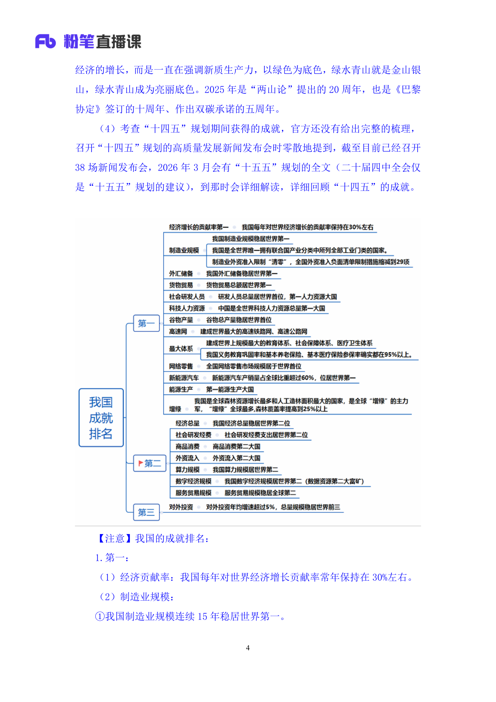
5
②我国是全世界唯一拥有联合国产业分类中所列全部工业门类的国家。
③制造业外资准入限制“清零”，全国外资准入负面清单限制措施缩减到29
项：粮食等其他产业会有外资负面清单，清单上所列项目是不能做的，但是中国
制造业没有负面清单，因为中国制造足够厉害，不怕他人冲击中国的市场，中国
有底气、有自信，制造业规模连续15 年稳居世界第一。
（3）外汇储备：我国外汇储备规模稳居世界第一。
（4）货物贸易：我国货物贸易总额居世界第一。我国不断加大对外开放的
力度，改革开放的大门永远不会关上，全球有200 多个国家和地区，其中和中国
成为主要贸易伙伴的有150 多个，所以我国家外汇储备、贸易总额位居世界第一。
（5）社会研发人员：谈到人，我国处于第一位，我国是第一人力资源大国，
中国是全世界科技人力资源总量的第一大国；我国全社会研发经费支出稳居世界
第二位，记忆“人多钱少”，中国人多，三个臭皮匠顶个诸葛亮；我国正处于并
将长期处于社会主义初级阶段，我国并没有成为发达国家，而是世界上最大的发
展中国家，尽最大的努力投入社会研发经费。
（6）科技人力资源：中国是全世界科技人力资源总量第一大国。
（7）谷物产量：谷物总产量稳居世界首位，因为中国人多，共有14 多亿人
口，都要吃饭，手里有粮，心中不慌。
（8）高速网：我国被称为基建狂魔，基础设施建设非常发达，我国已建成
世界最大的高速铁路网、高速公路网，还为“一带一路”沿线的其他国家建设基
础设施。
（9）最大体系：
①建成世界上规模最大的教育体系、社会保障体系、医疗卫生体系。人在小
时候要接受教育，长大后找工作要有社保，年纪大了可能得病（医疗卫生体系）。
判断：我国建成世界上水平最高的教育体系、社会保障体系、医疗卫生体系（错
误），原因：我国至少没有实现全民医疗，去医院看病要花钱，我国建成了规模
最大的教育体系、社会保障体系、医疗卫生体系，因为人多，所以规模大。
②我国义务教育巩固率和基本养老保险、基本医疗保险参保率确实都在95%
以上，记忆“救我”，从小不接受教育就不能从山沟里走出来，长大后需要社保，
得病后需要医保。
6
（10）网络零售：全国网络零售市场规模居于世界首位，比如现在的人们买
东西大多都选择网购的方式。
（11）新能源汽车：新能源汽车产销量占全球比重超过60%，位居世界第一。
（12）能源生产：第一能源生产大国。
（13）增绿：我国是全球森林资源增长最多和人工造林面积最大的国家，是
全球“增绿”的主力军，“增绿”全球最多，森林覆盖率提高到25%以上（即四
分之一以上）。
2.第二（重点）：排名第一的成就有印象即可，重点是排名第二的成就，考
官经常将排名第二的成就改为排名第一，而一般不会将排名第一的成就改成第二，
因为如果考官将排名第一的成就改成第二，则有希望我国越来越不好的嫌疑，通
过考试希望增加考生对国家的荣誉感、自豪感，将排名第一的成就改成第二，出
题有风险，因此一般将排名第二的成就改为排名第一的成就。
（1）经济总量：我国经济总量稳居世界第二位，我国是世界第二大的经济
体。
（2）社会研发经费：社会研发经费支出居世界第二位。
（3）商品消费：商品消费第二大国，看一个国家老百姓的消费能力，不仅
要看人数多少，还要看舍不舍得花钱，中国老百姓比较勤俭节约，有钱后会有焦
虑感，不是不舍得花钱，而是不敢花钱，因为我国很多基础设施还没有那么完善。
（4）外资流入：我国是外资流入第二大国。
（5）算力规模：我国算力规模居世界第二位。如“东数西算”，采集大数据
后，要对数据加以计算、分析。
（6）数字经济规模：我国数字经济规模居世界第二位。
（7）服务贸易：规模服务贸易规模稳居全球第二。货物贸易是实实在在的
出口，如服装等看得见、摸得着的东西；服务贸易如教育、培训等精神文化类型
的内容。
3.第三：对外投资：对外投资年均增速超过5%，总量规模稳居世界前三。
这一年，令人难忘的是，我们隆重纪念中国人民抗日战争暨世界反法西斯战
争胜利80 周年，设立台湾光复纪念日。国之盛典威武雄壮，胜利荣光永载史册，
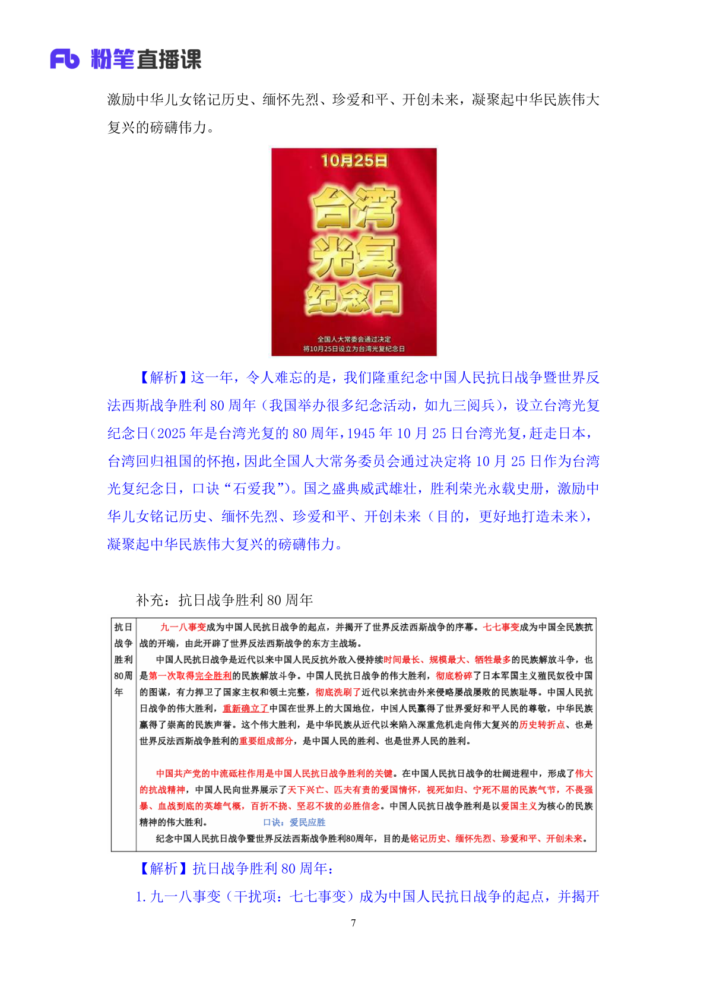
8
了世界反法西斯战争的序幕。七七事变（发生于1937 年7 月7 日）成为中国全
民族抗战的开端，由此开辟了世界反法西斯战争的东方主战场。以前的说法是“八
年抗战”，现在是“十四年抗战”，“八年抗战”是1937 年-1945 年，1937 年之前，
东北抗日联军的抗争也要算，因此改为“十四年抗战”，即从1931 年九一八事变
开始到1945 年。
2.中国人民抗日战争是近代以来中国人民反抗外敌入侵持续时间最长（时间
为14 年）、规模最大（全民族抗战）、牺牲最多（牺牲3500 万军民）的民族解放
斗争，也是第一次取得完全胜利的民族解放斗争（删除“完全”则错误，以前我
国取得过很多胜利，如三元里抗英斗争的胜利，从绝对意义上而言，完全胜利是
中国人民抗日战争）。中国人民抗日战争的伟大胜利，彻底粉碎了日本军国主义
殖民奴役中国的图谋，有力捍卫了国家主权和领土完整，彻底洗刷了近代以来抗
击外来侵略屡战屡败的民族耻辱。中国人民抗日战争的伟大胜利，重新确立了中
国在世界上的大国地位（干扰项：第一次确立了中国在世界上的大国地位，历史
上有大唐朝、大清朝，中国梦的核心内涵是中华民族伟大复兴，“复”即又一次、
再一次，说明我国曾经兴盛过，只不过近代中国没落了）。
3.中国共产党的中流砥柱作用是中国人民抗日战争胜利的关键（没有共产党
就没有今天的新中国）。在中国人民抗日战争的壮阔进程中，形成了伟大的抗战
精神（抗战精神有四个，即爱国情怀、民族气节、英雄气概、必胜信念，口诀“爱
民应胜”，干扰项：生命至上，抗日战争要流血，不可能生命至上，否则不可能
取得胜利，生命至上为抗疫精神的内容，即抗击疫情的内容），中国人民向世界
展示了天下兴亡、匹夫有责的爱国情怀，视死如归、宁死不屈的民族气节，不畏
强暴、血战到底的英雄气概，百折不挠、坚忍不拔的必胜信念。中国人民抗日战
争胜利是以爱国主义为核心的民族精神的伟大胜利：中国精神主要有两个，分别
是以前的民族精神（核心是爱国主义，只有爱国才会爱中华民族）、现在的时代
精神（核心是改革创新），二者核心不同。
我们依靠创新为高质量发展赋能。科技与产业深度融合，创新成果竞相涌现，
人工智能大模型你追我赶，芯片自主研发有了新突破，我国成为创新力上升最快
的经济体之一。
9
天问二号开启“追星”之旅，雅下水电工程开工建设，首艘电磁弹射型航母
正式入列。人形机器人亮出“功夫模式”，无人机演绎绚丽“烟花”。创新创造催
生了新质生产力，也让生活更加多姿多彩。
2025 年8 月26 日国务院日前印发《关于深入实施“人工智能+”行动的意
见》,要求以科技、产业、消费、民生、治理、全球合作等领域为重点，深入实
施“人工智能+”行动。
【解析】
1.我们依靠创新为高质量发展赋能。
（1）如今的发展是高质量发展，用创新赋能，习近平总书记指出创新是引
领发展的第一动力，摆在首位的是科技创新，科技不能独立存在，如从实验室里
研发出科学技术，不可能独立产生生产力，必须要落地，必须和各大产业融合发
展，如马克思主义哲学指出，科学技术属于非实体性生产力，不能独立存在，必
须和劳动者、劳动资料、劳动对象融合。“科学技术是第一生产力”由邓小平同
志1988 年在会见捷克斯洛伐克总统时提出。
（2）我国成为创新力上升最快的经济体之一。全球不只有我国在创新，只
不过我国在创新力层面上升、发展较快。我国在2020 年进入创新型国家行列，
2035 年要进入创新国家前列，2050 年建成创新型强国。
（3）人工智能大模型你追我赶：各种维度你追我赶，如DeepSeek、豆包、
腾讯元宝、文心一言、通义千问、KIMI 等；2025 年在人工智能领域有一部纲领
性文件，提出“人工智能+”，过去十年是“互联网+”，各个行业都在与互联网相
结合，前几年要登上“互联网+”的顺风车，就能发展起来，如粉笔随着“互联
网+”的形式上发展起来；在接下来的十年里，搭上“人工智能+”的顺风车，也
能发家致富。
（4）2025 年8 月26 日国务院日前印发《关于深入实施“人工智能+”行动
的意见》,要求以科技、产业、消费、民生、治理（对内要治理）、全球合作（对
外要全球合作）等领域为重点（口诀“产科消民治全”），深入实施“人工智能+”
行动。
（5）芯片自主研发有了新突破：比如华为研发鸿蒙系统，刚开始不太好用，
但是芯片要自主研发，即使不如其他芯片好用，也要用，因为其他芯片是别国的，
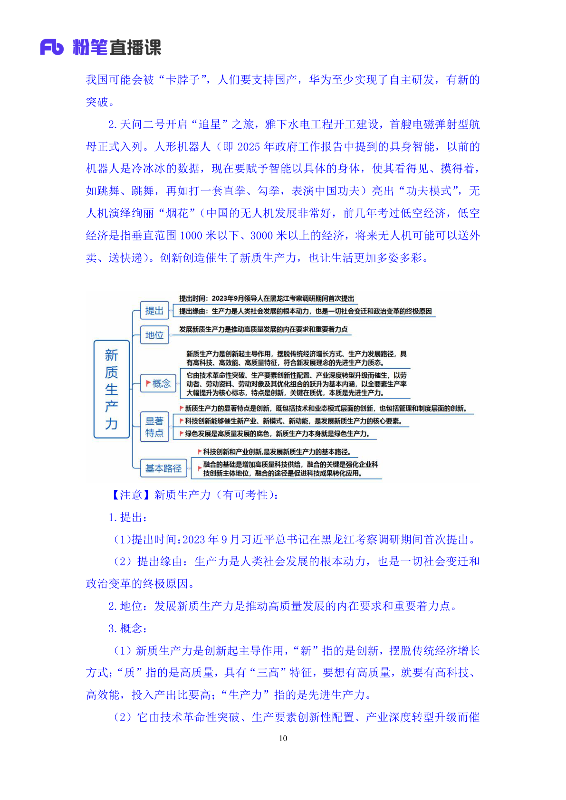
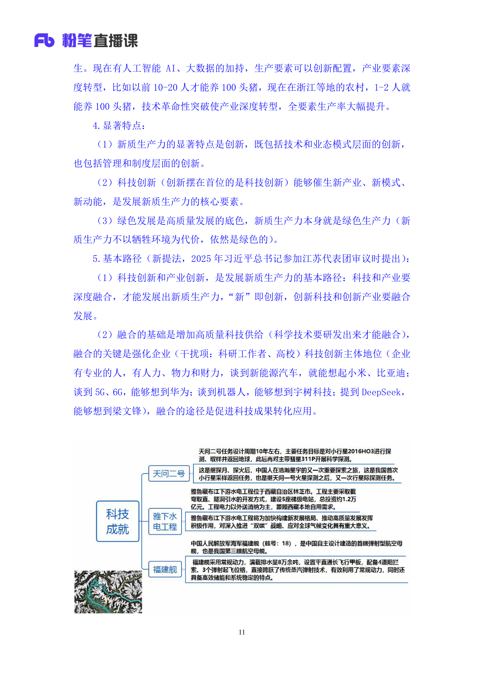
12
【注意】科技成就：
1.天问二号（2025 年5 月）：天问是一个系列，天问系列探测行星，天问一
号探测火星，天问二号探测小行星。
（1）天问二号任务设计周期10 年左右，主要任务目标是对小行星2016HO3
进行探测、取样并返回地球，此后再对主带彗星311P 开展科学探测。
（2）这是继探月、探火后，中国人在浩瀚星宇的又一次重要探索之旅，这
是我国首次小行星采样返回任务，也是继天问一号火星探测之后，又一次行星际
探测任务。
2.雅下水电工程：
（1）雅鲁藏布江下游水电工程位于西藏自治区林芝市，要建立水电站，原
本路是弯的，主要采取截弯取直、隧洞引水的开发方式，通过落差发电。工程电
力以外送消纳为主（主要供给全国各地），兼顾西藏本地自用需求。
（2）雅鲁藏布江下游水电工程将为加快构建新发展格局、推动高质量发展
发挥积极作用，对深入推进“双碳”战略、应对全球气候变化具有重大意义。此
次工程相当于在豆腐上建造大楼，且当地缺氧，工人的建造难度非常大。
3.福建舰：
（1）中国人民解放军海军福建舰（舷号：18），是中国自主设计建造的首艘
弹射型航空母舰（考点），也是我国第三艘航空母舰（我国的首艘航母是辽宁舰，
首艘国产航母是山东舰，首艘电磁弹射型航空母舰是福建舰）。
（2）福建舰采用常规动力（不是核动力），满载排水量8 万余吨，设置平直
通长飞行甲板（前两艘航空母舰需要滑跃，前段微微翘起，就像飞机在跑道上滑
行一段距离才会起飞；此艘航空母舰不需要滑跃，而是弹射，就像弹弓将东西弹
出去，甲板无需微微翘起，平直通长飞行甲板即可满足要求），配备4 道阻拦索、
3 个弹射起飞位格，直接跨跃了传统蒸汽弹射技术，有效利用了常规动力，同时
还具备高效储能和系统稳定的特点。
我们以文化滋养精神家园。文博热、非遗热不断升温，世界遗产再添新员，
悟空和哪吒风靡全球，古韵国风成为年轻人眼中的“顶流审美”。文旅市场人气
火爆，“城超”“村超”热闹非凡，冰雪运动点燃冬日激情。传统与现代交融，中
13
华文化绽放更加灿烂的光芒。
中国西夏陵（文化遗产）：位于宁夏银川，是西夏王朝（1032-1227 年）的
皇家陵园，包括9 座帝王陵墓和271 座陪葬墓，展现了丝绸之路上的多元文化融
合。2025 年7 月11 日列入，使中国世界遗产总数增至60 项。
【解析】
1.我们以文化滋养精神家园。文博热、非遗热不断升温，世界遗产再添新员。
（1）中国西夏陵（文化遗产）：位于宁夏银川，是西夏王朝（1032-1227 年）
的皇家陵园，包括9 座帝王陵墓和271 座陪葬墓，展现了丝绸之路上的多元文化
融合。2025 年7 月11 日列入，使中国世界遗产总数增至60 项（数字无需记忆，
了解即可）。
（2）文化遗产应该是保护第一（而非利用第一），合理利用，最小干预（而
非积极干预），文化遗产一旦破坏，再难恢复，因此保护第一，可以利用，但是
要注意其承载力。
2.悟空（即游戏《黑神话·悟空》，带动山东旅游业，走向全球）和哪吒（《哪
吒2》的票房非常高）风靡全球：体现文化输出，中国男孩和女孩的偶像是奥特
曼、绿巨人、蜡笔小新，希望全球孩子的偶像都变成悟空、哪吒、熊大、熊二，
能够体现中国文化输出、文化自信；古韵国风成为年轻人眼中的“顶流审美”，
十年前，人们在马路上看到身穿汉服的人会用怪异的眼神观察他们，认为其穿的
是奇装异服，但是现在，人们在马路上看到汉服会觉得很漂亮。文旅市场人气火
爆，“城超”“村超”热闹非凡（农文旅体都要融合发展，二十届四中全会提出的
“十五五”规划中提到各个维度都要融合，比如农产品可以带动地方旅游业，如
冻梨带动尔滨热；再如前几年有贵州村超、村BA，2025 年有苏超、浙BA，意义
非凡），冰雪运动点燃冬日激情。传统与现代交融，中华文化绽放更加灿烂的光
芒。考法：四个自信包括道路自信、理论自信、文化自信、制度自信（即“道理
制文”），说到底是文化自信，只有相信文化，才会相信今天所走的道路、实施的
制度、理论均正确。
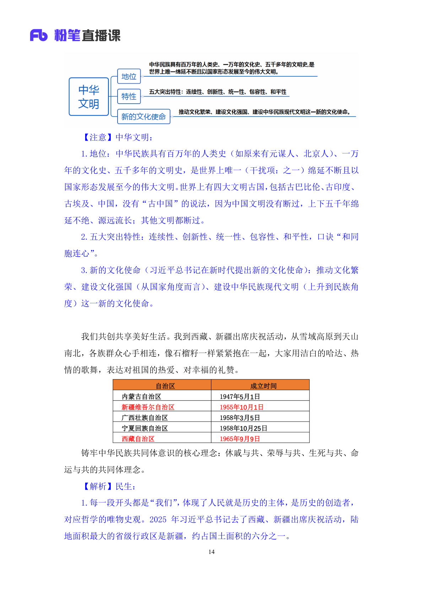
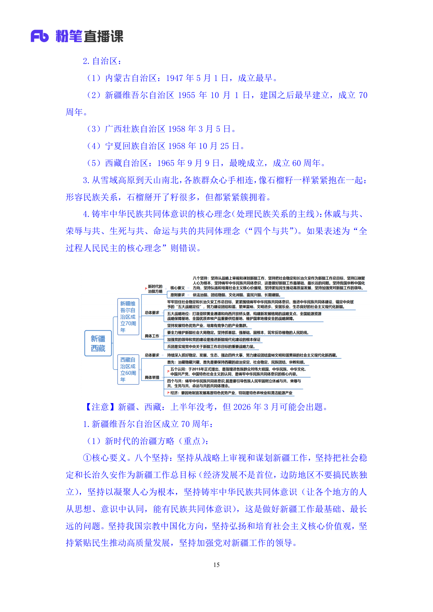
16
②原则要求：依法治疆、团结稳疆、文化润疆、富民兴疆、长期建疆。
（2）总体要求：
①牢牢扭住社会稳定和长治久安工作总目标，紧紧围绕铸牢中华民族共同体
意识、推进中华民族共同体建设，锚定中央赋予的“五大战略定位”，努力建设
团结和谐、繁荣富裕、文明进步、安居乐业、生态良好的社会主义现代化新疆。
②五大战略地位：打造亚欧黄金通道和向西开放桥头堡、构建新发展格局的
战略支点、全国能源资源战略保障基地、全国优质农牧产品重要供给基地、维护
国家地缘安全的战略屏障。
（3）具体工作：
①坚持发展特色优势产业，培育有竞争力的产业集群。
②要全力维护新疆社会大局稳定。坚持抓基层、强基础、固根本，筑牢反恐
维稳的人民防线。
③加强党的领导和党的建设是推进新疆现代化建设的根本保证。
④兵团是实现党中央关于新疆工作总目标的重要战略力量。
2.西藏自治区成立60 周年：
（1）总体要求：持续深入抓好稳定、发展、生态、强边四件大事（发展不
是首位，稳定才是首位），努力建设团结富裕文明和谐美丽的社会主义现代化新
西藏。
（2）具体举措：
①首先：治藏稳藏兴藏，首先是要保持西藏的政治安定、社会稳定、民族团
结、宗教和顺。
②五个认同：于2015 年正式提出，是指增进各族群众对伟大祖国、中华民
族、中华文化、中国共产党、中国特色社会主义的认同，是铸牢中华民族共同体
意识的核心内容。
③四个与共：铸牢中华民族共同体意识，就是要引导各族人民牢固树立休威
与共、荣辱与共、生死与共、命运与共的共同体理念。
④经济：要因地制宜发展高原特色优势产业（要发展，不是和东部的新兴产
业、未来产业一样，擅长什么产业就搞什么产业，因地制宜，具体问题具体分析，
体现矛盾的特殊性，不同的地方矛盾不一样），特别是特色农牧业和清洁能源产
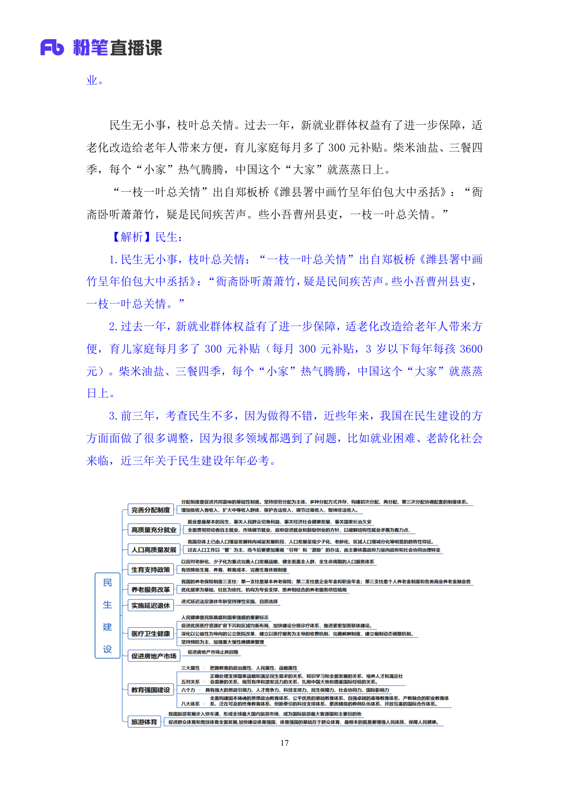
18
【注意】民生建设：把握大方向。2025 年底考查了关于人口、医疗卫生的
方面。
1.完善分配制度：要让老百姓劳有所得。
（1）分配制度是促进共同富裕的基础性制度。坚持按劳分配为主体、多种
分配方式井存，构建初次分配、再分配、第三次分配协调配套的制度体系。初次
分配指的是以市场为主体，能拿多少工资；再分配依靠政府（如税收）；第三次
分配依靠社会、慈善、公益组织。
（2）增加低收入者收入，扩大中等收入群体，保护合法收入，调节过高收
入，取缔非法收入。中等收入群体人越多越好，要橄榄型社会形态，特别穷、特
别有钱的都不要特别多，大多数都是中等收入群体，社会是稳定的，如果穷人多
社会会乱，有钱的人多阶层会固化，也会有问题，中等收入群体多社会会稳定。
2.高质量充分就业：
（1）就业是最基本的民生，事关人民群众切身利益，事关经济社会健康发
展，事关国家长治久安。
（2）全面贯彻劳动者自主就业（不能躺平、摆烂）、市场调节就业（通过
工资、福利、待遇调节）、政府促进就业和鼓励创业的方针（政府无法主导就业，
不分配工作），以破解结构性就业矛盾为着力点（有人有岗位，但人岗不匹配）。
3.人口高质量发展：
（1）我国总体上已由人口增量发展转向减量发展阶段（人口出现负增长），
人口发展呈现少子化、老龄化、区域人口增减分化（“三化”特点）等明显的趋
势性特征（北上广深的人口还在激增，东北人口锐减）。
（2）过去人口工作以“管”为主（以前依靠政府管，因为让大家不生），
而今后要更加重视“引导”和“激励”的办法（现在鼓励生育，不能逼迫），由
主要依靠政府力量向政府和社会协同治理转变。
4.生育支持政策：
（1）以应对老龄化、少子化为重点完善人口发展战略，健全覆盖全人群、
全生命周期的人口服务体系。
19
（2）有效降低生育、养育、教育成本（年轻人不生孩子，因为成本高，没
人带孩子，所以要降低“三育”成本，发放育儿津贴，每年每孩3600 元；学前
一年免费，即幼儿园大班），完善生育休假制度。
5.养老服务改革：
（1）我国的养老保险制度三支柱：第一支柱是基本养老保险；第二支柱是
企业年金和职业年金；第三支柱是个人养老金制度和各类商业养老金融业务。
（2）优化居家为基础（起决定性作用）、社区为依托、机构为专业支撑、
医养相结合的养老服务供给格局。
6.实施延迟退休：渐进式延迟法定退休年龄坚持弹性实施、自愿选择。
7.医疗卫生健康：
（1）人民健康是民族昌盛和国家强盛的重要标志。
（2）促进优质医疗资源扩容下沉和区域均衡布局（医疗资源不平衡，很多
老百姓在家门口看不了病，比如省医院有很多人，但县医院门可罗雀，因为医疗
资源不好，所以医疗资源要下沉），加快建设分级诊疗体系，推进紧密型医联体
建设。
（3）深化以公益性为导向的公立医院改革（不能以收费为标准，不是盈利
为标准，要做好相应服务），建立以医疗服务为主导的收费机制，完善薪酬制度，
建立编制动态调整机制。
（4）坚持预防为主（不是治疗为主），加强重大慢性病健康管理。2025 年
两会结束后，有体重管理三年行动，国家呼吁大家减肥，因为肥胖会引起很多疾
病，提前减肥，饮食健康，多多运动，提高免疫力，不得病就健康。
8.促进房地产市场：促进房地产市场止跌回稳（要软着陆，不能硬着陆）。
9.教育强国建设：
（1）三大属性：把握教育的政治属性、人民属性、战略属性。
（2）五对关系（重点）：
①正确处理支撑国家战略和满足民生需求的关系：不能培养的全是书呆子，
要培养社会需要的，现在越来越专业对口，工作越来越少，不能培养出社会不需
要的人才。
②知识学习和全面发展的关系。
20
③培养人才和满足社会需要的关系。
④规范有序和激发活力的关系。
⑤扎根中国大地和借鉴国际经验的关系。
（3）六个力：具有强大的思政引领力、人才竞争力、科技支撑力、民生保
障力、社会协同力、国际影响力。
（4）八大体系：全面构建固本铸魂的思想政治教育体系、公平优质的基础
教育体系、自强卓越的高等教育体系、产教融合的职业教育体系、泛在可及的终
身教育体系、创新牵引的科技支撑体系、素质精良的教师队伍体系、开放互鉴的
国际合作体系。
10.旅游体育：
（1）我国旅游发展步入快车道，形成全球最大国内旅游市场，成为国际旅
游最大客源国和主要目的地。
（2）促进群众体育和竞技体育全面发展，加快建设体育强国，体育强国的
基础在于群众体育，最根本的就是要增强人民体质、保障人民健康。
我们继续敞开胸怀拥抱世界。上合组织天津峰会、全球妇女峰会成功举办，
海南自贸港全岛封关运作。为更好应对气候变化，我国宣布新一轮国家自主贡献。
继“三大倡议”之后，我提出全球治理倡议，推动建设更加公正合理的全球治理
体系。当今世界变乱交织，一些地区仍被战火笼罩。中国始终站在历史正确一边，
愿同各国携手促进世界和平发展，推动构建人类命运共同体。
2025 年12 月18 日起，海南自由贸易港正式启动全岛封关。全岛封关并非
指封闭岛屿，而是将海南岛整体划定为海关监管特殊区域。海南自由贸易港全岛
封关是指将海南岛全岛建成一个海关监管特殊区域，实施以“‘一线’放开、
‘二线’管住、岛内自由”为基本特征的自由化便利化政策制度；是海南自由贸
易港建设的标志性和基础性工程，标志着海南自由贸易港建设进入实质性阶段。
【解析】对外开放：改革开放的大门永远不会关上。
1.我们继续敞开胸怀拥抱世界。上合组织天津峰会（9 月1 日在天津举办）、
全球妇女峰会成功举办，海南自贸港全岛封关运作。
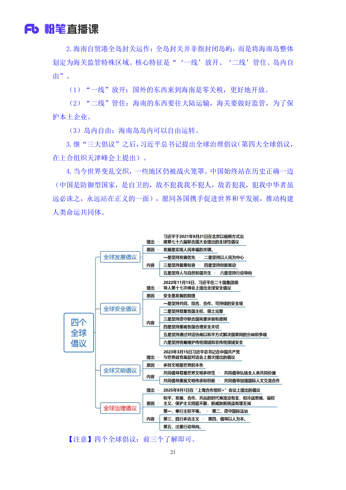
22
1.全球发展倡议：
（1）提出：习近平于2021 年9 月21 日在北京以视频方式出席第七十六届
联合国大会提出的全球性倡议。
（2）原因：发展是实现人民幸福的关键。
（3）内容：一是坚持发展优先；二是坚持以人民为中心；三是坚持普惠包
容四是坚持创新驱动；五是坚持人与自然和谐共生；六是坚持行动导向。
2.全球安全倡议：
（1）提出：2022 年11 月15 日，习近平在二十国集团领导人第十七次峰会
上提出全球安全倡议。
（2）原因：安全是发展的前提。
（3）内容：一是坚持共同、综合、合作、可持续的安全观；二是坚持尊重
各国主权、领土完整；三是坚持遵守联合国宪章宗旨和原则；四是坚持重视各国
合理安全关切；五是坚持通过对话协商以和平方式解决国家间的分歧和争端；六
是坚持统筹维护传统领域和非传统领域安全。
3.全球文明倡议：
（1）提出：2023 年3 月15 日习近平总书记在中国共产党与世界政党高层
对话会上首次提出的倡议。
（2）原因：多样文明是世界的本色。
（3）内容：共同倡导尊重世界文明多样性；共同倡导弘扬全人类共同价值；
共同倡导重视文明传承和创新；共同倡导加强国际人文交流合作。
4.全球治理倡议（最新提出的）：
（1）提出：2025 年9 月1 日在“上海合作组织+”会议上提出的倡议（世
界不太平，全球如何治理，不是美国说了算，在这个十字路口，习近平总书记提
出第四大全球治理倡议）。
（2）原因：和平、发展、合作、共赢的时代潮流没有变，但冷战思维、霸
权主义、保护主义阴霾不散，新威胁新挑战有增无减。
（3）内容：口诀“主人发行多”。
①第一，奉行主权平等：不管国家大还是小、强还是弱、秉持什么样的宗教
信仰，在世界中都是独立的国家，主权平等。
23
②第二，遵守国际法治：主权平等不是嘴上喊口号就能平等，要用国际法治
落地，用制度落地。
③第三，践行多边主义：维护的不是美国、不是一个国家，维护的是多边国
家。
④第四，倡导以人为本：维护人民，不是资本家、政客。
⑤第五，注重行动导向：倡议书都是呼吁大家要行动，要落地，不做就是空
洞的。如果把行动导向表述为问题导向则错误。
前不久，我出席了全运会开幕式，粤港澳三地同心同行，令人欣慰。要坚定
不移贯彻“一国两制”方针，支持港澳更好融入国家发展大局，保持长期繁荣稳
定。两岸同胞血浓于水，祖国统一的历史大势不可阻挡！
【解析】对内：祖国统一。
1.习近平总书记出席了全运会开幕式，粤港澳三地同心同行。
2.要坚定不移贯彻“一国两制”方针，支持港澳更好融入国家发展大局，保
持长期繁荣稳定。
（1）“一国两制”最早是邓小平同志提出的。
（2）针对台湾问题提出。
（3）成功实践“一国两制”：香港、澳门回归。
（4）“一国两制”的前提：一个中国，只有坚持一个中国，才有搞“两制”
的必要。注意逻辑，放在前面的就是前提和基础，比如守正创新，守正是前提和
基础，把正确的守住，才能更好的创新。再如实事求是，实事是前提和基础，只
有搞清楚实际情况，才能探索背后的规律。
拓展：第十五届全国运动会
第十五届全国运动会于2025 年11 月9 日至21 日举行，由广东、香港、澳
门三地共同举办。开幕式和闭幕式分别在广州和深圳举行。十五运会分为竞体比
赛和群众赛事活动，其中竞体比赛设34 个大项419 个小项，群众赛事活动设23
个大项166 个小项。十五运会是粤港澳三地承办的中国规模最大、水平最高、影
响最广的综合性运动会，也是香港、澳门首次承办全国运动会。
24
第十五届全国运动会的主题口号为“激情全运会，活力大湾区”，吉祥物为
喜洋洋、乐融融。它们以国家一级保护动物中华白海豚为原型，头顶的三色水柱
超有讲究，蓝色、绿色、红色分别代表广东、香港、澳门，体现“创新、协调、
绿色、开放、共享”的新发展理念，其命名寓意喜气洋洋、其乐融融、团圆和美、
不忘故乡，深爱家园。会徽以“繁荣、包容”为立意，突出“现代性、时代性”
的造型语言与风格。十五运会和残特奥会火炬名为“绽放”，奖牌“同心跃”以
匠心设计融合粤港澳大湾区发展脉搏、中华文化底蕴与全运历史传承。
第15 届全运会累计奖牌榜显示，山东省以138 枚总数（49 金51 银38 铜）
居首，广东省131 枚（43 金46 银42 铜）紧随其后，浙江省121 枚（44 金37
银40 铜）位列第三。
【解析】第十五届全国运动会：
1.特点（常考）：由广东、香港、澳门三地共同举办。
2.十五运会是粤港澳三地承办的中国规模最大、水平最高、影响最广的综合
性运动会，也是香港、澳门首次承办全国运动会。
3.主题口号（军队文职考过）：“激情全运会，活力大湾区”。
4.吉祥物：喜洋洋、乐融融，它们以国家一级保护动物中华白海豚为原型。
5.会徽：以“繁荣、包容”为立意。
6.火炬名：“绽放”。
7.奖牌：“同心跃”。
8.山东省以138 枚总数居首。
党兴方能国强。我们开展深入贯彻中央八项规定精神学习教育，徙木立信从
严管党治党，去腐生肌推进自我革命，党风政风持续向好。要砥砺初心使命，持
之以恒、久久为功，继续回答好延安“窑洞之问”，书写无愧于人民的时代答卷。
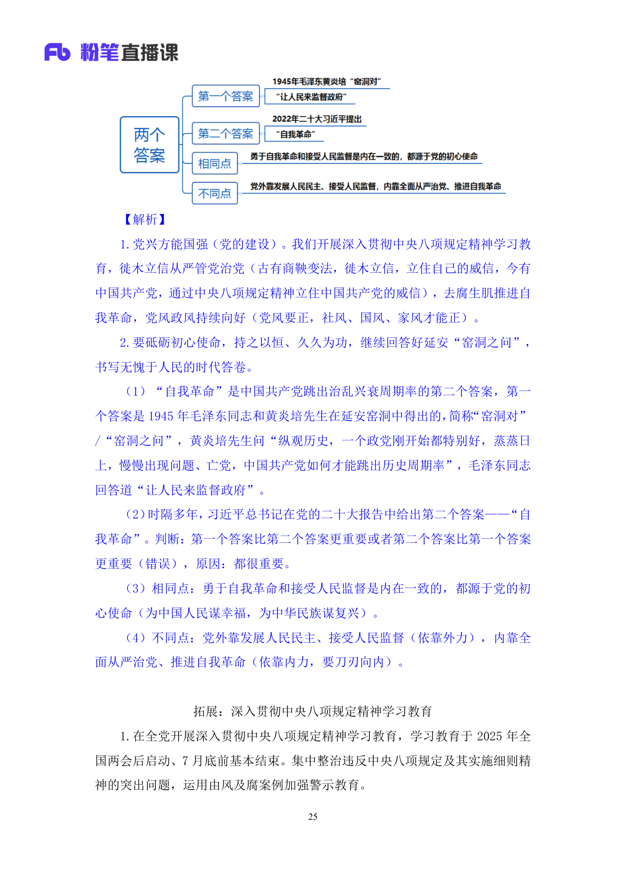
26
2.坚持聚焦主题、简约务实，不分批次、不划阶段，一体推进学查改，融入
日常、抓在经常，学习研讨、查摆问题、集中整治、开门教育。
3.中央八项规定既不是最高标准，更不是最终目的，只是我们改进作风的第
一步，是我们作为共产党人应该做到的基本要求。它是一个切入口和动员令，是
我们党改进作风的第一步。
4.中央八项规定是党的十八大后制定的第一部重要党内法规。中央八项规定
是党中央徙木立信之举，是新时代管党治党的标志性措施。
5.党的作风关系党的形象，关系人心向背，关系党的生死存亡，决定党和国
家事业成败。作风问题根本上是党性问题。作风反映的是形象和素质，体现的是
党性，起决定作用的也是党性。党性、党风、党纪是有机整体，党性是根本，党
风是表现，党纪是保障。
6.中国共产党的最大政治优势是密切联系群众，党执政后的最大危险是脱离
群众，作风问题核心是党同人民群众的关系问题，加强作风建设必须紧扣保持党
同人民群众血肉联系这个关键。
7.自我革命是我们党跳出治乱兴衰历史周期率的第二个答案，从抓作风入手
推进全面从严治党是新时代党的自我革命一条重要经验。推进作风建设常态化长
效化，这是习近平总书记对新时代加强党的作风建设制度保障提出的根本要求。
【解析】深入贯彻中央八项规定精神学习教育：考查浅层次内容（不分批次、
不划阶段），或者考查中央八项规定纠正党的哪个建设（主要改造作风）。前4
条讲的是中央八项规定相关知识点，通过中央八项规定，整的是党的作风。
1.在全党开展深入贯彻中央八项规定精神学习教育，学习教育于2025 年全
国两会后启动、7 月底前基本结束。集中整治违反中央八项规定及其实施细则精
神的突出问题，运用由风及腐案例加强警示教育。
2.坚持聚焦主题、简约务实，不分批次、不划阶段，一体推进学查改，融入
日常、抓在经常，学习研讨、查摆问题、集中整治、开门教育。
3.中央八项规定既不是最高标准，更不是最终目的（最终要实现共产主义），
只是我们改进作风的第一步，是我们作为共产党人应该做到的基本要求。它是一
个切入口和动员令，是我们党改进作风的第一步。
27
4.中央八项规定是党的十八大后制定的第一部重要党内法规。中央八项规定
是党中央徙木立信之举，是新时代管党治党的标志性措施。
5.党的作风关系党的形象，关系人心向背，关系党的生死存亡（党的作风很
重要，如果党员、领导干部天天吃拿卡要、庸懒散奢、形式主义、官僚主义、享
乐主义、奢靡之风，人民不会相信他们），决定党和国家事业成败。作风问题根
本上是党性问题。作风反映的是形象和素质，体现的是党性，起决定作用的也是
党性。党性、党风、党纪是有机整体，党性是根本（思想上出现问题），党风是
表现，党纪是保障（党的纪律处分条例）。
6.中国共产党的最大政治优势是密切联系群众，党执政后的最大危险是脱离
群众，作风问题核心是党同人民群众的关系问题，加强作风建设必须紧扣保持党
同人民群众血肉联系这个关键。
7.自我革命是我们党跳出治乱兴衰历史周期率的第二个答案，从抓作风入手
推进全面从严治党是新时代党的自我革命一条重要经验。推进作风建设常态化长
效化（作风建设不是搞一阵子就结束了，而是要经常搞），这是习近平总书记对
新时代加强党的作风建设制度保障提出的根本要求。
二、展望2026 年
2026 年是“十五五”开局之年。锐始者必图其终，成功者先计于始。我们
要锚定目标任务，坚定信心、乘势而上，扎实推动高质量发展，进一步全面深化
改革开放，推进全体人民共同富裕，续写中国奇迹新篇章。
“锐始者必图其终，成功者先计于始”出自明代张居正《答中丞孙槐溪》，
这句古语道出成事之理：凡果敢开局者，必当思虑周全谋定而行；凡成就功业者，
皆在起步之时就擘画长远。
【解析】展望2026 年：
1.2026 年是“十五五”开局之年，2025 年是“十五五”规划之年。
2.锐始者必图其终，成功者先计于始。
（1）考查文史：“锐始者必图其终，成功者先计于始”出自明代张居正《答
中丞孙槐溪》。
（2）考查哲学：
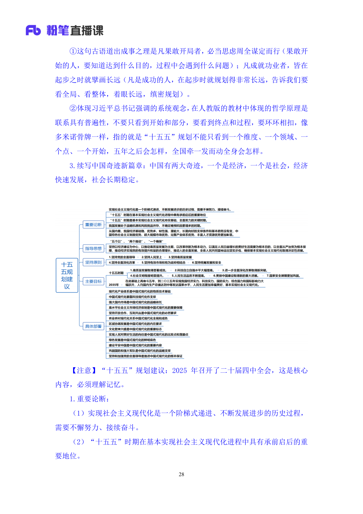
29
（3）“十五五”时期是基本实现社会主义现代化夯实基础、全面发力的关
键时期（国考考到）。
（4）我国发展处于战略机遇和风险挑战并存、不确定难预料因素增多的时
期。
（5）从国内看，我国经济基础稳、优势多、韧性强、潜能大，长期向好的
支撑条件和基本趋势没有变，中国特色社会主义制度优势、超大规模市场优势、
完整产业体系优势、丰富人才资源优势更加彰显。
2.指导思想：
（1）“五个以”“两个推动”“一个确保”。
（2）坚持以经济建设为中心，以推动高质量发展为主题，以改革创新为根
本动力，以满足人民日益增长的美好生活需要为根本目的，以全面从严治党为根
本保障，推动经济实现质的有效提升和量的合理增长，推动人的全面发展、全体
人民共同富裕迈出坚实步伐，确保基本实现社会主义现代化取得决定性进展。
3.坚持原则：
（1）坚持党的全面领导。
（2）坚持人民至上。
（3）坚持高质量发展。
（4）坚持全面深化改革。
（5）坚持有效市场和有为政府相结合。
（6）坚持统筹发展和安全。
4.主要目标：
（1）“十五五”时期：
①高质量发展取得显著成效。
②科技自立自强水平大幅提高。
③进一步全面深化改革取得新突破。
④社会文明程度明显提升。
⑤人民生活品质不断提高。
⑥美丽中国建设取得新的重大进展。
⑦国家安全屏障更加巩固。
30
（2）2035 年：在此基础上再奋斗五年，到二〇三五年实现我国经济实力、
科技实力、国防实力、综合国力和国际影响力大幅跃升，人均国内生产总值达到
中等发达国家水平，人民生活更加幸福美好，基本实现社会主义现代化。
5.具体部署：广东省考考了判断题，军队文职考了多选题。
（1）现代化产业体系是中国式现代化的物质技术基础。
（2）中国式现代化要靠科技现代化作支撑。
（3）强大国内市场是中国式现代化的战略依托。
（4）高水平社会主义市场经济体制是中国式现代化的重要保障。
（5）坚持开放合作、互利共赢是中国式现代化的必然要求。
（6）农业农村现代化关系中国式现代化全局和成色。
（7）区域协调发展是中国式现代化的内在要求。
（8）文化繁荣兴盛是中国式现代化的重要标志。
（9）实现人民对美好生活的向往是中国式现代化的出发点和落脚点。
（10）绿色发展是中国式现代化的鲜明底色。
（11）建设平安中国是中国式现代化的重要内容。
（12）巩固国防和强大军队是中国式现代化的战略支撑。
（13）坚持和加强党的全面领导是推进中国式现代化的根本保证。
山海寻梦，不觉其远；前路迢迢，阔步而行。让我们拿出跃马扬鞭的勇气，
激发万马奔腾的活力，保持马不停蹄的干劲，一起为梦想奋斗、为幸福打拼，把
宏伟愿景变成美好现实。
新年的旭日即将升起。祝祖国山河壮丽、大地丰饶，神州沐朝晖！祝大家心
有所悦、业有所成，万事皆可期！
【解析】
1.山海寻梦，不觉其远；前路迢迢，阔步而行。虽然是梦，但不会觉得很遥
远，只要做就能实现，只要往前走就一定能够实现。2026 年的贺词金句就是本
句，体现的哲学原理是实践，全体人民一起干。
2.让我们拿出跃马扬鞭的勇气，激发万马奔腾的活力，保持马不停蹄的干劲
（2026 年是马年），一起为梦想奋斗、为幸福打拼，把宏伟愿景变成美好现实。
31
题目练习
1.（单选）习近平主席在二〇二六年新年贺词中指出，“我们共创共享美好
生活”，“每个‘小家’热气腾腾，中国‘大家’就蒸蒸日上”。下列与之相关
说法不正确的是（ ）。
A.2025 年是西藏自治区成立70 周年和新疆维吾尔自治区成立60 周年
B.新就业群体权益得到进一步保障
C.0-3 岁婴幼儿，每孩每年可获3600 元育儿补贴
D.适老化改造让老年人的生活质量和便利程度不断提高
【解析】1.选非题。A 项：2025 年是西藏自治区成立60 周年，新疆维吾尔
自治区成立70 周年，该项说法错误，当选。【选A】
2.（单选）习近平主席在二〇二六年新年贺词中指出，2025 年是“十四五”
收官之年。5 年来，我们踔厉奋发、勇毅前行，克服重重困难挑战，圆满完成目
标任务，对新年贺词中提及的内容，以下说法正确的是（ ）。
①我国经济总量连续跨越新关口，2026 年预计达到140 万亿元
②隆重纪念中国人民抗日战争暨世界反法西斯战争胜利80 周年，设立台湾
光复纪念日
③科技与产业深度融合，创新成果竞相涌现，我国成为创新力上升最快的经
济体之一
④成功举办亚太经合组织天津峰会、全球妇女峰会，海南自贸港全岛封关运
作
⑤开展深入贯彻中央八项规定精神学习教育，从严管党治党，党风政风持续
向好
A.2 项
B.3 项
C.4 项
D.5 项
【解析】2.①错误，回顾的是2025 年，2025 年预计达到140 万亿元，具体
数字要等到政府工作报告明确公布，排除。④错误，天津举办的是上海合作组织
天津峰会，亚太经合组织是在韩国举办的，排除。【选B】
32
3.（单选）习近平主席在二〇二六年新年贺词中提到了“人工智能大模型”、
“天问二号”、“雅下水电工程”、“首艘电磁弹射型航母”等科技成就，下列
与之相关的说法正确的是（ ）。
A.开源大模型DeepSeek-R1 凭借极低的训练成本，为全球人工智能大模型发
展提供了一条低成本、高效能的“中国路径”
B.天问二号是我国首次实施火星探测与采样返回任务，也是我国首次对地外
天体实施“双目标探测”
C.雅下水电工程采用“截弯取直、隧洞引水”的创新开发方式，工程电力以
西藏本地自用为主，余电外送消纳
D.我国首艘核动力电磁弹射型航空母舰为福建舰，是我国第三艘航空母舰，
2025 年11 月5 日正式入列
【解析】3.2025 年的国考和各大省考，政治理论改革的第一年大家觉得简
单，大多数问的是错误选项，今年考完很多人觉得难，因为今年问的是表述正确
的。
B 项：天问二号探测的是小行星，天问一号探测火星，说法错误，排除。
C 项：雅下水电工程主要以外送消纳为主，本地自用为辅，说法错误，排除。
D 项：福建舰是常规动力，说法错误，排除。【选A】
4.2025 年12 月31 日，国家主席习近平发表二〇二六年新年贺词，对新年
贺词中提及的内容，以下说法正确的是（ ）。
A.“西夏陵”列入《世界遗产名录》，成为中国第60 项世界遗产
B.将9 月3 日设立为台湾光复纪念日
C.在中国-中亚五国峰会提出全球治理倡议，推动建设更加公正合理的全球
治理体系
D.十四运是粤港澳三地首次联合承办，也是全运会历史上第一次走进香港、
澳门
【解析】4.B 项：9 月3 日是胜利日，台湾光复纪念日是10 月25 日，说法
错误，排除。
33
C 项：应该是上合组织天津峰会提出来的，说法错误，排除。
D 项：十五运是粤港澳三地首次联合承办，十四运在陕西西安召开的，说法
错误，排除。【选A】
5.习近平主席在二〇二六年新年贺词中指出，党兴方能国强，要砥砺初心使
命，持之以恒、久久为功，继续回答好延安“窑洞之问”，书写无愧于人民的时
代答卷。关于“窑洞之问”，下列说法不正确的是（ ）。
A.“窑洞之问”即中国共产党如何能跳出历史周期率的“周期率之问”
B.“窑洞之问”的两个答案分别是“让人民监督政府”和“自我革命”
C.“窑洞之问”的两个答案都源于党的初心使命
D.跳出历史周期率是深入推进党的自我革命的根本目的
【解析】5.选非题，“窑洞之问”就是如何才能跳出治乱兴衰的历史周期率。
D 项：党的自我革命的根本目的是推动社会革命，党风清正，希望国风、社风、
家风都正，搭配错误，当选。【选D】
6.（26 年浙江省考·单选）2025 年是军队建设“十四五”规划收官之年。
下列有关表述，不正确的是：
A.3 月7 日，中共中央总书记、国家主席、中央军委主席习近平出席十四届
全国人大三次会议解放军和武警部队代表团全体会议时指出，要强化军地合力，
用好地方优势力量和资源，提高我军建设质量和效益
B.八一建军节前夕，中央军委主席习近平签署命令，发布军事航天部队、网
络空间部队、信息支援部队、联勤保障部队军旗旗面式样，于2025 年8 月1 日
启用
C.巩固国防和强大军队是中国式现代化的战略支撑，要加快先进战斗力建设，
推进军事治理现代化，巩固提高一体化国家战略体系和能力
D.11 月5 日，我国第一艘电磁弹射型航空母舰福建舰正式入列东海舰队，
入列授旗仪式在海南三亚某军港举行，这标志着中国海军正式进入“三航母时
代”
34
【解析】6.选非题。D 项：海南三亚某军港举行，与入列东海矛盾，应该是
南海舰队，说法错误，当选。【选D】
7.（26 年浙江省考·单选）习近平总书记指出，人工智能作为引领新一轮
科技革命和产业变革的战略性技术，深刻改变人类生产生活方式。下列有关表述，
正确的是：
A.当前全球人工智能科技创新和产业创新深度融合，每年为全球经济贡献超
百万亿元，已成为最重要的增长点之一
B.要加快实施“人工智能+”产业发展行动，构建政府主导、国企运营、民
企参与的产学研用协同创新体系，助力传统产业改造升级
C.人工智能可以是造福人类的国际公共产品，要广泛开展人工智能国际合作，
帮助全球南方国家加强技术能力建设，为弥合全球智能鸿沟作出中国贡献
D.要持续加强基础研究，集中力量攻克关键核心技术，强化算力、算法、数
据等高效供给，加快构建独立于西方技术体系的人工智能产业链生态链，确保产
业安全和国家安全
【解析】7.A 项：现在人工智能增长没有这么快，《人工智能规划纲要》谈
到，到2030 年才能成为重要的增长极，说法错误，排除。
B 项：谈到科技、创新，应该是企业为主导，不是政府主导，说法错误，排
除。
D 项：不能独立，独立意味着不和国际接轨，要自主可控、要自我研发，要
协同运行，因为是国际公共产品，说法错误，排除。
C 项：南方国家讲的是广大的发展中国家，生产力比较落后，国际公共产品
要稍微偏一偏他们，说法正确，当选。【选C】
8.（25 年事业单位联考B 类·单选）2025 年《政府工作报告》提出，要培
育具身智能等未来产业。关于具身智能，下列说法错误的是（ ）。
A.具身智能体可以有多种形态，能够代替人类从事危险的工作
B.具身智能相较于传统人工智能在静态和结构化任务中表现更好
C.人工智能大模型的发展使具身智能成为人工智能浪潮的重点方向
35
D.具身智能的机器大脑能够决策，并控制肢体对外部环境变化做出反应
【解析】8.选非题。B 项：传统的人工智能是冷冰冰的数据，给口令然后运
作，在静态和结构化任务中表现较好，具身智能在动态（机器人外在形态会变化）
和多变的任务中表现比较好，说法错误，当选。
D 项：机器人大脑能够决策，并没有说替代人类，机器人通过人安装程序，
才能控制肢体，接受指令，然后综合判断，能够决策，不是具有人的意识的决策，
而是通过人下命令，自己可以作出基础的判断，说法正确，排除。【选B】
9.（25 年天津市考·单选）低空经济正以惊人的速度蓬勃发展。关于低空
经济，下列说法错误的是（ ）。
A.低空经济的空域范围不超过2000 米
B.无人机、直升机均为低空领域的代表性产品
C.低空经济具有创新引领、绿色低碳、数实融合的特征
D.低空经济是战略性新兴产业的代表之一
【解析】9.选非题。A 项：垂直范围是1000 米，实际需求不超过3000 米，
说法错误，当选。【选A】
10.（25 年事业单位联考·单选）习近平总书记曾点赞“村超”活力四射，
“村超”“村BA”也被媒体誉为观察中国式现代化的一个窗口。下列关于“村
超”“村BA”的描述，错误的是（ ）。
A.“村超”“村BA”均发源于黔东南苗族侗族自治州
B.“村超”联队曾与香港明星足球队进行过交流比赛
C.“村BA”比赛允许半数的参赛球员为篮协注册球员
D.“村BA”总决赛中设置了最有价值球员（MVP）奖
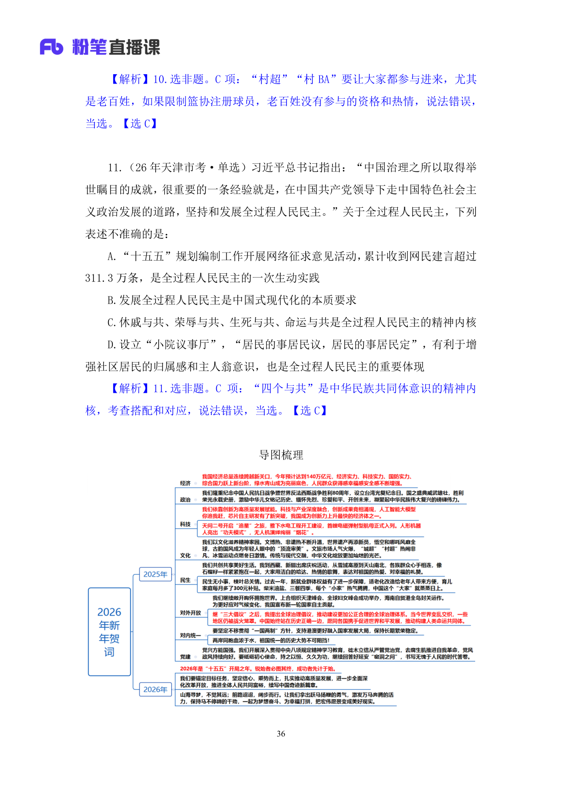
37
【注意】2026 年新年贺词：全文内容不多，共1600 多字。
1.2025 年：
（1）经济（重点）：我国经济总量连续跨越新关口，今年预计达到140 万
亿元（注意数字），经济实力、科技实力、国防实力、综合国力跃上新台阶，绿
水青山成为亮丽底色，人民群众获得感幸福感安全感不断增强。
（2）政治：我们隆重纪念中国人民抗日战争暨世界反法西斯战争胜利80
周年，设立台湾光复纪念日。国之盛典威武雄壮，胜利荣光永载史册，激励中华
儿女铭记历史、缅怀先烈、珍爱和平、开创未来，凝聚起中华民族伟大复兴的磅
礴伟力。
（3）科技（重点）：
①我们依靠创新为高质量发展赋能。科技与产业深度融合，创新成果竞相涌
现，人工智能大模型你追我赶，芯片自主研发有了新突破，我国成为创新力上升
最快的经济体之一。
②天问二号开启“追星”之旅，雅下水电工程开工建设，首艘电磁弹射型航
母正式入列。人形机器人亮出“功夫模式”，无人机演绎绚丽“烟花”。
（4）文化（了解）：我们以文化滋养精神家园。文博热、非遗热不断升温，
世界遗产再添新员，悟空和哪吒风靡全球，古韵国风成为年轻人眼中的“顶流审
美”。文旅市场人气火爆，“城超”“村超”热闹非凡，冰雪运动点燃冬日激情。
传统与现代交融，中华文化绽放更加灿烂的光芒。
（5）民生：
①我们共创共享美好生活。我到西藏、新疆出席庆祝活动，从雪域高原到天
山南北，各族群众心手相连，像石榴籽一样紧紧抱在一起，大家用洁白的哈达、
热情的歌舞，表达对祖国的热爱、对幸福的礼赞。
②民生无小事，枝叶总关情。过去一年，新就业群体权益有了进一步保障，
适老化改造给老年人带来方便，育儿家庭每月多了300 元补贴。柴米油盐、三餐
四季，每个“小家”热气腾腾，中国这个“大家”就蒸蒸日上。
（6）对外开放：
①我们继续敞开胸怀拥抱世界。上合组织天津峰会、全球妇女峰会成功举办，
海南自贸港全岛封关运作。为更好应对气候变化，我国宣布新一轮国家自主贡献。
38
②继“三大倡议”之后，我提出全球治理倡议（重点记忆），推动建设更加
公正合理的全球治理体系。当今世界变乱交织，一些地区仍被战火笼罩。中国始
终站在历史正确一边，愿同各国携手促进世界和平发展，推动构建人类命运共同
体。
（7）对内统一：
①要坚定不移贯彻“一国两制”方针，支持港澳更好融入国家发展大局，保
持长期繁荣稳定。
②两岸同胞血浓于水，祖国统一的历史大势不可阻挡！
（8）党建：党兴方能国强。我们开展深入贯彻中央八项规定精神学习教育，
徙木立信从严管党治党，去腐生肌推进自我革命，党风政风持续向好。要砥砺初
心使命，持之以恒、久久为功，继续回答好延安“密洞之问”，书写无愧于人民
的时代答卷。
2.2026 年：
（1）2026 年是“十五五”开局之年（二十届四中全会“十五五”规划的考
点）。锐始者必图其终，成功者先计于始（金句，可能考查哲学原理）。
（2）我们要锚定目标任务，坚定信心、乘势而上，扎实推动高质量发展，
进一步全面深化改革开放，推进全体人民共同富裕，续写中国奇迹新篇章。
（3）山海寻梦，不觉其远；前路迢迢，阔步而行（金句，可能考查哲学原
理）。让我们拿出跃马扬鞭的勇气，激发万马奔腾的活力，保持马不停蹄的干劲，
一起为梦想奋斗、为幸福打拼，把宏伟愿景变成美好现实。
39
遇见不一样的自己
Be your better self
二十届四中全会要点解读
二十届四中全会要点解读
（笔记）
主讲教师：张晓
授课时间：2025.10.25
粉笔事考·官方微信
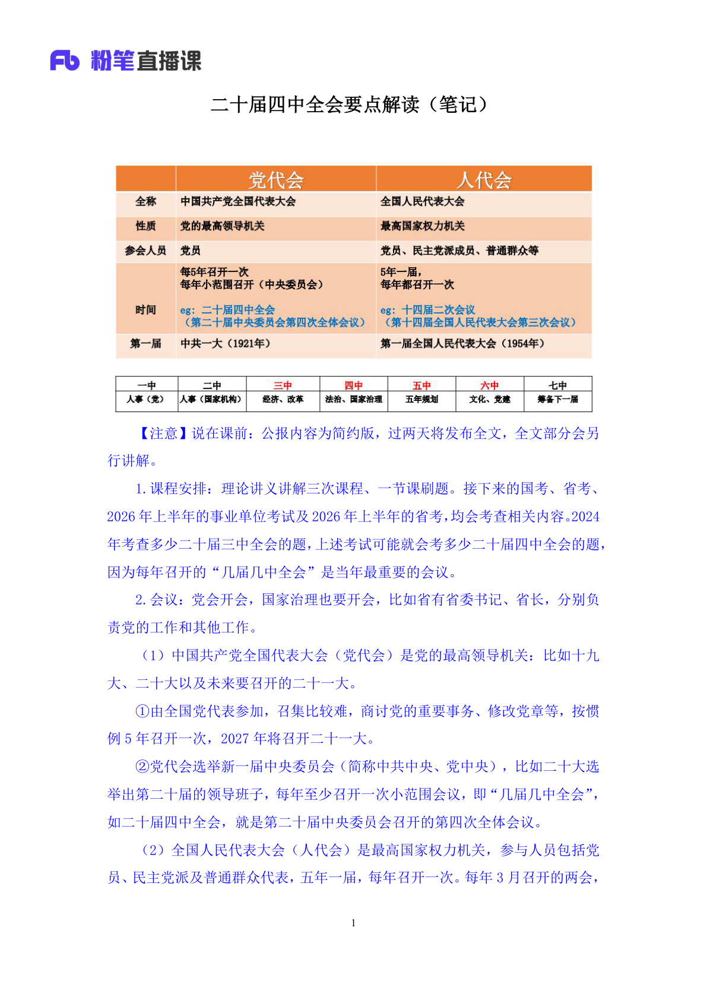
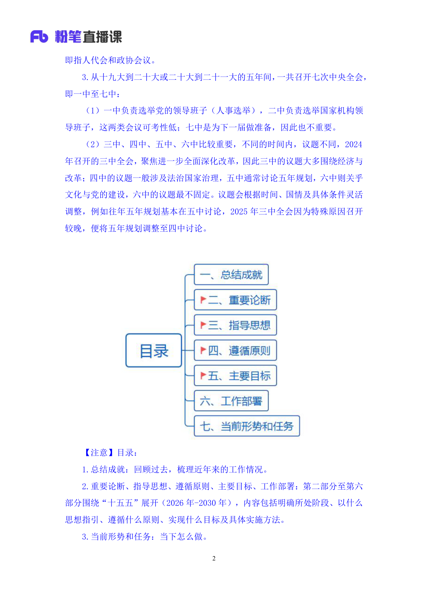
3
4.逻辑：先忆往昔看过去峥嵘岁月，然后展望未来我们前程似锦，然后看当
下我们重任在肩。考试不考逻辑，主要为了在后续听课过程中避免感到不知所措。
中国共产党第二十届中央委员会第四次全体会议公报
（2025 年10 月23 日中国共产党第二十届中央委员会第四次全体会议通过）
全会听取和讨论了习近平受中央政治局委托所作的工作报告，审议通过了
《中共中央关于制定国民经济和社会发展第十五个五年规划的建议》。
【解析】中国共产党第二十届中央委员会第四次全体会议公报：
1.公报：考事业单位的同学可能会涉及公文相关内容，该部分在历年考试中
出现过，可能考查公文类型。公报用于公布重要决定或重要事项，与“公告”不
同，国考涉及公告。
2.时间：部分地方事业单位考试可能考查具体会议时间，考公务员的同学无
需记忆，了解即可。该会议于10 月20 日-10 月23 日召开，为期四天。
3.审议通过了《中共中央关于制定国民经济和社会发展第十五个五年规划的
建议》：无论报考什么考试，都需记住。
（1）按理来说五年规划是在五中全会当中，但2025 年比较特殊，四中全会
是关于五年规划的。
（2）第一个五年计划始于1953 年，第十五个五年规划是从2026 年开始，
具体为2026 年-2030 年，为未来五年构画蓝图。
【拓展】
1.今年是“十四五”规划收官之年，也是“十五五”规划谋划之年。这是新
时代以来党中央制定的第三个五年规划建议，也是全面建设社会主义现代化国家
新征程上的第一个五年规划建议。
VS“十四五”时期是开启全面建设社会主义现代化国家新征程的第一个五年。
2.科学制定和接续实施五年规划，是我们党治国理政一条重要经验，也是中
国特色社会主义一个重要政治优势。
5.从第一个五年计划到第十四个五年规划，一以贯之的主题是把我国建设成
为社会主义现代化国家。
4
【解析】
1.今年是“十四五”规划收官之年，也是“十五五”规划谋划之年：“2025
年是“十五五”规划的开局之年”表述错误，2025 年并非“十五五”规划开局
之年，“十五五”规划还未开始，2026 年才会开启（2026-2030 年）。
2.这是新时代以来党中央制定的第三个五年规划建议：新时代指2012 年（习
近平总书记上台）以来，经历了2016-2020 年（“十三五”）、2021-2025（“十
四五”）、2026-2030 年（“十五五”）三个五年规划。
3.也是全面建设社会主义现代化国家新征程上的第一个五年规划建议：
（1）VS“十四五”时期是开启全面建设社会主义现代化国家新征程的第一
个五年：二者并不冲突，核心区别在于“开启”，2020 年打赢脱贫攻坚战、全
面建成小康社会后，2021 年开启“十四五”规划，也开启了全面建设社会主义
现代化，考试中如果有“开启”，对应“十四五”规划，如果没有“开启”，对
应“十五五”规划。
（2）“十四五”规划时期相当于上车了、小跑了一段，“十五五”时期相
当于上高速，开得游刃有余、加速度了。
4.科学制定和接续实施五年规划，是我们党治国理政一条重要经验，也是中
国特色社会主义一个重要政治优势：
（1）在政治内容中，涉及“重要”的表述基本都是正确的。因为我党不会
说什么不重要。
（2）为什么用五年：时间不长也不短，如果时间过长（比如10 年），实施
不好可能会僵化，五年从一个政策从开始提出到落实，再到有所成效，正好进行
检验。
5.从第一个五年计划到第十四个五年规划，一以贯之的主题是把我国建设成
为社会主义现代化国家（可能挖坑考查，并且有地方已经考查过了）：毛泽东时
期、周恩来时期曾提出“四个现代化”；到了邓小平时期，提出“三步走”发展
战略，其中第三步是基本实现社会主义现代化；习近平时期同样聚焦现代化建设，
将现代化步骤分为“两步走”，即2035 年基本实现社会主义现代化，到本世纪
中叶全面建成社会主义现代化强国。可见，不同时期的领导人始终一以贯之，围
绕社会主义现代化国家建设推进工作。
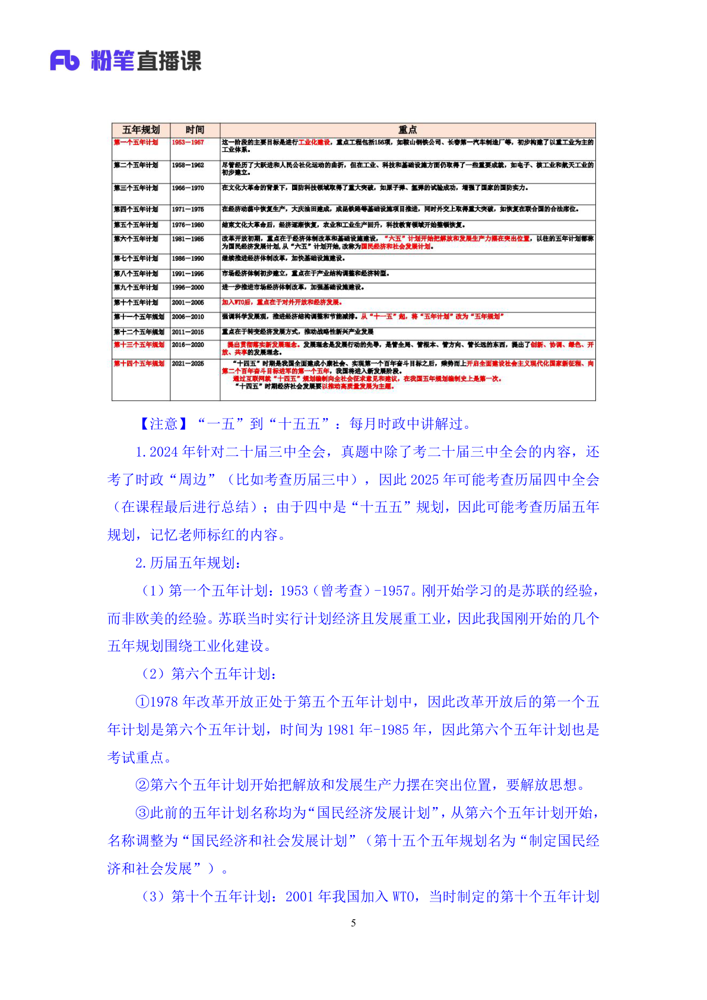
6
重点在于对外开放和经济发展。
（4）第十一个五年计划：仅有一个考点，此前五年计划均称“计划”（因
过去实行计划经济），从第十一个五年计划开始改称“规划”，更符合当下社会
主义制度。记忆“‘11’谐音‘易’，‘易’就是‘变’”。
（5）第十三个五年规划：提出贯彻落实新发展理念，提出创新、协调、绿
色、开放、共享的发展理念（五大发展理念）。
（6）第十四个五年规划：
①开启全面建设社会主义现代化国家新征程、向第二个百年奋斗目标进军的
第一个五年（2020 年打赢脱贫攻坚战）。
②通过互联网就“十四五”规划编制向全社会征求意见和建议，在我国五年
规划编制史上是第一次。
③“十四五”时期经济社会发展要以推动高质量发展为主题。
（7）注意：除了标红之外的内容都不用记忆，比如“文革”时期，肯定不
会考查，重点记忆有特殊意义的内容，如第一个五年计划、改革开放后的第一个
五年计划、加入WTO，这些都是积极向上的，再记住比较新的两个五年规划。
3.五年规划不仅用于应试，还是普通老百姓隐藏着的“财富密码”。第一个
五年计划时期，如果读懂当年的五年计划，可进入钢铁厂，获得“铁饭碗”；第
六个五年计划（改革开放后的第一个五年计划）时期，可前往深圳等大都市，当
时只要胆子大、敢“下海”，“猪都能在风口中上树”；第十三个五年规划时期，
“互联网+”领域都赚钱（如粉笔）；“十四五”时期新能源汽车是重点。
一、总结成就
全会充分肯定党的二十届三中全会以来中央政治局的工作。一致认为，中央
政治局认真落实党的二十大和二十届历次全会精神，坚持稳中求进工作总基调，
完整准确全面贯彻新发展理念，统筹推进“五位一体”总体布局，协调推进“四
个全面”战略布局，统筹国内国际两个大局，统筹发展和安全，进一步全面深化
改革，扎实推动高质量发展，推进社会主义民主法治建设，加强宣传思想文化工
作，切实抓好民生保障和生态环境保护，维护国家安全和社会稳定，开展深入贯
彻中央八项规定精神学习教育、纵深推进全面从严治党，加强国防和军队现代化
7
建设，做好港澳工作和对台工作，深入推进中国特色大国外交，推动经济持续回
升向好，“十四五”主要目标任务即将胜利完成。隆重纪念中国人民抗日战争暨
世界反法西斯战争胜利80 周年，极大振奋民族精神、激发爱国热情、凝聚奋斗
力量。
【解析】总结成就（基本没有全新的表达）：忆往昔峥嵘岁月。不用死记硬
背，都是好的，一句话总结“干得漂亮”。全会充分肯定党的二十届三中全会以
来中央政治局的工作。
1.提出了三个统筹：统筹推进“五位一体”总体布局，协调推进“四个全面”
战略布局，统筹国内国际两个大局，统筹发展和安全。
（1）统筹推进“五位一体”总体布局，协调推进“四个全面”：考试中可
能将“总体布局”“战略布局”互换，总体布局是“五位一体”，记忆“体”对
“体”，“总”的数字更大；战略布局是“四个全面”。
（2）统筹国内国际两个大局：国内是实现中华民族伟大复兴的战略全局，
国际是世界处在百年未有之大变局。
（3）统筹发展和安全：发展是硬道理，但发展不能不安全，安全是大前提，
二者需统筹起来。
（4）三个统筹是老的知识，了解即可。
2.进一步全面深化改革，扎实推动高质量发展（经济），推进社会主义民主
法治建设（政治），加强宣传思想文化工作（文化），切实抓好民生保障（社会）
和生态环境保护（生态文明建设）：对应“五位一体”总体布局。
3.维护国家安全和社会稳定，开展深入贯彻中央八项规定精神学习教育、纵
深推进全面从严治党，加强国防和军队现代化建设，做好港澳工作和对台工作，
深入推进中国特色大国外交：对内祖国统一，对外和平外交，再加党的建设。建
设好总体布局和战略布局要有五个条件（国家不能不安全，要有国防军队保驾护
航，对内祖国统一，对外和平外交，还有党的领导建设）。
4.推动经济持续回升向好，“十四五”主要目标任务即将胜利完成：“十四
五”是到2025 年年底，目前还没有结束，因此是“即将”，而且可以完成。
5.隆重纪念中国人民抗日战争暨世界反法西斯战争胜利80 周年：2025 年也
是联合国成立的80 周年（二战结束之后成立联合国），也是台湾光复的80 周年。
8
全会高度评价“十四五”时期我国发展取得的重大成就。“十四五”时期我
国发展历程极不寻常、极不平凡。面对错综复杂的国际形势和艰巨繁重的国内改
革发展稳定任务，以习近平同志为核心的党中央团结带领全党全国各族人民，迎
难而上、砥砺前行，经受住世纪疫情严重冲击，有效应对一系列重大风险挑战，
推动党和国家事业取得新的重大成就。我国经济实力、科技实力、综合国力跃上
新台阶，中国式现代化迈出新的坚实步伐，第二个百年奋斗目标新征程实现良好
开局。
【解析】全会高度评价“十四五”时期我国发展取得的重大成就：过去五年
干得漂亮。
1.面对错综复杂的国际形势和艰巨繁重的国内改革发展稳定任务：记忆定位。
改革是动力（政治中动力多为改革、创新或二者结合），发展是目的（改革就是
为了发展，不是为了退后），稳定是大前提。因此，要将改革的力度、发展的速
度和社会的可接受程度统一起来。
2.我国经济实力、科技实力、综合国力跃上新台阶（记忆）：判断一个国家
综合国力强弱，首先要看经济实力，通常以GDP 衡量经济实力；其次是科技实力，
经济靠科技推动，尤其在当下，看一个国家的综合国力，不得不看科技实力（两
个“济”）。
3.中国式现代化迈出新的坚实步伐，第二个百年奋斗目标新征程实现良好开
局：当前我们正向第二个百年奋斗目标进军，第一个百年奋斗目标（建党百年全
面建成小康社会）已完成，第二个百年奋斗目标是在建国百年建成社会主义现代
化强国，“十四五”是开局阶段。
二、重要论断
实现社会主义现代化是一个阶梯式递进、不断发展进步的历史过程，需要不
懈努力、接续奋斗。“十五五”时期是基本实现社会主义现代化夯实基础、全面
发力的关键时期，在基本实现社会主义现代化进程中具有承前启后的重要地位。
“十五五”时期我国发展环境面临深刻复杂变化，我国发展处于战略机遇和风险
挑战并存、不确定难预料因素增多的时期。我国经济基础稳、优势多、韧性强、
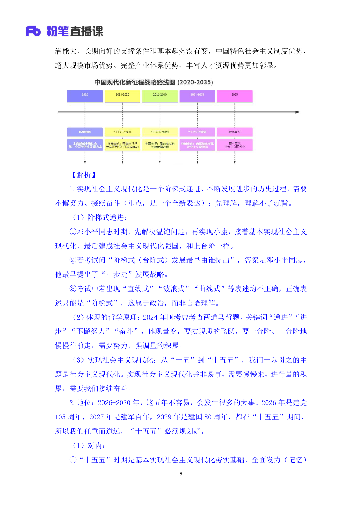
10
的关键时期，在基本实现社会主义现代化进程中具有承前启后（记忆）的重要地
位。
a.结合时间轴来看，2020 年全面建成小康社会到2035 年基本实现社会主义
现代化，共计15 年，可划分为三个五年规划，即“十四五”“十五五”“十六
五”。其中，“十四五”已过去，属于开局起步阶段，开局决定全局，起步决定
后势，我们开局良好；“十六五”是冲刺阶段，不能将全部希望寄托于这最后五
年，万一实现不了，时间会很紧张。
b.因此，处于中间的“十五五”时期，承前启后，而且是要夯实基础、全面
发力的关键时期。在这段时间必须打好基础、全面发力，不能将希望都寄托在最
后阶段，否则会面临很大压力。
②“十五五”时期我国发展环境面临深刻复杂变化，我国发展处于战略机遇
和风险挑战并存、不确定难预料因素增多（记忆）的时期。当今世界处于百年未
有之大变局中，但不必恐慌，正如丘吉尔所说“不要浪费每一场危机”，危机背
后往往蕴藏机会，因此这一时期危中有机、危可转机，虽有诸多风险挑战，但仍
存在不少战略机遇。
（2）对外：我国经济基础稳（我国是世界第二大经济体）、优势多（四大
优势）、韧性强（比如粮食安全、各大产业领域的安全，抗风险能力很强）、潜
能大（中国的消费市场非常之大，是世界第二大消费市场），长期向好的支撑条
件和基本趋势没有变，中国特色社会主义制度优势、超大规模市场优势、完整产
业体系优势、丰富人才资源优势更加彰显。概括为“稳多强大”。
①四大优势：
a.中国特色社会主义的制度优势：我国实行中国特色社会主义制度，优势在
于集中力量办大事，例如面对芯片被“卡脖子”的问题，可集中力量突破。不同
于西方国家，如特朗普上台后推翻拜登政府的所有政策，在内耗，而我国则是一
代接着一代，一代人有一代人的使命，如同接力般向前冲。
b.超大规模市场优势：我国人口众多。以疫情期间为例，智利的车厘子因无
法进入我国市场而腐烂，部分国家的小龙虾只能放生。
c.完整的产业体系优势：我国是全世界唯一拥有联合国产业分类中全部门类
的国家，是“唯一”，不是“之一”。
11
d.丰富的人才资源优势：我国社会研发人员数量位居世界第一（社会研发经
费位居世界第二，人多钱少）。
②考查方式：若将“人才资源优势”改为“人口资源优势”则不正确，我国
正从人口红利向人才红利转变。
③口诀：“制市产才（知识产才）”，分别对应制度、市场、产业、人才。
3.以上梳理出了三个重要论断，从客观上梳理我们在“十五五”时期处在社
会主义现代化的具体哪个阶段，对内“关键时期”“重要地位”；对外机遇和挑
战并存；我国的优势是“稳多强大”。这部分是作出了重要的客观的论断，定标
“十五五”到底处在什么样的阶段。
全党要深刻领悟“两个确立”的决定性意义，增强“四个意识”、坚定“四
个自信”、做到“两个维护”，保持战略定力，增强必胜信心，积极识变应变求
变，敢于斗争、善于斗争，勇于面对风高浪急甚至惊涛骇浪的重大考验，以历史
主动精神克难关、战风险、迎挑战，集中力量办好自己的事，续写经济快速发展
和社会长期稳定两大奇迹新篇章，奋力开创中国式现代化建设新局面。
【解析】
1.保持战略定力，增强必胜信心，积极识变应变求变，敢于斗争、善于斗争，
勇于面对风高浪急甚至惊涛骇浪的重大考验，以历史主动精神克难关、战风险、
迎挑战，集中力量办好自己的事，续写经济快速发展和社会长期稳定两大奇迹新
篇章（常考，二十大提出）。“十五五”规划是一谈经济、二谈社会，是一致的。
2.这段文字体现的哲学原理：体现了主观能动性。之前讲解了客观规律，在
尊重客观规律的前提下，要充分发挥人的主观能动性。
三、指导思想
“十五五”时期经济社会发展，必须坚持马克思列宁主义、毛泽东思想、邓
小平理论、“三个代表”重要思想、科学发展观，全面贯彻习近平新时代中国特
色社会主义思想，深入贯彻党的二十大和二十届历次全会精神，围绕全面建成社
会主义现代化强国、实现第二个百年奋斗目标，以中国式现代化全面推进中华民
族伟大复兴，统筹推进“五位一体”总体布局，协调推进“四个全面”战略布局，
12
统筹国内国际两个大局，完整准确全面贯彻新发展理念，加快构建新发展格局，
坚持稳中求进工作总基调，坚持以经济建设为中心，以推动高质量发展为主题，
以改革创新为根本动力，以满足人民日益增长的美好生活需要为根本目的，以全
面从严治党为根本保障，推动经济实现质的有效提升和量的合理增长，推动人的
全面发展、全体人民共同富裕迈出坚实步伐，确保基本实现社会主义现代化取得
决定性进展。
【解析】指导思想：
1.围绕全面建成社会主义现代化强国、实现第二个百年奋斗目标，以中国式
现代化全面推进中华民族伟大复兴（之前的知识点，简单了解即可）：二十大中
强调，这是党的中心任务。概括为“强国建设、民族复兴”，而实现强国建设、
民族复兴的唯一正确道路，就是中国式现代化。
2.坚持稳中求进工作总基调：既要稳，也要往前走。
3.“五个以”、“两个推动”、“一个确保”：重点记忆。
（1）“五个以”：坚持以经济建设为中心，以推动高质量发展为主题，以
改革创新为根本动力，以满足人民日益增长的美好生活需要为根本目的，以全面
从严治党为根本保障。
①以经济建设为中心：党的基本路线是“一个中心，两个基本点”，“中心”
就是经济建设。从哲学角度看，经济基础决定上层建筑，经济搞明白了，其他才
能搞明白。邓小平同志曾提出“发展才是硬道理”，还强调过“大发展小问题，
小发展大问题”，意思是经济发展得好，其他都是小问题；经济发展得不好，其
他都是大问题。钱能解决90%的问题，剩下的问题是钱还不够，“治大国如烹小
鲜”，每个家庭也是这个问题，如果一个月给老婆孩子几千万，就不会有问题，
如果有问题就是钱还不够多，因此以经济建设为中心。
②以推动高质量发展为主题：这一主题已强调多年。当前的经济建设不再是
粗放式发展（粗制滥造造一堆），而是追求高质量发展，不追求速度，而是追求
质量，要提质增效。
③以改革创新为根本动力：可能混淆为“改革开放”，在政治表述中，一个
字都不能变，和原文不对应就是错的。
④以满足人民日益增长的美好生活需要为根本目的：发展的根本目的是为了
13
人民。
⑤以全面从严治党为根本保障：发展需要在党的领导下进行，党要坚持全面
从严治党，保证先进性和纯洁性，才能走好新的赶考之路。
⑥考查方式：考查张冠李戴。
⑦内在逻辑：发展以经济建设为中心，经济建设需高质量发展，推动高质量
发展的动力是改革创新，发展的目的是为了人民，发展需坚持党的领导，全面从
严治党。
（2）“两个推动”：推动经济实现质的有效提升和量的合理增长，推动人
的全面发展、全体人民共同富裕迈出坚实步伐。
①可能混淆为“量的有效提升”与“质的合理增长”，我们如今的主题是高
质量发展，质在先，质的有效提升和量的合理增长。质和量都要，质量往前走，
速度可以稍微慢一些，合理就可以。
②“十五五”时期要求全体人民共同富裕迈出坚实步伐；2035 年目标是全
体人民共同富裕取得实质性进展；本世纪中叶目标是全体人民共同富裕基本实现
（记忆）。
③逻辑：经济社会发展，一方面推动经济，一方面推动社会，社会就是人。
（3）“一个确保”：确保基本实现社会主义现代化取得决定性进展。考试
可能将“决定性进展”混淆为“实质性进展”。之所以是“决定性进展”，是因
为2021 年到2035 年的15 年分为三个五年计划，“十五五”时期处于承上启下
阶段，必须取得“决定性进展”，因为要全面发力、夯实基础，避免后期推进困
难，要努力往前赶。
（4）注意：整个指导思想中，需重点记忆“五个以”、“两个推动”、“一
个确保”，相关内容常以替换表述的形式考查，需严格依据原文记忆。
四、遵循原则
“十五五”时期经济社会发展必须遵循以下原则：坚持党的全面领导，坚持
人民至上，坚持高质量发展，坚持全面深化改革，坚持有效市场和有为政府相结
合，坚持统筹发展和安全。
【解析】遵循原则：“十五五”时期经济社会发展必须遵循以下原则，坚持
14
党的全面领导，坚持人民至上，坚持高质量发展，坚持全面深化改革，坚持有效
市场和有为政府相结合，坚持统筹发展和安全。
1.大前提：经济社会发展需坚持党的全面领导，发展的目的是人民，坚持人
民至上。
2.发展过程：“十五五”时期不再是粗放式发展，而是要坚持高质量发展，
推动发展的动力是改革，坚持全面深化改革。
3.发展过程中会遇到各类问题，如市场失灵、不正当竞争、“内卷式”竞争
等，此时需坚持有效市场和有为政府相结合，让“有形之手”与“无形之手”打
好配合；若出现不安全因素，需统筹好发展和安全的关系。最终通过结合与统筹，
实现经济既有质量又有速度且安全的增长。
4.若无法理解，可以通过口诀记忆“党人搞改革，市政要发全”。
“十四五”规划提出的六个“坚持”：坚持党的全面领导、坚持以人民为中
心、坚持新发展理念、坚持深化改革开放、坚持系统观念、坚持高质量发展。
【解析】“十五五”规划的六个坚持VS“十四五”规划的六个坚持：
1.“十五五”规划的六个坚持与“十四五”规划的前四个坚持保持一致（体
现守正），时代在与时俱进，后两个坚持是新增的（体现创新），因此考试可能
在后两个挖坑，经济在向前发展，问题会越多，展现的也会越多。
2.考试中若针对此部分设置陷阱，多会在新增加的内容或搭配关系上出题，
需注意“有效”对应的是市场，要发挥市场在资源配置中的决定性作用；“有为”
对应的是政府，政府需积极作为且不能乱作为。
【解析】“六个坚持”：
1.党的二十大报告提出了习新思想的世界观和方法论（重点）：坚持人民至
上，坚持自信自立，坚持守正创新，坚持问题导向，坚持系统观念，坚持胸怀天
15
下。口诀“人自守问系胸”。
2.2024 年召开的二十届三中全会，在谈到进一步全面深化改革时提出了需
坚持的六个原则：改革的落地靠制度（全面依法治国）。如果记不住可以不记忆
这一条。
3.“十五五”时期经济社会发展必须遵循原则（重点）：坚持党的全面领导，
坚持人民至上，坚持高质量发展，坚持全面深化改革，坚持有效市场和有为政府
相结合，坚持统筹发展和安全。在2026 年国考、省考中肯定会考查。
五、主要目标
“十五五”时期经济社会发展的主要目标：高质量发展取得显著成效，科技
自立自强水平大幅提高，进一步全面深化改革取得新突破，社会文明程度明显提
升，人民生活品质不断提高，美丽中国建设取得新的重大进展，国家安全屏障更
加巩固。
在此基础上再奋斗五年，到二〇三五年实现我国经济实力、科技实力、国防
实力、综合国力和国际影响力大幅跃升，人均国内生产总值达到中等发达国家水
平，人民生活更加幸福美好，基本实现社会主义现代化。
【解析】
1.“十五五”时期经济社会发展的主要目标：共七个。需按“经济-社会-
安全”的逻辑记忆。
（1）前三个围绕经济展开：经济要实现高质量发展，而高质量发展靠科技
（避免科技被“卡脖子”），发展的动力源于改革。
（2）后三个讲的是社会：社会文明程度、人民生活品质、美好中国，涉及
文化、民生、生态文明。
（3）第七个是安全：经济和社会都要发展，统筹好发展和安全，国家若不
安全，发展便无从谈起。
2.在此基础上再奋斗五年，到二〇三五年实现我国经济实力、科技实力、国
防实力、综合国力和国际影响力大幅跃升，人均国内生产总值达到中等发达国家
水平，人民生活更加幸福美好，基本实现社会主义现代化。
（1）“十四五”时期提到“三力”显著跃升（看一个国家的综合国力，看
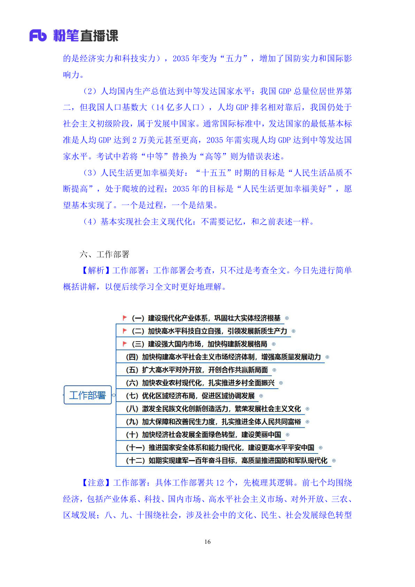
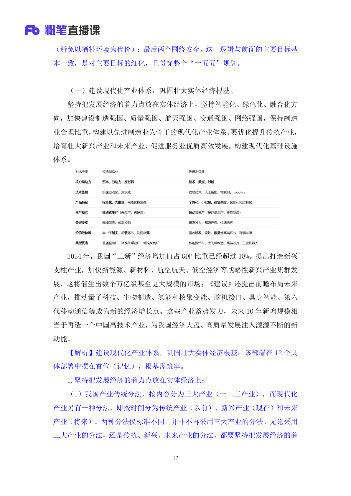
18
力点放在实体经济上，而非虚拟经济。
（2）实体经济：比如互联网授课是实体经济。实体经济有实实在在地输出，
既包括看得见、摸得着的物质维度商品，也包括精神或服务维度（看不见摸不着）
的输出，这类输出对社会有实际贡献。
（3）虚拟经济：核心是“钱生钱”，例如比特币、P2P、炒股（一方的盈利
来自另一方的亏损，未对社会产生实实在在的输出）等。虚拟经济主要集中在金
融领域。
2.坚持智能化、绿色化、融合化方向：以前叫“三化”（高端化、绿色化、
智能化），可总结为“搞绿植”，如今将“高端化”调整为“融合化”。
（1）智能化：比如“人工智能+”行动，大数据时代到来。
（2）绿色化：不能牺牲环境。
（3）融合化：“人工智能+”行动，“+”即指与各行各业融合。2025 年出
台的“人工智能+”行动方案中，就提到了人工智能与科技、产业、消费、民生、
治理、全球合作融合的六大行动。
（4）例子：比如父亲经营着一家有50 多年历史的老厂，要使其不被淘汰，
首先要做到绿色化，避免污染环境导致被查处或罚款、停业；其次要转型升级，
实现智能化，结合人工智能等技术；同时要促进融合发展，推动一二三产业融合，
具体融合方式需根据工厂所属行业（如工业、农业、制造业、服务业等）而定。
3.加快建设制造强国、质量强国、航天强国、交通强国、网络强国：了解即
可，和二十大表述一样。
4.保持制造业合理比重：
（1）中国制造业业绩突出，“中国制造”“义乌制造”等令人骄傲，最新
数据显示，中国制造业规模已连续15 年位居全球第一。
（2）注意不是“增强制造业的比重”，而是“保持制造业合理比重”，因
为各大产业需均衡发展，若仅制造业一家独大，可能导致产能过剩。
5.构建以先进制造业为骨干的现代化产业体系：我国制造业需从“中国制造”
向“中国智造”转变，在保持合理比重的基础上提质增效。
（1）传统制造业：如普通服装厂、低端家具厂，主要依靠资本、劳动力和
原材料。
19
（2）先进制造业：如新能源汽车、大飞机制造、高端芯片、工业机器人，
主要依靠技术、数据和创新。
（3）传统制造业不是要全部淘汰，而是要优化提升，例如普通服装厂可通
过提供个性化定制服务等方式转型升级。
6.要优化提升传统产业，培育壮大新兴产业和未来产业，促进服务业优质高
效发展，构建现代化基础设施体系。
（1）2025 年10 月24 日，在二十届四中全会新闻发布会中提及，我国“三
新”经济（新产业、新业态、新商业模式）增长占GDP 比重已超过18%，可通过
“要发”记忆。
（2）新兴产业：新能源、新材料、航空航天、低空经济等。
（3）未来产业：量子科技、生物制造、脑机接口、具身智能、6G 等。
（4）未来10 年新增规模相当于再造一个中国高技术产业（了解即可）。
（二）加快高水平科技自立自强，引领发展新质生产力。
抓住新一轮科技革命和产业变革历史机遇，统筹教育强国、科技强国、人才
强国建设，提升国家创新体系整体效能，全面增强自主创新能力，抢占科技发展
制高点，不断催生新质生产力。要加强原始创新和关键核心技术攻关，推动科技
创新和产业创新深度融合，一体推进教育科技人才发展，深入推进数字中国建设。
【解析】加快高水平科技自立自强，引领发展新质生产力：
1.科技：
（1）要构建现代化产业体系，离不开科技支撑。二十届四中全会对科技提
出了较高要求，不仅要实现科技自立自强，还要达到高水平，引领发展新质生产
力，需重点关注“新质生产力”，这一概念于2023 年年底提出，自提出后持续
成为考点，2024 年、2025 年均有考查，2026 年仍有可能考查，中央政治局会议
中提到，要将因地制宜发展新质生产力摆在更加突出的战略位置。
（2）在“十四五”时期，表述为“迎接科技革命……”，“十五五”时期
表述为“抓住”，能够感受到已经进入新一轮的科技革命和产业革命中了，因此，
我国需统筹教育强国、科技强国、人才强国，推动教育、科技、人才一体化发展。
教育强国、科技强国、人才强国需在2035 年建成，“十五五”时期作为承上启
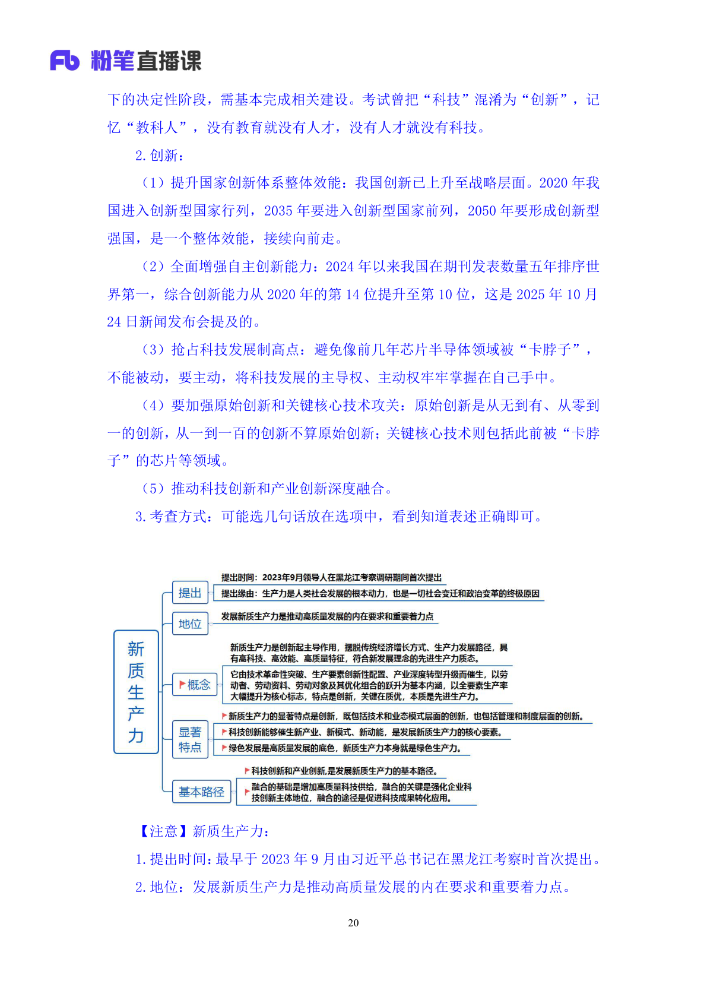
21
3.概念：切割理解。
（1）“新”：创新起主导作用，摆脱传统经济增长方式，比如传统经济增
长方式依赖钢铁、煤炭等，而新质生产力依赖科技创新、人才创新等。
（2）“质”：指高质量，具有“三高”特点，要想有高质量，要有高科技、
高效能、投入产出高。
（3）生产力：先进生产力。
（4）考查方式：催生、基本内涵、核心标志等课下要看一看，刚提出的一
两年，基本考的就是概念部分的所有知识点。
4.显著特点：可能考查理解，出现知道表述是对的即可。
（1）新质生产力的显著特点是创新，既包括技术和业态模式层面的创新，
也包括管理和制度层面的创新。
（2）科技创新能够催生新产业、新模式、新动能，是发展新质生产力的核
心要素。
（3）绿色发展是高质量发展的底色（不是以牺牲环境为代价），新质生产
力本身就是绿色生产力。
5.基本路径：新的内容。
（1）2025 年两会期间，习近平总书记到江苏代表团时提出，发展新质生产
力的基本路径是科技创新和产业创新。新质生产力最显著的特点是创新，而在各
类创新中，科技创新摆在首位。科学技术是第一生产力，但它属于非实体性要素
（生产力包含实体性要素和非实体性要素），无法独立存在，必须与各大产业融
合才能转化为生产力，因此发展新质生产力需通过科技创新与产业创新。
（2）2025 年4 月1 日《求是》杂志的一篇文章提到，融合的基础是增加高
质量科技供给，融合的关键是强化企业科技创新主体地位，融合的途径是促进科
技成果转化应用（这些内容来自不同场合的表述，已归纳整理在一起）。
①融合的基础：需要有，有了科技才能融。
②融合的关键：企业是科技创新的主体，并非政府或高校科研工作者，例如
提到5G 想到华为、提到机器人想到宇树科技、提到DeepSeek 想到梁文峰，这些
都是企业。
③融合的途径：促进科技成果转化应用。
22
（三）建设强大国内市场，加快构建新发展格局
坚持扩大内需这个战略基点，坚持惠民生和促消费、投资于物和投资于人紧
密结合，以新需求引领新供给，以新供给创造新需求，促进消费和投资、供给和
需求良性互动，增强国内大循环内生动力和可靠性。要大力提振消费，扩大有效
投资，坚决破除阻碍全国统一大市场建设卡点堵点。
【解析】建设强大国内市场，加快构建新发展格局：仍与经济相关。
1.以国内大循环为主体、国内国际双循环相互促进：
（1）以国内大循环为主体：要加快构建新发展格局、建设强大国内市场，
不能过度依赖国际，避免因国际冲突、封锁或贸易制裁陷入被动。
（2）新闻发布会提到，大国经济以内需为主导，市场是当今世界最稀缺的
资源，强大的国内市场是中国式现代化的战略依托。我国如今在面对美国加税时
能采取对等措施，原因在于我国可以实现内循环，能生产所需各类产品，且人口
规模大、消费能力强，可形成“生产-消费-再生产”的循环。并非所有国家都能
实现这一点，我国拥有超大规模市场的优势。
2.这段内容的可考性非常强，核心是强调扩大内需。2025 年政府工作报告
中提及的2025 年经济工作十大任务，摆在首位的就是全方位扩大内需，连续三
到五年的公务员考试中，每年都考“内需”，侧重考查理解而非记忆，需先理解。
【注意】
1.谈及经济，需明确两对关系：
（1）政府和市场的关系：要让“有形之手”与“无形之手”打好配合，其
中市场在资源配置中起决定性作用。
（2）供给和需求：需要实现供需平衡，既不能供大于求，也不能供不应求。
23
供给即企业生产，若生产的产品积压在仓库卖不出去，会导致经济循环受阻。需
求分为内需和外需，内需属于国内需求，对应拉动经济增长“三驾马车”中的消
费和投资；外需则对应“三驾马车”中的出口，满足国际需求。
2.坚持扩大内需这个战略基点：重点，是2025 年经济工作十大任务之首。
（1）内需包含消费和投资：消费对经济发展起基础性作用，投资对优化供
给结构起关键性作用，出口则起支撑性作用。政治理论真题本身难度不大，日常
练习中，具备基本常识和正确三观的人99%能做对，但考场环境下，很多考生会
因时间紧张（需完成行测、下午还要写申论）、文字量大（甚至部分选项达两到
三行）而难以准确作答。不需要焦虑，而是需要通过多看多练，形成足够的敏感
性。
（2）坚持惠民生和促消费：需为老百姓提供基本服务。例如2025 年国家有
促消费、惠民生举措，比如购买家具家电可享受国补，下半年还推出“双贴息”
政策，包括个人消费贷款贴息和服务业经营主体贴息，如在京东等平台的贷款，
原本3%的利息可降低1%，只需偿还2%。
3.投资于物和投资于人紧密结合：二者不可相互替代。投资于物是将有限资
源投入基础设施等领域；投资于人则围绕人展开，涵盖教育、医疗、培训等维度。
4.以新需求引领新供给，以新供给创造新需求：颠倒考查。
（1）常将“需求引领供给、供给创造需求”颠倒表述为“供给引领需求、
需求创造供给”，需注意辨别。
（2）供给引领需求：例如华为的三折叠手机，若未生产出来，消费者无法
购买。
（3）需求创造供给：例如当下很多年轻人对手机像素有高要求，市场根据
这一需求，在手机像素的更新迭代上力度很大。
5.增强国内大循环内生动力和可靠性：“增强国内大循环”考试曾将其改为
“增强国际大循环”，我国始终以国内大循环为主体。
（四）加快构建高水平社会主义市场经济体制，增强高质量发展动力。
坚持和完善社会主义基本经济制度，更好发挥经济体制改革牵引作用，完善
宏观经济治理体系，确保高质量发展行稳致远。要充分激发各类经营主体活力，
24
加快完善要素市场化配置体制机制，提升宏观经济治理效能。
【解析】加快构建高水平社会主义市场经济体制，增强高质量发展动力：
1.我国社会主义基本经济制度有三个，是在十九届四中全会中（上一个）丰
富和创新的，具体包括：公有制为主体、多种所有制经济共同发展，按劳分配为
主体、多种分配方式并存，社会主义市场经济体制（了解即可）。
2.更好发挥经济体制改革牵引作用：二十届三中全会的重点。方方面面都要
进一步全面深化改革，经济体制改革起到牵引作用，是全面深化改革的重点。经
济基础决定上层建筑，经济体制改革做好了，其他方面改革才能搞好。
3.经济体制改革的核心问题：处理好市场与政府的关系，即协调好“有形之
手”与“无形之手”。2025 年提及要素市场化配置，此前诸多要素由政府管控，
当前需打通，该市场化的要市场化，全文出台后还会有相关细则。2025 年9 月，
我国开展要素市场化配置综合改革试点，确定十个地方作为试点区域。
4.加快完善要素市场化配置体制机制：比如甲是一个有钱的浙商，想买中西
部的一块地，但不是想买就能买的，存在人为切割、地方保护主义等问题，未实
现市场化，以劳动力为例，外地人到北京找工作常面临“北京户口优先”的限制，
求职难度大于北京本地人，因此要“要素市场化配置”，不是政府化、地方化，
就是要市场化，让市场在资源配置中起决定性作用。
（五）扩大高水平对外开放，开创合作共赢新局面。
稳步扩大制度型开放，维护多边贸易体制，拓展国际循环，以开放促改革促
发展，与世界各国共享机遇、共同发展。要积极扩大自主开放，推动贸易创新发
展，拓展双向投资合作空间，高质量共建“一带一路”。
【解析】扩大高水平对外开放，开创合作共赢新局面：
1.稳步扩大制度型开放，维护多边贸易体制：我国此前对外开放处于“摸着
石头过河”阶段，当前需依托已有的规则、规制、管理、标准等制度，主动对接
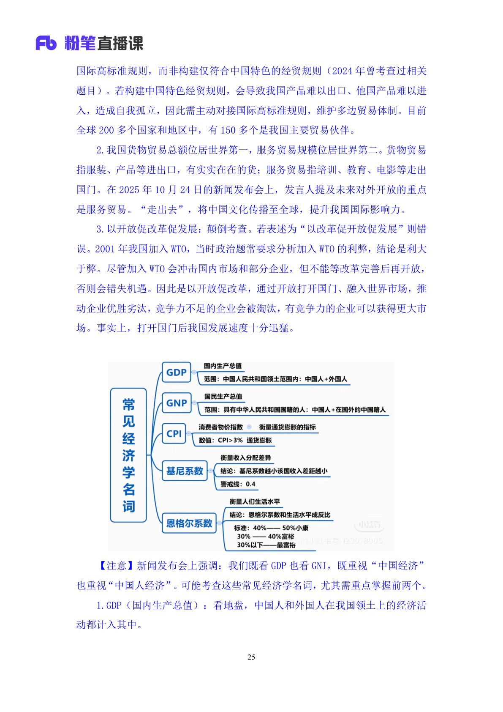
26
2.GNP（国民生产总值）：看人、看户口。中国人（包括在国外的中国人）
的经济活动均计入。GNI 和GNP 虽然有所区别，但在国际标准上二者可以等同。
3.CPI、基尼系数、恩格尔系数了解即可。
（六）加快农业农村现代化，扎实推进乡村全面振兴。
坚持把解决好“三农”问题作为全党工作重中之重，促进城乡融合发展，持
续巩固拓展脱贫攻坚成果，推动农村基本具备现代生活条件，加快建设农业强国。
要提升农业综合生产能力和质量效益，推进宜居宜业和美乡村建设，提高强农惠
农富农政策效能。
10 月24 日新闻发布会上，中央财办分管日常工作的副主任、中央农办主任
韩文秀介绍，农业农村现代化关系中国式现代化全局和成色，是需要优先补上的
最大短板。
【解析】加快农业农村现代化，扎实推进乡村全面振兴：补齐短板，缩小城
乡差距。
1.10 月24 日新闻发布会上，中央财办分管日常工作的副主任、中央农办主
任韩文秀介绍，农业农村现代化关系中国式现代化全局和成色，是需要优先补上
的最大短板。“成色”可通过黄金举例理解，黄金的成色好坏取决于其中是否掺
杂石子，若有则说明存在短板；中国式现代化的质量好坏，同样需要补上短板。
2.坚持把解决好“三农”问题作为全党工作重中之重：党的二十大报告明确，
全面建设社会主义现代化国家最艰巨、最繁重的任务在农村，最广泛、最深厚的
基础也在农村。根据短板效应，若农村没有发展起来，即使中国式现代化实现了，
也要打折扣。
3.党和国家推进“三农”工作的总抓手：推进乡村全面振兴，乡村振兴在党
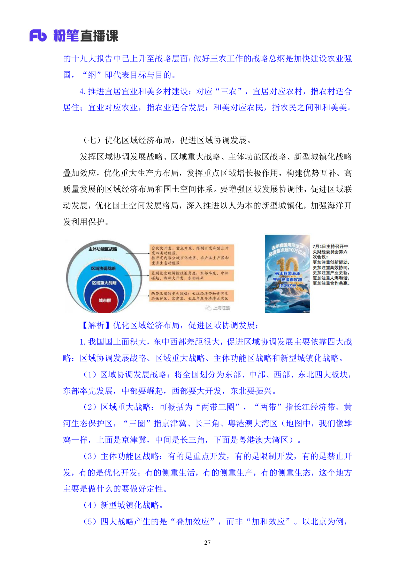
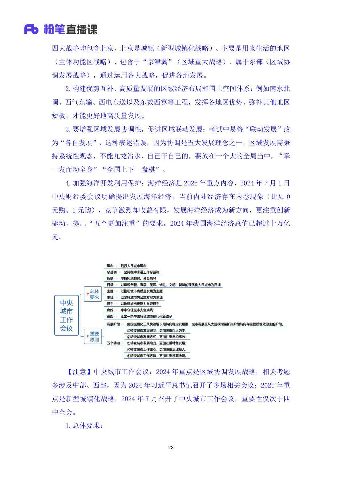
29
（2）理念：践行人民城市理念。
（3）总基调：坚持稳中求进工作总基调。
（4）原则：坚持因地制宜、分类指导。
（5）目标：以建设创新、宜居、美丽、韧性、文明、智慧的现代化人民城
市为目标（在原有“宜居、韧性、智慧”基础上新增三个维度）。
（6）主题：以推动城市高质量发展为主题。
（7）主线：以坚持城市内涵式发展为主线。
（8）抓手：以推进城市更新为重要抓手。
（9）底线：牢牢守住城市安全底线。
（10）道路：走出一条中国特色城市现代化新路子。
2.重要原则
（1）发展阶段：我国城镇化正从快速增长期转向稳定发展期，城市发展正
从大规模增量扩张阶段转向存量提质增效为主的阶段。
（2）五个转向：既然阶段发生变化了，很多都要相应调整。
①转变城市发展理念，更加注重以人为本。
②转变城市发展方式，更加注重集约高效。
③转变城市发展动力，更加注重特色发展。
④转变城市工作重心，更加注重治理投入。
④转变城市工作方法，更加注重统筹协调。
（八）激发全民族文化创新创造活力，繁荣发展社会主义文化。
坚持马克思主义在意识形态领域的指导地位，植根博大精深的中华文明，顺
应信息技术发展潮流，发展具有强大思想引领力、精神凝聚力、价值感召力、国
际影响力的新时代中国特色社会主义文化，扎实推进文化强国建设。要弘扬和践
行社会主义核心价值观，大力繁荣文化事业，加快发展文化产业，提升中华文明
传播力影响力。
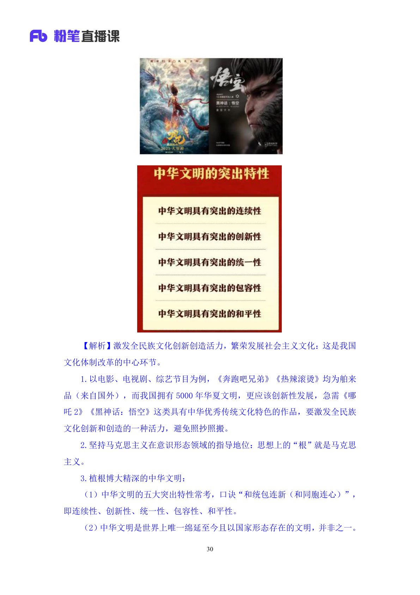
31
世界四大文明古国中，古印度、古埃及、古巴比伦的文明均已中断，唯有中国文
明未中断，因此称为“唯一”。
4.发展具有强大思想引领力、精神凝聚力、价值感召力、国际影响力（旧知
识点）的新时代中国特色社会主义文化，扎实推进文化强国建设（2035 年建成）。
5.大力繁荣文化事业，加快发展文化产业：考查理解。
（1）文化事业：以政府为主导，具有公益性质，比如事业单位。
（2）文化产业：以市场为主导，以营利为目的。
（3）考查方式：如“繁荣文化事业需要发挥市场在资源配置中的决定性作
用”，表述错误。
（九）加大保障和改善民生力度，扎实推进全体人民共同富裕。
坚持尽力而为、量力而行，加强普惠性、基础性、兜底性民生建设，解决好
人民群众急难愁盼问题，畅通社会流动渠道，提高人民生活品质。要促进高质量
充分就业，完善收入分配制度，办好人民满意的教育，健全社会保障体系，推动
房地产高质量发展，加快建设健康中国，促进人口高质量发展，稳步推进基本公
共服务均等化。
【解析】加大保障和改善民生力度，扎实推进全体人民共同富裕：民生角度。
1.坚持尽力而为、量力而行：体现的哲学原理是“在尊重客观规律的前提下，
充分发挥人的主观能动性”。
（1）“尽力而为”强调不能不作为，要充分发挥人的主观能动性。
（2）“量力而行”强调不做不切实际的承诺，例如我国不能像西方发达国
家那样推行高福利、全民免费医疗，因为我国仍处于并将长期处于社会主义初级
阶段，属于发展中国家，要量力而行。
32
2.加强普惠性、基础性、兜底性民生建设：稍加关注。
（1）普惠性（比如发红包）：大家都能享受，如义务教育不会有人得不到，
再如医疗、养老。
（2）基础性：“地基”类型的，如住房、就业。
（3）兜底性：如社会救助、社保。
（4）口诀：普基兜（普吉岛）。
3.畅通社会流动渠道。
4.八个重点：要促进高质量充分就业，完善收入分配制度，办好人民满意的
教育，健全社会保障体系，推动房地产高质量发展，加快建设健康中国，促进人
口高质量发展，稳步推进基本公共服务均等化。
（1）要促进高质量充分就业：并非保障每个公民都能找到工作，不具备劳
动能力的老年人、残疾人，或无劳动意愿的人，不在此保障范围内。公民需同时
具备劳动意愿与劳动能力，成为劳动者后，才属于高质量充分就业的保障范畴。
（2）完善收入分配制度：我国收入分配制度分为三次分配，且主体不同。
初次分配由市场主导，再次分配由政府主导，第三次分配由社会主导。
（3）办好人民满意的教育：“五育”深入人心，即德智体美劳全面发展，
其中需将德育贯穿其中，德育摆在第一位，教书育人、立德树人，不仅仅教授知
识，还要教会如何做人。
（4）健全社会保障体系：我国已建成世界上规模最大的社会保障体系，社
会保险处于主体地位，“五险一金”中的“五险”便属于社会保险。
（5）推动房地产高质量发展：摒弃以往大规模拆建、卖地盖房的模式，当
前目标是实现房地产市场止跌回稳（非“止跌回升”）。
（6）加快建设健康中国：健康中国建设坚持预防优先（非“治疗优先”），
2025 年是体重管理年，肥胖易引发多种疾病，我国最新人均预期寿命为79 岁。
（7）促进人口高质量发展：我国人口呈现少子化、老龄化、区域人口增减
分化（有的地方激增，有的地方锐减）的“三化”特点。人口发展治理模式已从
政府单独管理转向政府与社会协同治理，治理方式以引导和激励为主。
（8）稳步推进基本公共服务均等化：考试中可能将“均等化”混淆为“平
均化/平均主义”，均等化不等于平均化，不是吃“大锅饭”，例如公共服务（比
33
如公园）是对所有老百姓开放的。
（十）加快经济社会发展全面绿色转型，建设美丽中国。
牢固树立和践行绿水青山就是金山银山的理念，以碳达峰碳中和为牵引，协
同推进降碳、减污、扩绿、增长，筑牢生态安全屏障，增强绿色发展动能。要持
续深入推进污染防治攻坚和生态系统优化，加快建设新型能源体系，积极稳妥推
进和实现碳达峰，加快形成绿色生产生活方式。
【解析】加快经济社会发展全面绿色转型，建设美丽中国：
1.2025 年，美丽中国生态建设是重点：2025 年是“两山论”理念提出20
周年，我国作出“双碳”承诺5 周年，是《巴黎协定》签订10 周年，因此生态
文明建设大概率为必考点。
2.牢固树立和践行绿水青山就是金山银山的理念：
“绿水青山就是金山银山”
由习近平总书记于2005 年8 月15 日在浙江余村提出，8 月15 日也被确定为“全
国生态日”。
3.以碳达峰碳中和为牵引：2020 年我国向世界庄严作出“双碳”承诺，即
2030 年前实现碳达峰、2060 年前实现碳中和，2025 年是作出“双碳”承诺的五
周年。
4.协同推进降碳、减污、扩绿、增长：需做好“加减法”。
（1）降碳、减污（减法）：打好蓝天、碧水、净土三大保卫战。
（2）扩绿、增长（加法）。
34
5.积极稳妥推进和实现碳达峰：
（1）不能“碳冲锋”（毕其功于一役），要慢慢来，不能着急。
（2）不能“运动式减碳”（部分地方为避免二氧化碳排放量超标，采取集
中停电停产甚至导致红绿灯不亮的做法）。
（十一）推进国家安全体系和能力现代化，建设更高水平平安中国。
坚定不移贯彻总体国家安全观，走中国特色社会主义社会治理之路，确保社
会生机勃勃又井然有序。要健全国家安全体系，加强重点领域国家安全能力建设，
提高公共安全治理水平，完善社会治理体系。
【解析】推进国家安全体系和能力现代化，建设更高水平平安中国：
1.习近平总书记于2014 年4 月15 日提出的总体国家安全观。2015 年4 月
15 日被上升为“全民国家安全教育日”，2025 年是第十个全民国家安全教育日。
2.确保社会生机勃勃又井然有序：不能管死，既要保持应有的生机和活力，
也要做好必要的管理。
3.总体国家安全观：2025 年的重点，2025 年主题“走深走实十周年”。
（1）五对要素（老生常谈）：以人民安全为宗旨、以政治安全为根本、以
经济安全为基础、以军事科技文化社会安全为保障、以促进国际安全为依托。
（2）在诸多安全中，政治安全是放在首位的。一个国家的主权必须掌握在
自己手中，要自己说了算，不能沦为别国的傀儡。
（十二）如期实现建军一百年奋斗目标，高质量推进国防和军队现代化。
贯彻习近平强军思想，贯彻新时代军事战略方针，坚持党对人民军队绝对领
导，贯彻军委主席负责制，按照国防和军队现代化新“三步走”战略，推进政治
35
建军、改革强军、科技强军、人才强军、依法治军，边斗争、边备战、边建设，
加快机械化信息化智能化融合发展，提高捍卫国家主权、安全、发展利益战略能
力。要加快先进战斗力建设，推进军事治理现代化，巩固提高一体化国家战略体
系和能力。
【解析】如期实现建军一百年奋斗目标，高质量推进国防和军队现代化：
1.贯彻习近平强军思想：尤其对报考军队文职的人员而言，2025 该部分内
容可能涉及九三阅兵，且考试可能会较为细致。
2.坚持党对人民军队绝对领导：并非嘴上说说，要贯彻党对军队的绝对领导。
其根本制度和实现形式是军委主席负责制。
3.按照国防和军队现代化新“三步走”战略：2027 年、2035 年还有本世纪
中叶。
4.推进政治建军、改革强军、科技强军、人才强军、依法治军：五军建设。
5.边斗争、边备战、边建设，加快机械化信息化智能化融合发展：“三边三
化”。
（1）边斗争、边备战、边建设：我们将国防军队的重点转移到备战打仗上
来。宁可备而不战，不可战而不备。
（2）机械化信息化智能化：如今的战争都看不到人，只能看到无人机指挥
作战。
6.提高捍卫国家主权、安全、发展利益战略能力：国防和军队的使命与任务，
就是维护国家主权、安全和发展利益，只有保障主权与安全，国家才能实现更好
的发展。
36
习近平强军思想
2017 年10 月，党的十九大把习近平强军思想写入党章，习近平强军思想的
主要内容可以概括为“十一个明确”：
（1）明确党对人民军队的绝对领导是人民军队建军之本、强军之魂；
（2）明确强国必须强军，巩固国防和强大人民军队是新时代坚持和发展中
国特色社会主义、实现中华民族伟大复兴的战略支撑；
（3）明确党在新时代的强军目标是建设一支听党指挥、能打胜仗、作风优
良的人民军队，到2027 年实现建军一百年奋斗目标，到2035 年基本实现国防和
军队现代化，到本世纪中叶把人民军队建成世界一流军队；
（4）明确军队是要准备打仗的，必须聚焦能打仗、打胜仗，扭住强敌对手；
（5）明确推进强军事业必须坚持政治建军、改革强军、科技强军、人才强
军、依法治军；
（6）明确改革是强军的必由之路；
（7）明确科技是核心战斗力；（是军事发展中最活跃、最具革命性的因素）
（8）明确强军之道要在得人；
（9）明确依法治军是我们党建军治军基本方式；
（10）明确军民融合发展是兴国之举、强军之策；
（11）明确作风优良是我军鲜明特色和政治优势。
【解析】贯彻习近平强军思想：
1.明确党对人民军队的绝对领导是人民军队建军之本、强军之魂（常考）：
要听党的，党指挥枪，不能让枪指挥党。
2.“三步走”：在全国现代化“两步走”的基础上，增加了一步“到2027
年实现建军一百年奋斗目标”，2027 年是建军百年，1927 年8 月1 日的南昌起
义，打响了武装反抗国民党反动派的第一枪。
3.五军建设：政治建军、改革强军、科技强军、人才强军、依法治军。记忆
各自的定位。
（1）政治建军：是立军之本，要听党的。
（2）改革强军：改革是强军必由之路。
（3）科技强军：科技是核心战斗力。如今看一个国防军队强不强，主要看
37
其有没有核心战斗力。九三阅兵展示实力，打击范围覆盖全球，核心战斗力就是
看科技，科技是军事发展中，最活跃、最具革命性的要素。
（4）人才强军：强军之道，要在得人。
（5）依法治军。
全党全国各族人民团结起来为实现“十五五”规划而奋斗。坚持以党的自我
革命引领社会革命，持之以恒推进全面从严治党，增强党的政治领导力、思想引
领力、群众组织力、社会号召力，提高党领导经济社会发展能力和水平，为推进
中国式现代化凝聚磅礴力量。要坚持和加强党中央集中统一领导，推进社会主义
民主法治建设，充分调动全社会投身中国式现代化建设的积极性主动性创造性。
促进香港、澳门长期繁荣稳定，推动两岸关系和平发展、推进祖国统一大业，推
动构建人类命运共同体。
【解析】
1.坚持以党的自我革命引领社会革命：
（1）自我革命是中国共产党跳出治乱兴衰历史周期率的第二个答案。第一
个答案是毛泽东同志当年在“窑洞对”中提出的，即让人民来监督政府；第二个
答案是习近平总书记在党的二十大上提出的自我革命。
（2）要以党的自我革命引领社会革命，唯有党风清气正，全社会风气、国
家风气以及家风才会好。
2.增强党的政治领导力、思想引领力、群众组织力、社会号召力：政治领导
力摆在首位。一旦谈到党的建设，包括选拔、任用干部，统统都把政治标准摆在
首位，旗帜鲜明讲政治。
3.推动两岸关系和平发展、推进祖国统一大业：
（1）“推动”“推进”说明主动权和主导权在我们手中，我们想什么时候
38
搞就什么时候搞。
（2）决定设立10 月25 日（简单记“蒋介石爱我”）为台湾光复纪念日，
此后每年会开展相关纪念活动。1945 年10 月25 日，台湾摆脱日本统治，回到
祖国怀抱，这一天因此被称为台湾光复日，2025 年是台湾光复80 周年，与抗日
战争胜利80 周年时间一致。
（3）清政府在1895 年签订《马关条约》，把台湾全岛割让给日本，日本对
台湾的统治从1895 年-1945 年，共计50 年。
学习好贯彻好全会精神是当前和今后一个时期全党全国的重大政治任务。要
通过各种方式，组织好全会精神的学习、宣讲、宣传，使全党全社会领会好全会
精神。要切实抓好全会精神的贯彻落实，坚定不移推动高质量发展，加快构建新
发展格局，推动全体人民共同富裕迈出坚实步伐，更好统筹发展和安全，统筹推
进经济建设和各领域工作，为基本实现社会主义现代化夯实基础。
治国必先治党，党兴才能国强。管党治党越有效，经济社会发展的保障就越
有力。必须以永远在路上的坚韧和执着，持之以恒推进全面从严治党，坚决把党
的自我革命要求落实到位，推进党的作风建设常态化长效化，坚定不移开展反腐
败斗争，为实现“十五五”时期经济社会发展目标提供坚强保证。
【解析】治国必先治党，党兴才能国强：党要保证先进性，2025 年党内有
“贯彻落实中央八项规定”学习教育（每年的学习教育基本是必考点），这是作
风教育，不光要查腐败官员，由风及腐，在腐败之前是慢慢堕落的，刚开始可能
是工作作风、生活作风出现问题，因此要风腐同查同治。
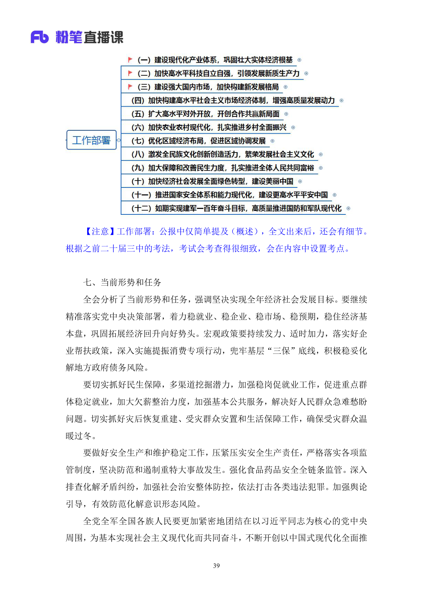
40
进强国建设、民族复兴伟业新局面。
【解析】当前形势和任务：
1.经济：
（1）稳就业、稳企业、稳市场、稳预期：“四稳”。稳就业的核心在于稳
企业，企业不要裁员，要招人；稳企业则需稳市场；市场稳住后才能稳预期。2025
年政府工作报告谈到，预期是GDP 实现5%左右的增长。
（2）宏观政策要持续发力、适时加力：宏观政策主要指财政政策和货币政
策，2025 年政府工作报告中，财政政策有新提法，要“更加积极”（之前是“积
极”）；以前的货币政策是稳健的货币政策，2025 年变为“适度宽松”的货币
政策。
2.社会：加强稳岗促就业工作，促进重点群体稳定就业。比如高校毕业生、
退役军人、农民工是重点群体。
3.安全：需保障安全生产。
4.号召（没有考点）：以中国式现代化全面推进强国建设、民族复兴伟业新
局面。
【题目练习】
1.（单选）二十届四中全会审议通过了《中共中央关于制定国民经济和社会
发展第十五个五年规划的建议》。科学制定和接续实施五年规划，是我们党治国
理政一条重要经验，也是中国特色社会主义一个重要政治优势。有关“十五五”
规划，表述正确的是：
A.今年是“十四五”规划收官之年，也是“十五五”规划开局之年
B.这是新时代以来党中央制定的第二个五年规划建议
C.这是全面建设社会主义现代化国家新征程上的第二个五年规划建议
D.从第一个五年计划到第十四个五年规划，一以贯之的主题是把我国建设成
为社会主义现代化国家
【解析】1.D 项：说法正确，当选。A 项：2025 年是谋划之年，2026 年才是
开局，排除。B 项：这是新时代以来党中央制定的第三个五年规划建议，排除。
C 项：这是全面建设社会主义现代化国家新征程上的第一个五年规划建议（没有
41
“开局”），排除。【选D】
2.（单选）“从第一个五年计划到第十四个五年计划一以贯之的主题是把我
国建设成为社会主义现代化国家。”对此，下列说法中不正确的是（
）。
A.从“一五”计划到“五五”计划的重点是优先发展农业
B.“六五”计划开始把解放和发展生产力摆在突出位置
C.“十三五”规划提出贯彻落实新发展理念
D.“十四五”规划提出向第二个百年奋斗目标进军
【解析】2.选非题。A 项：新中国成立初期学习苏联模式，优先发展的是工
业，并非农业，当选。【选A】
3.（单选）2025 年10 月20 日至23 日，中国共产党第二十届中央委员会第
四次全体会议在北京举行。全会充分肯定党的二十届三中全会以来中央政治局的
工作。一致认为，中央政治局认真落实党的二十大和二十届历次全会精神。下列
有关说法正确的是（
）。
①扎实推动高质量发展，推进社会主义民主法治建设，加强宣传思想文化工
作
②统筹国内国际两个大局，统筹发展和安全，进一步全面深化改革
③坚持稳定优先工作总基调，完整准确全面贯彻新发展理念
④统筹推进“五位一体”总体布局，协调推进“四个全面”战略布局
A.②③④
B.①③④
C.①②④
D.①②③
【解析】3.③说法错误，不是“稳定优先”，我国多年来坚持的总基调是“稳
中求进”，逆水行舟，不进则退。C 项：①②④说法正确，当选。【选C】
4.（单选）2025 年10 月20 日至23 日，中国共产党第二十届中央委员会第
四次全体会议在北京举行。全会充分肯定党的二十届三中全会以来中央政治局的
工作。一致认为，中央政治局认真落实党的二十大和二十届历次全会精神。下列
有关说法正确的是（
）。
42
①切实抓好民生保障和生态环境保护，维护国家安全和社会稳定
②开展深入贯彻中央八项规定精神学习教育、纵深推进全面从严治党
③加强国防和军队现代化建设，做好港澳工作和对台工作
④深入推进中国特色大国外交，推动经济持续高速增长
⑤隆重纪念中国人民抗日战争暨世界反法西斯战争胜利90 周年
A.③④⑤
B.①④⑤
C.①②⑤
D.①②③
【解析】4.⑤应该是80 周年。④“高速”这类表述都是错的，我国现在强
调高质量发展，原文表述为“推动经济回升向好”。D.①②③说法正确，当选。
【选D】
5.（单选）根据二十届四中全会公报内容，下列关于“十五五”时期在我国
发展进程中的地位，说法正确的有几项？
①是基本实现社会主义现代化决胜时期
②在基本实现社会主义现代化进程中具有承前启后的重要地位
③是基本实现社会主义现代化夯实基础、全面发力的关键时期
④是我国向第二个百年进军的第二个五年
⑤是我国全面建设社会主义现代化国家新征程的开局阶段
A.2 项
B.3 项
C.4 项
D.5 项
【解析】5.①我国有三个五年计划（“十四五”“十五五”“十六五”），
并非“决胜时期”。⑤开局是“十四五”。
B 项：②③④说法正确，在基本实现社会主义现代化进程中具有承前启后的
重要地位，是基本实现社会主义现代化夯实基础、全面发力的关键时期，是我国
向第二个百年进军的第二个五年，当选。【选B】
6.（单选）根据二十届四中全会公报内容，下面相关说法错误的是：
A.“十五五”时期，要如期实现建军一百年奋斗目标，到新中国成立八十周
年时完成党的二十届三中全会提出的改革任务
43
B.实现社会主义现代化是一个波浪式递进、不断发展进步的历史过程，需要
不懈努力、接续奋斗
C.在全面建成小康社会的基础上，到2035 年基本实现社会主义现代化，需
要通过实施“十四五”“十五五”“十六五”3 个五年规划来完成
D.“十五五”时期经济社会发展，确保基本实现社会主义现代化取得决定性
进展
【解析】6.选非题。B 项：不是“波浪式”，而是“阶梯式”，也不是“直
线式”“曲线式”，当选。【选B】
7.（单选）“十五五”时期经济社会发展，要坚持：
①坚持以经济建设为中心，以推动高质量发展为主题
②以改革创新为根本动力，以满足人民日益增长的美好生活需要为根本目的
③以全面从严治党为根本保障，推动经济实现质的有效提升和量的合理增长，
④推动人的全面发展、全体人民共同富裕迈出坚实步伐
⑤确保基本实现社会主义现代化取得决定性进展
A.2 项
B.3 项
C.4 项
D.5 项
【解析】7.“五个以”、“两个推动”（推动经济、推动社会）、“一个确
保”。D 项：①②③④⑤说法正确，当选。【选D】
8.（单选）根据二十届四中全会公报，下列关于“十五五”时期经济社会发
展必须遵循的原则，说法正确的有（
）。
①坚持党的全面领导
②坚持人民至上
③坚持有效市场和有为政府相结合
④坚持人与自然和谐共生
⑤坚持统筹发展和安全
A.①②③
B.①②⑤
C.①②③④
D.①②③⑤
44
【解析】8.D 项：①②③⑤说法正确，一共是六个原则，在党的领导下，坚
持人民至上（前提），在过程中要坚持高质量发展、全面深化改革（党人搞改革），
当选。【选D】
9.（单选）根据二十届四中全会公报，下列关于“十五五”时期经济社会发
展的主要目标，说法正确的有几项？
①高质量发展取得显著成效
②科技自立自强水平大幅提高
③进一步全面深化改革取得新突破
④人民生活更加幸福美好
⑤美丽中国建设取得新的重大进展
A.2 项
B.3 项
C.4 项
D.5 项
【解析】9.“十五五”时期主要目标有七个，前三个讲经济，后三个讲社会，
最后一个是安全。④“人民生活更加幸福美好”2035 年才能实现，是结果；而
“十五五”时期的表述应为“人民生活品质不断提高”，仍处于过程中。C 项：
①②③⑤说法正确，当选。【选C】
10.（单选）根据二十届四中全会公报，下列关于“十五五”时期经济社会
发展的工作部署，说法错误的是：
A.明确将“建设现代化产业体系，巩固壮大实体经济根基”作为战略任务的
第一位
B.坚持把发展经济的着力点放在实体经济上，坚持智能化、绿色化、融合化
方向
C.保持制造业合理比重，构建以传统制造业为骨干的现代化产业体系
D.我国“三新”经济增加值占GDP 比重已经超过18%，未来10 年新增规模
相当于再造一个中国高技术产业
【解析】10.选非题。C 项：“以传统制造业为骨干”的表述错误，应是“以
先进制造业为骨干”，方向错误，考查对党和国家的大政方针、趋势是否了解，
45
当选。【选C】
11.（单选）谋划“十五五”时期经济社会发展，必须准确把握“十五五”
时期的阶段性要求，着眼强国建设、民族复兴伟业，紧紧围绕基本实现社会主义
现代化目标，一个领域一个领域合理确定目标任务、提出思路举措。下列与谋划
“十五五”时期经济社会发展相关的说法不正确的是（
）。
A.必须把因地制宜发展新质生产力摆在更加突出的战略位置，以扩大开放为
引领、以实体经济为根基
B.要优化提升传统产业，培育壮大新兴产业和未来产业，促进服务业优质高
效发展，构建现代化基础设施体系
C.在加强基础研究、提高原始创新能力上持续用力，在突破关键核心技术、
前沿技术上抓紧攻关
D.统筹推进教育科技人才一体发展，筑牢新质生产力发展的基础性、战略性
支撑
【解析】11.选非题。A 项：说法错误，当前国际环境下，我国将新质生产
力摆在更加突出位置，在创新中处于首位的是科技创新，应是以科技创新为引领。
这一表述是2025 年9 月中央政治局会议提及的，当选。【选A】
12.（单选）根据二十届四中全会，有关“建设强大国内市场，加快构建新
发展格局”，表述错误的是：
A.大国经济都是内需为主导，市场是当今世界最稀缺的资源
B.强大国内市场是中国式现代化的战略依托
C.坚持扩大内需这个战略基点，坚持惠民生和促消费、投资于物和投资于人
紧密结合
D.以新供给引领新需求，以新需求创造新供给，促进消费和投资、供给和需
求良性互动
【解析】12.选非题。D 项：正确表述应为“供给创造需求，需求引领供给”，
不能将二者顺序互换，当选。【选D】
46
13.（单选）党的二十届四中全会于2025 年10 月20 日至23 日在北京举行。
下列关于党的二十届四中全会精神的表述，不准确的是（
）。
A.坚持把发展经济的着力点放在实体经济上，保持制造业合理比重，构建以
先进制造业为骨干的现代化产业体系
B.构建新发展格局，要坚持扩大内需这个战略基点，推动投资从“投资于物”
转向“投资于人”
C.繁荣发展社会主义文化，要坚持马克思主义在意识形态领域的指导地位，
植根博大精深的中华文明
D.加大保障和改善民生力度，要加强普惠性、基础性、兜底性民生建设，解
决好人民群众急难愁盼问题
【解析】13.选非题。B 项：说法错误，投资于物和投资于人要相结合，当
选。【选B】
14.（单选）党的二十届四中全会于2025 年10 月20 日至23 日在北京举行，
审议通过了《中共中央关于制定国民经济和社会发展第十五个五年规划的建议》。
关于“十五五”时期所面临的形势和任务，下列说法正确的有（
）。
①我国发展环境面临深刻复杂变化，战略机遇和风险挑战并存、不确定难预
料因素增多
②我们要保持战略定力，增强必胜信心，积极识变应变求变，集中力量办好
自己的事
③坚持以推动高质量发展为主题，推动经济实现质的有效提升和量的合理增
长
④全体人民共同富裕取得更为明显的实质性进展，确保基本实现社会主义现
代化取得决定性进展
A.①②③
B.①②④
C.①③④
D.②③④
【解析】14.④说法错误，这一目标属于2035 年时期，而非“十五五”时期；
正确表述是“迈出坚实的步伐”。【选A】
47
15.（单选）党的二十届四中全会指出，“坚持投资于物和投资于人紧密结
合”，下列关于“投资于物和投资于人”理解正确的有（
）。
①“投资于物”通过保持基础设施和先进设备等投入，可以夯实发展的物质
基础
②“投资于人”可以促进人的全面发展，从而提高劳动生产率和社会消费水
平
③“投资于人”与“投资于物”两者相互促进，共同促进高质量发展
④“投资于人”回报直接、短期可见，“投资于物”回报相对间接、长期
⑤“投资于人”有助于增进民生福祉，是以人民为中心的发展思想的重要体
现
A.2 项
B.3 项
C.4 项
D.5 项
【解析】15.投资于物是指将有限金融资源投入修路等传统领域；投资于人
则围绕人展开，包括教育、医疗，例如幼儿园免费教育、发放育儿津贴等。④说
法错误，投资于人的回报相对间接且更长期，而投资于物（如修路）在资金到位
后即可较快实现，二者表述相反。C 项：①②③⑤说法正确，当选。【选C】
16.（单选）党的二十届四中全会指出，要加强普惠性、基础性、兜底性民
生建设，下列举措有助于加强普惠性、基础性、兜底性民生建设的有几项？
①改革完善城乡低保、专项救助等制度，健全分层分类的社会救助体系
②完善社会养老服务，推动养老服务从特困老年人向全体老年人扩展
③发展普惠托育服务体系，减轻家庭生育养育教育负担
④推进义务教育优质均衡发展，保障所有适龄儿童接受公平而有质量的教育
⑤健全覆盖全民的商业医疗保险制度，稳步提高医疗保障水平
A.2 项
B.3 项
C.4 项
D.5 项
【解析】16.普惠性、基础性、兜底性即“普吉岛”。
⑤说法错误，“商业医疗保险”若改为“基本医疗保险”则正确。商业医疗
保险无法做到覆盖全民，它上不封顶且费用较高，不属于兜底、普惠和基础的，
48
是以引领为目的的。
①说法正确，城乡低保、专项救助、社会救助均属于社保内容。
②说法正确，并非现在就面向全体老年人扩展，而是有一个过程，先覆盖特
困、失智或经济困难的人，再逐步扩展。
C 项：①②③④说法正确，当选。【选C】
17.（单选）党的二十届四中全会指出“加快构建高水平社会主义市场经济
体制”，下列关于构建高水平社会主义市场经济体制的举措，说法不正确的是（
）。
A.坚持和完善社会主义基本经济制度，发挥经济体制改革的牵引作用
B.充分激发包括国有企业、民营企业和外资企业在内的各类经营主体活力
C.加快完善要素市场化配置体制机制，构建完全自由的市场经济体系
D.创新和完善宏观调控，提升宏观经济治理体系的效能与精准性
【解析】17.选非题。C 项：“完全自由的市场”说法错误，需要政府和市
场做好配合，若市场竞争中出现不正当竞争、内卷等情况，政府就需要进行监管，
并非完全自由的市场，当选。【选C】
18.党的二十届四中全会指出，“加快经济社会发展全面绿色转型，建设美
丽中国”。下列关于加快经济社会发展全面绿色转型的举措，说法正确的有（
）。
①加快构建实施碳排放总量和浓度双控制度
②加快能源绿色低碳转型
③加快产业结构绿色低碳转型
④加快生产生活方式绿色低碳转型
A.①②③
B.②③④
C.①②④
D.①③④
【解析】18.①碳排放“双控”说法正确，此前是能源双控，现在是碳排放
双控，但“双控”指的是总量和强度双控，而非总量和浓度双控。浓度是环境指
标，指二氧化碳在空气中的占比；强度是经济指标，指单位GDP 对应的二氧化碳
排放量，即经济发展过程中的环境牺牲程度。B.②③④说法正确，当选。【选B】
49
【注意】不要期望能掌握所有知识，也不要期望在考场上每个选项都见过，
这不可能，所以不能仅从正向学习，学知识只需学重点并理解即可，还要从反面
学习做题的思维、技巧和方法，掌握挖坑点。
19.（单选）从“一五”计划到“十四五”规划，编制和实施国民经济和社
会发展五年规划，已成为我们党治国理政的重要方式。以下有关说法错误的是：
A.用中长期规划指导经济社会发展，是我们党治国理政的一种重要方式，编
制五年计划，是学习欧美经验的做法
B.从第一个五年计划到第十四个五年规划，一以贯之的主题是把我国建设成
为社会主义现代化国家
C.中国式现代化是分阶段、分领域推进的，实现各个阶段发展目标、落实各
个领域发展战略同样需要进行顶层设计
D.科学制定和接续实施五年规划，是我们党治国理政一条重要经验
【解析】19.选非题。A 项：说法错误，学习的是苏联的经验，当选。【选A】
20.（单选）二十届四中全会于2025 年10 月20 日至23 日在北京召开，下
列关于历届四中全会说法正确的是（
）。
A.十四届四中全会，首次以党的自身建设为主题，首次提出“党的建设伟大
工程”
B.十五届四中全会，首次专题研究民企改革，是唯一一次以经济议题为主题
的四中全会
C.十八届四中全会，首次以依法治国为主题，在党的法治史上具有里程碑的
意义
D.十九届四中全会，首次明确社会主义基本经济制度的两大构成
【解析】20.C 项：说法正确，当选。
A 项：首次提出“党的建设伟大工程”的是毛泽东同志。毛泽东同志在1939
年《共产党<发刊词>》中提出“三大法宝”，其中一宝就是党的建设，将党的建
设比喻成伟大工程，沿用至今。和十四届四中全会无关，排除。
B 项：首次专题研究国企改革，而非民企改革，排除。
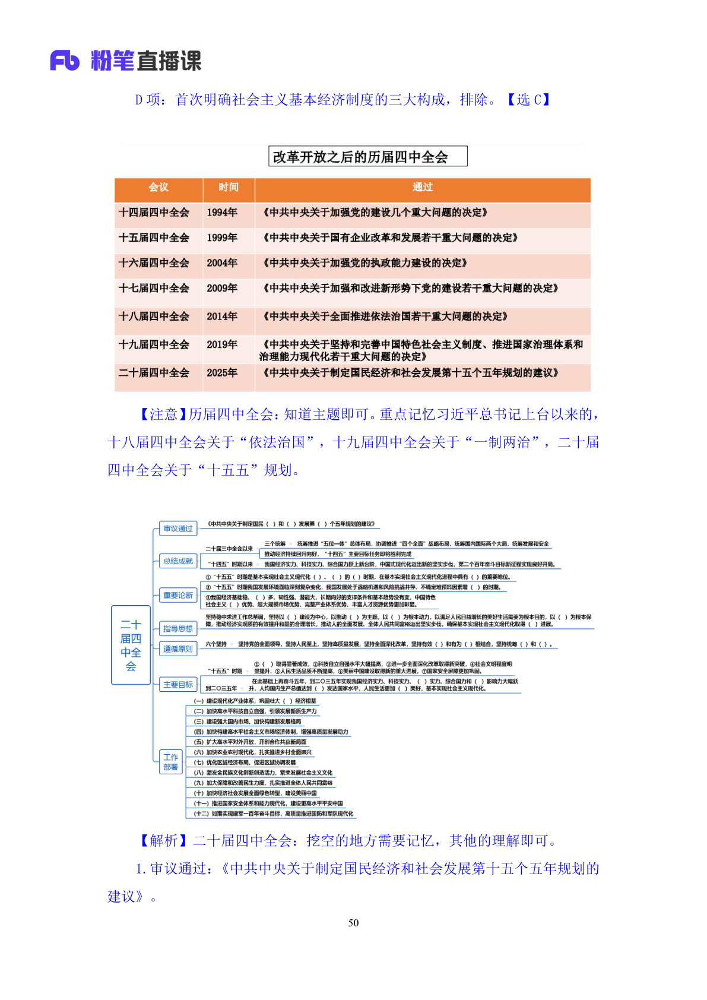
51
2.重要论断：
（1）“十五五”时期是基本实现社会主义现代化夯实基础、全面发力的关
键时期，在基本实现社会主义现代化进程中具有承前启后（并非“启下”）的重
要地位。
（2）“十五五”时期我国发展环境面临深刻复杂变化，我国发展处于战略
机遇和风险挑战并存、不确定难预料因素增多的时期。
（3）我国经济基础稳、优势多、韧性强、潜能大，长期向好的支撑条件和
基本趋势没有变，中国特色社会主义制度优势（摆在首位的是制度优势，集中力
量办大事）、超大规模市场优势、完整产业体系优势、丰富人才资源优势更加彰
显。
3.指导思想（五个以、两个推动、一个确保）：坚持稳中求进工作总基调，
坚持以经济建设为中心，以推动高质量发展为主题（如今的发展不能粗制滥造），
以改革创新为根本动力，以满足人民日益增长的美好生活需要为根本目的，以全
面从严治党为根本保障，推动经济实现质的有效提升和量的合理增长，推动人的
全面发展、全体人民共同富裕迈出坚实步伐，确保基本实现社会主义现代化取得
决定性进展。
4.遵循原则：“六个坚持”。坚持党的全面领导（前提），坚持人民至上，
坚持高质量发展（过程），坚持全面深化改革（过程），坚持有效市场和有为政
府相结合（注意搭配，遇到问题要该结合结合、该调整调整），坚持统筹发展和
安全（后两个和“十四五”不同，是新增的）。
5.主要目标：七个目标。
（1）“十五五”时期：前三个讲经济，后三个讲社会，最后一个讲安全。
①高质量发展取得显著成效。
②科技自立自强水平大幅提高。
③进一步全面深化改革取得新突破。
④社会文明程度明显提升。
⑤人民生活品质不断提高。
⑥美丽中国建设取得新的重大进展。
⑦国家安全屏障更加巩固。
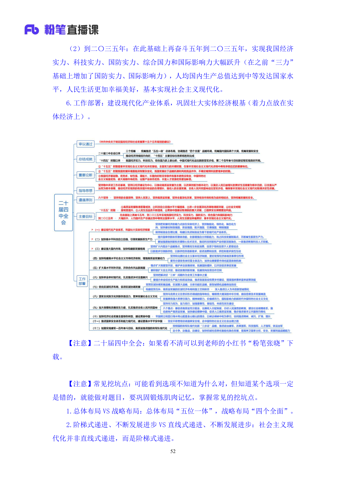
53
3.中等发达国家水平VS 高等发达国家水平：2035 年的目标是达到中等发达
国家水平，表述上更为中庸，不会过于高调。
4.构建以先进制造业VS 传统制造业为骨干的现代化产业体系：现代化产业
体系中，构建以先进制造业为骨干的现代化产业体系。传统产业需优化升级。
5.坚持把发展经济的着力点放在实体经济上VS 国有经济上：坚持把发展经
济的着力点放在实体经济上。
6.一体推进教育科技人才发展VS 一体推进教育创新人才发展：一体推进教
育科技人才发展，没有教育就没有人才，没有人才就没有科技。
7.投资于物和投资于人紧密结合VS 投资于人转向投资于物：投资于物和投
资于人紧密结合，两者都要。
8.需求牵引供给、供给创造需求VS 供给牵引需求、需求创造供给：需求牵
引供给、供给创造需求，没有供给就没有需求。
9.完善要素市场化VS 地方化配置体制机制：完善要素市场化配置体制机制，
不能地方保护主义，要打通、流动起来。
10.以开放促改革促发展VS 以改革促开放促发展：以开放促改革促发展，当
年我国在还没有改号的时候打开国门，加入WTO，结果依然很棒。
11.文化事业VS 文化产业：文化事业以政府为主导，文化产业以市场为主导。
12.以党的自我革命引领社会革命VS 以党的社会革命引领自我革命：以党的
自我革命引领社会革命。党要风清气正才能引领社会。
13.高质量发展VS 高速度发展：但凡在政治中看到“高速度”都是错的，现
在要提质增量、提质增效，质的有效提升和量的合理增长。
14.总结：四中全会是2026 国考、事业单位考试的重点，一定要看，甚至比
每月时政都重要。
54
遇见不一样的自己
Be your better self
2026全国政府工作报告解读
2026 全国政府工作报告解读
（笔记）
主讲教师：张晓
授课时间：2026.03.07
粉笔事考·官方微信
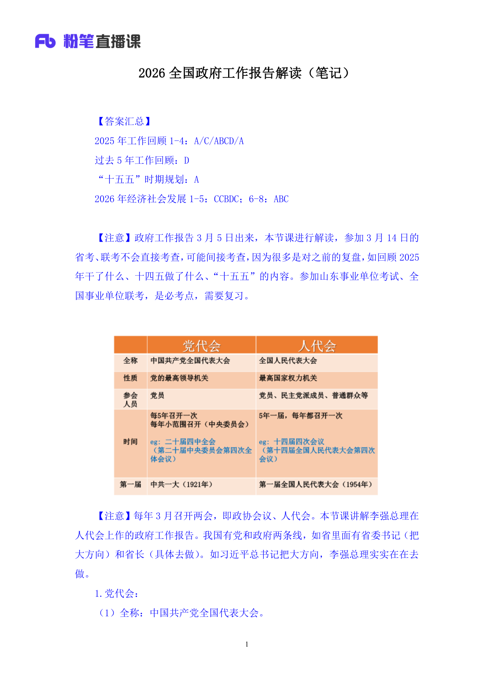
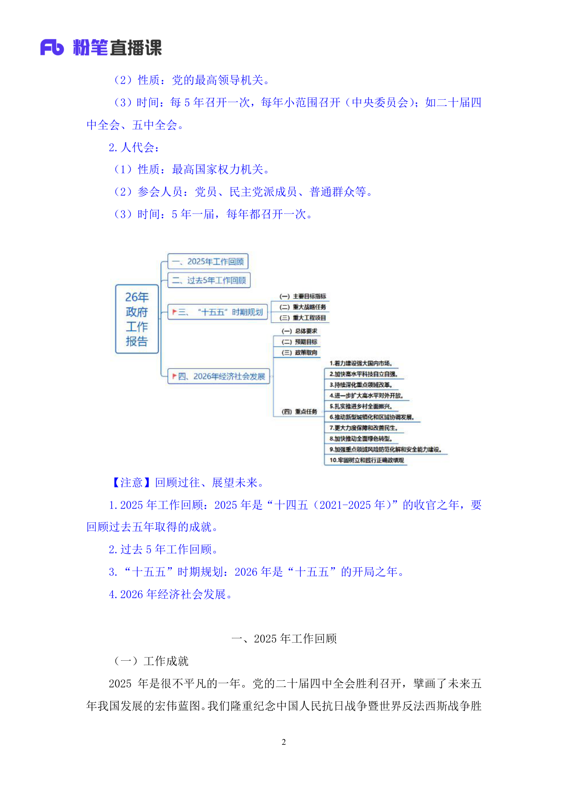
3
利80 周年，设立台湾光复纪念日，极大振奋民族精神、激发爱国热情、凝聚奋
斗力量。面对国内外形势深刻复杂的变化，以习近平同志为核心的党中央团结带
领全国各族人民迎难而上、奋力拼搏，坚定不移贯彻新发展理念、推动高质量发
展，统筹国内国际两个大局，全年经济社会发展主要目标任务顺利完成，“十四
五”圆满收官，中国式现代化迈出新的坚实步伐。
一年来，我国经济顶压前行、展现强大韧性。经济运行总体平稳、稳中有进，
国内生产总值增长5%，总量达到140.19 万亿元。就业总体稳定，城镇新增就业
1267 万人，城镇调查失业率平均为5.2%。对外贸易较快增长，出口多元化成效
明显，国际收支基本平衡。民生保障更加有力，居民收入增长和经济增长同步，
脱贫攻坚成果巩固拓展，实施学前一年免费教育政策、惠及1400 万儿童，全面
实施育儿补贴制度、惠及3000 多万婴幼儿。粮食产量达到1.43 万亿斤。重点领
域风险化解取得积极进展，社会大局保持稳定。
一年来，我国发展向新向优、彰显蓬勃活力。新质生产力稳步发展，科技创
新成果丰硕，人工智能、生物医药、机器人、量子科技等研发应用走在世界前列，
芯片自主研发有了新突破，天问二号开启“追星”之旅，北斗规模应用全面拓展，
雅下水电工程开工建设，首艘国产电磁弹射型航母福建舰正式入列，国产大模型
引领全球开源生态。产业结构持续优化，高技术制造业、装备制造业增加值分别
增长9.4%、9.2%，工业机器人、集成电路产量分别增长28%、10.9%，新能源汽
车年产量超过1600 万辆，电动汽车充电设施突破2000 万个。单位国内生产总值
能耗降低5.1%，生态环境质量持续改善。
【解析】
1.2025 年是很不平凡的一年，是“十四五”的收官之年，“十五五”的规划
之年。党的二十届四中全会胜利召开，通过了的建议关于“十五五”。
2.我们隆重纪念中国人民抗日战争暨世界反法西斯战争胜利80 周年，国考、
小联考考查了关于抗日的知识点。九一八事变是抗日战争的起点，揭开了世界反
法西斯战争的序幕。七七事变揭开了全民族抗日的开端、世界反法西斯的东方主
战场。抗日战争是第一次取得完全胜利的民族解放斗争（去掉“完全”则错误，
近代史中取得过大大小小的胜利）。中国人民抗日战争重新确立中国在世界中的
大国地位。中华民族伟大复兴，复兴即再一次。
4
3.设立台湾光复纪念日：10 月25 日。
4.我国经济顶压前行、我国发展向新向优，2025 年12 月在中央经济工作会
议中讲过，中央定调，具体进行部署。
5.世界处于百年未有之大变局，国内内需不足，内忧外患，国内生产总值增
长5%，去年的预期是5%左右，总量达到140.19 万亿元（中国GDP 总量首次跃升
140 万亿元）。
6.对外贸易较快增长，2025 年中国贸易顺差首次超过了1 万亿美元，贸易
顺差是出口额大于进口额，东西卖给别国多，之前出口遇到了很多壁垒，被卡脖
子，中国会倒逼自己成长、升级，我国近些年来不断突破“卡脖子”问题，提升
产业门类、级别，科技创新，对外贸易较快增长；出口不仅是低端产业链，出口
多元化成效明显，如我国从T 恤衫到高端电动车的产业出口成效显著，新能源汽
车我国的产销量位居全球第一。
7.实施学前一年免费教育政策（一般学前教育是3 年），惠及1400 万儿童，
全面实施育儿补贴制度、惠及3000 多万婴幼儿（3600 元）。数据可能调换考查，
注意数字。粮食产量达到1.43 万亿斤，实现了粮食的自主可控，手里有粮，心
中不慌。2025 年不是首次粮食产量达到1.43 万亿斤，2024 年是首次。
8.我国发展向新向优，强调新质生产力，新指的是创新，摆在首位的是科技
创新，科技创新不能独立而存在，是非实体性因素，需要和产业融合，故科技创
新和产业创新融合发展。人工智能、生物医药、机器人、量子科技等研发应用走
在世界前列，芯片自主研发有了新突破（“中国芯”），天问二号开启“追星”之
旅，北斗规模应用全面拓展，雅下水电工程开工建设，首艘国产电磁弹射型航母
福建舰正式入列，国产大模型（如豆包、DeepSeek、千问、元宝）引领全球开源
生态。
9.中国制造业规模位居世界第一，2025 年迈入制造强国行列，制造业不能
只是个头大，还要有质量，如备制造业增加值分别增长9.4%、9.2%，工业机器
人、集成电路产量分别增长28%、10.9%，新能源汽车年产量超过1600 万辆，电
动汽车充电设施突破2000 万个。
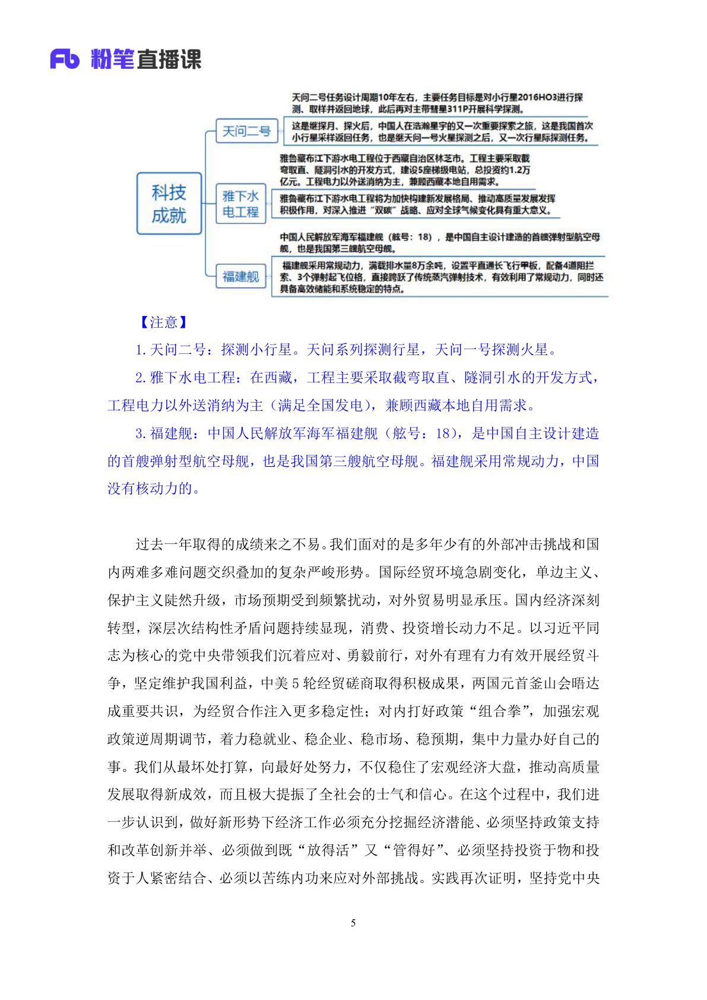
6
集中统一领导是应对一切困难、做好各项工作的根本保证，中国人民有信心有智
慧有力量战胜一切艰难险阻！
【解析】
1.中央经济工作会议的重点，每年中央经济工作是党定向的，每年政府工作
报告是政府落实党中央的政策，进行细化。
2.必须充分挖掘经济潜能（政策束缚太死、僵化也不行）；必须坚持政策支
持和改革创新并举、必须做到既“放得活（放给市场）”又“管得好（政府要管）”，
要打好配合，考试给出“管得住”则错误，是三中全会的表述；必须坚持投资于
物和投资于人紧密结合，之前更多投资于修路、高铁（基础设施建设），现在投
资于人，即民生角度，如教育、医疗、住房；必须以苦练内功来应对外部挑战，
当下最大的不确定来源于外部，面对外部的不确定性，苦练内功，自己是确定的。
【题目练习】
1.（单选）2026 年政府工作报告中指出，2025 年是很不平凡的一年，我国
经济（ ）、展现强大韧性；发展（ ）、彰显蓬勃活力。
A.顶压前行 向新向优
B.向新向优 顶压前行
C.爬坡过坎 向高向新
D.向高向新 爬坡过坎
【解析】1.【选A】
2.（单选）2026 年3 月5 日，十四届全国人大四次会议在人民大会堂开幕，
国务院总理李强作政府工作报告。下列关于过去一年成就的说法，错误的是（ ）。
A.国内生产总值增长5%，总量达到140.19 万亿元
B.高技术制造业、装备制造业增加值分别增长9.4%、9.2%
C.全面实施育儿补贴制度、惠及1400 多万婴幼儿
D.新能源汽车年产量超过1600 万辆，电动汽车充电设施突破2000 万个
【解析】2.选非题。C 项：每年3600 元，惠及3000 多万婴幼儿，1400 多万
对应学前教育，当选。【选C】
7
3.（多选）2026 年3 月5 日，十四届全国人大四次会议在人民大会堂开幕，
国务院总理李强作政府工作报告。报告指出，过去一年取得的成绩来之不易。面
对国际经贸环境急剧变化，我们对内打好政策“组合拳”，加强宏观政策逆周期
调节，着力稳就业、稳企业、稳市场、稳预期；对外有理有力有效开展经贸斗争，
坚定维护我国利益，在这个过程中我们充分认识到，做好新形势下经济工作（）。
A.必须充分挖掘经济潜能
B.必须坚持政策支持和改革创新并举
C.必须做到既“放得活”又“管得好”
D.必须坚持投资于物和投资于人紧密结合
【解析】3.还包括必须以苦练内功来应对外部挑战。【选ABCD】
4.（单选）习近平主席在二〇二六年新年贺词中提到了“人工智能大模型”、
“天问二号”、“雅下水电工程”、“首艘电磁弹射型航母”等科技成就，下列与之
相关的说法正确的是（ ）。
A.开源大模型DeepSeek-R1 凭借极低的训练成本，为全球人工智能大模型发
展提供了一条低成本、高效能的“中国路径”
B.天问二号是我国首次实施火星探测与采样返回任务，也是我国首次对地外
天体实施“双目标探测”
C.雅下水电工程采用“截弯取直、隧洞引水”的创新开发方式，工程电力以
西藏本地自用为主，余电外送消纳
D.我国首艘核动力电磁弹射型航空母舰为福建舰，是我国第三艘航空母舰，
2025 年11 月5 日正式入列
【解析】4.B 项：天问二号是小行星，天问一号是火星，排除。C 项：外送
消纳为主，统筹兼顾本地，排除。D 项：常规动力，排除。【选A】
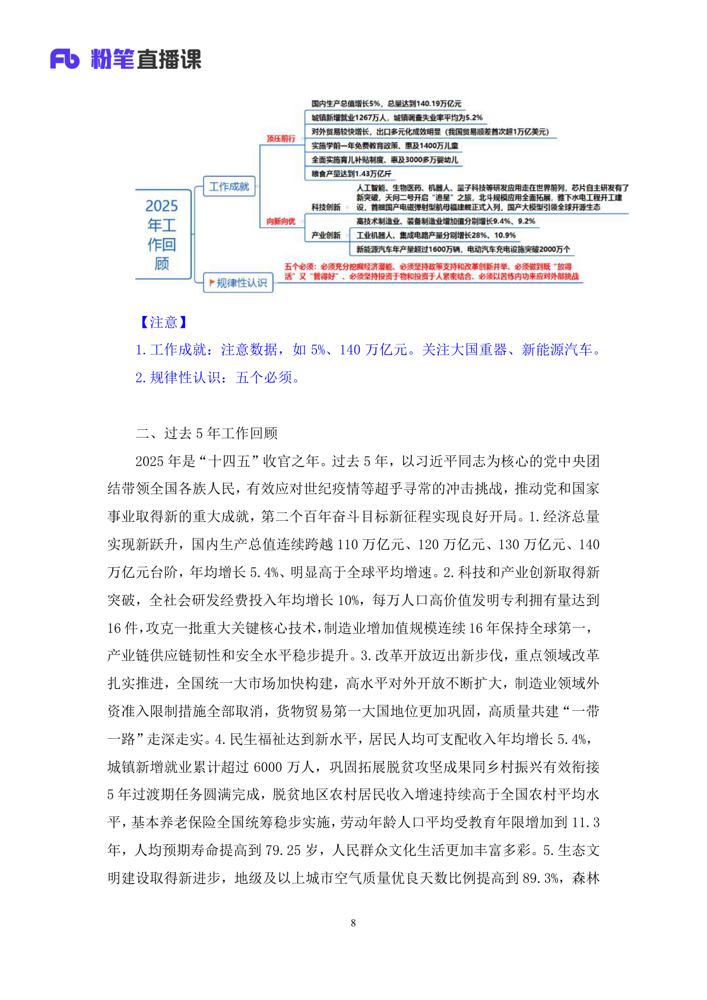
9
覆盖率提高到25%以上，成为全球森林资源增长最快最多的国家，构建起全球最
大、发展最快的可再生能源体系。6.安全保障能力实现新提升，粮食、能源资源、
金融、网络等重点领域安全能力建设明显加强，社会大局保持稳定，牢牢守住了
不发生系统性风险底线。经过艰苦奋斗、不懈努力，“十四五”规划《纲要》确
定的20 项主要指标、17 方面重大战略任务、102 项重大工程项目胜利完成。
【补充】
1.2025 年,研发经费投入强度达2.8%,比上年提高0.11 个百分点,首次超过
OECD 国家平均水平。
2.我国全球创新指数排名从2020 年的第14 位跃升至2025 年的第10 位，首
次跻身全球前十，成为全球首个国内有效发明专利拥有量突破500 万件的国家，
每万人口高价值发明专利拥有量达16 件。
3.劳动年龄人口平均受教育年限增加到11.3 年，新增劳动力平均受教育年
限达到14.2 年。
【解析】2025 年是“十四五”的收官之年。
1.经济总量位居世界第二，经济增速位居全球第一，对世界经济的贡献率贡
献了30%，位居世界第一。国内生产总值连续跨越110 万亿元、120 万亿元、130
万亿元、140 万亿元台阶，年均增长5.4%、明显高于全球平均增速。
2.全社会研发经费世界第二，人员世界第一。全社会研发经费投入年均增长
10%，每万人口高价值发明专利拥有量达到16 件，2025 年,研发经费投入强度达
2.8%,比上年提高0.11 个百分点,首次超过OECD（经济合作组织）国家平均水平。
我国全球创新指数排名从2020 年的第14 位跃升至2025 年的第10 位，首次跻身
全球前十，成为全球首个国内有效发明专利拥有量突破500 万件的国家，每万人
口高价值发明专利拥有量达16 件。2020 年进入创新型国家行列，2025 年还在行
列，中国在进入创新型国家前列是2035 年。
3.制造业增加值规模连续16 年保持全球第一，制造业领域外资准入限制措
施全部取消，货物贸易第一大国地位更加巩固。
4.居民人均可支配收入年均增长5.4%（手里的钱可以自由支配，即微信、支
付宝、银行卡、买基金的钱），城镇新增就业累计超过6000 万人。巩固拓展脱贫
攻坚成果同乡村振兴有效衔接5 年过渡期任务圆满完成，提出常态化精准帮扶。
10
脱贫地区农村居民收入增速持续高于全国农村平均水平，劳动年龄人口平均受教
育年限增加到11.3 年（高二左右），新增劳动力平均受教育年限达到14.2 年。
劳动年龄人口即18 岁成年之后到60 岁之前，新增劳动力指的是刚毕业的，按照
全面劳动年龄来看是年龄低，若是新增加的劳动力基本是大二的水平。人均预期
寿命提高到79.25 岁。
5.森林覆盖率提高到25%以上，成为全球森林资源增长最快最多的国家，构
建起全球最大、发展最快的可再生能源体系。“十四五”规划《纲要》确定的20
项主要指标、17 方面重大战略任务、102 项重大工程项目胜利完成。
这些重大成就的取得，根本在于以习近平同志为核心的党中央领航掌舵，在
于习近平新时代中国特色社会主义思想科学指引，是全党全军全国各族人民团结
奋斗的结果。我国外部环境变化影响加深，地缘政治风险持续上升，世界经济动
能疲弱，多边主义、自由贸易受到严重冲击。国内经济发展和转型中面临的老问
题、新挑战仍然不少。困难不容忽视，信心必须坚定。我国经济长期向好的支撑
条件和基本趋势没有改变，制度优势和大国优势不断彰显。经历了风雨洗礼，我
们的意志更加坚强、步伐更加坚定，只要用足用好优势、妥善应对挑战，我国的
发展前景一定更加可期！
【解析】这些重大成就的取得，根本在于以习近平同志为核心的党中央领航
掌舵，在于习近平新时代中国特色社会主义思想科学指引，没有共产党就没有新
中国，没有党的领导无法实现“十四五”的成就。
【题目练习】
（单选）2026 年3 月5 日，十四届全国人大四次会议在人民大会堂开幕，
国务院总理李强作政府工作报告。报告指出，2025 年是“十四五”收官之年。过
去5 年，我国成就中表述错误的是：
A.制造业增加值规模连续16 年保持全球第一
B.人均预期寿命提高到79.25 岁
C.成为全球森林资源增长最快最多的国家
D.货物贸易第二大国地位更加巩固
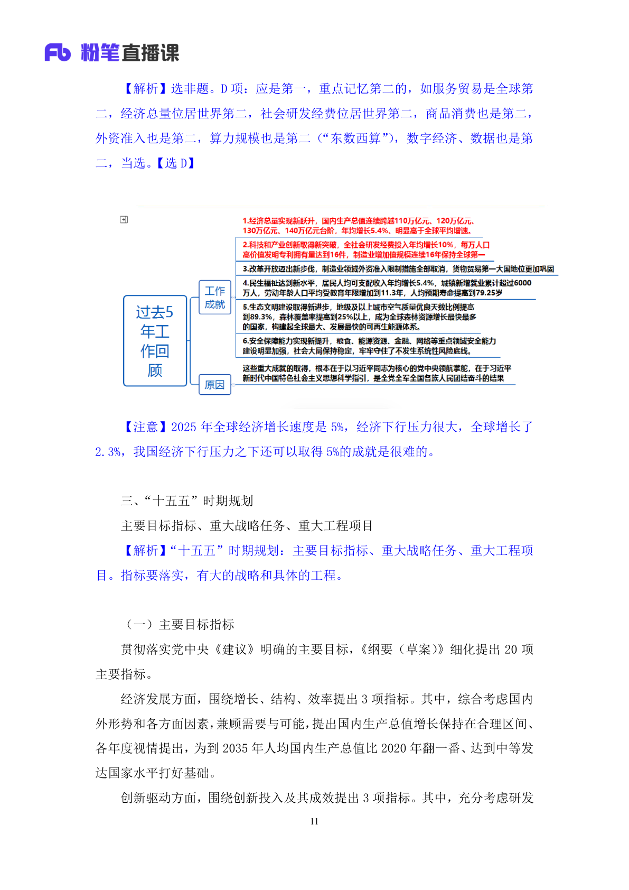
12
投入增长趋势和企业投入能力，提出全社会研发经费投入年均增长7%以上，与
“十四五”规划目标保持一致，确保研发投入力度不减。
民生福祉方面，为更好解决人民群众急难愁盼问题，针对性提出就业、收入、
教育、医疗、健康、“一老一小”等7 项指标。
绿色低碳方面，围绕降碳减污、生态环保等提出5 项指标。其中，根据国家
自主贡献目标，提出单位国内生产总值二氧化碳排放累计降低17%，继续推动重
点领域绿色低碳转型。
安全保障方面，围绕粮食、能源生产能力提出2 项指标，着力夯实国家安全
重要基础保障。
【解析】
1.贯彻落实党中央《建议》明确的主要目标，《纲要（草案）》细化提出20 项
主要指标。国民经济和社会发展的第十五个五年规划。经济和社会是发展，今天
的发展中要统筹发展和安全，不能发展的不安全，故规划围绕20 项主要指标。
2.经济发展方面，国内生产总值增长保持在合理区间、各年度视情提出，到
2035 年人均国内生产总值比2020 年翻一番、达到中等发达国家水平打好基础。
3.创新驱动方面，提出全社会研发经费投入年均增长7%以上。
4.民生福祉方面，针对性提出就业、收入、教育、医疗、健康、“一老一小”
等7 项指标。
5.绿色低碳方面，围绕降碳减污、生态环保等提出5 项指标。其中，根据国
家自主贡献目标，提出单位国内生产总值二氧化碳排放累计降低17%，继续推动
重点领域绿色低碳转型。
6.安全保障方面，围绕粮食、能源生产能力提出2 项指标，着力夯实国家安
全重要基础保障。
7.20 项主要指标，其中指标最多的是民生，投资于物和投资于人相结合，为
人民服务。
（二）重大战略任务
一是突出推动高质量发展。发展新质生产力是高质量发展的内在要求。《纲
要（草案）》强调科技创新的引领作用，着眼巩固壮大实体经济根基，构建以先
13
进制造业为骨干的现代化产业体系。着眼高水平科技自立自强，加强原始创新和
关键核心技术攻关，深入推进数字中国建设，数字经济核心产业增加值占国内生
产总值比重达到12.5%。着眼建设美丽中国，持续深入推进污染防治攻坚和生态
系统优化，加快形成绿色生产生活方式，确保碳达峰目标如期实现。
二是突出做强国内大循环。在外部环境复杂严峻的情况下，必须坚持扩大内
需这个战略基点。《纲要（草案）》着眼增强国内大循环内生动力和可靠性，坚持
惠民生和促消费、投资于物和投资于人紧密结合，大力提振消费，促进居民消费
率明显提高，扩大有效投资。着眼充分释放我国超大规模市场红利，纵深推进全
国统一大市场建设，破除地方保护和市场分割。着眼增强高质量发展动力，充分
激发各类经营主体活力，加快完善要素市场化配置体制机制。着眼畅通国内国际
双循环，统筹用好全球要素和市场资源。
三是突出推进全体人民共同富裕。中国式现代化是全体人民共同富裕的现代
化。《纲要（草案）》着眼建设生育友好型社会，健全人口服务体系；办好人民满
意的教育，劳动年龄人口平均受教育年限提高到11.7 年；加快建设健康中国和
体育强国，人均预期寿命提高到80 岁；积极应对人口老龄化，养老机构护理型
床位占比提高到73%；促进高质量充分就业，完善收入分配制度，健全社会保障
体系。着眼缩小区域差距和城乡差别，加快农业农村现代化，持续巩固拓展脱贫
攻坚成果，优化重大生产力布局，深入推进以人为本的新型城镇化。着眼促进人
民精神生活共同富裕，弘扬和践行社会主义核心价值观，大力繁荣文化事业，加
快发展文化产业，提升中华文明传播力影响力。
四是突出统筹发展和安全。安全是发展的前提，发展是安全的保障。《纲要
（草案）》贯彻总体国家安全观，着眼推进国家安全体系和能力现代化提出多项
任务举措。增强粮食、能源资源等供给保障能力，粮食综合生产能力达到1.45
万亿斤左右，能源综合生产能力达到58 亿吨标准煤。统筹推进房地产、地方政
府债务、地方中小金融机构等风险有序化解。提高公共安全治理水平，有效维护
社会安全稳定。
【解析】重大战略任务：战略讲的是宏观角度，是大方向，战术是微观，是
具体的举措。突出推动高质量发展。发展新质生产力是高质量发展的内在要求。
做大做强国内大循环。发展是为了人民，突出推进全体人民共同富裕。突出统筹
14
发展和安全。
1.发展新质生产力是高质量发展的内在要求、重要着力点。发展通过生产力
推动，生产力决定生产关系，发展新质生产力。壮大实体经济，实业兴邦。构建
以先进制造业为骨干的现代化产业体系（制造业是立国之本、强国之心，先进制
造业即加上科学技术，如AI、智能）。数字经济核心产业增加值占国内生产总值
比重达到12.5%（数据和各个维度融合，也可以转化为实实在在的生产力）。
2.突出做强国内大循环。供需平衡，不能供大于求、供不应求，社会经济的
矛盾是供强需弱，企业生产，老百姓不买，故千方百计刺激消费，扩大内需为战
略基点，“三驾马车”是投资、出口、消费，出口是外需，消费和投资是内需，
坚持惠民生和促消费、投资于物和投资于人紧密结合。
3.突出推进全体人民共同富裕。劳动年龄人口平均受教育年限提高到11.7
年（2025 年是11.3 年），人均预期寿命提高到80 岁（现在是79.25 岁）。
4.突出统筹发展和安全。安全是发展的前提，发展是安全的保障。粮食综合
生产能力达到1.45 万亿斤左右，能源综合生产能力达到58 亿吨标准煤。不能一
煤独大，煤有很多副作用，但我国富煤贫油少气，如中东很乱，石油进不过来，
有煤兜底。
（三）重大工程项目
围绕推动“十五五”目标任务落实落地，统筹考虑战略性、牵引性和连续性，
《纲要（草案）》提出6 方面109 项重大工程。
引领新质生产力发展方面，围绕产业基础能力和竞争力提升、新产业新赛道
培育发展、前沿科技攻关、创新基础能力提升提出28 项工程。
构建现代化基础设施体系方面，围绕国家综合立体交通网、新型能源体系、
新型基础设施、对外开放平台等提出23 项工程。
促进城乡融合发展方面，围绕新型城镇化建设、农业农村现代化建设提出9
项工程。
保障和改善民生方面，围绕社会主义文化繁荣发展、高质量教育体系建设、
健康中国建设、优化“一老一小”服务、社会关爱服务提出25 项工程。
推动绿色低碳转型方面，围绕碳达峰碳中和、环境质量提升、生态保护修复
15
提出18 项工程。重点领域安全保障方面，围绕粮食、能源安全等提出6 项工程。
这些重大工程兼顾当前和长远，既涉及“硬投资”也包含“软建设”。我们
将注重以政府投资带动社会力量参与，更好发挥重大工程项目强基础、补短板、
增后劲等重要作用。
【解析】围绕推动“十五五”目标任务落实落地，统筹考虑战略性、牵引性
和连续性，
《纲要（草案）》提出6 方面109 项重大工程。考查的可能性不是很大，
现在政治理论考法考查大方向逻辑、政治素养，即不是考查死记硬背。政府是引
导作用，投资是市场行为，市场主导，故这些重大工程兼顾当前和长远，既涉及
“硬投资”也包含“软建设”。我们将注重以政府投资带动社会力量参与，更好
发挥重大工程项目强基础、补短板、增后劲等重要作用。
【题目练习】
（单选）2026 年政府工作报告中指出，“十五五”规划《纲要（草案）》分领
域阐述了“十五五”发展的重大战略任务，突出体现四个方面，包括（ ）。
①突出推动高质量发展
②突出做强国内大循环
③突出推进全体人民共同富裕
④突出推动全面绿色转型
A.①②③
B.①③④
C.①②④
D.②③④
【解析】统筹发展和安全。【选A】
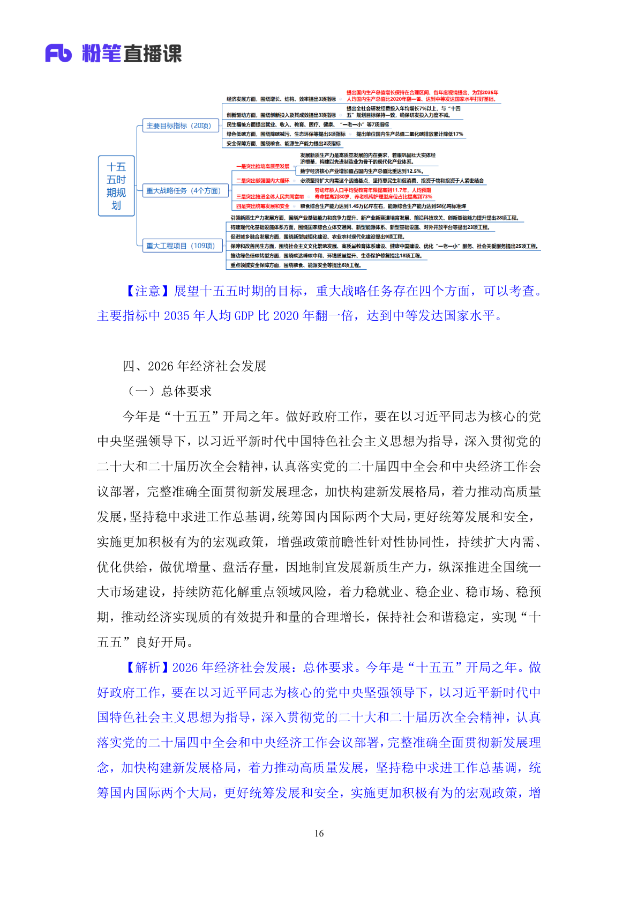
17
强政策前瞻性针对性协同性，持续扩大内需、优化供给，做优增量、盘活存量，
因地制宜发展新质生产力，纵深推进全国统一大市场建设，持续防范化解重点领
域风险，着力稳就业（摆在首位，就业是最大的民生）、稳企业（稳住企业就能
稳住就业，企业都在裁员、降薪就不会招人）、稳市场、稳预期，推动经济实现
质的有效提升和量的合理增长（二者不能互换，我们的鲜明主题是高质量发展，
“质”在前，要提质增效），保持社会和谐稳定，实现“十五五”良好开局（中
央经济工作会议中提到）。
（二）预期目标
今年发展主要预期目标是：经济增长4.5%－5%，在实际工作中努力争取更
好结果；城镇调查失业率5.5%左右，城镇新增就业1200 万人以上；居民消费价
格涨幅2%左右；居民收入增长和经济增长同步；国际收支基本平衡；粮食产量
1.4 万亿斤左右；单位国内生产总值二氧化碳排放降低3.8%左右。
提出这些预期目标，主要考虑是开局之年为调结构、防风险、促改革留出空
间，为后期更好发展打牢基础。经济增长目标同2035 年远景目标总体衔接，与
我国经济长期增长潜力基本吻合，实现这个目标具备有利条件，各地区要结合实
际，通过扎实工作争取好的结果。城镇调查失业率5.5%左右，体现了在就业总量
和结构性压力较大的情况下，坚持就业优先政策导向和加大稳就业力度的要求。
居民消费价格涨幅2%左右，考虑了预期引导和现实可能，我们将通过改善总供
求关系，推动价格总水平由负转正、消费价格合理温和回升，促进经济良性循环。
单位国内生产总值二氧化碳排放降低3.8%左右，综合考虑了经济社会发展、绿
色低碳转型和国家能源安全等多种需要，有利于有序实现2030 年前碳达峰目标。
【解析】预期目标：宏观经济调控的主要目标——经济增长、增加就业、稳
定物价、保持国际收支平衡（“2 增1 稳保平衡”），每年政府工作报告中的预期
目标谈的都是这些数据。
1.今年发展主要预期目标是：经济增长4.5%－5%，在实际工作中努力争取
更好结果（也许比5%更多，中国经济向好的一面没有改变）；城镇调查失业率5.5%
左右，城镇新增就业1200 万人以上（GDP 每增长1%就会带动250 万个岗位）；居
民消费价格（CPI 是看经济是否通货膨胀的重要指标，没超过3%就没有发生通货
18
膨胀）涨幅2%左右；居民收入增长和经济增长同步；国际收支基本平衡；粮食产
量1.4 万亿斤左右；单位国内生产总值二氧化碳排放降低3.8%左右。
2.提出这些预期目标，主要考虑是开局之年为调结构、防风险（尤其是外部
风险）、促改革留出空间（2026 年是“十五五”规划的开局之年，要作出具体的
部署，2025 年是“十四五”规划的收官之年），为后期更好发展打牢基础。经济
增长目标同2035 年远景目标总体衔接，与我国经济长期增长潜力基本吻合，实
现这个目标具备有利条件，各地区要结合实际，通过扎实工作争取好的结果。城
镇调查失业率5.5%左右，体现了在就业总量和结构性压力较大的情况下，坚持
就业优先政策导向和加大稳就业力度的要求。居民消费价格涨幅2%左右，考虑
了预期引导和现实可能，我们将通过改善总供求关系，推动价格总水平由负转正、
消费价格合理温和回升（2025 年习近平总书记经常说“防止内卷式竞争”，企业
都在卷价格，如前几年理发60 元/次，近些年理发9.9 元/次，一味地卷价格企
业就会倒闭，可以提升质量，价格高一点企业依然能站住），促进经济良性循环。
单位国内生产总值二氧化碳排放降低3.8%左右，综合考虑了经济社会发展、绿
色低碳转型和国家能源安全等多种需要，有利于有序实现2030 年前碳达峰目标。
（三）政策取向
我们将坚持稳中求进、提质增效，发挥存量政策和增量政策集成效应，加大
逆周期和跨周期调节力度，切实提升宏观经济治理效能。
继续实施更加积极的财政政策。今年赤字率拟按4%左右安排，赤字规模5.89
万亿元、比上年增加2300 亿元。一般公共预算支出规模将首次达到30 万亿元、
比上年增加约1.27 万亿元。拟发行超长期特别国债1.3 万亿元，持续支持“两
重”建设、“两新”工作等。拟发行特别国债3000 亿元，支持国有大型商业银行
补充资本。拟安排地方政府专项债券4.4 万亿元，完善专项债券项目负面清单管
理和自审自发试点，重点支持建设重大项目、置换隐性债务、消化政府拖欠账款
等。今年财政支出继续保持相当规模，要持续用力优化支出结构，更加注重支持
提振消费、投资于人、保障民生等方面，提高财政资金使用效益。中央财政增加
对地方财力性转移支付规模，开展整合统筹使用转移支付资金试点，增强地方自
主财力和统筹能力。压实分级保障主体责任，兜牢基层“三保”底线。各级政府
19
要更好“当家理财”，建立健全增收节支机制，积极盘活利用存量资源资产，严
肃财经纪律，强化预算约束，严控一般性支出，坚决落实过紧日子的要求，务必
把省下来的每一分钱都用到发展的关键点、群众的急需处。
继续实施适度宽松的货币政策。把促进经济稳定增长、物价合理回升作为货
币政策的重要考量，灵活高效运用降准降息等多种政策工具，保持流动性充裕，
使社会融资规模、货币供应量增长同经济增长、价格总水平预期目标相匹配。优
化创新结构性货币政策工具，适当增加规模，完善实施方式。畅通货币政策传导
机制，充分发挥数据要素、知识产权等无形资产作用，强化考核评估、融资担保、
风险补偿等支持措施，引导金融机构加力支持扩大内需、科技创新、中小微企业
等重点领域。规范信贷市场经营行为，降低融资中间费用，促进社会综合融资成
本低位运行。保持人民币汇率在合理均衡水平上的基本稳定。
强化改革举措与宏观政策协同。推动高质量发展，既要政策给力，也要改革
发力。要用改革的办法打通经济循环的卡点堵点，将政策效果转化为经济内生增
长动能。增强宏观政策取向一致性和有效性，将各类经济政策和非经济政策、存
量政策和增量政策纳入宏观政策取向一致性评估，使各类政策措施同向发力、形
成合力。加强财政、金融、就业、产业等政策协同，深入挖掘政策结合点，创新
实施工具，持续放大“组合拳”效应。健全预期管理机制，提振社会信心。
【解析】政策取向：红色字体是今年与往年不同的点。
1.我们将坚持稳中求进（经济工作的总基调，胆子要大、步子要稳）、提质
增效（中央经济工作会议中谈到；提升质量实现高质量发展），发挥存量政策和
增量政策集成效应（盘活存量、做优增量，如现在要盖好的房子，盘活烂尾楼，
政府收购之后搞社会保障性住房），加大逆周期和跨周期调节力度，切实提升宏
观经济治理效能。
2.继续实施更加积极的财政政策（考查搭配，财政政策的主体是政府，如财
政支出、财政收入）。
（1）今年赤字率拟按4%左右安排（前几年不超过3%，赤字率指财政支出大
于财政收入，当下经济不景气老百姓不消费，国家要更加积极才能避免经济下行），
赤字规模5.89 万亿元、比上年增加2300 亿元。一般公共预算（国家、政府打算
支出的计划）支出规模将首次达到30 万亿元、比上年增加约1.27 万亿元。拟发
20
行超长期特别国债（国债指以国家信用向老百姓借钱然后花出去，国债的利率略
高于银行；超长期特别国债是10 年以上，最长是50 年）1.3 万亿元，持续支持
“两重”建设（国家重大战略实施和重点领域安全能力建设）、“两新”工作（推
动新一轮大规模设备更新和消费品以旧换新）等。拟发行特别国债3000 亿元，
支持国有大型商业银行补充资本（近些年来银行降准降息、贷款贷不出去）。
（2）拟安排地方政府专项债券4.4 万亿元，完善专项债券项目负面清单管
理和自审自发试点，重点支持建设重大项目、置换隐性债务、消化政府拖欠账款
等。今年财政支出继续保持相当规模，要持续用力优化支出结构，更加注重支持
提振消费、投资于人、保障民生等方面，提高财政资金使用效益。中央财政增加
对地方财力性转移支付规模，开展整合统筹使用转移支付资金试点，增强地方自
主财力和统筹能力。压实分级保障主体责任，兜牢基层“三保”底线。各级政府
要更好“当家理财”，建立健全增收节支机制，积极盘活利用存量资源资产，严
肃财经纪律，强化预算约束，严控一般性支出（想让老百姓过上好日子政府就要
过紧日子，不能乱花钱，进行零基预算改革），坚决落实过紧日子的要求，务必
把省下来的每一分钱都用到发展的关键点、群众的急需处。
3.继续实施适度宽松的货币政策（主体是央行，如降准降息）。把促进经济
稳定增长（每年的GDP 都在上涨）、物价合理回升（房地产止跌回稳，投资止跌
回稳）作为货币政策的重要考量，灵活高效运用降准降息等多种政策工具，保持
流动性充裕，使社会融资规模、货币供应量增长同经济增长、价格总水平预期目
标相匹配。
4.强化改革举措与宏观政策协同（体现系统观念）。推动高质量发展，既要
政策给力，也要改革发力。要用改革的办法打通经济循环的卡点堵点，将政策效
果转化为经济内生增长动能。增强宏观政策取向一致性和有效性，将各类经济政
策和非经济政策、存量政策和增量政策纳入宏观政策取向一致性评估，使各类政
策措施同向发力、形成合力。加强财政、金融、就业、产业等政策协同，深入挖
掘政策结合点，创新实施工具，持续放大“组合拳”效应。健全预期管理机制，
提振社会信心。
（四）重点任务
21
1.着力建设强大国内市场，坚持内需主导。
2.加快高水平科技自立自强。
3.持续深化重点领域改革。
4.进一步扩大高水平对外开放。
5.扎实推进乡村全面振兴。
6.推动新型城镇化和区域协调发展。
7.更大力度保障和改善民生。
8.加快推动全面绿色转型。
9.加强重点领域风险防范化解和安全能力建设。
10.牢固树立和践行正确政绩观，坚持为人民出政绩、以实干出政绩。
【解析】重点任务：前6 项是经济，第7-8 项是社会，第9 项是安全，第10
项是党（党政军民学，东西南北中，党领导一切）。
1.着力建设强大国内市场，坚持内需主导（放在首位）：经济的矛盾是“供
强需弱”。
2.加快高水平科技自立自强。
3.持续深化重点领域改革。
4.进一步扩大高水平对外开放。
5.扎实推进乡村全面振兴。
6.推动新型城镇化和区域协调发展。
7.更大力度保障和改善民生。
8.加快推动全面绿色转型。
9.加强重点领域风险防范化解和安全能力建设。
10.牢固树立和践行正确政绩观，坚持为人民出政绩、以实干出政绩。
1.着力建设强大国内市场。坚持内需主导，统筹促消费和扩投资，拓展内需
增长新空间，更好发挥我国超大规模市场优势。
深入实施提振消费专项行动。激发居民消费内生动力和促消费政策并举，推
动消费持续增长。制定实施城乡居民增收计划，在促进低收入群体增收、增加居
民财产性收入、完善薪酬和社保制度等方面推出一批务实举措。促进商品消费扩
22
容升级，安排超长期特别国债2500 亿元支持消费品以旧换新，优化政策实施机
制。设立1000 亿元财政金融协同促内需专项资金，组合运用贷款贴息、融资担
保、风险补偿等方式，支持扩大内需。扩大个人消费贷款和服务业经营主体贷款
贴息政策支持领域，提高贴息上限，延长实施期限。实施好一次性信用修复政策。
实施服务消费提质惠民行动，打造一批带动面广、显示度高的消费新场景，加快
培育消费新增长点。活跃线下消费，激发下沉市场消费活力。清理消费领域不合
理限制措施，释放文旅、赛事、康养等领域消费潜力。支持有条件的地方推广中
小学春秋假，落实职工带薪错峰休假制度。加强消费者权益保护。优化入境消费
环境，打造“购在中国”品牌。
充分挖掘释放有效投资潜力。聚焦新质生产力、新型城镇化、人的全面发展
等重点领域，增强市场主导的有效投资增长动力，提高民生类政府投资比重。今
年拟安排中央预算内投资7550 亿元，安排8000 亿元超长期特别国债资金用于
“两重”建设，分类提高中央投资补助标准。单列并提高用于项目建设的地方政
府专项债券额度，继续向投资项目准备充分、资金用得好的地方倾斜。发行新型
政策性金融工具8000 亿元，带动更多社会资本参与投资。统筹用好各类政府投
资资金，支持工作基础较好的地方探索编制全口径政府投资计划，加强项目资金
监管，坚决防止低效无效投资。落实促进民间投资的政策措施，完善民营企业参
与重大项目建设长效机制，引导民间投资向高技术、现代服务业等新赛道拓展，
有效激发民间投资活力。
【解析】着力建设强大国内市场。坚持内需主导，统筹促消费和扩投资，拓
展内需增长新空间，更好发挥我国超大规模市场优势。
1.深入实施提振消费专项行动（老百姓不花钱是因为没有钱、没有时间）。
激发居民消费内生动力和促消费政策并举，推动消费持续增长。制定实施城乡居
民增收计划（从方方面面增加老百姓的收入），在促进低收入群体增收、增加居
民财产性收入（扩大收入的来源，不能挣死工资，手中有钱可以存入银行、投资，
如股息收入、把房子租出去收房租）、完善薪酬和社保制度等方面推出一批务实
举措。促进商品消费扩容升级，安排超长期特别国债2500 亿元支持消费品以旧
换新，优化政策实施机制。设立1000 亿元财政金融协同促内需专项资金，组合
运用贷款贴息、融资担保、风险补偿等方式，支持扩大内需。扩大个人消费贷款
23
和服务业经营主体贷款贴息政策支持领域（双贴息政策，如贷款利息是3%，国家
补贴1%，个人只需要支付2%的利息），提高贴息上限，延长实施期限。实施好一
次性信用修复政策。实施服务消费提质惠民行动，打造一批带动面广、显示度高
的消费新场景，加快培育消费新增长点。活跃线下消费，激发下沉市场消费活力。
清理消费领域不合理限制措施（如一些地方限制购房、买车），释放文旅、赛事、
康养等领域消费潜力。支持有条件的地方推广中小学春秋假（预估与清明节、中
秋节、国庆节假期结合），落实职工带薪错峰休假制度（休假是每个劳动者应有
的权限）。加强消费者权益保护。优化入境消费环境，打造“购在中国”品牌。
2.充分挖掘释放有效投资潜力。聚焦新质生产力、新型城镇化、人的全面发
展等重点领域，增强市场主导的有效投资增长动力，提高民生类政府投资比重（体
现了投资于人）。今年拟安排中央预算内投资7550 亿元，安排8000 亿元超长期
特别国债资金用于“两重”建设，分类提高中央投资补助标准。单列并提高用于
项目建设的地方政府专项债券额度，继续向投资项目准备充分、资金用得好的地
方倾斜。发行新型政策性金融工具8000 亿元，带动更多社会资本参与投资。统
筹用好各类政府投资资金，支持工作基础较好的地方探索编制全口径政府投资计
划（如之前各搞各的，某地教育局要设三所学校、交通管理局要修三条路、城建
部门要搞新发展区，今天要搞全口径政府投资计划统筹起来，假设一共拨了30
万亿元，要根据优先级量力而行、分清主次，体现系统观念），加强项目资金监
管，坚决防止低效无效投资。落实促进民间投资的政策措施，完善民营企业参与
重大项目建设长效机制，引导民间投资向高技术、现代服务业等新赛道拓展，有
效激发民间投资活力。
加紧培育壮大新动能。坚持把发展经济的着力点放在实体经济上，因地制宜
发展新质生产力，建设现代化产业体系。
优化提升传统产业。持续推进重点产业提质升级，新部署一批重大技术改造
升级项目，安排2000 亿元超长期特别国债资金支持大规模设备更新。实施新一
轮制造业重点产业链高质量发展行动，强化产业基础再造和重大技术装备攻关，
打造一批国家先进制造业集群。推行普惠性“上云用数赋智”服务，持续加大对
中小企业数智化转型的支持。拓展智能制造，新建设一批智能工厂和智慧供应链。
24
发展智能建造，培育现代化建筑产业链。加快推进标准升级，强化质量监督和品
牌建设，支持企业提供更加优质、更具特色的产品。
培育壮大新兴产业和未来产业。实施产业创新工程，鼓励央企国企带头开放
应用场景，打造集成电路、航空航天、生物医药、低空经济等新兴支柱产业。建
立未来产业投入增长和风险分担机制，培育发展未来能源、量子科技、具身智能、
脑机接口、6G 等未来产业。构建促进专精特新中小企业发展壮大机制，培育独角
兽企业。高效用好国家创业投资引导基金，大力发展创业投资、天使投资，政府
投资基金要带头做耐心资本，推动更多初创企业加快成长为科技领军企业。
扩能提质服务业。深化先进制造业和现代服务业融合发展试点。壮大科技服
务市场，促进软件服务价值提升。发展金融、现代物流、知识产权、检验检测等
生产性服务业。促进生活性服务业高品质、多样化、便利化发展。有序放宽服务
业准入限制，扩大重点领域服务业投资。健全服务业国家标准，培育“中国服务”
品牌。
打造智能经济新形态。深化拓展“人工智能+”，促进新一代智能终端和智能
体加快推广，推动重点行业领域人工智能商业化规模化应用，培育智能原生新业
态新模式。支持人工智能开源社区建设，促进开源生态繁荣。实施超大规模智算
集群、算电协同等新基建工程，加强全国一体化算力监测调度，支持公共云发展。
加快发展卫星互联网。打造“5G+工业互联网”升级版。深化数据资源开发利用，
健全数据要素基础制度，建设高质量数据集。完善人工智能治理。
【解析】加紧培育壮大新动能。坚持把发展经济的着力点放在实体经济上，
因地制宜发展新质生产力，建设现代化产业体系。
1.优化提升传统产业（传统产业也能发展新质生产力）。持续推进重点产业
提质升级，新部署一批重大技术改造升级项目，安排2000 亿元超长期特别国债
资金支持大规模设备更新。实施新一轮制造业重点产业链高质量发展行动，强化
产业基础再造和重大技术装备攻关，打造一批国家先进制造业集群。推行普惠性
“上云用数赋智”服务，持续加大对中小企业数智化转型的支持。拓展智能制造，
新建设一批智能工厂和智慧供应链。发展智能建造（“人工智能+”），培育现代化
建筑产业链。加快推进标准升级，强化质量监督和品牌建设，支持企业提供更加
优质、更具特色的产品。
25
2.培育壮大新兴产业和未来产业。实施产业创新工程，鼓励央企国企带头开
放应用场景（政府带头能够刺激市场），打造集成电路（手机、电脑电路板中的
芯片、半导体）、航空航天（低空经济）、生物医药（不是生物制造，医药指创造
出新的药品、治疗方法，生物制造属于未来产业，如一只耳朵没有了可以根据DNA、
细胞再造一个一模一样的耳朵）、低空经济等新兴支柱产业（已经升级）。建立未
来产业投入增长和风险分担机制，培育发展未来能源（氢能、核聚变能）、量子
科技、具身智能、脑机接口、6G 等未来产业（今天不挣钱、需要大量投钱，将来
不一定挣钱）。构建促进专精特新中小企业发展壮大机制，培育独角兽企业。高
效用好国家创业投资引导基金，大力发展创业投资、天使投资（风险共担），政
府投资基金要带头做耐心资本（长期投入），推动更多初创企业加快成长为科技
领军企业。
3.扩能提质服务业（我国货物贸易位居世界第一，服务贸易位居世界第二）。
深化先进制造业和现代服务业融合发展试点。壮大科技服务市场，促进软件服务
价值提升。发展金融、现代物流、知识产权、检验检测等生产性服务业（针对企
业，企业服务要高端化、专业化）。促进生活性服务业高品质、多样化、便利化
发展（生活性服务要高品质、多样化、便利化，如理发店可以洗发、护法、按摩）。
有序放宽服务业准入限制，扩大重点领域服务业投资。健全服务业国家标准，培
育“中国服务”品牌（政府工作报告中首次提出，要提升我国的服务质量，在全
球中打造“中国服务”品牌）。
4.打造智能经济新形态（首次提出）。深化拓展“人工智能+”（本身传统的
产业搭上“人工智能+”，如粉笔加入AI 刷题班），促进新一代智能终端和智能体
加快推广，推动重点行业领域人工智能商业化规模化应用，培育智能原生新业态
新模式（如宇树科技、DeepSeek）。支持人工智能开源社区建设，促进开源生态
繁荣。实施超大规模智算集群、算电协同等新基建工程（传统的基建工程主要是
铁路、公路、机场、水利，新基建指为了处理人工智能需要有5G、算力、充电桩、
大数据、卫星互联网、区块链、云计算），加强全国一体化算力监测调度，支持
公共云发展。加快发展卫星互联网。打造“5G+工业互联网”升级版。深化数据
资源开发利用，健全数据要素基础制度，建设高质量数据集。完善人工智能治理。
26
2.加快高水平科技自立自强。抓住新一轮科技革命和产业变革历史机遇，全
面增强自主创新能力，为高质量发展提供科技支撑。
加强原始创新和关键核心技术攻关。发挥新型举国体制优势，全链条推进关
键核心技术攻关，组织实施好重大科技项目，强化战略前沿领域布局，产出更多
原创性成果。继续提高基础研究投入比重，加大长期稳定支持。统筹国家战略科
技力量建设，深化科研院所改革，加强国家实验室和重大科技任务、重大科技基
础设施统筹部署，全面强化科技基础条件自主保障。加强科学技术普及。弘扬科
学家精神，深化科技评价体系改革，优化有利于原创性、颠覆性创新的环境。
推动科技创新和产业创新深度融合。建设北京（京津冀）、上海（长三角）、
粤港澳大湾区国际科技创新中心，打造世界级科技创新策源地。强化企业创新主
体地位，支持科技领军企业牵头组建创新联合体，提高承担国家重大科技项目比
例。加强中试验证平台建设，完善新兴领域知识产权保护制度，加快重大科技成
果高效转化应用。加强科技创新全链条全生命周期金融服务，对关键核心技术领
域的科技型企业，常态化实施上市融资、并购重组“绿色通道”机制，以科技金
融支持创新创造。
一体推进教育科技人才发展。建立健全一体推进的协调机制，强化规划衔接、
政策协同、资源统筹、评价联动。完善人才培养与经济社会发展需要适配机制，
分类推进高校改革，动态调整学科专业，启动新一轮“双一流”建设，建设国家
交叉学科中心，加大拔尖创新人才自主培养力度。加快建设国家战略人才力量，
加强一流科技领军人才和青年人才引育，推进卓越工程师、大国工匠、高技能人
才培养。高标准推进人才高地和人才平台建设，促进人才区域协调发展。深化人
才发展体制机制改革，完善以创新能力、质量、实效、贡献为导向的评价体系，
畅通人才交流通道，促进各类人才竞相成长、各展其能。
【解析】加快高水平科技自立自强。抓住新一轮科技革命和产业变革历史机
遇（产业出题、科技答题），全面增强自主创新能力，为高质量发展提供科技支
撑。
1.加强原始创新和关键核心技术攻关。发挥新型举国体制优势，全链条推进
关键核心技术攻关，组织实施好重大科技项目，强化战略前沿领域布局，产出更
多原创性成果。继续提高基础研究投入比重，加大长期稳定支持（国家政府定时
27
定点给某个项目投资；竞争性支持指企业、个人想要支持国家建设可以竞标投标。
稳定性支持与竞争性支持相结合）。统筹国家战略科技力量建设，深化科研院所
改革，加强国家实验室和重大科技任务、重大科技基础设施统筹部署，全面强化
科技基础条件自主保障。加强科学技术普及。弘扬科学家精神，深化科技评价体
系改革，优化有利于原创性、颠覆性创新的环境。
2.推动科技创新和产业创新深度融合。建设北京（京津冀）、上海（长三角）、
粤港澳大湾区国际科技创新中心，打造世界级科技创新策源地。强化企业创新主
体地位，支持科技领军企业牵头组建创新联合体，提高承担国家重大科技项目比
例。加强中试验证平台建设，完善新兴领域知识产权保护制度，加快重大科技成
果高效转化应用。加强科技创新全链条全生命周期金融服务，对关键核心技术领
域的科技型企业，常态化实施上市融资、并购重组“绿色通道”机制，以科技金
融支持创新创造。
3.一体推进教育科技人才发展。建立健全一体推进的协调机制，强化规划衔
接、政策协同、资源统筹、评价联动。完善人才培养与经济社会发展需要适配机
制，分类推进高校改革，动态调整学科专业（不是增加学科专业，现在高校中的
一些学科与社会脱节，动态调整学科专业指有的可以增有的可以砍掉），启动新
一轮“双一流”建设，建设国家交叉学科中心，加大拔尖创新人才自主培养力度。
深化人才发展体制机制改革，完善以创新能力、质量、实效、贡献为导向的评价
体系（之前选人才看论文、职称、学历、奖项，现在由虚转实），畅通人才交流
通道，促进各类人才竞相成长、各展其能。
3.持续深化重点领域改革。围绕构建高水平社会主义市场经济体制，强化改
革攻坚，深入破除体制机制障碍，增强高质量发展动力活力。
纵深推进全国统一大市场建设。制定全国统一大市场建设条例。完善统计、
财税、考核等制度，规范地方政府经济促进行为，出台地方政府招商引资鼓励和
禁止事项清单，规范税收优惠、财政补贴政策。深化招标投标体制机制改革。加
强反垄断、反不正当竞争，强化公平竞争审查刚性约束，综合运用产能调控、标
准引领、价格执法、质量监管等手段，深入整治“内卷式”竞争，营造良好市场
生态。深化要素市场化配置综合改革试点，将更多符合条件的地区纳入试点范围。
28
稳步推进公用事业和公共服务价格改革。
推进财税金融体制改革。加大财政资源和预算统筹力度，提高国有资本收益
收取比例。加强财政科学管理，深化零基预算改革，进一步扩大中央部门试点范
围。健全地方税体系，拓展地方税源。调整优化消费税征税范围、税率，并推进
部分品目征收环节后移。规范金融机构竞争秩序，深入推进地方中小金融机构减
量提质。持续深化资本市场投融资综合改革，进一步健全中长期资金入市机制，
完善投资者保护制度，拓展私募股权和创投基金退出渠道，提高直接融资、股权
融资比重。
充分激发各类经营主体活力。坚持和落实“两个毫不动摇”。制定和实施进
一步深化国资国企改革方案，推进国有经济布局优化和结构调整。完善民营经济
促进法配套法规政策，从法律和制度上保障平等使用生产要素、公平参与市场竞
争、有效保护合法权益。完善中国特色现代企业制度。大力弘扬企业家精神，促
进年轻一代企业家健康成长。推动平台企业和平台内经营者、劳动者共赢发展。
分型分类精准帮扶个体工商户发展。下更大力气解决拖欠企业账款问题。持续打
造一流营商环境，更好支持企业安心经营、高质量发展。
【解析】持续深化重点领域改革（牵引）。围绕构建高水平社会主义市场经
济体制（处理好政府与市场之间的关系，有形之手和无形之手打好配合），强化
改革攻坚，深入破除体制机制障碍，增强高质量发展动力活力。
1.纵深推进全国统一大市场建设（中国的市场够大但不够统一）。制定全国
统一大市场建设条例（全国上下一张清单，强调公平、反不正当竞争）。完善统
计、财税、考核等制度，规范地方政府经济促进行为，出台地方政府招商引资鼓
励和禁止事项清单，规范税收优惠、财政补贴政策。深化招标投标体制机制改革。
加强反垄断、反不正当竞争，强化公平竞争审查刚性约束（柔性执法），综合运
用产能调控、标准引领、价格执法、质量监管等手段，深入整治“内卷式”竞争，
营造良好市场生态。深化要素市场化配置综合改革试点，将更多符合条件的地区
纳入试点范围。稳步推进公用事业和公共服务价格改革。
2.推进财税金融体制改革。加大财政资源和预算统筹力度，提高国有资本收
益收取比例。加强财政科学管理，深化零基预算改革，进一步扩大中央部门试点
范围。健全地方税体系，拓展地方税源。调整优化消费税征税范围、税率，并推
29
进部分品目征收环节后移。规范金融机构竞争秩序，深入推进地方中小金融机构
减量提质（如地方农商行等规模很小、数量很多，同质化严重，今天要提升质量
该合并的合并）。持续深化资本市场投融资综合改革，进一步健全中长期资金入
市机制，完善投资者保护制度，拓展私募股权和创投基金退出渠道，提高直接融
资（如企业做生意需要本钱，遇到困难时可以直接上市——直接融资，银行贷款
——间接融资，间接融资太多会出现很大的风险）、股权融资比重。
3.充分激发各类经营主体（公有制经济、非公有制经济）活力。坚持和落实
“两个毫不动摇”。制定和实施进一步深化国资国企改革方案，推进国有经济布
局优化和结构调整。完善民营经济促进法配套法规政策，从法律和制度上保障平
等使用生产要素、公平参与市场竞争、有效保护合法权益。民营企业在经济发展
中起主导作用（错误），原因：公有制经济中的国有经济起主导作用。
4.进一步扩大高水平对外开放。坚持合作共赢，稳步扩大制度型开放，拓展
国际循环，以开放促改革促发展。
积极扩大自主开放。以服务业为重点扩大市场准入和开放领域，进一步扩大
增值电信、生物技术、外商独资医院等领域开放试点，有序扩大数字领域开放，
压减跨境服务贸易负面清单。建好国家服务业扩大开放综合示范区。推动商签更
多区域和双边贸易投资协定，积极推动加入《数字经济伙伴关系协定》和《全面
与进步跨太平洋伙伴关系协定》进程。全面深入参与世贸组织改革，维护和发展
开放型世界经济。优化自由贸易试验区布局范围、提升创新引领发展能级，扎实
推进海南自由贸易港建设。
推动外贸稳规模优结构。加大信贷、信保支持，扩大人民币跨境使用。引导
企业优化全球市场布局，推进贸易投资一体化、内外贸一体化发展。培育壮大贸
易发展新动能，推动跨境电商加海外仓模式扩容升级、规范有序发展，加强国际
寄递物流体系建设，拓展中间品贸易，发展数字贸易、绿色贸易，提升边境贸易。
鼓励支持服务出口。积极扩大进口，推进贸易平衡发展。提高跨境贸易便利化水
平。
扩大双向投资合作。深化外商投资促进体制机制改革，保障外资企业国民待
遇，实施新版鼓励外商投资产业目录，促进外资境内再投资、扩大本地化生产。
30
加强对外资企业的服务保障，擦亮“投资中国”名片。规范提升各类开发区、园
区。引导产业链供应链合理有序跨境布局，完善海外综合服务体系，加强对外投
资风险防控和海外利益保护。
高质量共建“一带一路”。加强与共建国家战略对接，做实做细“硬联通”、
“软联通”、“心联通”。统筹推进重大标志性工程和“小而美”民生项目建设。
提升中欧中亚班列发展水平，加快西部陆海新通道建设。深入推进“智慧海关”
合作伙伴计划。拓展新兴领域务实合作，让合作成果更多惠及各国人民。
【解析】进一步扩大高水平对外开放。坚持合作共赢，稳步扩大制度型开放
（一切规则、规章标准都已经成型，与国际对接），拓展国际循环，以开放促改
革促发展（我国2001 年加入WTO，打开国际市场利大于弊）。
1.积极扩大自主开放。以服务业为重点扩大市场准入和开放领域（我们的服
务贸易较弱），进一步扩大增值电信、生物技术、外商独资医院等领域开放试点，
有序扩大数字领域开放，压减跨境服务贸易负面清单（更好地自主开放）。建好
国家服务业扩大开放综合示范区。推动商签更多区域和双边贸易投资协定，积极
推动加入《数字经济伙伴关系协定》（简称DEPA）和《全面与进步跨太平洋伙伴
关系协定》进程（简称CPTPP；不能改为《区域全面经济伙伴关系协定》简称RECP，
我国早就加入且2022 年已经生效）。
2.扩大双向投资合作（我国是全球外资流入第二大国，我国对外投资是全球
第三）。深化外商投资促进体制机制改革，保障外资企业国民待遇（二十届四中
全会中强调外资准入又准营，让他们再投资扩大本地的生产），实施新版鼓励外
商投资产业目录，促进外资境内再投资、扩大本地化生产。加强对外资企业的服
务保障，擦亮“投资中国”名片。规范提升各类开发区、园区。引导产业链供应
链合理有序跨境布局，完善海外综合服务体系，加强对外投资风险防控和海外利
益保护。
3.高质量共建“一带一路”。加强与共建国家战略对接，做实做细“硬联通”、
“软联通”、“心联通”。统筹推进重大标志性工程和“小而美”民生项目建设。
提升中欧中亚班列发展水平，加快西部陆海新通道建设。深入推进“智慧海关”
合作伙伴计划。拓展新兴领域务实合作，让合作成果更多惠及各国人民。
31
5.扎实推进乡村全面振兴。坚持把“三农”工作作为重中之重，深入学习运
用“千万工程”经验，提高强农惠农富农政策效能，进一步夯实农业农村基础、
提升发展质效。
毫不放松抓好粮食生产。坚持产量产能、生产生态、增产增收一起抓，加力
实施新一轮千亿斤粮食产能提升行动。稳定粮油生产，促进良田良种良机良法集
成增效，推动大面积单产提高、品种培优、品质提升。巩固提升大豆油料产能，
推动棉糖胶等稳产提质。坚持农林牧渔并举，增加多元食物供给。严守耕地红线，
严格占补平衡管理，高质量推进高标准农田建设，加强黑土地保护和盐碱地综合
利用。制定促进农业保险发展的措施。提高农业综合防灾减灾能力。深入实施种
业振兴行动，加快选育推广突破性品种，推进先进适用农机装备研发应用，打通
农业科技推广“最后一公里”。统筹生产、收储等政策，促进粮食等重要农产品
价格保持在合理水平，实施粮食产销区省际横向利益补偿，调动主产区和农民种
粮积极性。各地区都要扛稳责任，共同端牢中国人的饭碗。
实施常态化精准帮扶。持续巩固拓展脱贫攻坚成果，把常态化帮扶纳入乡村
振兴战略统筹实施，守牢不发生规模性返贫致贫底线。保持帮扶政策总体稳定。
合理确定防止返贫致贫对象认定标准，做好监测识别，确保早发现、早干预、早
帮扶。提高产业、就业等开发式帮扶实效，发挥社会救助兜底保障作用。继续做
好易地搬迁后续扶持。完善东西部协作、定点帮扶、驻村帮扶和消费帮扶等。分
层分类帮扶欠发达地区，支持乡村振兴重点帮扶县加快发展，增强内生动力。
持续推进农村改革发展。全面开展第二轮土地承包到期后再延长30 年整省
试点，发展农业适度规模经营，健全现代农业经营体系和社会化服务体系。支持
发展新型农村集体经济。深化集体产权、集体林权、农垦、供销社等改革。开展
第四次全国农业普查。推动城乡要素双向流动，深化农文旅等融合发展，培育壮
大乡村特色产业，提高农产品精深加工水平，发展林下经济，完善联农带农机制，
促进农民稳定增收。发展壮大乡村人才队伍。深化农村移风易俗，提升乡村治理
和文明乡风建设水平。持续整治提升农村人居环境，以钉钉子精神解决好农村改
厕、垃圾围村等问题。扎实推进全域土地综合整治。完善乡村建设实施机制，加
快补齐农村现代生活条件短板，推进宜居宜业和美乡村建设。
【解析】扎实推进乡村全面振兴。坚持把“三农”工作作为重中之重（全面
32
建设社会主义现代化的国家最艰巨、最繁重的任务在农村，经济发展务必要补上
这个短板），深入学习运用“千万工程”经验，提高强农惠农富农政策效能，进
一步夯实农业农村基础、提升发展质效。
1.毫不放松抓好粮食生产。坚持产量产能（不要只看当下的产量要看潜能如
何）、生产生态（不要只看生产也要看土壤是否被污染）、增产增收（不要只看生
产，也要看增收，即老百姓是否有继续投产的欲望）一起抓，加力实施新一轮千
亿斤粮食产能提升行动（从1.3 万亿斤到1.4 万亿斤）。稳定粮油生产，促进良
田良种良机良法集成增效，推动大面积单产提高、品种培优、品质提升。统筹生
产、收储等政策，促进粮食等重要农产品价格保持在合理水平，实施粮食产销区
省际横向利益补偿（如黑龙江是产粮大省，黑龙江产的粮食给广东，广东要补偿
给主产区），调动主产区和农民种粮积极性。各地区都要扛稳责任，共同端牢中
国人的饭碗。
2.实施常态化精准帮扶。持续巩固拓展脱贫攻坚成果，把常态化帮扶纳入乡
村振兴战略统筹实施，守牢不发生规模性返贫致贫底线。保持帮扶政策总体稳定。
合理确定防止返贫致贫对象认定标准，做好监测识别，确保早发现、早干预、早
帮扶。提高产业、就业等开发式帮扶实效（救济式帮扶如给他们米面油；授人以
鱼不如授人以渔，要让他们学会一技之长、找到工作），发挥社会救助兜底保障
作用。继续做好易地搬迁后续扶持。完善东西部协作、定点帮扶、驻村帮扶和消
费帮扶等。分层分类帮扶欠发达地区，支持乡村振兴重点帮扶县加快发展，增强
内生动力。
3.持续推进农村改革发展。全面开展第二轮土地承包到期（2027 年）后再延
长30 年整省试点，发展农业适度规模经营，健全现代农业经营体系和社会化服
务体系。支持发展新型农村集体经济。深化集体产权、集体林权、农垦、供销社
等改革。开展第四次全国农业普查。完善乡村建设实施机制，加快补齐农村现代
生活条件短板，推进宜居（对应农村适合居住）宜业（对应农业）和美（对应农
民）乡村建设。
6.推动新型城镇化和区域协调发展。深入实施区域协调发展战略、区域重大
战略、主体功能区战略和新型城镇化战略，构建优势互补、高质量发展的区域经
33
济布局和国土空间体系。
深入推进以人为本的新型城镇化。科学有序推进农业转移人口市民化，因地
制宜放宽在流入地参加中考报名条件，进一步完善“人地钱”挂钩政策。优化县
域基础设施布局和公共资源配置，发展县域特色产业，推动县域经济高质量发展。
坚持城市内涵式发展，优化现代化城市体系。高质量推进城市更新，稳步实施城
镇老旧小区、城中村等改造。盘活利用存量土地和闲置房屋设施。加强城市基础
设施生命线安全工程建设，提升高层建筑火灾防范和救援能力。建设创新型产业
社区、商务社区，推动城市治理智慧化精细化，建设现代化人民城市。
不断增强区域发展协调性。优化主体功能区划，引导各地区围绕主体功能定
位，更好发挥比较优势。扎实推动西部大开发形成新格局、东北全面振兴取得新
突破、中部地区加快崛起、东部地区加快推进现代化。加强改革攻坚、政策赋能
和要素保障，支持经济大省挑大梁。支持京津冀、长三角、粤港澳大湾区打造世
界级城市群。高标准高质量推进雄安新区建设。持续推进长江经济带发展、黄河
流域生态保护和高质量发展。提升成渝地区双城经济圈发展能级。推动长江中游
城市群等加快发展。加强重点城市群协调联动，健全规划统筹、产业协作、利益
共享等机制，实施国家产业转移发展提升工程，深化跨行政区合作。加大差异化
政策支持力度，深入推进兴边富民行动，促进革命老区、民族地区、边疆地区、
资源枯竭城市等振兴发展。加强主要海湾整体规划，做强做优做大海洋产业。
【解析】推动新型城镇化和区域协调发展。深入实施区域协调发展战略、区
域重大战略、主体功能区战略和新型城镇化战略，构建优势互补、高质量发展的
区域经济布局和国土空间体系。
1.深入推进以人为本的新型城镇化。科学有序推进农业转移人口市民化（要
让老百姓感受到家的温暖，保障教育、医疗、住房等各个维度），因地制宜放宽
在流入地参加中考报名条件，进一步完善“人地钱”挂钩政策。优化县域基础设
施布局和公共资源配置，发展县域特色产业（“一县一业”，县发展起来了乡村才
能发展起来），推动县域经济高质量发展。建设创新型产业社区、商务社区，推
动城市治理智慧化精细化，建设现代化人民城市（内涵为创新、宜居、美丽、韧
性、文明、智慧）。
2.不断增强区域发展协调性。优化主体功能区划，引导各地区围绕主体功能
34
定位，更好发挥比较优势。扎实推动西部大开发形成新格局、东北全面振兴取得
新突破、中部地区加快崛起、东部地区加快推进现代化。加强改革攻坚、政策赋
能和要素保障，支持经济大省挑大梁。支持京津冀、长三角、粤港澳大湾区打造
世界级城市群（对应上中下；不能表述为“世界级科技创新策源地”，对应北京
——京津冀、上海——长三角、粤港澳大湾区）。高标准高质量推进雄安新区建
设。持续推进长江经济带发展、黄河流域生态保护和高质量发展。提升成渝地区
双城经济圈发展能级。推动长江中游城市群等加快发展。加强重点城市群协调联
动，健全规划统筹、产业协作、利益共享等机制，实施国家产业转移发展提升工
程，深化跨行政区合作。加大差异化政策支持力度，深入推进兴边富民行动，促
进革命老区、民族地区、边疆地区、资源枯竭城市等振兴发展。加强主要海湾整
体规划，做强做优做大海洋产业。
7.更大力度保障和改善民生。坚持民生为大，加强普惠性、基础性、兜底性
民生建设，努力为人民群众多办实事。
促进高质量充分就业。加大各类政策对就业的支持力度，构建就业友好型发
展方式。延续实施稳岗返还、社保补贴、专项贷款等阶段性措施，进一步增加以
工代赈投资规模。实施稳岗扩容提质行动，支持劳动密集型行业企业稳定岗位，
围绕发展新兴产业、未来产业培育新职业新岗位，增强服务业带动就业能力。制
定高校毕业生等青年就业支持政策，强化农民工稳岗帮扶，做好退役军人安置和
就业服务，加强困难人员就业援助，出台支持灵活就业人员、新就业形态人员参
加职工保险的政策。发挥创业担保贷款贴息等政策作用，加强创业支持引导。完
善适应人工智能技术发展促进就业创业的措施。全面落实农民工工资支付保障制
度，加强就业歧视治理，坚决维护劳动者合法权益。持续开展大规模职业技能提
升培训，让更多劳动者拥有一技之长，更好就业增收。
推动教育公平与质量提升。实施新时代立德树人工程，促进思政课堂和社会
课堂有效融合。适应学龄人口结构变化，推进教育资源布局结构调整。推动基础
教育扩优提质，统筹义务教育优质均衡发展、学前教育优质普惠发展，完善免费
学前教育政策，增加普通高中学位供给。持续扩大优质本科教育招生规模。提升
职业学校办学能力，建设特色鲜明高职院校。办好特殊教育、专门教育，提升终
35
身学习公共服务水平，引导规范民办教育发展。建设高素质专业化教师队伍，加
强师德师风建设，强化教师待遇保障。加强体育、美育、劳动教育和心理健康教
育，健全学校家庭社会协同育人机制，促进学生身心健康、全面发展。
强化基本医疗卫生服务。实施健康优先发展战略，健全健康促进政策制度体
系，提升爱国卫生运动成效，强化公共卫生能力。健全医疗、医保、医药协同发
展和治理机制，深化以公益性为导向的公立医院改革，加强县区、基层医疗机构
运行保障。强化薄弱专科建设，全方位提升急诊急救、血液保障和应急能力。优
化医疗机构功能定位和布局，加强基层用药衔接，做实家庭医生签约服务，促进
分级诊疗。推进中医药传承创新，促进中西医结合。居民医保人均财政补助标准
提高24 元。健全多层次医疗保障体系，稳步推动基本医疗保险省级统筹，优化
医药集中采购和价格治理，深化医保支付方式改革，完善结余资金使用政策。坚
决打击欺诈骗保。加快发展商业健康保险，推动创新药和医疗器械高质量发展，
更好满足人民群众多元化就医用药需求。
【解析】更大力度保障和改善民生。坚持民生为大，加强普惠性、基础性、
兜底性民生建设，努力为人民群众多办实事。
1.促进高质量充分就业（民生之本）。加大各类政策对就业的支持力度，构
建就业友好型发展方式。延续实施稳岗返还、社保补贴、专项贷款等阶段性措施，
进一步增加以工代赈投资规模。实施稳岗扩容提质行动（稳定劳动性密集产业的
岗位，如富士康等企业），支持劳动密集型行业企业稳定岗位，围绕发展新兴产
业、未来产业培育新职业新岗位，增强服务业（承载能力很强）带动就业能力。
制定高校毕业生等青年就业支持政策（摆在首位），强化农民工稳岗帮扶，做好
退役军人安置和就业服务，加强困难人员就业援助，出台支持灵活就业人员、新
就业形态人员参加职工保险的政策。发挥创业担保贷款贴息等政策作用，加强创
业支持引导。
2.推动教育（民生之基，民生之源是收入分配）公平与质量提升。实施新时
代立德树人工程（德智体美劳五育并举，把德育放在首位），促进思政课堂和社
会课堂有效融合。适应学龄人口结构变化，推进教育资源布局结构调整。推动基
础教育（基点）扩优提质，统筹义务教育优质均衡发展、学前教育优质普惠发展，
完善免费学前教育政策，增加普通高中学位供给。持续扩大优质本科教育（龙头）
36
招生规模。提升职业学校办学能力，建设特色鲜明高职院校。办好特殊教育、专
门教育，提升终身学习公共服务水平，引导规范民办教育发展。建设高素质专业
化教师队伍，加强师德师风建设，强化教师待遇保障。加强体育、美育、劳动教
育和心理健康教育，健全学校家庭社会协同育人机制，促进学生身心健康、全面
发展。
3.强化基本医疗卫生服务。实施健康优先发展战略，健全健康促进政策制度
体系，提升爱国卫生运动成效，强化公共卫生能力。健全医疗、医保、医药协同
发展和治理机制（三医协同发展），深化以公益性为导向的公立医院改革（现在
很多公立医院为了营利，如某医院的横幅“要提高我院的住院率”），加强县区、
基层医疗机构运行保障。强化薄弱专科建设，全方位提升急诊急救、血液保障和
应急能力。优化医疗机构功能定位和布局，加强基层用药衔接，做实家庭医生签
约服务，促进分级诊疗（优质的医疗资源不公平、分布不均，主要集中在省城；
分级诊疗指大病在省城就可以解决、一般性的病在市县就可以解决、日常的慢性
疾病在基层就可以解决）。推进中医药传承创新，促进中西医结合。居民医保人
均财政补助标准提高24 元。
加强社会保障和服务。城乡居民基础养老金月最低标准再提高20 元。完善
并落实基本养老保险全国统筹制度，扩大失业、工伤保险覆盖面，稳妥有序推进
职业伤害保障试点扩围，健全社保关系转移接续政策。深入实施积极应对人口老
龄化国家战略，扩大普惠养老服务供给，积极发展农村养老服务，实施中度以上
失能老年人养老服务消费补贴项目。积极开发老年人力资源，制定推进银发经济
高质量发展的措施，完善老年用品产品、养老金融、旅居养老等支持政策。实施
康复护理扩容提升工程。推行长期护理保险制度。做好独居老人、失能失智等困
难群体的关爱帮扶。倡导积极婚育观。加强初婚初育家庭住房保障，支持多子女
家庭改善性住房需求。完善生育保险制度和生育休假制度。深入开展托育服务补
助示范试点，发展普惠托育和托幼一体化服务。加强残疾预防、康复和托养照护
服务，推进养老助残资源统筹利用。做好困境儿童关爱服务，保障妇女儿童合法
权益。加强军人军属、退役军人和其他优抚对象服务保障。建立健全基本殡葬服
务制度。分层分类做好社会救助工作，兜住兜牢民生底线。
37
更好满足人民群众精神文化需求。以社会主义核心价值观引领文化建设。发
展哲学社会科学事业，推动新闻出版、广播影视、文学艺术等领域精品创作。加
强网络内容建设和管理，深化网络综合治理，推进未成年人网络保护。实施公共
文化服务提质增效行动，做好公共图书馆、博物馆、文化馆等惠民开放，完善全
民阅读推广服务体系，广泛开展群众性文化活动，繁荣互联网条件下新大众文艺。
发展档案事业。深入实施中华优秀传统文化传承发展工程，完成第四次全国文物
普查，加强文化遗产系统性保护、监管和合理利用。高质量发展文化旅游业，丰
富文旅体商等融合业态。鼓励更多文化企业和优秀文化产品走向世界，增强主流
媒体国际传播能力。做好2026 年亚运会备战参赛工作。加快重塑足球青训体系。
积极发展赛事经济、冰雪经济、户外运动，建好用好群众身边的运动场地设施，
培育更多特色群众体育赛事活动。
【解析】
1.加强社会保障和服务。城乡居民基础养老金月最低标准再提高20 元。深
入实施积极应对人口老龄化国家战略，扩大普惠养老服务供给，积极发展农村养
老服务，实施中度以上失能老年人养老服务消费补贴项目（之前国家的补贴给到
养老院、养老机构但效果不明显，现在直接补给老年人）。倡导积极婚育观（现
在对结婚放开了很多条件）。加强初婚初育家庭住房保障（刚性住房），支持多子
女家庭改善性住房需求（改善性住房）。完善生育保险制度和生育休假制度。
2.更好满足人民群众精神文化需求。以社会主义核心价值观引领文化建设
（二十四个字分为三个层面）。深入实施中华优秀传统文化传承发展工程，完成
第四次全国文物普查，加强文化遗产系统性保护（保护第一）、监管和合理利用
（最小干预）。
8.加快推动全面绿色转型。以碳达峰碳中和为牵引，协同推进降碳、减污、
扩绿、增长，增强绿色发展动能。
加强生态环境综合治理。深入打好蓝天、碧水、净土保卫战，制定实施空气
质量持续改善行动计划，推进县城和农村黑臭水体治理，加强重点行业污染地块
风险管控。强化新污染物治理，实施固体废物综合治理行动。完善多元化生态补
偿机制，拓展生态产品价值实现渠道。加强生物多样性保护，实施好长江十年禁
38
渔。坚持山水林田湖草沙一体化保护和系统治理，实施自然保护地整合优化，推
进国家公园建设，扎实推进“三北”工程攻坚战，让人民群众身边的山更绿、水
更清。大力发展绿色低碳经济。完善促进绿色低碳发展政策，实施重点行业提质
降本降碳行动，深入推进零碳园区和工厂建设。设立国家低碳转型基金，培育氢
能、绿色燃料等新增长点。有力有效管控高耗能高排放项目，加快淘汰落后产能，
支持绿色低碳技术装备创新应用。完善资源总量管理和全面节约制度，强化再生
资源循环利用。
积极稳妥推进碳达峰碳中和。实施碳排放总量和强度双控制度，完善碳排放
统计核算、碳足迹管理体系，进一步扩大碳排放权交易市场覆盖范围。制定能源
强国建设规划纲要。着力构建新型电力系统，加快智能电网建设，发展新型储能，
扩大绿电应用。加强化石能源清洁高效利用。
【解析】加快推动全面绿色转型。以碳达峰（2030 年前实现）碳中和（2060
年前实现）为牵引，协同推进降碳、减污、扩绿、增长，增强绿色发展动能。
1.加强生态环境综合治理。深入打好蓝天、碧水、净土保卫战，制定实施空
气质量持续改善行动计划，推进县城和农村黑臭水体治理，加强重点行业污染地
块风险管控。坚持山水林田湖草沙一体化保护和系统治理，实施自然保护地整合
优化，推进国家公园建设（第一个国家公园是三江源国家公园，能更好地保证物
种不灭绝），扎实推进“三北”工程攻坚战，让人民群众身边的山更绿、水更清。
2.大力发展绿色低碳经济（解决生态环境的治本之策）。完善促进绿色低碳
发展政策，实施重点行业提质降本降碳行动，深入推进零碳园区和工厂建设。设
立国家低碳转型基金，培育氢能、绿色燃料等新增长点。有力有效管控高耗能高
排放项目，加快淘汰落后产能，支持绿色低碳技术装备创新应用。完善资源总量
管理和全面节约制度，强化再生资源循环利用。
3.积极稳妥推进碳达峰碳中和（“十五五”规划的结束之年就要实现碳达峰；
2026 年是能耗双控全面转向碳排放双控的第一年）。实施碳排放总量和强度双控
制度，完善碳排放统计核算、碳足迹管理体系，进一步扩大碳排放权交易市场覆
盖范围。“十五五”时期，实施以强度控制为主（生产1GDP 的经济要排放多少二
氧化碳）、总量控制为辅的碳排放双控制度；碳达峰后，实施以总量控制为主、
强度控制为辅的碳排放双控制度。
39
9.加强重点领域风险防范化解和安全能力建设。统筹防风险和促发展，进一
步增强发展韧性，坚决守牢安全底线，促进社会和谐稳定。
着力稳定房地产市场。因城施策控增量、去库存、优供给，探索多渠道盘活
存量商品房，鼓励收购存量商品房重点用于保障性住房等。深化住房公积金制度
改革。优化保障性住房供给，加快危旧房改造。有序推动安全舒适绿色智慧的“好
房子”建设，实施房屋品质提升工程和物业服务质量提升行动。进一步发挥“保
交房”的白名单制度作用，防范债务违约风险。深入推进房地产发展新模式的基
础制度和配套政策建设。
积极有序化解地方政府债务风险。支持各地用足用好政策，加快化解隐性债
务风险，严防虚假化债，坚决把遏制违规新增隐性债务作为铁的纪律。加大金融、
财政支持力度，优化债务重组和置换办法，多措并举化解地方政府融资平台经营
性债务风险，分类有序推动改革转型。优化债务监测考核指标，构建统一的政府
债务管理长效机制。
积极稳妥化解金融领域风险。充实地方中小金融机构风险处置资源和手段。
坚持市场化法治化原则，有序推进高风险机构处置。多渠道加大资本补充力度，
稳妥处置金融机构不良资产。加强金融监管协同，防范打击非法金融活动。强化
金融风险监测预警和早期纠正，提高风险源头防控能力。
维护国家安全和社会稳定。全面贯彻总体国家安全观，健全国家安全体系，
加强重点领域国家安全能力建设。强化公共安全治理，提升重要基础设施本质安
全水平，持续夯实安全生产、防灾减灾基层基础，全面完成安全生产治本攻坚三
年行动。加强气象、水文、地质灾害、森林草原火灾、地震监测预报预警。加快
补齐北方地区防洪排涝抗灾基础设施、应急处置等短板。加快建设现代化水网。
健全巨灾保险保障体系。严格食品、药品、重点工业产品、特种设备等安全监管。
完善社会治理体系，引导支持社会组织、人道救助、志愿服务、公益慈善等健康
发展，推动行业协会商会改革发展。坚持和发展新时代“枫桥经验”，推进综治
中心规范化建设，完善社区治理，推进矛盾纠纷预防和多元化解。加强社会心理
疏导。深入推进信访工作法治化，集中化解信访问题。深化社会治安整体防控体
系和能力建设，健全扫黑除恶常态化机制，加大预防和打击电信网络诈骗、毒品
40
犯罪等力度，建设更高水平的平安中国。
【解析】加强重点领域风险防范化解和安全能力建设。统筹防风险和促发展，
进一步增强发展韧性，坚决守牢安全底线，促进社会和谐稳定。
1.着力稳定房地产市场（房地产不能硬着陆）。因城施策控增量、去库存、
优供给（让老百姓从有房子住到住上好房子），探索多渠道盘活存量商品房，鼓
励收购存量商品房重点用于保障性住房等。深化住房公积金制度改革。优化保障
性住房供给，加快危旧房改造。有序推动安全舒适绿色智慧的“好房子”建设，
实施房屋品质提升工程和物业服务质量提升行动。进一步发挥“保交房”的白名
单制度作用，防范债务违约风险。深入推进房地产发展新模式的基础制度和配套
政策建设。
2.积极有序化解地方政府债务风险。支持各地用足用好政策，加快化解隐性
债务风险，严防虚假化债，坚决把遏制违规新增隐性债务作为铁的纪律。加大金
融、财政支持力度，优化债务重组和置换办法，多措并举化解地方政府融资平台
经营性债务风险，分类有序推动改革转型。优化债务监测考核指标，构建统一的
政府债务管理长效机制。
3.积极稳妥化解金融领域风险。充实地方中小金融机构风险处置资源和手段
（减量提质）。坚持市场化法治化原则，有序推进高风险机构处置。多渠道加大
资本补充力度，稳妥处置金融机构不良资产。加强金融监管协同，防范打击非法
金融活动。强化金融风险监测预警和早期纠正，提高风险源头防控能力。
4.维护国家安全和社会稳定。全面贯彻总体国家安全观（我们打的是总体战，
反腐败是持久战），健全国家安全体系，加强重点领域国家安全能力建设。
10.牢固树立和践行正确政绩观，坚持为人民出政绩、以实干出政绩。
新的形势和任务，对政府工作提出了更高要求。各级政府及其工作人员要深
刻领悟“两个确立”的决定性意义，增强“四个意识”、坚定“四个自信”、做到
“两个维护”，自觉在思想上政治上行动上同以习近平同志为核心的党中央保持
高度一致。坚决扛起全面从严治党政治责任，巩固拓展深入贯彻中央八项规定精
神学习教育成果，加强对权力配置、运行的规范和监督，纵深推进政府党风廉政
建设和反腐败斗争，深化整治群众身边不正之风和腐败问题。牢固树立和践行正
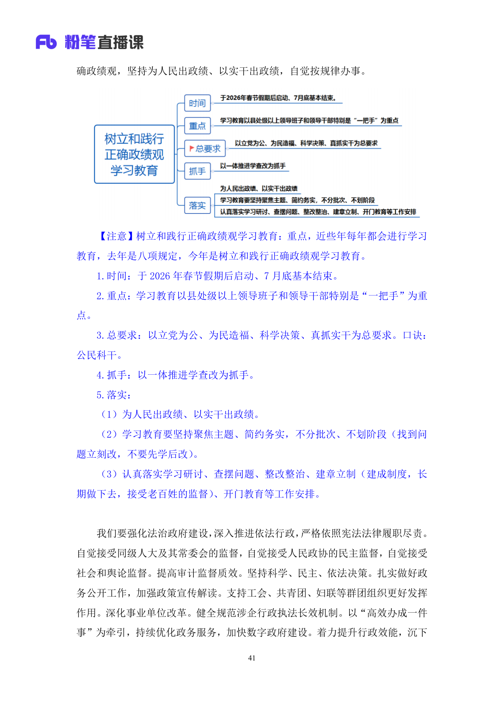
42
心来抓落实，认认真真解决问题，提高对党中央决策部署一贯到底的执行力穿透
力。各级政府要树牢大局观，准确把握在全国发展大局中的定位，善于把国家战
略、市场需求和地区优势结合起来，因地制宜探索高质量发展新模式。完善差异
化考核评价体系，持续深化整治形式主义为基层减负，让广大干部心无旁骛抓落
实、办实事。营造良好政治环境、人才环境、营商环境、舆论环境，在全社会凝
聚推动高质量发展的强大合力。
我们要以铸牢中华民族共同体意识为主线，积极促进各民族广泛交往交流交
融，加快民族地区现代化建设步伐，推进中华民族共同体建设。坚持党的宗教工
作基本方针，坚持我国宗教中国化方向，加强宗教事务治理法治化。全面贯彻党
的侨务政策，维护海外侨胞和归侨侨眷合法权益，更好凝聚侨心侨力。
过去一年，国防和军队现代化建设取得新的成就。新的一年，我们要深入贯
彻习近平强军思想，贯彻新时代军事战略方针，坚持党对人民军队的绝对领导，
全面深入贯彻军委主席负责制，以政治建军为引领，持续深化政治整训，接续打
好实现建军一百年奋斗目标攻坚战。扎实推进练兵备战，加快先进战斗力建设，
提高捍卫国家主权、安全、发展利益的战略能力。抓好军队建设“十五五”规划
编制，实施国防发展重大工程，实施军事理论现代化推进工程。协力推进跨军地
改革，优化国防科技工业体系和布局，巩固提高一体化国家战略体系和能力。加
快国防动员能力建设，深化全民国防教育。各级政府要大力支持国防和军队建设，
深入开展“双拥”工作，巩固军政军民团结。
【解析】
1.法治政府是主体，法治国家是目标，法治社会是基础。
2.我们要以铸牢中华民族共同体意识为主线。民族关系之间要像石榴籽一样
紧紧抱在一起。
3.党指挥枪，坚持党对人民军队的绝对领导，全面深入贯彻军委主席负责制，
以政治建军为引领，
我们要坚定不移贯彻“一国两制”、“港人治港”、“澳人治澳”、高度自治方
针，落实“爱国者治港”、“爱国者治澳”原则，提升港澳依法治理效能，促进港
澳经济社会发展。支持港澳更好融入和服务国家发展大局，发挥港澳背靠祖国、
43
联通世界独特优势和重要作用，促进香港、澳门长期繁荣稳定。
我们要深入贯彻新时代党解决台湾问题的总体方略，坚持一个中国原则和
“九二共识”，坚决打击“台独”分裂势力，反对外部势力干涉，推动两岸关系
和平发展、推进祖国统一大业。深化两岸交流合作和融合发展，共同传承弘扬中
华文化，落实台湾同胞享受同等待遇政策，增进两岸同胞福祉，共同开创民族复
兴伟业。
我们要坚持独立自主的和平外交政策，坚持走和平发展道路，拓展全球伙伴
关系网络，坚决反对霸权主义和强权政治，维护国际公平正义。中国愿同国际社
会一道，倡导平等有序的世界多极化、普惠包容的经济全球化，推动落实全球发
展倡议、全球安全倡议、全球文明倡议、全球治理倡议，积极参与全球治理体系
改革和建设，推动国际秩序朝着更加公正合理的方向发展，携手构建人类命运共
同体，共创世界和平发展美好未来。
蓝图已经绘就，奋进正当其时。我们要更加紧密地团结在以习近平同志为核
心的党中央周围，高举中国特色社会主义伟大旗帜，以习近平新时代中国特色社
会主义思想为指导，万众一心、砥砺前行，奋力实现全年经济社会发展目标任务，
确保“十五五”良好开局，为以中国式现代化全面推进强国建设、民族复兴伟业
不懈奋斗！
【解析】
1.坚持一个中国原则和“九二共识”，推动祖国大业和平，台湾光复纪念日
是10 月25 日。
2.推动落实全球发展倡议、全球安全倡议、全球文明倡议、全球治理倡议。
全球治理倡议是中国国家主席习近平于2025 年9 月1 日在“上海合作组织+”会
议上提出的倡议，倡议共五条，分别为奉行主权平等、遵守国际法治、践行多边
主义、倡导以人为本、注重行动导向。
【题目练习】
1.（单选）《政府工作报告》提出了2026 年我国经济社会发展总体要求和政
策取向，下列相关说法不准确的是（ ）。
A.增强政策前瞻性针对性协同性
44
B.继续实施更加积极的财政政策
C.继续实施更加稳健的货币政策
D.强化改革举措与宏观政策协同
【解析】1.选非题。C 项：适度宽松，降准降息，当选。【选C】
2.（单选）2026 年《政府工作报告》提出了今年政府的重点工作任务，以下
属于2026 年政府重点工作任务的有几项？
①提升宏观经济治理效能
②着力建设强大国内市场
③加快高水平科技自立自强
④扎实推进乡村全面振兴
⑤更大力度保障和改善民生
A.2 项
B.3 项
C.4 项
D.5 项
【解析】2.【选C】
3.（单选）2026 年国务院政府工作报告指出，要着力建设强大国内市场，更
好发挥我国超大规模市场优势。下列有关表述不正确的是：
A.激发居民消费内生动力和促消费政策并举，推动消费持续增长
B.首次提出实施城乡居民增收计划，促进低收入群体增收、增加居民转移性
收入
C.聚焦重点领域，增强市场主导的有效投资增长动力，提高民生类政府投资
比重
D.引导民间投资向高技术、现代服务业等新赛道拓展，有效激发民间投资活
力
【解析】3.选非题。B 项：财产性收入，当选。【选B】
4.（单选）2026 年政府工作报告提出，加快高水平科技自立自强，为高质量
发展提供科技支撑。下列相关举措不恰当的是：
A.加强原始创新和关键核心技术攻关
B.推动科技创新和产业创新深度融合
45
C.一体推进教育科技人才发展
D.首次提出“打造智能经济新形态”
【解析】4.选非题。D 项：本题考查结构，表述正确，不符合题干，放在第
一个领域要扩大内需，打造国内市场，当选。【选D】
5.2026 年政府工作报告首次提出“打造智能经济新形态”，关于“智能经济
新形态”，下列说法正确的有几项？（ ）
①智能经济是数字经济发展的高端形态，是新质生产力的重要体现
②机器自主是智能经济的显著特征，要推动形成机器自主的智能生产方式
③智能经济以人工智能技术为核心驱动力，驱动科技创新与产业创新深度融
合
④智能经济以智能技术产业化和传统产业智能化双向赋能为特征
⑤完善智能经济治理，在确保安全的前提下实现规范与创新发展的动态平衡
A.2 项
B.3 项
C.4 项
D.5 项
【解析】5.②人机协同，强强联合，排除。【选C】
6.（单选）如何解决“供强需弱”的问题，2026 年《政府工作报告》提出，
要通过激发居民消费内生动力和促消费政策并举来提振消费，下列相关措施说法
不正确的是（ ）。
A.做好“加法”，在供给侧通过增加收入来扩大需求、在需求侧增加优质产
品和优质服务供给
B.做好“减法”，通过加大医疗、养老、生育养育等方面的保障力度，减轻
居民的“后顾之忧”
C.做好“乘法”，通过财政金融协同联动，发挥乘数效应，更好带动居民消
费
D.做好“除法”，破除壁垒、清除障碍，进一步清理各类消费限制性措施，
畅通消费循环
【解析】6.选非题。A 项：应是需求侧，供给侧要提供优质的产品和服务供
46
给，当选。【选A】
7.（单选）2026 年政府工作报告提出，不断增强区域发展协调性，支持（ ）
打造世界级城市群。
①京津冀
②长三角
③粤港澳大湾区
④长江中游城市群
⑤成渝地区双城经济圈
A.②③
B.①②③
C.①②③④
D.①②③④⑤
【解析】7.【选B】
8.（单选）2026 年3 月5 日，十四届全国人大四次会议在人民大会堂开幕，
国务院总理李强作政府工作报告，下列相关表述符合报告要求的有几项？（ ）
①通过改善总供求关系，推动价格总水平由正转负、消费价格合理温和回落
②持续用力优化财政支出结构，更加注重支持提振消费、投资于人、保障民
生等方面
③激发居民消费内生动力和促消费政策并举，推动消费持续增长
④持续巩固拓展脱贫攻坚成果，把常态化帮扶纳入乡村振兴战略统筹实施
A.1 项
B.2 项
C.3 项
D.4 项
【解析】8.①价格回升，排除。【选C】
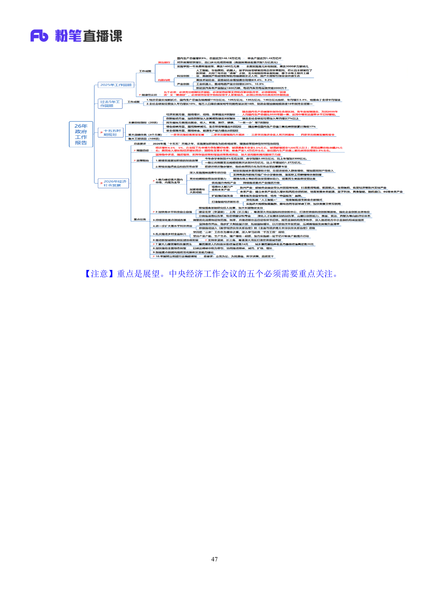
48
遇见不一样的自己
Beyourbetterself
2026江苏政府工作报告解读
2026 江苏政府工作报告
（笔记）
主讲教师：朱迪
授课时间：2026.03.10
粉笔事考·官方微信
1
2026 江苏政府工作报告（笔记）
【答案汇总】
1-3：BDB
【注意】本节课解读2026 江苏政府工作报告：
1.参加江苏公务员考试、事业单位考试的同学都可以听本节课。
2.江苏政府工作报告的考频不高，优先听全国政府工作报告，知道江苏政府
工作报告讲的内容即可。
目录
一、“十四五”时期和2025 年工作回顾
二、“十五五”时期工作总体要求和目标任务
三、2026 年重点工作
【解析】政府工作报告的思路：
1.“忆往昔峥嵘岁月”，刚结束了“十四五”时期，今年是“十五五”时期
的开局之年，回顾“十四五”时期工作取得的成就和2025 年的工作成绩。
2.展望未来，部署未来五年“十五五”时期工作的总体要求和目标任务。
3.2026 年的工作安排。
1.“十四五”时期和2025 年工作回顾
【注意】“忆往昔峥嵘岁月”，先回顾“十四五”时期，再回顾2025 年。
（一）“十四五”时期工作回顾
“十四五”时期是江苏发展历程中极不平凡的五年。让全省人民备受鼓舞的
是，习近平总书记两次亲临江苏考察、三次参加全国人大江苏代表团审议，赋予
我们“四个走在前”“四个新”“4+1”“四个着力点”等重大任务，为江苏现代化
建设指明了前进方向。全省上下坚持以习近平新时代中国特色社会主义思想为指
导，认真学习贯彻习近平总书记重要讲话、重要指示批示精神，全面贯彻党的二
2
十大和二十届历次全会精神，深入落实党中央、国务院决策部署，在省委领导下，
在省人大及其常委会、省政协监督支持下，牢记嘱托、感恩奋进，有效应对世纪
疫情和重大风险挑战，坚决扛好经济大省挑大梁责任，推动高质量发展继续走在
前列，胜利完成“十四五”主要目标任务，“经济强”的基础更加巩固、“百姓富”
的成果更加丰硕、“环境美”的底色更加厚重、“社会文明程度高”的标识更加鲜
明，中国式现代化江苏新实践迈出新的坚实步伐。
【解析】“十四五”时期的工作回顾：“十四五”时期是江苏发展历程中极不
平凡的五年，在这五年间习近平总书记两次亲临江苏考察，在两会期间，三次参
加江苏代表团的审议，提出了重大指示，赋予了重大任务。
【名词解释】
“四个走在前”：在科技自立自强上走在前，在构建新发展格局上走在前，
在推进农业现代化上走在前，在强化基层治理和民生保障上走在前。
“四个新”：在科技创新上取得新突破，在强链补链延链上展现新作为，在
建设中华民族现代文明上探索新经验，在推进社会治理现代化上实现新提升。
“4+1”：“4”是牢牢把握高质量发展这个首要任务，因地制宜加快发展新质
生产力；全面深化改革开放，持续增强发展的内生动力和活力；积极促进区域协
调发展，不断提升发展的辐射带动力；营造干事创业的良好氛围，着力形成推动
发展的强大合力。“1”是抓好安全生产。
“四个着力点”：在推动科技创新和产业创新融合上打头阵，在推进深层次
改革和高水平开放上勇争先，在落实国家重大发展战略上走在前，在促进全体人
民共同富裕上作示范。
【解析】名词解释：因为是习近平总书记做出的指示、部署，因此可考性比
较强，事业单位统考曾经考过“四个着力点”。
1.“四个走在前”：2023 年3 月，习近平总书记参加江苏代表团审议时提出
了“四个走在前”的重大任务，江苏是经济大省，在科技自立自强上走在前，在
构建新发展格局上走在前，在推进农业现代化上走在前，在强化基层治理和民生
保障上走在前。
2.“四个新”：2023 年7 月，习近平总书记在江苏考察，赋予了“四个新”
3
的重大任务，在科技创新上取得新突破，在强链补链延链（产业链）上展现新作
为，在建设中华民族现代文明上探索新经验，在推进社会治理现代化上实现新提
升。
3.“4+1”：2024 年3 月，习近平总书记参加江苏代表团审议提出“4+1”。“4”
是四点要求，把握高质量发展这个首要任务；全面深化改革开放；促进区域协调
发展；营造干事创业的良好氛围。“1”是抓好安全生产。
4.“四个着力点”：2025 年3 月，两会期间习近平总书记参加江苏代表团审
议时强调江苏是经济大省，江苏要把握好“挑大梁”的“四个着力点”，提出在
推动科技创新和产业创新融合上打头阵，在推进深层次改革和高水平开放上勇争
先，在落实国家重大发展战略上走在前，在促进全体人民共同富裕上作示范。
1.更好统筹质的有效提升和量的合理增长，经济实力显著增强。地区生产总
值连续迈上4 个万亿元台阶、达14.2 万亿元、年均增长5.7%，人均地区生产总
值达16.7 万元，一般公共预算收入达万亿级规模，新增减税降费超万亿元。新
增本外币贷款连续4 年保持全国首位，科创板、北交所上市公司数量居全国第一。
2.坚持创新驱动发展，重点产业持续做大做优做强。因地制宜加快发展新质
生产力，打造具有全球影响力的产业科技创新中心成势见效。区域创新能力升至
全国第二，全社会研发投入强度达3.38%左右，万人高价值发明专利拥有量达
34.2 件。承担国家重点产业攻关项目347 个，“羲和”逐日、“奋斗者”号极限
深潜、“沧渊号”掘进“万里长江第一隧”，跑出令人瞩目的创新“加速度”。国
家级专精特新“小巨人”企业增至3022 家、科技型中小企业增至9.4 万家，均
居全国第一。
【解析】“十四五”取得的成就：重点识记数字类的成就，尤其是重要的数
字；在全国数一数二名列前茅的也容易考查；还可能考查体现江苏特色的内容。
1.经济实力：
（1）地区生产总值连续迈上4 个万亿元的台阶，“十四五”时期地区生产总
值从2020 年10.5 万亿元攀升到了2025 年14.2 万亿元，在这五年期间跨过了4
个万亿元的台阶，联系“中国有14 亿人”记忆，年均增长是5.7%。
（2）新增本外币贷款连续4 年保持全国首位，银行给企业或个人提供的本
4
币或外币的贷款服务，规模保持首位说明经济活动活跃、金融实力强；在北交所
上市的公司数量也是第一，说明科技创新活力比较强。
2.创新驱动发展：
（1）区域创新能力是全国第二，江苏“十五五”规划中也有提及，区域创
新能力是指一个地区把知识转化成新产品、新工艺、新服务的能力，广东位居第
一。
（2）承担国家重点产业攻关项目：
①“羲和”：我国首颗太阳探测科学技术试验卫星，在2021 年发射成功，由
南京大学自主研发。
②“奋斗者”号：诞生于无锡，我国自主研制的万米级载人潜水器，2020
年在马里亚纳海沟成功下潜了10909 米，刷新中国载人深潜的纪录。
③“沧渊号”：中国自主研制的最大直径盾构机，2025 年江苏常熟制造，挖
掘了“万里长江第一隧”海太长江隧道。
④专精特新“小巨人”企业的数量位居全国第一，它指的是中小微企业，
“专”
是专业性，“精”是精细化，“特”是特色化，“新”是新颖。专精特新相当于全
班的前十名，专精特新“小巨人”相当于前三名，比专精特新企业更厉害；科技
型中小企业数量位居全国第一，说明科技创新活力特别强。
3.全面深化改革扩大开放，发展动能和竞争力更强。积极服务建设全国统一
大市场，16 个案例入选全国“高效办成一件事”典型，高质量完成国有企业改
革深化提升行动，苏豪集团重组整合被评为全国国企改革典型案例，财政金融、
自然资源、生态文明等重点领域改革进一步推进。建设具有世界聚合力的双向开
放枢纽取得积极进展，进出口规模稳居全国第二，实际使用外资连续8 年全国第
一，自贸试验区发展提质增效，获批全国首个生物医药全产业链开放创新发展试
点，苏州工业园区在国家级经开区综合考核评价中稳居第一。
【解析】改革开放：
1.对内改革：国有企业改革，了解即可。
2.开放：
（1）进出口规模稳居全国第二，实际使用外资连续八年全国第一，境外投
5
资者、企业在本地投了多少钱，能够反映出外资对一个地区市场的信心和真实的
投资力度，江苏使用外资连续八年第一，说明外资持续看好江苏，真金白银落地
投产，吸引外资的能力非常强。
（2）去年8 月江苏成为全国首个提出生物医药全产业链开放创新发展的省
份，也是全国获批生物医药领域试点的省份。
（3）苏州工业园区在国家级经开区综合考核评价中稳居第一，这些属于江
苏特色成就。
4.在发展中增进民生福祉，全体人民共同富裕扎实推进。人均可支配收入年
均增长6%，城镇新增就业超690 万人、稳定在全国1/10 以上。基本养老保险覆
盖更广保障力度更大，基本医保参保率稳定在95%以上，城乡低保平均保障标准
增长19.2%。“一老一小”服务保障不断加强，二级及以上老年医院数量新增76
家，千人口托位数达4.7 个。高水平医院加力建设，人均预期寿命超过80 岁。
学前教育普及普惠、义务教育优质均衡发展县数量均居全国前列，16 所高校、
48 个学科入选“双一流”建设名单。
【解析】民生福祉：
1.人均可支配收入增长了6%：人均可支配收入是家庭收入扣除缴纳的税和
社保后，家庭用于消费和存在银行的钱，真正由自己支配的，再除以家庭人口数
量后平均的收入。
2.基本医保参保率稳定在95%以上。
3.人均预期寿命超过80 岁，全国居民2025 年人均预期寿命是79.25 岁，说
明医疗等各方面做得比较好。
4.江苏是教育大省，学前教育普及普惠、义务教育优质均衡发展县数量均居
全国前列，说明教育资源分布较为均衡。
5.加强生态环境保护，美丽江苏生动图景日益展现。深入打好污染防治攻坚
战，在国家考核中获“六连优”。PM2.5 年均浓度较“十三五”末改善16.5%，连
续5 年达国家二级标准。长江干流江苏段水质连续8 年稳定在Ⅱ类，县以上城市
建成区黑臭水体基本消除。强化土壤污染源头治理，地下水环境质量保持稳定。
6
4 个地区和园区入选国家碳达峰试点，单位地区生产总值能耗累计下降超14%，
可再生能源发电装机规模超过煤电。
6.积极推动高效能治理，社会文明程度不断提升。文化事业和文化产业蓬勃
发展，全国文明城市、国家历史文化名城分别增至37 座、14 座，优质文化资源
直达基层系列活动覆盖城乡，无锡创成全国首个“世界音乐之都”，扬州中国大
运河博物馆成为“闪亮名片”，入选联合国教科文组织非遗项目、5A 级旅游景区
数量保持全国首位。
【解析】
1.生态保护：蓝天、碧水、净土保卫战，空气PM2.5 年均浓度有所改善，连
续五年达到国家二级标准；长江干流县以上城市建成区黑臭水体基本消除，强化
土壤污染源头治理。可再生能源发电装机规模超过煤电，现在发电主要是绿电，
用可再生能源发电，江苏主要靠海上风电和光伏发电。
2.无锡创成全国首个“世界音乐之都”（去年10 月联合国教科文组织正式宣
布），也是中国首个获此称号的城市，无锡的鸿山遗址出土了400 多件两千多年
前的古代陶瓷制乐器，无论是种类还是数量都居世界第一，而且在近现代，无锡
诞生了很多音乐大师，比如阿炳、刘天华，中国十大二胡名曲中八首是由无锡人
创作的，最有名的是阿炳的《二泉映月》。
3.入选联合国教科文组织非遗项目、5A 级旅游景区数量保持全国首位。
（二）2025 年工作回顾
刚刚过去的2025 年，在以习近平同志为核心的党中央坚强领导下，全省上
下着力稳就业、稳企业、稳市场、稳预期，经济运行总体平稳、稳中有进，地区
生产总值增长5.3%、增量保持全国第一，规上工业增加值、规上服务业营收分
别增长6.5%和7%，社会消费品零售总额达4.64 万亿元，进出口总额5.95 万亿
元、增长6%。特别是面对多年少有的外部冲击挑战，全省经济顶压前行、向新
向优发展。
【解析】2025 年成就：经济运行整体平稳，稳中有进，地区生产总值增长
了5.3%，增量保持全国第一。去年面对不少外部冲击，经济整体上顶住了压力
前行，向新向优发展。
7
1.“向新”的动能持续增强。（1）科技创新取得新进步。全国高校区域技术
转移转化中心投入运行，中国科学院工业人工智能研究所正式成立，全球首个
6G 外场试验网成功搭建，“未来”号试验船正式交付。（2）产业发展彰显新成效。
举办首届人工智能OPC 大会，国家人工智能应用中试基地落地苏州。（3）新兴消
费迸发新活力。引进首店1809 家，线上网络消费、直播电商交易额实现两位数
增长。文旅、赛事活动推动服务消费提质扩容，“苏超”破圈成为顶流，“跟着苏
超游江苏”等品牌活动彰显引流效应，接待游客人次、游客总花费分别增长10.4%、
10.2%。（4）重点领域改革实现新突破。推动进一步全面深化改革各项任务落地，
苏南重点城市要素市场化配置综合改革试点获国务院批复，开展市场准入壁垒清
理整治等专项行动。
（5）绿色低碳转型迈出新步伐。可再生能源发电量增长28.3%。
锂离子动力电池、新能源汽车、风力发电机组等绿色产品产量均增长20%以上。
【解析】“向新”动能持续增强：“五个新”。
1.科技创新：全球首个6G 外场试验网成功搭建，在紫金山实验室搭建了全
球首个6G 外场试验网，验证4G/5G 链路具备6G 传输能力的可行性。第六代移动
通信属于未来产业，需要提前布局。
2.产业发展取得新成效：国家人工智能应用中试基地落地苏州，“中试”是
中间试验，以中间试验为功能的人工智能试验孵化平台，上接科研攻关（相当于
顶层设计），下接工业产品生产（落地生产），任务是把行业的应用转化为产品方
案，迅速落地，推向市场。
3.新兴消费：首发经济，首店；网络消费，直播电商；文旅赛事活动，“跟
着苏超游江苏”品牌活动直接带动旅游的增长。
4.重点领域改革实现新突破：苏南重点城市要素市场化配置综合改革试点获
国务院批复，南京、无锡、常州、苏州、镇江被纳入试点范围。
5.绿色低碳转型：可再生能源的发电量、绿色产品的产量有所增长。
2.“向优”的质效稳步提升。（1）“三个口袋”协同增长。规上工业企业利
润增长6%，191 家工业企业营业收入超百亿元；一般公共预算收入增长2.1%，
税占比达77.4%；城乡居民人均可支配收入分别达6.9 万元、3.4 万元，增长4.2%、
8
5.3%。（2）需求结构更趋优化。消费对经济增长贡献率提升至55%左右。省重大
项目完成投资达7290 亿元，民间投资占比稳定在60%以上。（3）经营主体稳中
培优。总量达1461.4 万户，新登记147 万户、其中企业57.3 万家。高新技术企
业超6.1 万家，入选中国潜在独角兽企业195 家、居全国第一，新增境内上市公
司29 家、占全国增量的1/4。
（4）生态环境更加优美。空气优良天数比率达83.8%，
PM2.5 浓度31.3微克/立方米，地表水国考断面达到或优于Ⅲ类水体比例达94.8%，
造林绿化19 万亩，新增城市公园绿地超500 公顷，新增4 个国家生态文明建设
示范区、4 个“两山”实践创新基地。（5）民生优先有效落实。城镇新增就业141
万人，城镇调查失业率4.6%。普通高中、本科和高水平大学录取人数再创历史
新高。育儿补贴惠及124 万名婴幼儿。通过房票去化商品住宅超3.5 万套，在建
高品质住宅项目达383 个。
【解析】“向优”：
1.“三个口袋”协同增长：企业利润、国家财政收入（地方政府一年的收入，
自己支配，用于发工资、搞建设、保民生的可支配收入）、城乡居民收入同时增
长。
2.需求结构更趋优化：主要是内需，包括消费和投资。其中消费对经济增长
的贡献率超过一半，达到55%左右，说明消费对经济增长起的是基础性作用，提
升消费比较有效果；投资包括政府投资、民间投资（占比60%以上，说明以民间
投资为主导），政府投资可以带动社会投资。
3.经营主体：企业总量达到1461.4 万户，入选中国潜在独角兽企业位居全
国第一。
4.生态环境：空气、水、绿化面积等达到了一定的程度，新增四个国家生态
文明建设示范区（南京玄武区、苏州市相城区、南通市海门区、盐城市阜宁县），
四个“两山”实践创新基地（南京、常州、盐城、长三角一体化示范区）。截至
目前，江苏省共建成国家级生态文明建设示范区41 个，“两山”实践创新基地
14 个，位居全国前列。
5.民生：
（1）城镇新增就业141 万人。
（2）教育：高中、本科录取人数历史新高。
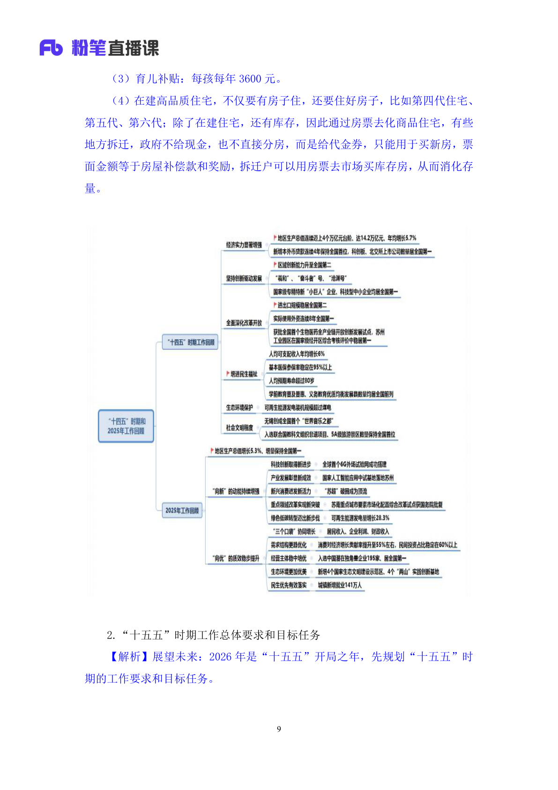
10
（一）“十五五”时期全省经济社会发展的总体要求
坚持以习近平新时代中国特色社会主义思想为指导，全面贯彻党的二十大和
二十届历次全会精神，深入学习贯彻习近平总书记对江苏工作重要讲话精神，完
整准确全面贯彻新发展理念，服务构建新发展格局，坚持稳中求进工作总基调，
坚持以经济建设为中心，以推动高质量发展为主题，以改革创新为根本动力，以
满足人民日益增长的美好生活需要为根本目的，以全面从严治党为根本保障，推
动经济实现质的有效提升和量的合理增长，推动人的全面发展、全体人民共同富
裕迈出坚实步伐，确保基本实现社会主义现代化取得决定性进展，奋力谱写“强
富美高”新江苏现代化建设新篇章。
【解析】总体要求（指导思想）：包括“五个以”“两个推动”“一个确保”
“‘强富美高’新江苏”。
1.“五个以”：
（1）以经济建设为中心。判断：以政治建设、人民为中心（错误），原因：
“十五五”规划关乎全省经济和社会发展，经济基础决定上层建筑，因此以经济
建设为中心。
（2）以推动高质量发展为主题，不只是看重增长速度快不快，更加注重的
是质量。
（3）以改革创新为根本动力。
（4）以满足人民日益增长的美好生活需要为目的。
（5）根本保障是全面从严治党，保持党的先进性和纯洁性。
2.“两个推动”：“十五五”规划涉及经济和社会两个维度。
（1）经济实现质的有效提升，量的合理增长。判断：量的有效提升，质的
合理增长（错误），原因：现在追求的是高质量发展，要提质增效，量合理增长
即可。
（2）社会层面：希望人全面发展，全体人民共同富裕，迈出坚实步伐。
3.确保基本实现社会主义现代化取得决定性进展，因为“十五五”时期是承
上启下的作用，只有这个时期全面发力，“十六五”才能做得更好，如果现在不
全面发展，会影响2035 年基本实现现代化。
4.谱写“强（经济强）富（百姓富）美（环境美）高（社会文明程度高）”
11
新江苏现代化建设新篇章。
（二）“十五五”时期经济社会发展的主要目标
在高质量发展上继续走在前列，在推动科技创新和产业创新融合上打头阵，
在推进深层次改革和高水平开放上勇争先，在落实国家重大发展战略上走在前，
在促进全体人民共同富裕上作示范，在精神文明建设上展现新气象，在美丽江苏
建设上取得新的重大进展，在推进省域治理体系和治理能力现代化上实现新提升。
地区生产总值年均增长5%左右，全社会研发经费投入年均增长7%左右，制
造业增加值占比保持基本稳定，居民收入增长与经济增长同步，碳排放强度、能
源、环境等指标完成国家下达任务，社会文明程度明显提升，平安江苏、法治江
苏建设高水平推进。在此基础上再奋斗五年，到2035 年“强富美高”新江苏现
代化建设取得新的重大进展，更好展现基本实现社会主义现代化的现实模样。
【解析】主要目标：
1.高质量发展上继续走在前列：2023 年两会期间，习近平总书记参加江苏
代表团审议时要求江苏在高质量发展上继续走在前列。
2.“打头阵、勇争先、走在前、作示范”：经济大省“挑大梁”要把握好的
“四个着力点”。
3.聚焦社会层面：社会精神文明建设、生态文明建设以及治理。
4.量化指标：“十五五”时期地区生产总值年均增长5%左右，因为“十四五”
时期年均增长是5.7%；制造业增加值占比保持基本稳定，因为还要布局新兴产
业、未来产业；居民收入增长和经济增长要同步，地区生产总值增长，百姓的口
袋不能空空如也，要同步增长。
5.到2035 年“强富美高”新江苏取得新的重大进展，展现基本社会主义现
代化的现实模样。
（三）“十五五”时期经济社会发展的重点任务
1.因地制宜加快发展新质生产力。抓住共建上海（长三角）国际科技创新中
心重大机遇，深入开展原创性引领性科技攻关，加快培育战略科技力量，推动科
技创新和产业创新深度融合，推进全域数智化，抓好人工智能产业发展和赋能千
12
行百业，统筹推进教育科技人才一体发展，全面打造具有全球影响力的产业科技
创新中心。统筹抓好优质企业增资扩产、做强特色优势产业、补短板技术攻关、
培育未来产业，建设一批世界级先进制造业集群，争创国家新型工业化示范区，
促进服务业优质高效发展，实施品牌强省工程，全面打造具有国际竞争力的先进
制造业基地。
【解析】五个方面的重点任务：以此为突破，牵引各项工作取得新进展。
1.抓住共建上海（长三角）国际科技创新中心重大机遇：中央经济工作会议
中首次提出建设三大国际科技创新中心（北上广，京津冀以北京为代表；长三角
以上海为代表；粤港澳大湾区），和江苏有关的是上海，抓住机遇，进行科技攻
关。
2.做好产业升级有四步组合拳：优质企业增资扩产（给现有的好企业继续投
资，扩大规模，提升档次）；做强特色优势产业（比如把新能源、集成电路、生
物医药、高端装备做到全国、全球顶尖）、补短板技术攻关（把关键技术掌握在
自己手里，解决“卡脖子”的问题）、培育未来产业（量子科技、6G、脑机接口，
提前布局，抢占先机），注意搭配。
2.统筹推进深层次改革和高水平开放。坚持扩大内需这一战略基点，积极服
务和融入全国统一大市场建设，助力畅通国内国际双循环。深化要素市场化配置
改革，推进财税金融等重点领域改革，加快打造市场化法治化国际化一流营商环
境。以“一带一路”交汇点建设为统揽，稳步扩大制度型开放，推动对外贸易创
新发展，拓展双向投资合作空间，提升对外开放平台创新引领发展能级，全面建
设具有世界聚合力的双向开放枢纽。
3.大力促进区域协调和城乡融合发展。联动推进长三角一体化发展和长江经
济带发展，加强与京津冀协同发展、粤港澳大湾区建设等战略对接。深入推进“1+3”
重点功能区建设。推动以人为本的新型城镇化，建设创新、宜居、美丽、韧性、
文明、智慧的现代化人民城市。坚持农业农村优先发展，扎实推进乡村全面振兴，
持续巩固拓展脱贫攻坚成果，推动农村基本具备现代生活条件。
【解析】
1.改革开放：
13
（1）改革：坚持扩大内需的战略基点，因为国外市场的变动比较大，容易
受到影响和冲击，最好依靠国内市场，扩大内需，通过消费、投资实现经济循环。
（2）开放：“市法国一流”，营造市场化（不能是计划经济）、法治化（保证
市场竞争公平公正，用法律保驾护航）、国际化（与国际接轨）；以“一带一路”
交汇点建设为统揽，江苏是“一带一路”交汇点，既连接陆上，也连接海上，因
此以交汇点建设为统揽，扩大制度型开放，规则、规制、标准主动对接国际高标
准规则。
2.区域协调和城乡融合发展：
（1）推进长三角一体化发展和长江经济带发展，因为江苏属于长三角一体
化和长江经济带，因此要联动推进。
（2）向北和京津冀对接，向南和粤港澳大湾区对接，江苏不属于这个范围，
但可以对接。
（3）城镇化建设，城乡融合，要以人为本、以人为核心，因为城镇化建设
不是看建了多少高楼洋房，而是看人的幸福感、收获感有没有提升，人能不能真
正融入城市，解决好其就业、养老、医疗等问题。
（4）目标（在中央城市工作会议中提出的）：建设创新（让城市有活力，城
市建设不能千城一面，要有各自的特色）、宜居（让城市有温度，舒适、便捷）、
美丽（让城市“有颜值”，既要蓝天碧水，多建绿地，也要避免乱拆乱建，保留
城市特色）、韧性（让城市有抗风险能力，比如能够应对暴雨、地震等灾害，保
障居民生活，能够快速应对冲击，快速恢复，像弹簧一样有弹性、韧性）、文明
（让城市有内涵，弘扬传统文化，倡导文明习惯，丰富居民的精神世界）、智慧
（让城市有高效的“大脑”，用科技提升治理效率，线上办理政务，摄像头智能
监测交通拥堵等），口诀是“心仪美人明智”。
4.加快推动经济社会发展全面绿色转型。建设美丽中国先行区，打好蓝天、
碧水、净土保卫战，深化长江大保护和新一轮太湖综合治理，统筹推进重要生态
系统保护和修复。深入落实碳排放双控制度，服务融入全国碳排放权交易市场建
设，积极稳妥推进碳达峰。建设清洁低碳安全高效的新型能源体系。
5.不断提高共同富裕水平。实施就业优先战略，深化以“扩中”“提低”为
14
重点的收入分配制度改革，多渠道增加居民收入。加强基础性、普惠性、兜底性
民生建设，提升基本公共服务均衡性、可及性。健全覆盖全人群、全生命周期的
人口服务体系，构建全龄友好型社会，推动房地产高质量发展，增强人口吸纳能
力。繁荣发展文化事业和文化产业。加强重点领域安全能力建设，提升社会治理
现代化水平，确保社会充满活力又和谐有序。
【解析】
1.绿色转型：生态方面。
（1）打好蓝天、碧水、净土保卫战，对于江苏而言，“一江一湖”比较重要，
深化长江大保护和太湖综合治理。
（2）落实碳排放双控制度，控的是总量和强度，以前说的是能源消耗双控，
现在改为碳排放双控。不能把“强度”改为“浓度”，强度指贡献1GDP 排放多少
二氧化碳，类似于单价。
（3）建设清洁（以风、光、水、氢等清洁能源为主）低碳（少排放二氧化
碳）安全（保障能源不断供，不被“卡脖子”，能够自己生产、稳住供应）高效
（不浪费，转化率高，损耗少）的新型能源体系。
2.共同富裕：民生问题。
（1）就业优先，收入分配，深化以“扩中”（扩大中等收入群体，形成比较
稳定的收入分配格局，即橄榄型，收入特别高的和特别低的都不是很多，大多数
是中等收入群体）、“提低”（提高低收入群体的收入）为重点的收入分配制度改
革，注意没有“调高”（调节高收入者收入），“扩中”“提低”是为了让有钱人越
来越多，正常“调高”收入即可。
（2）加强民生建设，提升基本公共服务，做到均衡性（与平均主义不一样，
平均主义类似于“吃大锅饭”，均衡指的是公共服务是均衡的）和可及性（争取
多少公里有一个公园，不断完善基础设施）。
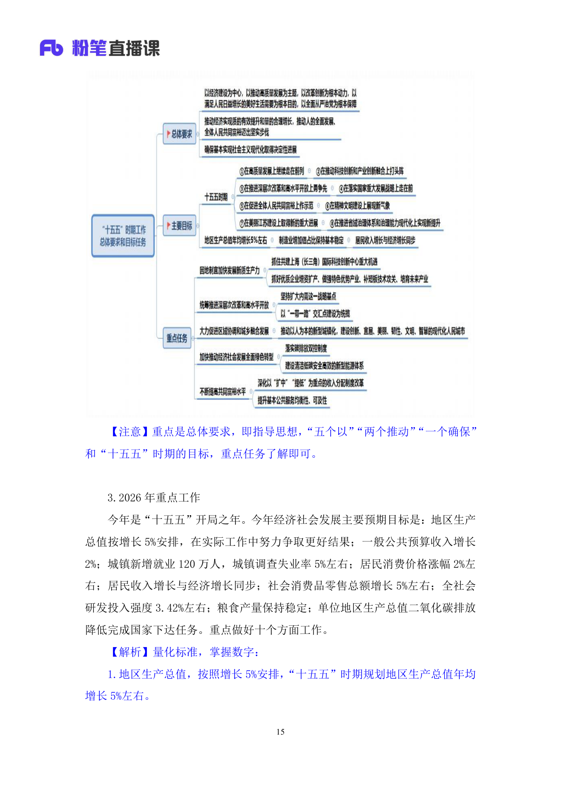
16
2.城镇新增就业是120 万人，失业率是5%左右。
3.居民消费价格涨幅2%左右，CPI 可以看出居民在消费环节购买商品、劳务
时的价格变动，用于观察通货膨胀的水平，当CPI 涨幅大于3%，有通货膨胀的
风险。
（一）不断巩固拓展经济稳中向好势头。持续拓展内需增长新空间，增进国
际经贸合作，为充分挖掘经济潜能提供有力支撑。1.更大力度提振消费。优化实
施“两新”政策，深入开展提振消费专项行动，提升“苏新消费”活动品牌带动
力，推动“苏品苏货”上平台、上商超、上连锁，着力稳住汽车、家电数码等商
品消费。培育特色消费，打造首发首店、首秀首展等新场景，支持发展演艺、夜
间消费等新业态，发展即时零售等新模式，开展直播电商发展三年行动。实施服
务消费提质惠民行动，以“苏超”促进文旅体商融合发展，激发“文化+”“旅游
+”“体育+”等消费活力。2.着力扩大有效投资。推进“两重”项目建设，抓好
550 个省重大项目，力争全年交通、水利、能源领域投资额分别达2400 亿元、
450 亿元、1700 亿元。全面落实促进民间投资政策措施，完善民企参与重大项目
建设长效机制，引导民间投资向高技术、现代服务业、新型基础设施等新赛道拓
展。3.促进外贸稳中提质。抓好外贸“五新”，加快引育新主体，加强与大型贸
易商、头部平台对接，引入多种类型贸易平台及专业服务机构，大力培育本土外
贸企业；着力拓展新市场，深入开展“江苏优品行全球”行动，稳住传统市场、
开拓新兴市场；积极发展新模式，实施新一轮跨境电商高质量发展三年行动，推
动“产业带+跨境电商+海外仓”模式扩容升级，支持“市采通”做大做强；更好
畅通新渠道，强化与跨国公司、供应链平台及产业链上下游对接，争取更多总部
订单，拓展中间品贸易；注重丰富新产品，支持更多高新技术产品、绿色低碳产
品出口，积极开展“保税+”业务。
【解析】经济稳中向好：拓展内需（消费、投资）、国际经贸合作。
1.消费：
（1）实施“两新”政策，消费品以旧换新（提供补贴）、新一轮大规模设备
更新，刺激消费。
（2）开展提振消费的专项行动，“苏新消费”“苏品苏货”上平台、上商超、
17
上连锁，带动江苏特色品牌消费。
（3）传统商品消费：稳住大宗消费，买车、买房、买家电、买数码产品等。
（4）特色消费：包括首发经济、首发首店，比如东南地区首店、文创产品
店等；演艺，比如演唱会；夜间消费，夜市；即时零售、直播电商。
（5）服务消费：文旅体融合，以“苏超”品牌促进文旅体超融合发展。
2.扩大投资：
（1）政府投资，“两重”消费建设，国家重大战略实施和重点领域安全能力
建设，政府在重大领域进行投资，比如交通、水利、能源。
（2）民间投资，引导民间投资向高技术、现代服务业、新型基础设施新赛
道拓展：比如部分传统制造、基建趋于饱和，没有必要投资，因此要开辟新赛道。
首先是硬科技，高技术产业，让民企成为科技创新的主体；现代服务业（生产性、
生活性）要升级；新型基础设施（5G、6G、算力网络、数据中心、充电桩），让
更多的企业、个人、社会资本向这方面投资，促进发展。
3.外贸：“五新”。
（1）新主体：企业本身，大力培育本土的外贸企业。
（2）新市场：既要稳住传统，也要开拓新市场。
（3）新模式：“产业带+跨境电商+海外仓”模式，产业带是好的产品、产业
能够直接通过跨境电商平台卖到国外；外国人下单后，从海外仓直接发货，不是
从中国发货，物流快，运费低。
（4）畅通新渠道：和跨国公司对接，争取更多订单，拓展中间品贸易，即
半成品、零部件。
（5）丰富新产品：支持更多高新技术产品、绿色低碳产品出口，符合当下
趋势，用高科技赋能。
（二）加力推动科技创新和产业创新深度融合。加快构建优良创新生态，促
进产业科技创新中心加快形成核心功能。1.加强基础研究和科技攻关。支持苏州
实验室、紫金山实验室等加快建设，开展“实验室+”行动，完成省重点实验室
重组。加强更多前沿技术、未来技术布局，加快突破关键核心技术，强化高质量
科技供给，努力抢占科技制高点。2.着力推动科技成果转化应用。支持紫金山创
18
新带、吴淞江科创带建设，促进全国高校区域技术转移转化中心成果对接，强化
高新区和高等院校“双高协同”。3.突出企业创新主体地位。支持龙头企业牵头
组建任务型创新联合体。完善覆盖企业全生命周期的科技金融服务体系，加大对
种子期初创期科技型企业融资支持，推动“股、贷、债、保、担、投”等扩面增
量，实施上市企业培育和高质量发展行动。4.加快人工智能等数智技术创新。完
善“硬设施”和“软平台”，深化数算电网等资源协同，发展智算、超算等先进
算力中心，聚力突破AI 芯片和大模型等关键技术，建设高质量数据集和开源社
区，培育一批重点行业智能体和智能原生企业，大力发展人工智能终端，支持人
工智能OPC 创新创业，让“单人成军”蔚然成林。5.促进教育科技人才良性循环。
推进“双一流”高校建设，支持有条件的高校设立科技商学院，推动高水平理工
类中外合作大学建设和合作办学，开展教师和企业专家双聘。
【解析】科技创新和产业创新融合：
1.加强基础研究：最基层的理论研究，现在科技有很多“卡脖子”的问题，
主要“卡”在基础研究，需要依靠实验室研究突破，比如苏州实验室、紫金山实
验室。
2.科技成果依靠“两个带”转化为实际生产力，分别是紫金山创新带（江苏
集中搞科研、突破、原创技术的地方）、吴淞江科创带（把科研成果转化为实际
产品的地方）。
3.科技创新的主体是企业，企业进行生产研发，距离市场最近、对市场变化
反应最灵敏，因此要支持龙头企业牵头组建创新联合体，提供金融支持，比如贷
款、保险服务体系，金融体系要覆盖企业的全生命周期，从初创阶段到后期都提
供金融服务；加大对种子企业、初创期科技型企业融资支持，因为规模小、资产
少，容易面临融资难题。判断：对成熟企业、中期企业的支持（错误）。
4.人工智能：完善“硬设施”（算力中心）和“软平台”（关键技术）。
5.促进教育科技人才良性循环，推进“双一流”高校建设，推动理工类大学
合作办学，因为文科类涉及意识形态，国外的文科专业（哲学、思想、道德）会
为资本主义服务，而理工类和意识形态的关系很小。
（三）加快建设现代化产业体系。聚焦制造强省建设，实施新一轮重点产业
19
链高质量发展行动，培育壮大先进制造业集群。1.深入实施传统产业焕新工程。
促进冶金、化工、轻工等产业优化提升，加快重点行业老旧装置更新改造，引导
企业入园进区、改造提升。深化制造业“智改数转网联”，开展“人工智能+制造”
诊断行动，推进智能工厂梯度建设。2.发展壮大战略性新兴产业。实施新技术新
产品新场景大规模应用示范行动，进一步做强集成电路、新能源汽车、高端装备、
航空航天、低空经济等战略性新兴产业，提升新型电力装备、新能源、生物医药、
高端纺织、船舶海工、工程机械等优势产业集群国际竞争力。3.前瞻布局未来产
业。深入实施培育发展未来产业三年行动，健全投入增长和风险分担机制，支持
原创性、颠覆性技术项目，培育发展量子科技、生物制造、氢能、脑机接口、具
身智能、第六代移动通信等前沿性未来产业，争创国家未来产业先导区。根据资
源禀赋、产业基础、科研条件等，有选择地培育发展未来产业，防止脱离实际、
一哄而上。4.实施服务业扩能提质行动。全链条发展生产性服务业，支持优势企
业向集成型服务商转型，推动现代服务业同先进制造业、现代农业深度融合。扩
大和改善文体康旅、现代商贸、家政服务等领域服务供给，促进生活性服务业提
档升级。
【解析】现代化产业体系：
1.传统产业：不是全部淘汰，而是优化升级，比如冶金、化工、轻工属于传
统产业，要优化提升，以前制钢制金能用就行，现在要看它能不能制造一些适合
高铁、航母的高端钢材，这是转型的趋势。制造业要进行“智改（智能化改造）
数转（数字化转型，用数据管生产）网联（设备联网、车间联网、企业联网）”。
2.新兴产业：集成电路、新能源汽车、高端装备、航空航天、低空经济、无
人机。
3.未来产业：量子科技、生物制造、氢能、脑机接口（大脑和外部设备接口，
通过意念控制）、具身智能（给人工智能安身体，比如人形机器人）、6G。根据资
源禀赋、产业基础、科研条件有选择地培育未来产业，不能脱离实际，一哄而上，
要实事求是，当地有条件、资源、产业基础再发展。判断：培育未来产业要打破
资源禀赋限制，各地全面铺开或同步培育（错误）。
4.服务业：
（1）生产性服务业：针对企业，为企业提供服务，比如物流运输、金融服
20
务、法律服务等。
（2）生活性服务业：针对自然人，比如文体旅游、商贸、家政服务、教育
培训。
（3）发展方向：
①生产性服务业是全链条，比如物流公司不要只送货，要专业化，形成产业
链，通过大数据帮助客户优化仓储、提升效率，支持优势企业向集成型服务商转
型，服务更加综合、全面、专业。
②生活性服务业要提档升级，提供优质全面的服务，比如理发的时候还配套
按摩服务等。
（四）更大力度深化改革开放。扎实推进重点改革事项，拓展国际合作空间，
增强高质量发展动力活力。1.推动重点领域改革落地见效。认真落实国家统一大
市场建设相关政策，深入整治“内卷式”竞争。深化国资国企改革，健全民营经
济促进法配套法规政策。推动平台企业和平台内经营者、劳动者共赢发展。深化
零基预算改革和省以下财政体制改革。2.进一步优化营商环境。实施新一轮优化
营商环境政策措施，放大“高效办成一件事”综合效应，推行“换位跑一次”，
建强12345 热线和“苏服办”等为民服务平台，加快“一企来办”企业数智化服
务平台建设，推动惠企利民政策直达快享、免申即享。建强用好产业、科技、服
务业三支招商队伍，加强项目全周期服务保障。3.推出更多开放举措。发挥“一
带一路”交汇点优势，高水平打造中国—中亚贸易畅通合作平台、境外合作园区
等各类载体。主动对接国际高标准经贸规则，推进服务业扩大开放综合试点、中
新数字贸易合作试点。健全海外综合服务体系，引导产业链供应链合理有序跨境
布局。
【解析】改革开放：
1.重点领域改革：
（1）国企改革、民营经济，健全《民营经济促进法》的配套法规，通过法
律保障民营经济平等使用生产要素，公平参与市场竞争，今年要健全相应的配套
政策。
（2）推动平台企业和平台内的经营者、劳动者共赢发展，比如外卖平台，
21
平台、商家、外卖员要互利共赢。
（3）深化零基预算改革，比如一个地方今年花了100 万，第二年提报预算
的时候会高一些，现在要打破基数，不能每年都涨，不要参考过往，重新计算预
算。
2.优化营商环境：建设服务型政府，给企业提供好的服务，比如减少跑腿，
办成一件事，“换位跑一次”以及为民服务平台“苏服办”，用好产业、科技、服
务业三支招商队伍，先进制造业重点产业链研发关键核心技术和配套服务。
3.推出更多的开放举措，发挥好“一带一路”交汇点的优势，打造中国-中
亚贸易畅通合作平台（去年8 月在南京挂牌），引导产业链供应链合理有序跨境
布局，资本不能“一窝蜂”，比如新加坡好，都投到新加坡，政府可以引导，东
亚一部分、中亚一部分，因为市场本身有盲目性，政府需要引导，“不要把鸡蛋
放到同一个篮子里”。
（五）更高水平促进城乡融合发展。统筹推进城镇化建设和乡村全面振兴，
推动城乡共同繁荣。1.扎实推进新型城镇化。开展推进城市高质量发展行动和城
市更新行动，推进城中村和危旧房改造，实施完整社区建设、城市基础设施生命
线安全工程、停车便利化工程。培育壮大县域特色优势产业，因地制宜推动兴业、
强县、富民一体发展，启动现代化美丽宜居小城镇建设行动。2.建设宜居宜业和
美乡村。学习运用“千万工程”经验，深化农村人居环境整治提升，片区化推进
宜居宜业和美乡村建设，深化特色田园建设示范创建，持续开展全域土地综合整
治。3.提高农业综合效益和竞争力。发展科技农业、绿色农业、质量农业、品牌
农业，实施种业振兴、耕地质量提升、新一轮粮食产能提升行动，强化优土、优
种、优产、优储、优销“五优联动”。4.加大强农惠农富农支持力度。完善乡村
振兴多元投入机制，稳步推进第二轮土地承包到期后再延长30 年整省试点，有
序推进农村集体经营性建设用地入市改革，加强宅基地规范管理，探索创新农房
建设管理制度，深化供销合作社综合改革，支持发展新型农村集体经济，培育更
多点亮乡村未来的“新农人”。
【解析】城乡融合：
1.推进新型城镇化建设：城市更新、危旧房改造。壮大县域特色优势产业，
22
一县一业、一县一品，以县为单位，一个县打造一个特色品牌，辐射带动乡村。
2.建设宜居宜业和美乡村：
（1）农村建设运用“千万工程”经验（来自浙江，当年习近平总书记在浙
江工作时提出从浙江全省选择1 万个左右的行政区进行全面整治，其中把1000
个左右的村建成全面小康示范村），改善人居环境。
（2）片区化推进宜居宜业和美乡村建设，比如A 村农产品发展好，B 村旅
游资源比较好，C 村有很多民宿，集中力量把三个村联系起来一起发展。如果说
“分村化”，以每个村为单位则是错误的。
3.农业：发展四个农业，科技、绿色、质量、品牌，要把农业建成现代化大
产业，要用科技赋能，还得是绿色的，不要打太多的农药，提升质量，打造品牌；
“五优”联动，优土（地好）、优种（种子好）、优产（生产好）、优储（储存好）、
优销（卖得好）。
4.农民：富农，推进第二轮（1998 年-2027 年左右）土地承包到期后再延长
30 年整省试点，国家宣布到期后延长30 年，给农民长期稳定的地权，江苏以省
为单位进行试点，铺开试点，摸索办法，确保绝大多数农户原有承包地保持稳定，
顺利延包，这样农民才敢长期投入，改良土地。
（六）进一步强化区域联动。做好区域互补、跨江融合、南北联动大文章，
提升发展协调性。1.深入落实国家重大发展战略。更好融入和服务长三角一体化
发展和长江经济带发展，推进苏州与上海同城化发展，高质量建设长三角生态绿
色一体化发展示范区。强化与京津冀、粤港澳大湾区多领域合作。2.深化“1+3”
重点功能区建设。加快扬子江城市群建设，推动苏锡常、宁镇扬、锡常泰等融合
发展，支持江淮生态经济区发展优势产业和富民产业，提升徐州区域中心城市能
级。大力发展临港产业和海洋产业，加强深远海开发利用，努力把沿海打造成全
省发展新增长极。3.推进现代化基础设施建设。适度超前建设新型基础设施，加
快5G-A 网络建设，推进万兆光网试点。
【解析】区域联动：
1.落实国家发展重大战略，融入长三角一体化发展和长江经济带，推进苏州
与上海同城化发展，打破行政边界，比如交通无缝衔接，可以坐地铁从苏州直接
23
到上海，产业优势互补，公共服务、营商环境逐步统一，更好地融入长三角一体
化。
2.“1+3”重点功能区建设：江苏近几年实行的战略，把全省划分为不同的
板块，实行不同的功能。
（1）“1”指的是扬子江城市群（南京、镇江、常州、无锡、苏州、扬州、
泰州、南通，沿江8 市）。
（2）“3”是三大特色功能区：
①江淮生态经济区，淮安、宿迁，位于江苏中部腹地、水网最密集、生态资
源最丰富，以生态环境保护为中心，发展优势产业和富民产业。
②徐州作为淮海经济区的中心城市，具有特殊的地位。
③沿海经济带发展临港产业、海洋产业，把沿海打造成全省发展新增长极，
因为对海洋的开发只是冰山一角，不到1%，海洋中蕴含着丰富的资源和经济潜
力。
3.基础设施配套：适度超前建设新型基础设施，比如充电桩、城际交通、大
数据中心、5G-A 网络。
（七）深入推进绿色低碳发展。坚持“双碳”引领，协同推进降碳、减污、
扩绿、增长。1.强化污染防治攻坚。开展空气质量持续改善行动，深化扬尘污染
综合治理和秸秆禁烧、综合利用。进一步削减通江支流总磷污染负荷，确保长江
干流江苏段水质保持Ⅱ类。实施土壤污染源头防控、固体废物综合治理等行动，
深化农业面源污染治理，加强新污染物治理。推动城乡污水处理提质增效，整治
垃圾、噪声、油烟、黑臭水体等群众身边的环境问题。2.增强绿色发展动能。推
进重点行业节能降碳改造，推动绿色制造提质扩面，高标准建设盐城、常州国家
级零碳园区，打造一批省级零碳园区、零碳工厂。
【解析】绿色低碳：坚持“双碳”引领，指的是碳达峰碳中和，2030 年前
要实现碳达峰，2060 年前是碳中和。
1.污染防治：海、陆、空三方面，空气质量、河流（长江）、土壤污染源头
等。
2.增强绿色发展动能：高标准建设国家级零碳园区，江苏有两个首批国家级
24
零碳园区，分别是盐城（成为全国海上风电并网规模最大的城市，主要提供绿电，
实现零碳）、常州（动力电池、新能源汽车、智能电网）。
（八）更加注重以文化赋能经济社会发展。高标准建设文化强省，为经济发
展增动能增效益，为城乡社会增正气增活力。1.繁荣发展文化事业。持续开展“茉
莉花开”文艺直通车行动和“家门口”看大展、赏好戏、享非遗活动，提升城乡
公共文化服务质效。推动文化遗产系统性保护和利用，建好长江、大运河国家文
化公园江苏段，加强历史文化名城、街区、村镇有效保护和活态传承，开展“读
城”系列行动，打造更多有影响力的文化IP。2.持续壮大文旅产业。推进文旅
深度融合，深入实施数字文化产业高质量发展、文化旅游业高质量发展三年行动
计划，加快发展数字娱乐、数字演艺、数字艺术等新型文化业态，进一步打响“水
韵江苏”“太湖揽胜”“江南古镇”等旅游品牌，推动游艇业全链条高质量发展。
【解析】文化：文化事业和文化产业。
1.文化事业：“茉莉花开”文艺直通车行动，让艺术走进大街小巷，百姓在
家门口就可以看演出、听大戏、体验非遗活动；对文化遗产进行系统性的保护和
利用，文化遗传的保护原则是保护第一，不能破坏，合理利用，最小干预，尽量
减少人工干预。
2.文化产业：文旅深度融合，文化带动旅游业，打造江苏特色的旅游品牌，
比如“水韵江苏”“太湖揽胜”“江南古镇”。
（九）加大保障和改善民生力度。坚持民生为大，切实把好事办实、实事办
好。1.着力稳就业促增收。实施城乡居民增收计划和稳岗扩容提质行动、职业技
能提升培训行动，着力加强新技能培训，积极开发新职业新岗位，稳定高校毕业
生、农民工、退役军人等重点群体就业，不断完善收入分配制度，千方百计增加
居民收入和扩大中等收入群体。2.推动教育公平与质量提升。推进教育资源布局
结构调整，稳步推行免费学前教育，实施基础教育扩优提质行动，增加普通高中
学位供给和优质高校本科招生，建设高水平高职院校，支持高校改善学生宿舍条
件，加大教学实验设备等办学资源投入。3.不断健全社会保障体系。加快发展多
层次、多支柱养老保险体系，扩大失业、工伤保险覆盖面，稳妥推进基本医疗保
25
险省级统筹，加强医保基金监管，引导支持“惠民保”发展。4.加快建设健康江
苏。实施医疗卫生强基工程，推进紧密型县域医共体建设，加强县区、基层医疗
机构运行保障。支持泰州等地大健康产业高质量发展。加强群众体育活动场所建
设，积极发展群众体育、竞技体育和青少年体育，办好第21 届省运会。5.加强
全生命周期人口服务。落实育儿补贴等生育支持政策，统筹发展普惠托育和托幼
一体化服务，努力稳定新出生人口规模。加快完善养老服务网络，实施康复护理
扩容提升工程，扩大安宁疗护服务供给，推动长期护理保险进一步扩面提质，进
一步健全失能失智老人照护体系。
【解析】民生：
1.稳就业促增收：稳定重点群体的就业，包括高校毕业生（不能毕业就失业）、
农民工（解决好农民工的就业问题，否则可能会影响城市的治安问题）、退役军
人（为国家国防做出巨大贡献，转业后要安置好就业）；扩大中等收入群体，为
了营造比较稳定的收入分配格局（橄榄型）。
2.教育：推行免费学前教育，我国已经颁布了学前教育大班免除保教费，范
围要逐步扩大；基础教育（九年义务教育）是扩优提质（提升质量）；高中和高
校本科是增加供给，增加招生（让更多的人有高中上、有大学上）。判断：因为
现在人口少，所以要减少高中学位的供给，减少本科招生（错误），原因：要提
高教育普及化程度。
3.社保：
（1）我国提倡的养老保险是多层次、多支柱，一共有三大支柱，第一支柱
是基本养老保险（养老金，主要靠政府）、企业（企业年金、职业年金，一般国
企和央企才会缴）、个人养老金（每年最高交1 万2，2024 年12 月15 日在全国
全面实施）。养老保险是全国统筹，在全国范围内统一调度使用资金，如果不统
一，有的地方钱多，可能会随意提高退休人员的待遇，有的地方没有钱，需要中
央财政、地方财政补贴。
（2）基本医疗保险实行省级统筹，以前管理权限在地市级，现在是省级，
可以平衡地区基金负担，提升基金使用效率。
4.健康：医疗，推进紧密型县域医共体建设，以前基层百姓生病不敢去乡卫
生所、村卫生所，担心医疗条件不好，现在以县为单位，把县医院、乡镇卫生院、
26
村卫生所统一，资源共享，服务共享，小病在乡、村就可以看，大病再去县医院，
让老百姓在家门口就可以看病。
5.体育：发展群众体育（全民参与）、竞技体育（运动会比赛项目）、青少年
体育（学校体育课、课间操、校运会，德智体美劳全面发展）。
6.人口服务：“一老一小”，继续落实育儿补贴；完善养老服务，健全失能失
智老人的照护体系，不是所有老年人都需要重点看护照顾。
（十）更好统筹发展和安全。以时时放心不下的责任感，标本兼治提升本质
安全水平。1.加强重点领域风险防范和化解。采取更多针对性措施推动房地产高
质量发展，因城施策控增量、去库存、优供给，推进房票安置、住房“以旧换新”，
深化住房公积金制度改革，稳妥推进收购存量商品房重点用于保障性住房等。积
极有序化解地方政府债务风险，坚决遏制新增隐性债务，兜牢基层“三保”底线。
优化金融生态环境，推进中小金融机构减量提质，打击非法金融活动。2.提高公
共安全治理水平。加强网格化、专业化、数字化建设强化安全监管，加强全员化、
实体化、手册化建设压实主体责任，进一步夯实基层应急基础。3.保持社会和谐
稳定。坚持和发展新时代“枫桥经验”，加强矛盾纠纷排查化解和多元调处，推
进综治中心规范化建设和信访工作法治化，提高民族宗教事务依法治理能力，实
施基层智慧治理建设工程，为高质量发展营造安全稳定环境。
【解析】统筹发展和安全：
1.防范重点领域风险：房地产、地方政府债务、中小金融机构。
（1）房地产：因城施策控增量（不要大规模地大盖大建）、去库存（收购存
量商品房重点用于保障性住房，开发商建好没有销售的房子，政府或国企可以出
钱购买，改成公租房、安置房、保障房，既可以去库存，也可以保民生）、优供
给（盖高品质住宅，比如第四代）。
（2）地方政府债务风险：土地卖不出去，收入少，还债压力大。
（3）中小金融机构：主要是小银行、农信社、村镇银行，钱不多，抗风险
弱，贷款大多给了房地产，房地产一发生问题，地方债紧张，这些机构最容易出
现问题，因此要推进小金融机构减量提质，因为小金融机构数量多、规模小、同
质化严重，所以兼并重组，提升质量，注意不是“增量提质”。
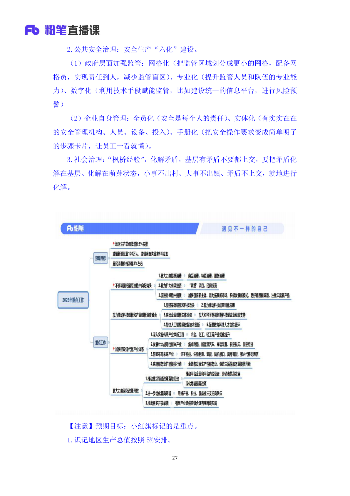
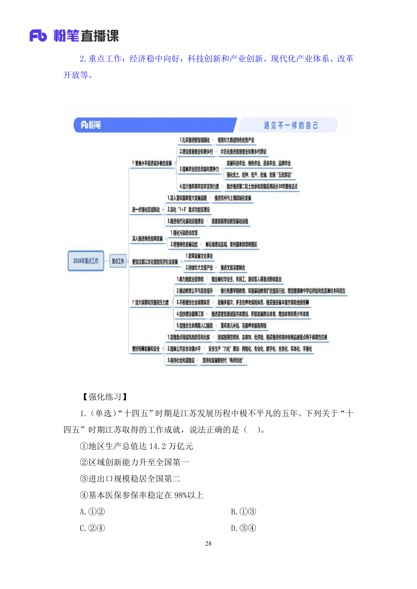
29
【解析】1.B 项：①联想“中国有14 亿人”记忆。③进出口规模位居第二，
当选。C 项：②区域创新能力是第二，广东是第一，排除。④医保参保率是95%，
排除。【选B】
2.（单选）2026 年江苏省政府工作报告指出“十五五”时期全省经济社会
发展的总体要求和目标任务。下列属于“十五五”时期经济社会发展的主要目标
的是（
）。
①在高质量发展上继续走在前列
②在推动科技创新和产业创新融合上打头阵
③在推进深层次改革和高水平开放上勇争先
④在落实国家重大发展战略上走在前
⑤在促进全体人民共同富裕上作示范
A.①②③④
B.②③④⑤
C.①③④⑤
D.①②③④⑤
【解析】2.D 项：①是习近平总书记要求江苏在高质量发展上继续走在前列；
②③④⑤是“四个着力点”，当选。【选D】
3.（单选）2026 年江苏省政府工作报告指出，今年要持续拓展内需增长新
空间，增进国际经贸合作，为充分挖掘经济潜能提供有力支撑。下列政策安排不
符合这一要求的是（
）。
A.培育特色消费，打造首发首店、首秀首展等新场景
B.引导政府投资向高技术、现代服务业等新赛道拓展
C.促进外贸稳中提质，稳住传统市场、开拓新兴市场
D.支持更多高新技术产品、绿色低碳产品出口
【解析】3.选非题。B 项：投资包括政府投资和民间投资，政府投资起带动
作用，是风向标，更多是靠民间投资，因此要引导民间投资向新赛道拓展，促进
新赛道的发展，当选。A 项：拓展内需包括消费和投资，消费包括特色消费，比
如首发经济，排除。C 项：稳住传统市场，开拓新市场，排除。【选B】
30
【注意】省考、事业单位对本省政府报告考查不多，有基本认知即可，重点
是全国政府工作报告。
31
遇见不一样的自己
Be your better self
“十五五”规划纲要全文解读
“十五五”规划纲要全文解读
主讲：张晓
粉笔事考·官方微信
1
本资料仅供内部交流使用
《中华人民共和国国民经济和社会发展第十五个五年（2026－2030 年）规划纲要》
第一篇 奋力开创中国式现代化建设新局面
“十五五”时期在基本实现社会主义现代化进程中具有承前启后的重要地位，是夯实基
础、全面发力的关键时期，必须不懈努力、接续奋斗，推动事关中国式现代化全局的战略任
务取得重大突破，为基本实现社会主义现代化奠定更加坚实的基础。
第一章 发展环境
1.“十四五”时期我国发展取得重大成就
“十四五”时期是全面建设社会主义现代化国家新征程的开局起步阶段，我国发展历程
极不寻常、极不平凡。面对错综复杂的国际形势和艰巨繁重的国内改革发展稳定任务，以习
近平同志为核心的党中央团结带领全党全国各族人民，迎难而上、砥砺前行，经受住世纪疫
情严重冲击，有效应对一系列重大风险挑战，推动党和国家事业取得新的重大成就。
新发展理念引领作用全面彰显，构建新发展格局迈出重要步伐，新质生产力稳步发展，
高质量发展扎实推进。经济运行稳中有进，国内生产总值突破140 万亿元，现代化产业体系
建设取得重大进展，基础设施支撑能力不断提升，数字经济核心产业增加值占比超过10.5%，
城乡区域发展平衡性协调性增强。科技创新成果丰硕，全社会研发经费投入强度达到2.8%，
攻克一批重大关键核心技术，取得一批重大原创科技成果。全面深化改革进一步推进，落实
“两个毫不动摇”的体制机制不断完善，全国统一大市场建设取得积极成效，宏观经济治理
效能进一步提升。高水平对外开放不断扩大，开放型经济新体制加快形成，高质量共建“一
带一路”走深走实。全过程人民民主深入发展，全面依法治国有效实施。文化事业和文化产
业蓬勃发展，精神文化产品丰富多彩。民生保障扎实稳固，居民人均可支配收入年均增长
5.4%，城镇新增就业累计达到6242 万人，劳动年龄人口平均受教育年限达到11.3 年，人均
预期寿命提升至79 岁以上，脱贫攻坚成果巩固拓展。绿色低碳转型步伐加快，生态环境质
量持续改善，非化石能源发电装机容量超过化石能源，地级及以上城市细颗粒物（PM2.5）浓
度降至28 微克/立方米，地表水达到或好于Ⅲ类水体比例超过90%，森林覆盖率超过25%。
国家安全能力有效提升，粮食产量迈上1.4 万亿斤大台阶，社会治理效能增强，社会大局保
持稳定。国防和军队建设取得重大进展。“一国两制”实践深入推进。中国特色大国外交全
面拓展。全面从严治党成效显著，反腐败斗争纵深推进，党的创造力、凝聚力、战斗力明显
提高。
“十四五”规划主要目标任务胜利完成，我国经济实力、科技实力、国防实力、综合国
力跃上新台阶，中国式现代化迈出新的坚实步伐，第二个百年奋斗目标新征程实现良好开局。
2
本资料仅供内部交流使用
这些重大成就的取得，根本在于以习近平同志为核心的党中央领航掌舵，在于习近平新时代
中国特色社会主义思想科学指引，是全党全军全国各族人民聚力攻坚、团结奋斗的结果。
2.“十五五”时期我国发展环境面临深刻复杂变化
大国关系牵动国际形势，国际形势演变深刻影响国内发展，我国发展处于战略机遇和风
险挑战并存、不确定难预料因素增多的时期。从国际看，世界百年变局加速演进，国际力量
对比深刻调整，新一轮科技革命和产业变革加速突破，我国具备主动运筹国际空间、塑造外
部环境的诸多有利因素。同时，世界变乱交织、动荡加剧，地缘冲突易发多发，全球治理赤
字加重、安全问题凸显；单边主义、保护主义抬头，霸权主义和强权政治威胁上升，国际经
济贸易秩序遇到严峻挑战，世界经济增长动能不足、风险积累；大国博弈更加复杂激烈，外
部环境的不确定性不稳定性明显增强。
从国内看，我国经济基础稳、优势多、韧性强、潜能大，长期向好的支撑条件和基本趋
势没有变，中国特色社会主义制度优势、超大规模市场优势、完整产业体系优势、丰富人才
资源优势更加彰显。同时，发展不平衡不充分问题仍然突出，周期性、结构性、体制性问题
相互交织；有效需求不足，供强需弱矛盾突出，国内大循环存在卡点堵点；新旧动能转换任
务艰巨；农业农村现代化相对滞后；就业和居民收入增长压力较大，民生保障存在短板弱项；
人口结构变化给经济发展、社会治理等提出新课题；重点领域还有风险隐患，防范化解房地
产、地方政府债务、中小金融机构等风险任务繁重。
变局蕴含机遇，挑战激发斗志。面对国际风云变幻和各种风险挑战，必须深刻领悟“两
个确立”的决定性意义，增强“四个意识”、坚定“四个自信”、做到“两个维护”，保持
战略定力，增强必胜信心，积极识变应变求变，敢于斗争、善于斗争，勇于面对风高浪急甚
至惊涛骇浪的重大考验，以历史主动精神克难关、战风险、迎挑战，集中力量办好自己的事，
统筹布局、精心安排，巩固拓展优势、破除瓶颈制约、补强短板弱项，在激烈国际竞争中赢
得战略主动，以高质量发展的确定性应对各种不确定性，续写经济快速发展和社会长期稳定
两大奇迹新篇章。
第二章 指导方针
1.指导思想
坚持马克思列宁主义、毛泽东思想、邓小平理论、“三个代表”重要思想、科学发展观，
全面贯彻习近平新时代中国特色社会主义思想，深入贯彻党的二十大和二十届历次全会精
神，认真落实四中全会部署，围绕全面建成社会主义现代化强国、实现第二个百年奋斗目标，
以中国式现代化全面推进中华民族伟大复兴，统筹推进“五位一体”总体布局，协调推进“四
3
本资料仅供内部交流使用
个全面”战略布局，统筹国内国际两个大局，完整准确全面贯彻新发展理念，加快构建新发
展格局，坚持稳中求进工作总基调，坚持以经济建设为中心，以推动高质量发展为主题，以
改革创新为根本动力，以满足人民日益增长的美好生活需要为根本目的，以全面从严治党为
根本保障，推动经济实现质的有效提升和量的合理增长，推动人的全面发展、全体人民共同
富裕迈出坚实步伐，确保基本实现社会主义现代化取得决定性进展。
2.必须遵循的原则
——坚持党的全面领导。坚决维护党中央权威和集中统一领导，提高党把方向、谋大局、
定政策、促改革能力，把党的领导贯穿经济社会发展各方面全过程，为我国社会主义现代化
建设提供根本保证。
——坚持人民至上。尊重人民主体地位，紧紧依靠人民，维护人民根本利益，促进社会
公平正义，注重在发展中保障和改善民生，在满足民生需求中拓展发展空间，推动经济和社
会协调发展、物质文明和精神文明相得益彰，让现代化建设成果更多更公平惠及全体人民。
——坚持高质量发展。以新发展理念引领发展，因地制宜发展新质生产力，做强国内大
循环，畅通国内国际双循环，统筹扩大内需和深化供给侧结构性改革，加快培育新动能，促
进经济结构优化升级，做优增量、盘活存量，推动经济持续健康发展和社会全面进步。
——坚持全面深化改革。聚焦制约高质量发展的体制机制障碍，推进深层次改革，扩大
高水平开放，推动生产关系和生产力、上层建筑和经济基础、国家治理和社会发展更好相适
应，持续增强发展动力和社会活力。
——坚持有效市场和有为政府相结合。充分发挥市场在资源配置中的决定性作用，更好
发挥政府作用，构建统一、开放、竞争、有序的市场体系，建设法治经济、信用经济，打造
市场化法治化国际化一流营商环境，形成既“放得活”又“管得好”的经济秩序。
——坚持统筹发展和安全。在发展中固安全，在安全中谋发展，强化底线思维，有效防
范化解各类风险，增强经济和社会韧性，以新安全格局保障新发展格局。
第三章 主要目标
“十五五”时期经济社会发展要实现以下目标。
——高质量发展取得显著成效。在结构优化和质量提升基础上，国内生产总值增长保持
在合理区间、各年度视情提出，为到2035 年人均国内生产总值比2020 年翻一番、达到中等
发达国家水平打好基础。全要素生产率稳步提升，科技进步和制度创新对经济增长的贡献持
续加大。居民消费率明显提高，内需拉动经济增长主动力作用持续增强，经济增长潜力得到
充分释放。全国统一大市场建设纵深推进，超大规模市场优势持续显现。新型工业化、信息
4
本资料仅供内部交流使用
化、城镇化、农业现代化取得重大进展，现代化产业体系完整性、先进性、安全性加快提升，
城乡区域发展协调性进一步增强，发展新质生产力、构建新发展格局、建设现代化经济体系
取得重大突破。
——科技自立自强水平大幅提高。国家创新体系整体效能显著提升，全社会研发经费投
入年均增长7%以上，教育科技人才一体发展格局基本形成。基础研究和原始创新能力显著
增强，重点领域关键核心技术快速突破，产出一批重大原创性、标志性、引领性科技成果，
并跑领跑领域明显增多。科技创新和产业创新深度融合，创新驱动作用明显增强。
——进一步全面深化改革取得新突破。国家治理体系和治理能力现代化深入推进，社会
主义市场经济体制更加完善，高水平对外开放体制机制更加健全，更加公平、更有活力的市
场环境加快形成，全过程人民民主制度化、规范化、程序化水平进一步提高，社会主义法治
国家建设达到更高水平。
——社会文明程度明显提升。文化自信更加坚定，主流思想舆论不断巩固壮大，社会主
义核心价值观广泛践行，全民族文化创新创造活力不断激发，人民精神文化生活更加丰富，
中华民族凝聚力和中华文化影响力显著增强，国家软实力持续提高。
——人民生活品质不断提高。就业保持总体稳定，城镇调查失业率低于5.5%，高质量
充分就业取得新进展。居民收入增长和经济增长同步、劳动报酬提高和劳动生产率提高同步，
分配结构得到优化，中等收入群体持续扩大。劳动年龄人口平均受教育年限提高到11.7 年，
人民群众养老托育服务需求得到更好满足，人均预期寿命提高到80 岁，社会保障制度更加
优化更可持续，基本公共服务均等化水平明显提升。
——美丽中国建设取得新的重大进展。绿色生产生活方式基本形成，碳达峰目标如期实
现，单位国内生产总值二氧化碳排放降低17%，清洁低碳安全高效的新型能源体系初步建成。
生态环境质量全面改善，主要污染物排放总量持续减少，地级及以上城市细颗粒物（PM2.5）
浓度降至27 微克/立方米以下，优良水体比例提高到85%，森林覆盖率达到25.8%，生态系
统多样性稳定性持续性不断提升。
——国家安全屏障更加巩固。国家安全体系和能力进一步加强，粮食综合生产能力达到
1.45 万亿斤左右，能源综合生产能力达到58 亿吨标准煤，重点领域风险得到有效防范化解，
社会治理和公共安全治理水平明显提高，重特大事故得到有效遏制，自然灾害防御水平显著
提升，建军一百年奋斗目标如期实现，更高水平平安中国建设扎实推进。
在此基础上再奋斗五年，到2035 年实现我国经济实力、科技实力、国防实力、综合国
力和国际影响力大幅跃升，人均国内生产总值达到中等发达国家水平，人民生活更加幸福美
5
本资料仅供内部交流使用
好，基本实现社会主义现代化。
第二篇 建设现代化产业体系 巩固壮大实体经济根基
坚持把发展经济的着力点放在实体经济上，坚持智能化、绿色化、融合化方向，加快建
设制造强国、质量强国、航天强国、交通强国、网络强国，保持制造业合理比重，构建以先
进制造业为骨干的现代化产业体系。
第四章 优化提升传统产业
强化国家标准引领、数智绿色技术赋能、环保安全制度约束，巩固提升我国产业在全球
分工中的地位和竞争力。
1.推动重点产业提质升级
坚持因势利导、分业施策，促进重点产业化解结构性矛盾、加快向中高端升级。推动钢
铁、石化、船舶等产业结构调整，做强做优精品钢材基地、一流石化基地、高端船舶和海洋
工程装备基地。推进电子信息、机械装备等全产业链创新，发展高端、短缺产品，加快突破
关键零部件、元器件和专用材料。扩大轻工、纺织等优质产品供给。巩固提升建筑业竞争力。
推动技术改造升级，发展智能制造、绿色制造、服务型制造，加快产业模式和企业组织形态
变革。发展先进制造业集群，建设国家新型工业化示范区。加强全面质量管理，深入实施制
造业卓越质量工程，增强质量技术基础能力。推进标准更新升级，严格安全、环保、能效、
质量等规范管理，促进市场化兼并重组，推动落后低效产能有序退出。
2.提升产业链自主可控水平
实施产业基础再造工程，加快突破一批重大基础技术、工艺和产品，推进先进材料、跨
尺度制造等创新应用。实施重大技术装备攻关工程，突破一批标志性重大技术装备。滚动实
施制造业重点产业链高质量发展行动，建立健全产业链供应链安全风险评估和应对机制，持
续增强稀土、稀有金属、超硬材料等竞争优势，加强重要战略性矿产高质高效综合利用。推
进国家战略腹地建设和关键产业备份，建设战略性产业基地、物资储备基地和基础设施。建
立产业基础竞争力调查制度，强化共性技术研发支撑能力。完善首台（套）、首批次、首版
次应用政策。
3.健全产业健康有序发展促进机制
完善产业调控和政策体系，优化产业布局，加强要素协同保障。健全产能监测预警机制，
采取规划引导、产能调控、价格治理、行业自律等措施，综合整治“内卷式”竞争。推动产
业政策向普惠化和功能性转型，健全产业政策制定实施、信息披露、评估调整和退出机制。
6
本资料仅供内部交流使用
完善优质企业梯度培育体系，促进中小企业专精特新发展。合理降低制造业综合成本，加大
中长期贷款和信用贷款对制造业技术创新、数智化转型、绿色发展等支持力度。实施制造业
人才支持计划和专业技术人才知识更新工程，培养造就卓越工程师、大国工匠、高技能人才。
第五章 培育壮大新兴产业和未来产业
强化源头技术供给，加快构建应用场景和生态体系，培育更多支柱性先导性产业，构筑
产业发展新优势。
1.发展壮大新兴产业
加快新一代信息技术、新能源、新材料、智能网联新能源汽车、机器人、生物医药、高
端装备、航空航天等战略性新兴产业发展，因地制宜建设各具特色、优势互补的战略性新兴
产业集群，着力打造一批成长潜力大、技术含量高、渗透领域广的新兴支柱产业。拓展海洋
经济发展空间，推进低空经济健康有序发展。实施新技术新产品新场景大规模应用示范行动，
加大场景培育和开放力度，加快新兴产业规模化发展。鼓励发展战略性产品和服务，推进国
产大飞机规模化系列化发展，加强北斗系统创新应用，扎实推进智能驾驶、新型太阳能电池、
新型储能等关键技术创新，支持创新药临床使用。
2.前瞻布局未来产业
瞄准引领未来发展重点领域，构建未来产业全链条培育体系，推动量子科技、生物制造、
氢能和核聚变能、脑机接口、具身智能、第六代移动通信等成为新的经济增长点。加强未来
产业识别和动态调整，强化基础性、前沿性、颠覆性技术布局。建立未来产业投入增长和风
险分担机制，组织实施未来产业发展示范工程，探索多元技术路线、典型应用场景、可行商
业模式、市场监管规则。布局一批国家未来产业研究院和概念验证中心，依托科教资源优势
突出、产业基础雄厚地区建设一批未来产业先导区。
3.完善产业创新发展生态
着力构建有利于新兴产业孵化成长的市场环境和政策体系。实施产业创新工程，优化战
略性产品技术创新组织模式和评价体系，一体推进创新设施建设、技术研究开发、产品迭代
升级。完善新兴领域知识产权保护制度，健全知识产权公共服务体系和技术交易服务平台网
络，实施新产业标准化领航工程。培育独角兽企业。建立适应新业态发展的高效便捷准入机
制，探索“沙盒监管”、触发式监管等新型监管方式。提升低空空域管理精细化水平，加强
适航审定能力建设，强化低空飞行安全保障。推进生物医药、智能驾驶、低空经济等新兴领
域立法。
第六章 促进服务业优质高效发展
7
本资料仅供内部交流使用
实施服务业扩能提质行动，深化服务领域改革开放，完善支持政策体系，全面提升服务
业质量效率和竞争力，更好发挥服务业支撑产业升级、满足民生需要、带动就业扩容的作用。
1.推进生产性服务业向专业化和价值链高端延伸
全链条补强生产性服务业薄弱环节，提高现代服务业与先进制造业、现代农业融合发展
水平。大力发展科技服务，提升研发设计、知识产权、科技成果转化、检验检测认证等服务
能力，培育具有国际水准的工业设计中心，依托产业集群布局一批行业共性技术平台、中试
验证平台和集成高效质量基础设施。提高金融租赁、物流仓储、人力资源等服务综合竞争力，
壮大节能环保、数智化转型等服务，提高增值服务比重。做强做优商务服务，发展高水平第
三方专业机构，提高公信力和国际认可度。
2.促进生活性服务业高品质多样化便利化发展
适应居民消费结构升级，积极发展普惠可及、个性多样的生活性服务业。加快补齐养老、
托育、健康等普惠服务短板，健全政府购买服务、公建民营、民办公助等机制，支持多元主
体扩大服务供给。鼓励批发零售、住宿餐饮特色优质发展，积极拓展新业态新模式，促进线
上线下协同发展。提高家政、物业、快递等服务质量，创新社区集成服务模式，推动品牌化
标准化发展。以带动面广的行业为依托，促进多业态融合发展。聚焦全民健康、智慧养老、
文化旅游、到家服务等，培育一批生活性服务业新增长点。
3.完善服务业发展政策体系
放宽服务领域准入，扩大优质经营主体，深化监管改革，健全适应业态融合的跨部门跨
行业审批监管模式。扩大服务业高水平对外开放，吸引国际知名企业在华投资经营，拓展“制
造+服务”海外经营网络。创新服务业融资和用地模式，完善普惠服务价格形成机制和配套
政策，鼓励利用存量资源改建服务设施。加快养老、托育等重点领域服务标准建设，推行优
质服务承诺、认证与标识制度。提升从业人员专业化水平，完善技能评价机制和信用体系。
健全服务业统计监测体系。
第七章 构建现代化基础设施体系
坚持适度超前、不过度超前，加强基础设施统筹规划，优化布局结构，促进集成融合，
提升安全韧性和运营可持续性。
1.完善现代化综合交通运输体系
推进补网强链提质，加强跨区域统筹布局、跨方式一体衔接，全面提高交通基础设施综
合效益。完善国家综合立体交通网主骨架，高质量建设沿海沿边沿江、出疆入藏、西部陆海
新通道等战略骨干通道，基本建成“八纵八横”高速铁路主通道和国家高速公路网，推进内
8
本资料仅供内部交流使用
河高等级航道提质升级，基本建成世界级港口群和机场群。强化薄弱地区覆盖和通达保障，
推动普速铁路、普通国省道升级改造，开展新一轮农村公路提升行动，加强西部地区铁路和
支线机场建设，完善边境地区路网布局。建设国际性、全国性综合交通枢纽城市，加强集疏
运网络建设和场站衔接，完善国家邮政快递枢纽。健全多元化、韧性强的国际运输通道体系，
推动跨境交通基础设施互联互通，促进国际航空货运健康有序发展。统筹功能提升和绿色安
全智能发展，推进交通基础设施更新改造和养护管理，加强安全风险评估和监测预警，实施
公路安全韧性提升工程。深化综合交通运输体系改革，推进铁路体制改革和收费公路政策优
化。
2.加力建设新型能源基础设施
深入实施能源安全新战略，加快构建清洁低碳安全高效的新型能源体系，建设能源强国。
推进非化石能源安全可靠有序替代化石能源，坚持风光水核等多能并举，实施非化石能源十
年倍增行动。统筹就地消纳和外送，建设“三北”风电光伏、西南水风光一体化、沿海核电、
海上风电等清洁能源基地，加强分布式能源就近开发利用，布局发展绿色氢氨醇，积极推进
光热发电和地热能利用。加强化石能源清洁高效利用，推进煤电改造升级和散煤替代。着力
构建新型电力系统，全面提升电力系统互补互济和安全韧性水平，优化全国电力流向和跨区
域通道布局，加快智能电网建设，完善城乡配电网，科学布局抽水蓄能，大力发展新型储能。
提高终端用能电气化水平，推动能源消费绿色化低碳化。基本建成全国统一电力市场体系，
完善油气“全国一张网”运行调度机制。
3.加快建设现代化水网
加强国家水网建设，增强洪涝灾害防御、水资源统筹调配、城乡供水保障能力。统筹流
域性洪水和局域性灾害防御，加强防洪水库、河道及堤防、蓄滞洪区建设，推进中小河流系
统治理和病险水库除险加固，增强暴雨集中区防洪避险能力。健全跨流域跨区域水资源调配
体系，完善国家水网主骨架和骨干输配水通道。加强供水灌溉保障，整装推进大中型灌区建
设改造，加快城市应急备用水源工程建设。加强河湖生态保护治理，推进水源涵养与水土保
持，提升水生态系统自我修复能力。实施地下水保护治理行动，逐步实现采补平衡。
4.适度超前建设新型基础设施
围绕支撑产业升级和数智化发展，推进新型基础设施布局建设和集约高效利用。完善信
息通信网络，深化第五代移动通信（5G）、千兆光网规模部署，推进第五代移动通信演进（5G-
A）、万兆光网建设发展和第六代移动通信（6G）技术创新，推动移动物联网自主迭代。深
入推进东数西算工程，构建多层次算力设施体系和全国一体化算力网。实施国家区块链网络
9
本资料仅供内部交流使用
建设工程。完善民用空间基础设施，统筹建设卫星通信、导航、遥感系统，加快低轨卫星互
联网组网。推进交通、能源、水利等基础设施数智化升级。
第三篇 加快高水平科技自立自强 引领发展新质生产力
抓住新一轮科技革命和产业变革历史机遇，统筹教育强国、科技强国、人才强国建设，
提升国家创新体系整体效能，全面增强自主创新能力，抢占科技发展制高点，推动科技创新
和产业创新深度融合，不断催生新质生产力。
第八章 加强原始创新和关键核心技术攻关
坚持技术驱动和需求拉动相结合、锻长板和补短板相结合，完善新型举国体制，推动产
出更多标志性原创成果。
1.打好关键核心技术攻坚战
聚焦战略必争领域和产业链供应链薄弱环节，采取超常规措施，全链条推动集成电路、
工业母机、高端仪器、基础软件、先进材料、生物制造等重点领域关键核心技术攻关取得决
定性突破。健全需求导向的攻关任务凝练机制，开展技术经济安全评估。强化跨领域跨学科
协同，健全重大任务人才特殊调配机制，完善“揭榜挂帅”、“赛马”等制度，探索以奖代
补、后补助等资金支持方式。强化以用促攻、攻用结合，一体推进技术研发、成果转化、标
准研制、产业培育，加快攻关成果应用和产品迭代升级。
2.强化战略前沿领域科技布局
瞄准世界科技前沿强化系统布局，实施人工智能、量子科技、生物科技、新能源等科技
战略部署，加快突破基础理论和底层技术，促进转化应用。高水平组织前沿技术预测预见，
建立国家关键和新兴技术清单，持续推动前沿技术研发。强化科学研究、技术开发原始创新
导向，优化有利于原创性颠覆性创新的环境，创新非共识项目遴选和资助机制，扩大国家重
大科技任务、国家自然科学基金原创性颠覆性项目规模和比例。突出国家战略需求，扎实推
进国家科技重大专项，超前部署面向2035 的国家重大科技项目。
3.全面提升基础研究水平
加强基础研究战略性、前瞻性、体系化布局，统筹推进目标导向和自由探索的基础研究。
加快形成基础研究多元化投入格局，加大财政投入力度，完善税收激励政策，引导有条件的
地方、企业、社会组织、个人支持基础研究，鼓励设立基础研究公益基金，实现基础研究经
费投入占研发经费投入比重明显提高。完善竞争性支持和稳定支持相结合的投入机制，加大
对从事基础研究的优势团队和青年科技人才长期稳定支持，探索长周期资助模式。鼓励开展
10
本资料仅供内部交流使用
高风险、高价值基础研究，营造鼓励探索、宽容失败的良好环境。围绕极宏观、极微观、极
端条件、极综合交叉的科学前沿，加强新兴领域、交叉融合和跨学科基础研究。
第九章 提高体系化创新能力
统筹国家战略科技力量建设，提高创新资源配置效率，构建自主完备、开放高效的国家
创新体系。
1.增强国家战略科技力量引领作用
优化国家实验室、国家科研机构、高水平研究型大学和科技领军企业等国家战略科技力
量定位和布局。发挥国家实验室龙头作用，支持国家实验室牵头实施国家重大科技任务、探
索新型科研组织模式，加强全国重点实验室建设。加快国家科研机构布局调整和优化重组，
完善与职责定位相适应的管理运行机制。支持高水平研究型大学创造一流学术环境，打造基
础研究主力军和人才培养主阵地。培育壮大科技领军企业，提升整合创新资源、构建产业生
态能力。鼓励和规范发展新型研发机构。
2.强化科技创新资源保障
强化统筹协调的科技任务部署机制，健全国家重大科技决策咨询制度。完善中央财政科
技经费分配和管理使用机制，健全重大科技任务央地投入共担机制，提高投入绩效。扩大财
政科研项目经费“包干制”范围，赋予科学家更大技术路线决定权、更大经费支配权、更大
资源调度权。强化科技基础条件自主保障，统筹科技创新平台基地建设，体系化布局建设重
大科技基础设施，加强高端科研仪器、科技期刊、科学数据等条件建设，强化资源开放共享。
完善区域创新体系，强化国际科技创新中心策源功能，布局建设区域科技创新中心和产业科
技创新高地，增强综合性国家科学中心创新资源集群效应，完善央地联动、区域协同的创新
机制。
3.构建高水平科技开放合作新格局
营造具有全球竞争力的开放创新生态，支持与各国科研人员共同攻克基础前沿科学问题。
发挥面向全球的科学研究基金作用，扩大科技计划对外开放，建立健全科技资金跨境拨付、
境外使用管理制度和科研数据跨境安全有序流动机制，推动重大科研基础设施和平台向全球
科学家开放使用。优化高校、科研院所、科技社团对外专业交流合作管理机制。牵头实施并
积极参与国际大科学计划和大科学工程，支持在我国境内设立国际科技组织，打造具有全球
影响力的国际科技奖项。
第十章 强化企业科技创新主体地位
落实企业在技术创新决策、研发投入、科研组织和成果转化应用中的主体地位，促进创
11
本资料仅供内部交流使用
新链产业链资金链人才链深度融合。
1.推动创新资源向企业集聚
建立健全项目、平台、数据、人才等创新资源向企业集聚的政策体系。提高企业在国家
重大科技创新决策中的参与度，将产业关键共性技术需求作为国家科技计划支持的重要方
向，推动具备条件的企业重大科技项目纳入国家科技计划体系。支持企业更多承担国家科技
攻关任务，在技术路线制定、攻关任务推进、参与单位选择和经费使用分配方面赋予牵头企
业更大自主权。优先支持科技型骨干企业建设国家科技创新平台基地，加大国家科学数据和
工程试验数据、人才计划向企业开放力度。完善科研人员离岗创业、兼职兼薪等政策，激励
优秀人才向企业流动。
2.加强企业主导的产学研融通创新
鼓励企业面向产业需求与高校、科研院所联合开展科研攻关。支持科技型骨干企业牵头
组建创新联合体，开展关键共性技术研发及科技成果中试和示范应用。深化职务科技成果赋
权改革，建立职务科技成果资产单列管理制度，推进技术转移体系建设，加快科技成果高效
转化应用。引导高校、科研院所按照先使用后付费方式把科技创新成果许可给中小微企业使
用。鼓励科技领军企业向中小微企业开放科研条件和应用场景、提供技术开发服务。
3.完善促进企业创新的政策体系
加强普惠性政策供给，营造有利于企业创新的良好环境。支持高新技术企业和科技型中
小企业发展，提高企业研发费用加计扣除比例。建立企业研发准备金制度。构建同科技创新
相适应的科技金融体制，完善长期资本投早、投小、投长期、投硬科技支持政策，支持优质
科技型企业上市融资、发行债券，高质量建设债券市场“科技板”，大力发展创业投资，多
渠道拓宽中长期创业投资资金来源，发挥国家创业投资引导基金、国家级并购基金作用。提
高外资在华开展股权投资、风险投资便利性。加大政府采购自主创新产品力度。建立科技保
险政策体系，丰富科技保险产品。强化知识产权全链条保护，优化专利商标审查政策，全面
实施专利开放许可制度。
第十一章 一体推进教育科技人才发展
深化教育科技人才一体改革，强化规划衔接、政策协同、资源统筹、评价联动，促进科
技自主创新和人才自主培养良性互动。
1.建立健全一体推进的协调机制
健全教育科技人才战略统筹实施机制，加强战略目标有机衔接、战略任务一体部署、政
策措施协调发力、资源要素统筹配置，推动教育科技人才平台基地协同布局，建设具有全球
12
本资料仅供内部交流使用
影响力的教育中心、科学中心、人才中心。在有条件的地方探索建立教育科技人才统筹管理
机制。围绕创新需求加快建设国家战略人才力量，加大对战略科学家、科技领军人才、基础
研究人才、青年科技人才等的培养和支持力度。加强人才协作，优化人才结构，完善有序流
动机制，促进人才区域协调发展。
2.协同推进创新型人才培养
围绕科技创新、产业发展和国家战略需求协同育人，提高人才自主培养质量。聚焦优势
学科和战略急需适度扩大“双一流”建设范围，新建若干所新型研究型大学。健全高等教育
学科专业设置调整机制，超常规布局人工智能、集成电路等新兴领域急需学科专业，深入实
施基础学科和交叉学科突破计划。强化科研机构、创新平台、企业、科技计划人才集聚培养
功能，招生指标向重大科技任务承担单位倾斜。探索拔尖创新人才培养新模式，加强青少年
科学素养、批判性思维和创新能力培养，强化科技教育和人文教育协同，加强基础学科、交
叉学科和战略急需领域本硕博衔接培养。
3.联动推进激励评价机制创新
以创新能力、质量、实效、贡献为评价导向，深化项目评审、机构评估、人才评价、收
入分配改革，激发创新创造动力活力。开展以成果原创性和学术价值为主的基础研究评价，
优化国际同行评价。推行以用户和市场反馈为主的应用研究和技术开发评价，将新技术新产
品作为业绩考核、职称评定、人才计划支持的重要依据。赋予用人单位更大人才评价自主权，
防止简单以称号头衔确定薪酬待遇、配置资源。完善人员编制、薪酬待遇、职称评聘、考核
晋升等配套政策，畅通高校、科研院所、企业人才交流通道。健全海外引进人才支持保障机
制，建立高技术人才移民制度，引育世界优秀人才。加强科学技术普及，培育创新文化，弘
扬科学家精神。加强科技法治、伦理、诚信、安全建设。
第四篇 深入推进数字中国建设 提升数智化发展水平
把握数字化、网络化、智能化发展大势，充分发挥我国数据资源丰富、产业体系完备、
应用场景广阔优势，激活数据要素潜能，加快数智技术创新，深化拓展“人工智能+”，赋
能经济社会发展和治理能力提升，促进生产方式深层次变革和生产力革命性跃迁。
第十二章 强化算力算法数据高效供给
统筹推进算力设施建设、模型算法发展和高质量数据资源供给，筑牢数智化发展底座。
1.加强算力设施支撑
统筹布局、有序建设算力设施，推进算力资源规模化、集约化、绿色化、普惠化发展。
13
本资料仅供内部交流使用
加快国家枢纽算力设施集群建设，支持有条件地区根据低时延场景需求适度发展算力，推进
云边端协同发展。加强高性能高质量智算资源供给，论证建设超大规模智算集群。推进算力
设施市场化建设运营，支持通过政府购买算力服务、算力租赁等多种方式满足算力需求，创
新发展标准化可扩展的智算云服务。推动绿色电力与算力协同布局。加强全国一体化算力监
测调度，提升算力接入和精准匹配能力。加快培育自主可控、协同运行的软硬件生态。提升
算力普惠易用水平，降低中小企业用算成本。
2.促进模型算法迭代创新
加快突破人工智能基础理论和核心技术，推进人工智能模型架构改进、算法优化，强化
“模芯云用”协同创新。构建任务导向、灵活授权、跨域协同的算法创新组织模式，加快研
究更加高效的模型训练和推理方法。鼓励多模态、智能体、具身智能、群体智能等技术创新，
探索通用人工智能发展路径。推动通用大模型和行业专用模型同步发展，依托高价值场景推
动模型应用落地和迭代升级。建立健全模型能力评估体系。
3.深化数据资源开发利用
构建国家数据资源体系，健全数据资源统计调查制度，建立全国数据资源“一本账”。
统筹推进政务数据共享、公共数据开放和授权运营，健全公共数据资源开发利用责任制和个
人数据合规利用机制，推动企业数据、行业数据开发开放。完善数据标准体系和质量管理体
系，加快建设人工智能语料库，面向能源、交通、制造、教育、健康、金融等领域建设高质
量数据集，建立人工智能训练数据合理使用制度。加强数据领域关键技术和设备研发应用，
培育壮大数据产业，深入开展“数据要素×”行动。建设和运营国家数据基础设施，实施可
信数据空间发展行动计划。
第十三章 全方位推进数智技术赋能
全面实施“人工智能+”行动，加强人工智能同科技创新、产业发展、文化建设、民生
保障、社会治理相结合，抢占人工智能产业应用制高点，全方位赋能千行百业。
1.促进实体经济和数字经济深度融合
壮大数字经济核心产业，发展新一代通信技术、云计算、区块链等产业，提升高端芯片、
光电子器件、基础软件和工业软件等产业水平，打造具有国际竞争力的数字产业集群。推进
国家人工智能创新高地建设，培育智能原生新模式新业态，建设国家人工智能应用中试基地。
促进制造业“智改数转网联”，实施智能制造工程和工业互联网创新发展工程，一体推进网
络、标识、平台、数据、安全体系建设和规模化应用。推进服务业数智化，发展智慧农业。
建设数智化转型促进网络，健全中小企业数智赋能服务体系。推进开源体系建设，完善开源
14
本资料仅供内部交流使用
运行机制。
2.创造美好数智生活
充分发挥数智技术和数据要素对丰富人民生活、改善民生福祉的作用，拓展教育、医疗、
养老、文旅、就业、消费等领域融合应用。丰富智能家居、智慧出行和智慧社区场景，发展
智能终端产品和服务，构建数智便民服务圈。促进人工智能助力教育模式变革，有序推动数
智技术在辅助诊疗、精准医疗、健康管理、医保服务、养老助残等场景的应用。深入实施全
民数字素养与技能提升行动，强化人工智能的就业创造效应。积极探索运用数智技术提高基
层医疗服务能力、促进教育公平，助力基本公共服务均等化。
3.提高政府治理数智化水平
深化数智技术全流程应用，发展泛在可及、智慧便捷、公平普惠的数智化政务服务。完
善覆盖全国的一体化在线政务服务平台，强化数据“一表通”和公共应用支撑体系建设，推
进政务数据跨部门跨层级跨地区共享利用。安全稳妥有序推进政务领域人工智能大模型部署
应用，探索构建精准识别需求、主动规划服务、全程智能办理的服务新模式。深化人工智能
赋能安全治理，提升感知预警、指挥决策、精准管理和即时响应能力。
第十四章 营造健康有序的发展生态
坚持促进发展和规范管理相统筹，加强数据基础制度规则建设和人工智能治理，营造有
益、安全、公平的发展环境。
1.健全数据要素基础制度
建立健全数据产权、流通利用、收益分配、安全治理等数据要素基础制度。完善数据产
权结构性分置制度，构建全国统一的数据产权登记体系。建设开放共享安全的全国一体化数
据市场，加快完善数据流通交易规则和标准，优化数据交易机构布局，规范发展第三方专业
服务机构。建立数据要素价格形成机制，探索兼顾各方利益的数据收益分配机制。完善数据
领域法律法规，健全数据采集、存储、流通、使用管理规则。实施数据分类分级管理，提升
数据安全保护能力。
2.完善科学有效监管机制
健全新技术新业态安全监管框架，构建技术标准研制调整、技术应用分级管理机制，推
进多元协同共治。完善人工智能领域法律法规、政策制度、应用规范、伦理准则，健全算法
备案、透明度管理、安全评估等制度，探索建立人工智能生成物权利归属和开发者经营者使
用者权责认定规则。推动建立人工智能全生命周期风险管理制度，健全覆盖安全监测、风险
预警、应急响应的风险防控体系。推动平台经济创新和健康发展，加强平台企业数据、算法、
15
本资料仅供内部交流使用
流量和规则监管，促进平台企业和平台内经营者、劳动者共赢发展。依法打击数据滥用、深
度伪造、泄露隐私等行为。
3.拓展数智领域国际合作
构建全球数字合作伙伴关系网络，深化电子商务、数字支付、智慧城市等领域合作，探
索建设离岸算力设施、数据跨境流动服务基础设施。积极参与人工智能、数字货币、数据跨
境流动等领域国际治理，在数据安全、隐私保护、跨境执法协作等方面达成更多共识，加强
国际司法协调和规则互认。推动建立各国广泛参与的人工智能治理框架，共同构建平权、互
信、多元、共赢的全球人工智能开放生态，支持全球南方国家加强人工智能能力建设。
第五篇 建设强大国内市场 加快构建新发展格局
坚持扩大内需这个战略基点，坚持惠民生和促消费、投资于物和投资于人紧密结合，以
新需求引领新供给，以新供给创造新需求，促进消费和投资、供给和需求良性互动，实现供
需更高水平动态平衡，增强国内大循环内生动力和可靠性。
第十五章 大力提振消费
深入实施提振消费专项行动，增强居民消费能力，改善消费意愿，适应不同群体消费需
求扩大优质供给，促进全社会商品和服务消费较快增长。
1.夯实居民消费基础
统筹促就业、增收入、稳预期，加快形成扩大居民消费长效机制。稳定和扩大就业容量，
支持企业稳岗扩岗、个人创业就业，积极培育新职业新岗位，拓展数字经济、绿色经济、银
发经济等就业新空间。大力促进城乡居民增收，稳步提高最低工资标准，持续改善小微企业
和个体工商户经营环境，促进楼市股市健康发展。织密扎牢社会保障网，鼓励支持灵活就业
人员、新就业形态人员参加职工保险，规范完善与人均消费支出挂钩的低保标准动态调整机
制，增加政府资金用于民生保障支出。
2.释放服务消费潜力
以放宽准入、业态融合为重点扩大服务消费，培育服务消费新增长点。提升生活服务消
费便利化水平，发展社区嵌入式服务和一刻钟便民生活圈，推进传统商圈焕新，优化养老、
托育、家政等领域服务消费体验。提高发展型消费比重，适应多样化个性化服务需求，规范
发展教育和培训消费，培育壮大健康消费，积极引进国际优质服务资源。激发改善型消费活
力，扩大文体旅游消费，优化营业性演出、体育赛事审批管理，实施冰雪旅游提升计划，发
展邮轮游艇、房车露营等休闲消费，积极拓展低空消费。深化商旅文体健融合，打造一批沉
16
本资料仅供内部交流使用
浸式互动式消费新场景。
3.推动商品消费扩容升级
强化品牌引领、标准升级、新技术应用，稳定大宗消费，促进消费品更新换代，满足多
层次消费品需求。因城施策优化房地产政策，多管齐下稳定预期，充分释放刚性和改善性住
房需求潜力，支持老旧房屋适老化改造和智能化升级。深化汽车消费从购买管理向使用管理
转变，完善充换电、停车场等基础设施，拓展汽车改装、租赁等后市场消费。支持汽车、电
子产品、家电家具等回收体系建设，规范二手商品流通秩序。实施数字消费提升行动，推动
智能新产品应用，制定智能家居互联互通标准，推广柔性化定制化消费品生产模式。发展绿
色消费，积极推广绿色低碳产品。培育中高端消费新增长点，推动老字号、国货潮牌做精做
强，发展周边衍生品消费，积极推进首发经济。
4.持续改善消费环境
完善促进消费制度机制，清理消费领域不合理限制性措施，建立健全适应消费新业态新
模式新场景管理机制。加大直达消费者的普惠政策力度，扩大消费领域金融供给，打造一批
带动面广、显示度高的消费新场景。优化入境消费环境，推广离境退税商店，培育国际消费
中心城市，推进“购在中国”。落实职工带薪休假制度，鼓励弹性错峰休假，探索推行中小
学生春秋假。强化消费者权益保护，畅通消费者投诉和维权渠道，规范网络销售、直播带货
等经营活动，健全预付式消费监管模式。加强全口径消费统计，优化服务消费、消费新业态
新模式统计监测。
第十六章 扩大有效投资
加快构建有效投资内生增长机制，保持投资合理增长，提高投资综合效益，更好发挥投
资对支撑国家战略、优化供给结构、满足民生需求的作用。
1.提高政府投资效益
聚焦惠民生、补短板、增动能，优化政府投资结构。统筹“硬投资”和“软建设”，高
质量推进国家重大战略实施和重点领域安全能力项目建设，实施一批重大标志性工程项目。
加强人力资源开发和人的全面发展投资，在“一老一小”服务、基层医疗卫生、普通高中和
优质高等教育扩容、职业技能培训等领域实施一批民生工程，提高民生类政府投资比重。适
应人口结构变化和流动趋势，完善基础设施和公共服务设施布局。适应新质生产力发展要求，
积极支持新型基础设施和无形资产投资。加强政府投资全过程管理，强化战略规划引领、项
目谋划储备论证和事中事后监管，避免过度超前建设和低效无效投资。进一步明确中央和地
方投资方向和重点，统筹用好各类政府投资，在工作基础较好的地方探索编制全口径政府投
17
本资料仅供内部交流使用
资计划。优化地方政府专项债券管理，完善“自审自发”机制，提高用于项目建设比重并单
列。发挥新型政策性金融工具作用。深化投资审批制度改革，优化政府投资项目审批权限，
修订政府核准投资项目目录，提升投资审批服务效能。
2.激发民间投资活力
坚持平等对待、保护权益、政策协同，增强市场主导的有效投资增长动力，提高民间投
资比重。完善民营企业参与重大项目建设长效机制，鼓励支持民营企业参与铁路、核电、水
电、供水等领域项目建设，推动具备条件的项目进一步提高民营企业持股比例。鼓励民营企
业加大科技创新和产业升级投资力度，推动新兴领域应用场景向民营企业开放。依法保障民
营企业投资运营合法权益，平等保障用地、融资等要素需求。发挥政府投资基金引导带动作
用，加强布局规划和投向指导评价，健全“投融管退”机制。
3.促进投资消费良性循环
聚焦投资消费结合点，以有效投资带动消费能力和意愿提升，以消费升级牵引投资方向
优化，强化扩内需政策综合效应。支持就业增收带动能力强的行业扩大投资，鼓励消费基础
设施和消费服务功能提升类设施建设，加大对健康养老、体育健身、休闲娱乐等领域消费场
景建设和设施提档升级的投资力度。因地制宜推动交通枢纽、产业集聚区等拓展消费功能。
推动县域商业提质增效，加强物流仓储、农村寄递等设施补短板。
第十七章 纵深推进全国统一大市场建设
坚决破除阻碍全国统一大市场建设卡点堵点，破除地方保护和市场分割，促进商品要素
资源在更大范围内顺畅流动。
1.完善全国统一大市场基础制度规则
推进适应全国统一大市场要求的产权保护、市场准入、信息披露、社会信用、兼并重组、
市场退出等制度建设。依法平等长久保护各种所有制经济产权，对侵犯各种所有制经济产权
和合法利益的行为实行同责同罪同罚。加强知识产权保护和运用，制定重点领域商业秘密保
护规则指引。完善市场准入制度，动态修订市场准入负面清单，严格落实“全国一张清单”
管理要求。完善企业质量、安全、环境等信息披露制度规则。强化全国信用信息共享平台功
能，深入推进信用信息归集共享和信用应用拓展，完善守信激励、失信惩戒和信用修复机制。
健全企业破产制度，探索建立覆盖所有经营主体的简易退出机制。完善有利于统一大市场建
设的统计、财税、考核制度，推广经营主体活动发生地统计，优化企业总部和分支机构、生
产地和消费地利益分享。制定全国统一大市场建设条例。
2.维护公平竞争市场秩序
18
本资料仅供内部交流使用
推动市场监管规则完善、基准统一、能力提升，形成优质优价、良性竞争的市场秩序。
制定重点领域公平竞争合规指引，强化公平竞争审查刚性约束，消除要素获取、资质认定、
招标投标、政府采购等方面壁垒。规范地方政府经济促进行为，制定地方政府招商引资鼓励
和禁止事项清单，加强招商引资信息披露。完善妨碍建设全国统一大市场事项清单动态更新
和通报问责制度。强化反垄断和反不正当竞争执法司法，制定重点领域反垄断指南指引。完
善协调统一的国家标准体系，扩大强制性国家标准覆盖面，推进新兴产业标准建设，提升标
准国际化水平。推进检验检测认证资源共享、资质互认和结果通用。统一市场监管执法，完
善行政裁量权基准制度，推进行政处罚和刑事处罚双向衔接。完善行政复议体制机制。健全
综合执法体制机制，优化监管事项层级设置，提高基层执法效能。
3.促进市场设施高标准联通
推进流通物流、市场信息、交易平台等设施互联互通和规则衔接。健全高效顺畅的现代
流通体系，完善国家物流枢纽网络，依托现代流通战略支点城市构建若干重要商品骨干流通
走廊，支持有条件的地区建设大宗商品资源配置枢纽，健全一体衔接的流通规则和标准，降
低全社会物流成本。加强多式联运设施、标准建设和信息共享，大力推进“一单制”、“一
箱制”发展，促进集装箱和大宗物资铁水联运。完善市场信息交互渠道，推动构建全链条信
息信任和应用机制。建立健全统一规范、信息共享的招标投标和政府、事业单位、国有企业
采购等公共资源交易平台体系，推进人工智能应用和大数据监管，实现项目全流程公开管理。
第六篇 加快构建高水平社会主义市场经济体制 增强高质量发展动力
坚持和完善社会主义基本经济制度，更好发挥经济体制改革牵引作用，建设高标准市场
体系，提升宏观经济治理效能，促进资源配置效率最优化和效益最大化，激发全社会内生动
力和创新活力，确保高质量发展行稳致远。
第十八章 充分激发各类经营主体活力
坚持和落实“两个毫不动摇”，促进各种所有制经济优势互补、共同发展。
1.深化国资国企改革
做强做优做大国有企业和国有资本，增强国有企业核心功能、提升核心竞争力。制定实
施国有经济布局优化和结构调整指引目录，推动国有资本向关系国家安全、国民经济命脉的
重要行业和关键领域集中，向关系国计民生的公共服务、应急能力、公益性领域等集中，向
前瞻性战略性新兴产业集中，加强战略性重组和专业化整合。深化国有企业分类改革，进一
步明晰不同类型国有企业功能定位，加强主责主业管理，建立国有企业履行战略使命评价制
19
本资料仅供内部交流使用
度，构建分类考核的治理体制。推动国有企业完善市场化经营机制，提升价值创造能力。健
全国有企业推进原始创新制度安排。完善国资监管体制，更好发挥国有资本投资、运营公司
作用。健全国有经济和国有企业增加值核算制度。支持国有企业和民营企业以市场化方式规
范开展股权合作、战略协作、资源整合。
2.发展壮大民营经济
落实民营经济促进法，完善配套法规政策制度体系，从法律和制度上保障平等使用生产
要素、公平参与市场竞争、有效保护合法权益。持续推进基础设施竞争性领域向民营企业公
平开放。支持有能力的民营企业牵头承担国家重大技术攻关任务，推进国家重大科研基础设
施和公共研发平台进一步向民营企业开放。完善民营企业融资支持政策，发挥全国一体化融
资信用服务平台网络作用，健全信用状况综合评价体系和增信制度。支持中小企业和个体工
商户发展，推动大中小企业协同融通发展。创新发展“晋江经验”，健全民营经济发展综合
服务体系，完善政企常态化沟通交流和问题解决机制。引导民营企业完善治理结构和管理制
度，促进民营经济健康发展和民营经济人士健康成长。健全民营经济统计监测制度。
3.积极营造一流营商环境
持续推进营商环境改进提升，打造市场化、法治化、国际化一流营商环境。完善为企服
务体系，健全“高效办成一件事”重点事项清单管理和常态化推进机制，推行惠企政策全程
网办、直达快享，推广信用承诺制。深化注册资本认缴登记制度改革，持续精简涉企经营许
可事项。健全规范涉企执法长效机制，防止和纠正违规异地执法、趋利性执法，推进“综合
查一次”等联合执法方式。强化产权执法司法保护，加强对查封、扣押、冻结等强制措施的
司法监督。建立健全清理拖欠企业账款长效机制，畅通政府违约失信投诉渠道。完善中国特
色现代企业制度，弘扬企业家精神，加快建设更多世界一流企业。
第十九章 加快完善要素市场化配置体制机制
深化要素市场化改革，畅通要素有序流动渠道，统筹增量优化和存量盘活，促进各类要
素资源高效配置。
1.健全要素市场制度和规则
完善要素市场体系，扩大要素市场化配置范围。深化土地制度改革，建立健全城乡统一
的建设用地市场。健全投资和融资相协调的资本市场功能，优化发行上市、信息披露、并购
重组、退市等基础制度，提高上市公司质量，建立增强内在稳定性长效机制。畅通劳动力和
人才社会性流动渠道，逐步打破户籍、社保、职称、档案等方面制度性障碍。培育全国一体
化技术市场和数据市场。深化拓展要素市场化配置综合改革试点，加快形成一批可复制可推
20
本资料仅供内部交流使用
广的制度成果。
2.完善资源要素价格形成机制
完善主要由市场供求关系决定价格机制，加强和改进价格治理。加快健全适应新型能源
体系的价格机制，分品种、有节奏推进各类电源上网电价市场化改革，完善成品油定价机制，
深化天然气价格改革，完善煤炭价格区间调控政策，加强网络型自然垄断环节价格监管。深
化水利工程供水价格改革。健全促进可持续发展的公用事业价格机制，优化居民阶梯水价、
电价、气价制度。深化公共服务价格改革，完善养老等服务收费政策。探索构建新型生产要
素价格形成机制。
3.盘活利用存量资源
完善并购、破产、置换等政策，盘活用好低效用地、闲置房产、存量基础设施。编制宏
观资产负债表，全面摸清存量资源资产底数，优化资产负债结构。深化扩大低效用地再开发
试点，完善促进盘活存量用地的规划管控、土地供应和税费政策，加快发展建设用地二级市
场。推进土地混合开发、空间复合利用和土地用途依法合理转换，完善工商业用地使用权续
期法律法规，依法稳妥推进续期工作。推进全国行政事业单位存量国有资产盘活共享，健全
产业园区存量盘活和高质量发展机制，完善资产估值等配套政策，引入社会力量提升盘活利
用效率，规范市场化运作流程。推动司法判决执行与破产制度有机衔接，依法有效盘活被查
封冻结财产。积极推动基础设施领域不动产投资信托基金（REITs）常态化推荐发行。
第二十章 健全宏观经济治理体系
提高宏观调控和政府治理水平，促进形成更多由内需主导、消费拉动、内生增长的经济
发展模式。
1.完善宏观调控制度体系
强化国家发展规划战略导向作用，加强财政、货币政策协同，发挥好产业、价格、就业、
消费、投资、贸易、区域、环保、监管等政策作用，增强宏观政策取向一致性和有效性。强
化逆周期和跨周期调节，实施更加积极的宏观政策，合理确定政府债务规模，保持流动性充
裕，持续稳增长、稳就业、稳预期。完善宏观调控目标体系，统筹短期目标和中长期目标、
总量平衡和结构调整，强化年度计划与国家发展规划衔接。健全预期管理机制，将预期管理
纳入宏观经济治理全过程。加强经济监测预测预警，充实完善政策工具箱，科学把握政策力
度和出台时机，强化政策实施效果评价。探索实行国家宏观资产负债表管理。优化高质量发
展综合绩效考核。
2.健全现代财政制度
21
本资料仅供内部交流使用
深化财税体制改革，发挥积极财政政策作用，加强财政科学管理，增强财政可持续性。
强化对预算编制和财政政策的宏观指导，发挥中期财政规划跨年度预算平衡作用，强化国家
重大战略任务和基本民生财力保障。加强财政资源和预算统筹，加大政府性基金预算、国有
资本经营预算与一般公共预算统筹力度，完善国有资本经营预算制度，合理提高国有资本收
益收取比例，把依托行政权力、政府信用、国有资源资产获取的收入全部纳入政府预算管理。
优化财政支出结构，合理提高公共服务支出占财政支出比重。深化零基预算改革，统一预算
分配权，健全支出标准体系和动态调整机制，加强预算绩效管理和执行监督。优化税制结构，
健全有利于高质量发展、社会公平、市场统一的税收制度，保持合理的宏观税负水平。提高
直接税比重，完善综合和分类相结合的个人所得税制度，逐步扩大综合征收范围，健全经营
所得、资本所得、财产所得税收政策。完善增值税留抵退税政策和抵扣链条，优化共享税分
享比例。研究同新业态相适应的税收制度。健全地方税体系，推进消费税征收环节后移并稳
步下划地方，增加地方自主财力。适当加强中央事权、提高中央财政支出比重，减少委托地
方代行的中央财政事权。完善财政转移支付体系，优化财政转移支付结构。全面落实税收法
定原则，规范税收优惠政策，加强财会监督。加快构建同高质量发展相适应的政府债务管理
长效机制。
3.加快建设金融强国
坚持防风险、强监管、促高质量发展，加快建设中国特色现代金融体系。完善中央银行
制度，构建科学稳健的货币政策体系，完善基础货币投放机制，健全市场化利率形成、调控
和传导机制，保持社会融资规模、货币供应量增长同经济增长、价格总水平预期目标相匹配。
建立覆盖全面的宏观审慎管理体系，将更多金融活动、金融市场等纳入宏观审慎政策框架。
增强人民币汇率弹性，保持在合理均衡水平上基本稳定。提升金融服务实体经济质效，大力
发展科技金融、绿色金融、普惠金融、养老金融、数字金融，加强对重大战略、重点领域和
薄弱环节的优质金融服务。完善结构性货币政策工具体系。持续深化资本市场投融资综合改
革，增强资本市场制度包容性、适应性，提高直接融资比重。发展多元股权融资，加快多层
次债券市场建设，稳步发展期货、衍生品和资产证券化，加强交易监管和投资者保护。壮大
耐心资本，完善支持中长期资金入市政策体系。优化金融机构体系，推动各类金融机构专注
主业、完善治理、错位发展，支持国有大型金融机构提升综合服务水平，严格中小金融机构
准入标准和监管要求，培育一流投资银行和投资机构。建设安全高效的金融基础设施。稳步
发展数字人民币。加快建设上海国际金融中心。全面加强金融监管，构建风险防范化解体系，
保障金融稳健运行。
22
本资料仅供内部交流使用
第七篇 扩大高水平对外开放 开创合作共赢新局面
坚持开放合作、互利共赢，稳步扩大制度型开放，建设更高水平开放型经济新体制，推
动共建“一带一路”高质量发展，拓展国际循环，以开放促改革促发展，倡导平等有序的世
界多极化、普惠包容的经济全球化，与世界各国共享机遇、共同发展。
第二十一章 积极扩大自主开放
对接国际高标准经贸规则扩大开放，促进国内国际规则、规制、管理、标准相通相容，
营造透明稳定可预期的制度环境。
1.有序扩大开放领域和区域
以服务业为重点扩大市场准入和开放领域，实施更大范围、更宽领域、更深层次开放。
推动电信、互联网、教育、文化、医疗等领域有序扩大开放，稳妥实施增值电信、生物技术、
外商独资医院等开放试点，推进服务业扩大开放综合试点示范。缩减外资准入负面清单，加
强负面清单修订与开放试点联动。稳慎拓展金融市场互联互通，优化合格境外投资者制度，
扩大可投资品种范围，有序推进符合条件的企业跨境双向直接融资，支持股权投资基金跨境
投资。推进数据高效便利安全跨境流动。优化签证和停居留政策，提升境外人员入境数字化
服务便利性。推进人民币国际化，拓展人民币在国际贸易和投融资中的使用，提升资本项目
开放水平，建设自主可控的人民币跨境支付体系，发展人民币离岸市场。在有条件的领域率
先实施高标准经贸协定开放举措，对最不发达国家和合作潜力大的经贸伙伴，扩大单边开放
领域和区域。
2.构建与高标准经贸规则相衔接的制度和监管体系
推进高水平开放和深层次改革高效联动，加快推动重点领域立法修法、政策调整和标准
修订。健全与国际规则相衔接的知识产权保护机制，探索扩大商标保护范围，优化版权保护
机制，拓展知识产权纠纷解决渠道。推动重点产品能效、水效、碳足迹等规则标准国际互认，
推进企业气候信息、环境信息依法披露与自愿披露。探索完善适合我国国情、符合国际惯例
的劳动保护机制。加快政府采购制度改革，全面落实公平竞争原则。率先试行世界贸易组织
电子商务协定、投资便利化协定，提高跨境支付结算效率和单证电子化标准化水平。
3.优化区域开放布局
打造形态多样的开放高地，加快形成陆海内外联动、东西双向互济的全面开放格局。高
标准建设海南自由贸易港，高水平实施全岛封关运作，持续提升贸易投资和要素流动等重点
领域开放水平，逐步构建与高水平自由贸易港相适应的政策制度体系。实施自由贸易试验区
提升战略，开展更大力度制度型开放试验，提升创新引领发展能级。统筹布局建设科技创新、
23
本资料仅供内部交流使用
服务贸易、产业发展等重大开放合作平台，支持功能相近、区位相邻的平台优化整合，推动
国家级新区、开发区管理制度和运营模式创新，促进综合保税区转型升级，推进沿边重点开
发开放试验区、产业协作园区、沿边临港产业园区和边（跨）境经济合作区等建设。
第二十二章 提升贸易投资合作质量和水平
强化进口和出口协调、货物和服务并重，统筹吸引外资和境外投资，塑造国际贸易和双
向投资合作新优势。
1.推动贸易创新发展
加快建设贸易强国，促进外贸提质增效，推动进出口平衡发展。优化升级货物贸易，推
动市场多元化，拓展中间品贸易，促进加工贸易提档升级。大力发展服务贸易，完善跨境服
务贸易负面清单管理制度，放宽跨境交付、自然人移动等跨境服务限制，鼓励服务出口，增
强运输、旅行等服务国际竞争力，发展知识密集型服务贸易，积极发展服务外包，提升服务
贸易标准化水平。合理调整进口关税税率，修订鼓励进口技术、产品和服务目录，扩大国内
急需的先进技术设备、优质农产品、生产性服务等进口。创新发展数字贸易、绿色贸易，有
序扩大数字领域开放。支持跨境电商等新业态新模式发展，优化海外仓布局和功能，完善保
税维修和再制造、新型离岸贸易等政策环境。推进通关、税务、外汇等监管创新，推动外贸
产品标准与合格评定、检验检疫国际合作。提升贸易促进平台功能，加大出口信贷和信用保
险支持，持续办好进博会、广交会、服贸会等重大展会。推动内外贸一体化发展，深化内外
贸标准认证改革。强化贸易风险防控和摩擦应对，丰富贸易调整援助、贸易救济等政策工具，
完善出口管制体系。
2.更大力度吸引和利用外资
持续优化外商投资环境，健全外商投资服务保障体系，塑造吸引外资新优势。全面落实
外资企业国民待遇，清理与外商投资法不符的文件法规，落实好“准入又准营”。发挥标志
性外资项目示范效应，引导外资更多投向先进制造、现代服务、高新技术、节能环保等领域，
支持参与产业链上下游配套协作，大力吸引外资企业在华设立地区总部、研发中心。促进外
资境内再投资。精心打造“投资中国”品牌。拓展利用外资方式，完善外资并购管理，拓宽
外资投资证券市场渠道。高质量实施外商投资安全审查。完善全口径外债监管体系。健全外
商投资统计、信息报告制度，加强信息共享。
3.促进国际产业与投资合作
有效实施对外投资管理，健全海外综合服务体系，促进贸易投资一体化，引导产业链供
应链合理有序跨境布局。进一步引导和规范企业境外投资方向，支持有条件的企业开展互利
24
本资料仅供内部交流使用
共赢的境外投资合作，鼓励互联网平台、人工智能等新兴产业企业拓展海外应用场景。支持
咨询评估、法律服务、会计审计、信用评级、调解仲裁等专业服务机构拓展海外服务网络，
健全涉外知识产权保护体系。加强我国公民、法人海外合法利益保护，建立诉求响应和保护
救济制度，健全海外利益保护体系。发挥境外经贸合作区作用，促进与境内园区协同发展。
加强境外投资安全审查。健全境外投资风险监测、防控、处置机制和法律法规，推动企业提
升风险防控和合规经营能力。
第二十三章 高质量共建“一带一路”
坚持共商共建共享、开放绿色廉洁、高标准惠民生可持续的指导原则，完善推进高质量
共建“一带一路”机制，深化基础设施“硬联通”、规则标准“软联通”、同共建国家人民
“心联通”。
1.深化发展战略对接
加强与共建国家、国际组织政策沟通和战略对接，强化合作规划统筹管理，加强实施协
调和评估优化。发挥“一带一路”国际合作高峰论坛引领作用，强化能源、税收、减贫、智
库、媒体等领域合作平台建设。深化与共建国家治国理政经验交流，增进企业家、专家学者、
青年等群体交流。统筹多双边合作，创新“一带一路”合作模式，巩固已有合作成果，拓展
共赢发展空间。
2.完善立体互联互通网络布局
深化重要经济走廊和支点港口合作，畅通陆海天网多元通道。提升中欧（亚）班列发展
水平，积极参与跨里海国际运输走廊建设。高质量建设中吉乌铁路、匈塞铁路等项目。推进
“丝路海运”港航贸一体化发展，推动空中丝绸之路建设提质增效，加强空间信息走廊建设
合作。积极推进中国标准海外应用。深入推进新疆、福建“一带一路”核心区建设。
3.全面提升务实合作质效
持续扩大与共建国家贸易投资合作，高标准建设“丝路电商”合作先行区。拓展绿色发
展、人工智能、数字经济、卫生健康、旅游、农业、气象、北斗应用等领域合作新空间。统
筹推进重大标志性工程和“小而美”民生项目建设。完善多元化、可持续、风险可控的投融
资体系，积极支持亚洲基础设施投资银行、新开发银行、丝路基金等发挥作用。拓展与共建
国家文化、教育、考古、体育等领域人文交流渠道，高质量实施“一带一路”科技创新行动
计划。提升风险防控能力，深入推进廉洁丝绸之路建设，推动共建“一带一路”更有序、更
规范、更安全、更可持续地高质量发展。
第二十四章 推动构建人类命运共同体
25
本资料仅供内部交流使用
落实全球发展倡议、全球安全倡议、全球文明倡议、全球治理倡议，积极推进中国特色
大国外交，为构建人类命运共同体作出中国贡献。
1.积极参与和引领全球经济治理
推进全球经济金融治理改革，推动构建和维护公平公正、开放包容、合作共赢的国际经
济秩序。维护以世界贸易组织为核心的多边贸易体制，全面深入参与世界贸易组织改革，坚
决反对保护主义、滥施关税等做法。扩大面向全球的高标准自由贸易区网络，高质量实施区
域全面经济伙伴关系协定并推动扩员和审议进程，推动中国－东盟自贸区3.0 版落地实施，
积极推动加入全面与进步跨太平洋伙伴关系协定、数字经济伙伴关系协定，推动商签更多区
域和双边贸易投资协定。积极提出人工智能、数字经济、绿色低碳、外层空间等新兴领域国
际规则的中国方案。强化国际宏观经济政策协调，推动二十国集团发挥国际经济合作主要论
坛作用，推动扩大金砖国家、上海合作组织等合作机制影响力，积极参与亚太经合组织合作、
推进亚太自由贸易区建设。
2.推动构建新型国际关系
倡导践行真正的多边主义，坚定维护以联合国为核心的国际体系、以国际法为基础的国
际秩序、以联合国宪章宗旨和原则为基础的国际关系基本准则，拓展全球伙伴关系网络，引
领国际秩序朝着更加公正合理的方向发展。深化周边发展融合，强化共同安全，巩固战略互
信，构建周边命运共同体。促进大国协调和良性互动，维护大国关系总体稳定。深化同发展
中国家团结合作，支持全球南方联合自强。打造多层级多领域文明对话交流机制和平台，共
同构建全球文明对话合作网络。弘扬全人类共同价值，推动建设持久和平、普遍安全、共同
繁荣、开放包容、清洁美丽的世界。
3.提供更多国际公共产品
发挥负责任大国作用，在应对全球气候变化、跨国犯罪、网络安全、重大传染性疾病、
恐怖主义等全球性问题上发挥更多积极作用。坚决反对霸权霸道霸凌行径，捍卫国际公平正
义，维护各国人民共同利益。积极参与全球安全规则制定，建设性参与国际和地区热点问题
政治解决，加强粮食、能源、数据、生物、陆海通道、反恐怖等领域安全国际合作，推动完
善全球安全治理。促进全球减贫合作，加强援外体系建设和全链条管理，加大援外力度。落
实联合国2030 年可持续发展议程。
第八篇 加快农业农村现代化 扎实推进乡村全面振兴
坚持农业农村优先发展，坚持城乡融合发展，健全推动乡村全面振兴长效机制，大力发
展现代农业，推动农村基本具备现代生活条件，持续巩固拓展脱贫攻坚成果，缩小城乡发展
26
本资料仅供内部交流使用
差距，加快建设农业强国。
第二十五章 提升农业综合生产能力和质量效益
坚持产量产能、生产生态、增产增收一起抓，推进产需衔接、结构优化、品质提升，提
高农业劳动生产率和科技进步贡献率。
1.加强粮食等重要农产品供给保障
深入实施藏粮于地、藏粮于技战略，加力实施新一轮千亿斤粮食产能提升行动，稳定稻
谷、小麦生产，提升玉米、大豆产能，推进粮油等主要作物大面积单产提升。适应供需形势
变化，优化农业生产结构，稳定发展棉油糖胶等重要农产品和“菜篮子”产品生产，发展特
色农业。健全耕地数量、质量、生态“三位一体”保护制度体系，严格占补平衡管理，完善
补充耕地质量验收机制，统筹农用地布局优化。高质量推进高标准农田建设和管护，完善农
田灌排体系，加强黑土地保护和酸化耕地治理，稳步推进盐碱地综合利用。增强农业防灾减
灾能力。开展新一轮农业资源区划工作。
2.强化农业科技和装备支撑
统筹发展科技农业、绿色农业、质量农业、品牌农业，把农业建成现代化大产业。深入
实施种业振兴行动，加强种质资源保护利用，健全商业化育种体系，强化育种联合攻关，培
育高产优质、抗逆广适新品种，提升种源安全保障水平。实施农机装备高质量发展行动，促
进良田良种良机良法集成增效，农作物耕种收综合机械化率提高到80%以上。围绕核心种源、
农机装备、农业节水等加强关键核心技术攻关，构建梯次分明、分工协作、适度竞争的农业
科技创新体系，培育农业科技领军企业。健全公益性和经营性相结合的农业科技推广体系。
积极推广地理标志产品和品牌。
3.构建多元化食物供给体系
坚持农林牧渔并举，全方位多途径开发食物资源。加强生猪产能综合调控，推进肉牛肉
羊、奶牛产业提质增效，加快草原畜牧业转型升级。加快发展饲草产业，扩大青贮饲料生产。
发展现代设施农业，推进节能宜机高效设施种植和集约化养殖。科学开发江河湖海和森林食
物资源，发展高质量水产养殖，稳步扩大木本粮油生产，发展林下经济，壮大林草产业，提
升机械化水平。积极发展合成生物技术，拓展新型蛋白来源。
第二十六章 推进宜居宜业和美乡村建设
学习运用“千万工程”经验，分类有序、片区化推进乡村振兴，深入实施乡村建设行动，
逐步提高农村基础设施完备度、公共服务便利度、人居环境舒适度。
1.创造乡村优质生活空间
27
本资料仅供内部交流使用
以县域为单元科学规划基础设施和公共服务布局，推动县域基础设施一体化规划建设管
护。统筹优化村镇布局，引导人口、产业适度集聚，因地制宜完善乡村建设实施机制，合理
安排建设重点和时序。协同推进县域国土空间治理，稳步开展全域土地综合整治，分类保障
乡村发展用地。扎实推进农村道路、供水、污水治理、能源、物流、信息等设施建设和维护。
持续推进农村危房改造。改善县域普通高中和寄宿制学校办学条件，以医护人员下沉为重点
推进紧密型县域医共体建设，健全县乡村三级养老服务网络，支持面向边远地区农村提供形
式灵活的基本公共服务，统筹利用农村存量设施资源。持续整治提升农村人居环境，以钉钉
子精神解决好农村改厕、垃圾围村等问题。
2.发展县域富民产业
发展各具特色的县域经济，推动农村一二三产业深度融合，因地制宜培育农业强县、工
业大县、旅游名县，推动兴业、强县、富民一体发展。推进农产品加工业转型升级，加强农
产品市场和流通网络建设，健全仓储保鲜和冷链物流体系。开发农业多种功能，培育壮大乡
村特色产业和乡村休闲旅游、文化体验、农村电商等新产业新业态。规范发展农民合作社，
培育农业产业化龙头企业，完善联农带农机制，推动新型农业经营主体扶持政策同带动农户
增收挂钩，促进农民稳定增收。
3.加强和改进乡村治理
深入推进抓党建促乡村全面振兴，健全县乡村三级治理体系，选优配强村“两委”班子
特别是带头人队伍，优化驻村第一书记和工作队选派管理机制。推进村民自治组织规范化建
设，完善村务公开和民主议事制度，支持农民群众多渠道参与村级议事协商。加强新时代农
村精神文明建设，繁荣发展乡村文化，实施文明乡风建设工程。持续整治农村高额彩礼。保
护传承乡村文化遗产，加强乡土建筑和传统村落保护，赓续农耕文明。
第二十七章 提高强农惠农富农政策效能
健全农业农村优先发展的体制机制和政策体系，推动城乡要素双向流动，增强农业农村
发展活力。
1.加强农业农村投入保障
健全财政优先保障、金融重点倾斜、社会积极参与的多元投入格局，确保乡村振兴投入
力度不断增强。优先保障农业农村领域一般公共预算投入，提升财政支农政策效能和资金效
益。健全种粮农民收益保障机制，强化价格、补贴、保险等政策支持和协同，保护和调动农
民务农种粮积极性。加大粮食主产区利益补偿力度，实施产销区省际横向利益补偿，完善产
粮大县奖补制度。健全适合农业农村特点的金融服务体系，发展多层次农业保险，支持发展
28
本资料仅供内部交流使用
特色农产品保险。
2.深化农业农村改革
巩固和完善农村基本经营制度，稳定土地承包关系，稳步推进第二轮土地承包到期后再
延长30 年试点，健全承包地经营权流转价格形成机制和管理服务制度。发展农业适度规模
经营，提高新型农业经营主体发展质量，完善便捷高效的农业社会化服务体系，促进小农户
和现代农业发展有机衔接。深化供销合作社综合改革。节约集约利用农村集体经营性建设用
地，有序推进入市改革，健全土地增值收益分配机制。加快完成房地一体宅基地确权登记颁
证，加强农村宅基地规范管理，依法盘活用好闲置土地和房屋。深化农村集体产权制度改革，
支持发展新型农村集体经济。加强农村产权交易市场规范化建设。激励各类人才下乡服务和
创业就业。
3.完善常态化帮扶机制
统筹建立常态化防止返贫致贫机制，坚持精准帮扶，完善兜底式保障，强化产业、就业
等开发式帮扶，增强内生动力，分层分类帮扶欠发达地区，确保不发生规模性返贫致贫。优
化现有国家乡村振兴重点帮扶县范围，完善支持政策和激励约束机制。优化完善东西部协作、
对口合作等机制，持续做好中央单位定点帮扶，深入开展干部人才“组团式”帮扶。聚焦大
型特大型安置区，加强易地搬迁后续扶持。推进市场化导向的消费帮扶。加强帮扶项目资产
规范管理。加力扩围实施以工代赈。统筹推进灾害避险搬迁。
第九篇 优化区域经济布局 促进区域协调发展
发挥区域协调发展战略、区域重大战略、主体功能区战略、新型城镇化战略叠加效应，
统筹推进区域内战略深化实施和区域间联动发展，优化重大生产力布局，发挥重点区域增长
极作用，构建优势互补、高质量发展的区域经济布局和国土空间体系。
第二十八章 增强区域发展协调性
坚持一以贯之落实区域发展战略，因时因地制宜、分区分类施策，鼓励各地发挥比较优
势、各展所长，促进东中西、南北方协调发展，在发展中促进相对平衡。
1.提升东中西和东北地区协调发展水平
聚焦大保护、大开放、高质量发展扎实推动西部大开发形成新格局，立足功能定位、资
源禀赋和产业基础，做强做大特色优势产业，实施一批生态屏障建设重大工程，以开放通道、
枢纽节点、平台载体建设促进对内对外开放。立足维护国家国防、粮食、生态、能源、产业
安全推动东北全面振兴取得新突破，完善能源通道和交通网络，持续巩固提高粮食综合生产
29
本资料仅供内部交流使用
能力，推动科教、农业、生态等资源优势转化为发展成效，加快推进向北开放。开创中部地
区加快崛起新局面，强化粮食和能源原材料保障能力，做优做强现代装备制造及高技术产业，
建设综合交通运输枢纽体系，推进内陆地区高水平开放。鼓励东部地区加快推进现代化，加
强原创性、颠覆性科技创新，引领建设具有国际竞争力的先进制造业集群和现代服务业高地。
2.巩固提升京津冀、长三角、粤港澳大湾区动力源作用
深入推进京津冀协同发展，形成更加紧密的全方位协同发展格局。积极稳妥有序疏解北
京非首都功能，持续推动标志性疏解项目和政策落地，优化提升首都功能，建设现代化首都
都市圈。高标准高质量推进雄安新区建设现代化城市，完善管理体制。提升北京城市副中心
综合服务水平，提高天津滨海新区综合承载能力。深入推进长三角一体化发展，完善创新链
产业链、基础设施、生态环保等一体化发展体制机制。加快上海“五个中心”建设，高标准
建设长三角生态绿色一体化发展示范区，提升虹桥国际开放枢纽辐射能级，支持上海与苏州
重点领域同城化发展，深化沪苏浙与皖北地区城市结对合作。深化粤港澳大湾区建设，强化
科技创新、经济发展、公共服务等方面规则衔接、机制对接，加强法治保障，充分发挥重大
合作平台先行先试作用，加快建设国际一流湾区。
3.推进长江经济带发展、黄河流域生态保护和高质量发展
坚持共抓大保护、不搞大开发，坚持生态优先、绿色发展，持续推进长江经济带高质量
发展，强化重点领域污染治理和重要湖泊保护治理，坚定不移推进长江十年禁渔，有序提高
沿线城市生活污水收集处理水平，推动长江干流稳定保持Ⅱ类水质、主要支流基本达到Ⅱ类
水质。畅通长江黄金水道，加强岸线资源高水平保护和合理高效利用，推进沿江产业绿色转
型升级，促进上中下游协同联动发展。全面推动黄河流域生态保护和高质量发展，持续完善
大保护大协同格局，系统推进上游水源涵养、中游水土保持、下游湿地保护和生态治理，加
大湟水河、渭河等重要支流综合治理力度，全力打好深度节水控水攻坚战。深化黄河流域生
态保护和高质量发展先行区建设。
4.支持特殊类型地区振兴发展
加快革命老区振兴发展，传承红色基因，发展特色产业，支持革命老区发挥比较优势培
育内生动力，深化革命老区重点城市对口合作。分类精准支持边境地区发展，统筹推动守边
固边、兴边富民、强边固防、沿边开放，促进边境贸易创新发展，加大边境地区教育医疗等
投入，实施更有力的护边补助政策，扎实推进沿边重点城镇和村庄建设，支持口岸城市发展，
推动边疆地区高质量发展。支持生态退化地区开展生态修复和绿色发展。推进老工业基地、
资源型地区转型发展，支持资源枯竭城市发展接续替代产业，推动采煤沉陷区、独立工矿区
30
本资料仅供内部交流使用
综合治理和整合利用。
第二十九章 促进区域联动发展
以跨区域跨流域大通道为基础，以城市群联动发展为载体，以体制机制协同为保障，推
动区域间互融互促、互利共赢，拓展国内大循环空间。
1.完善区域联动发展布局
强化区域基础设施互联互通，推进长江综合运输通道和沿边沿海通道等跨区域跨流域大
通道建设，发挥西电东送、东数西算等跨区域重大工程支撑作用。加强城市群一体化和重点
城市群协调联动，促进区域创新链产业链高效协作。支持京津冀、长三角、粤港澳大湾区打
造世界级城市群。提升成渝地区双城经济圈发展能级，打造高质量发展重要增长极。推动长
江中游城市群等加快发展。培育发展若干区域性中心城市，支持省际毗邻地区合作发展，更
好发挥跨区域联结型地区支撑带动作用。支持经济大省挑大梁，加强改革攻坚、政策赋能、
要素保障，在推进中国式现代化中走在前作示范。
2.健全跨区域合作机制
深化跨行政区合作，健全区域间规划统筹、产业协作、利益共享等机制。加强区域发展
战略统筹实施和规划衔接，协同推进跨区域平台和重大工程项目建设。完善产业转移协作机
制和平台体系，探索产业转出地和承接地税收、用地和碳排放指标等利益分享机制，促进重
点产业在国内有序转移。支持城市群都市圈范围内依规划跨省统筹建设用地指标。探索区域
协同立法。支持流域上下游、资源输出地输入地之间开展利益补偿，因地制宜拓展流域经济
等模式。加快推动民族地区高质量发展，深化各民族交往交流交融，完善对口援疆援藏工作
机制，加大对南疆地区倾斜支持力度。
第三十章 优化国土空间发展格局
坚持宜水则水、宜山则山，宜粮则粮、宜农则农，宜工则工、宜商则商，健全主体功能
区制度体系，提高政策针对性和精准性，推动形成主体功能约束有效、国土开发有序的空间
发展格局。
1.强化主体功能区战略实施
保持城市化地区、农产品主产区、重点生态功能区格局总体稳定，适当优化部分地区主
体功能，促进城市化地区增强经济人口集聚承载能力、农产品主产区提升农业综合生产能力、
重点生态功能区改善自然生态系统质量。细化明确特殊功能区，在主体功能基础上因地制宜
叠加维护国家安全、保障能源资源供给、保护传承文化、强化海洋资源保护利用等功能。完
善不同主体功能区差异化支持政策和考核评价机制，合理配置新增建设用地、水资源等指标。
31
本资料仅供内部交流使用
2.优化国土空间管控
完善国土空间规划体系，依据国家发展规划、结合国土空间规划评估结果，动态完善国
土空间规划，发挥对国土空间开发保护的基础作用。落实优化耕地和永久基本农田、生态保
护红线、城镇开发边界等控制线以及各类管控边界，围绕国家重大战略实施合理优化管控目
标。提高永久基本农田质量，有序推动不稳定耕地、灾毁耕地等退出并及时补足，研究完善
生态保护红线内人为活动差异化管控方式和战略性矿产差别化勘查开采政策，根据人口流动
和产业发展趋势优化城镇开发边界。统筹利用近岸、深远海空间。
3.加强国土空间协同治理
建立健全国土空间用途管制和规划许可制度，分区分类实施差别化、精细化用途管制。
健全国家重大项目用地保障机制，发挥自然资源管理和国土空间规划“一张图”作用。赋予
省级政府统筹建设用地更大自主权，探索实施建设用地总量按规划期管控模式，允许在不突
破省域建设用地总量前提下统筹安排市县建设用地、差异化配置增存比例，实行统筹存量和
增量综合供地。推动用地审查与规划许可有机融合、用地用海用林用草联动审批。
第三十一章 深入推进以人为本的新型城镇化
持续提高城镇化质量，促进农业转移人口全面融入城市，优化城市规模结构，推动城市
内涵式发展，促进大中小城市和小城镇协调发展、集约紧凑布局。
1.科学有序推进农业转移人口市民化
坚持积极稳妥、分类推进，统筹深化户籍制度改革和常住地提供基本公共服务。完善超
大特大城市积分落户政策，全面设立街道或社区公共户口，拓宽稳定就业居住的农业转移人
口落户渠道。探索建立全国统一的人口管理制度，逐步实现由常住地登记户口。稳步提高农
民工参加城镇职工社会保险比例，推动更多城市将符合条件的未落户常住人口纳入公租房保
障范围。因地制宜放宽在流入地参加中考报名条件，推进符合条件的随迁子女连续接受基础
教育。进一步健全“人地钱”挂钩机制。保障进城落户农民合法土地权益，依法维护进城落
户农民的土地承包权、宅基地使用权、集体收益分配权，探索建立自愿有偿退出的办法。
2.培育发展现代化都市圈
健全都市圈同城化发展体制机制，构建便捷高效的通勤圈、梯次配套的产业圈、便利共
享的生活圈。推进超大特大城市治理现代化，做强做精核心功能，辐射带动周边市县共同发
展。推进都市圈内规划统一编制、项目统筹布局、政策协同制定，强化空间布局和土地用途
跨行政区衔接，在具备条件的地方探索以都市圈为基本单元统筹公共资源和要素配置。提高
都市圈通勤效率，加快打通城际未贯通路段和瓶颈路段，推动科技创新券通兑通用、就业和
32
本资料仅供内部交流使用
居住年限互认。在中西部和东北地区培育若干都市圈，增强中心城市辐射带动能级。
3.建设现代化人民城市
推动城市发展方式转变，建设创新、宜居、美丽、韧性、文明、智慧的现代化人民城市。
实施激发产业创新活力专项行动，提升城市产业创新策源力。高质量推进城市更新，开展城
市体检，加快建设完整社区，健全城市更新实施机制，建立与建筑功能转换和混合利用需求
相适应的规划调整机制，构建可持续的城市建设运营投融资体系。高效利用城市地下空间。
推动城市发展绿色低碳转型，优化城市公共交通服务，健全城市公园、绿道网络和慢行交通
系统，不断完善15 分钟健身圈。加快城市基础设施生命线安全工程建设，推进老旧管网和
危旧房改造，提升城市排水防涝能力。严格限制超高层建筑，提升高层建筑火灾防范和救援
能力。加强城市风貌和建筑设计管理，推动城市建筑更好体现中华美学和时代风尚。加强互
嵌式社区建设。推进城市全域数字化转型，完善城市管理机制和运行管理服务平台，推动城
市治理智慧化精细化。
4.分类推进以县城为重要载体的城镇化建设
立足资源禀赋、区位条件和发展基础，分类引导大城市周边县、农产品主产区县、重点
生态功能区县、陆地边境县等县城发展方向，形成各具特色的发展路径，有序促进人口向县
城和中心镇合理集聚。强化城镇化潜力地区县城产业支撑，吸纳农业转移人口就近就业安居
和返乡创业。支持县城基础设施和公共服务补短板，增强县城综合承载能力，强化县级财力
保障。适时调整扩大经济规模大、人口增长快的县级市和特大镇经济社会管理权限，稳妥推
进人口小县机构优化。
第三十二章 加强海洋开发利用保护
坚持陆海统筹，提高经略海洋能力，加快建设海洋强国，走出一条具有中国特色的向海
图强之路。
1.推动海洋经济高质量发展
做强做优做大海洋产业，有序推进海洋能源资源开发利用，发展深远海养殖和现代化远
洋渔业，巩固提升海洋装备制造业优势，壮大海洋生物医药、海水淡化等海洋新兴产业，发
展现代航运服务业，打造海洋特色文化和旅游目的地。强化海洋战略科技力量，加强海洋科
技创新，健全深海极地考察支撑保障体系，发展远洋气象导航服务。实施深海工程，提高深
海进入、探测、开发、安全能力。加强主要海湾整体规划，提升北部、东部、南部海洋经济
圈发展水平，优化海洋经济发展示范区布局，建设各具特色的现代海洋城市，因地制宜深化
港产城融合发展，鼓励沿海地区与内陆地区加强海洋经济合作。完善促进海洋经济发展体制
33
本资料仅供内部交流使用
机制，加大财税、金融等政策支持力度，优化海洋经济统计监测体系。
2.保护海洋生态环境
加强海洋环境风险源头防范，推进重点海域污染防治、岸滩整治和保护修复，近岸海域
优良水质比例达到86%左右。严格围填海管控，全面落实自然岸线、滨海湿地、无居民海岛
等保护要求，大陆自然岸线保有率不低于35%。强化海洋垃圾清理和资源化利用。制定差异
化用海标准规范，积极推进海域分层立体利用。健全海岛开发保护管理体系，分类有序推进
海岛发展。实施新一轮海洋综合调查，健全海洋生态预警监测体系，提高重大海洋灾害风险
防控能力，防范应对海水倒灌。探索开展海洋碳汇核算。
3.维护国家海洋权益
积极推动构建海洋命运共同体，拓展蓝色伙伴关系，推动建设公正合理的国际海洋秩序。
主动参与国际海洋治理规则制定，积极履行海洋生物多样性协定。加强海洋科研调查、防灾
减灾、蓝色经济等领域国际合作，持续完善海洋领域多双边合作平台和机制，推动在我国设
立专门海洋国际组织。增强海洋意识，加强形势研判、风险防范和法理斗争，健全维护海洋
权益的体制机制，提高海上执法和海事司法能力。
第十篇 激发全民族文化创新创造活力 繁荣发展社会主义文化
坚持马克思主义在意识形态领域的指导地位，植根博大精深的中华文明，顺应信息技术
发展潮流，发展具有强大思想引领力、精神凝聚力、价值感召力、国际影响力的新时代中国
特色社会主义文化，扎实推进文化强国建设。
第三十三章 弘扬和践行社会主义核心价值观
以社会主义核心价值观引领文化建设，发展壮大主流价值、主流舆论、主流文化，不断
构筑中国精神、中国价值、中国力量。
1.推动理想信念教育常态化制度化
深化党的创新理论学习和宣传教育，坚持不懈用习近平新时代中国特色社会主义思想凝
心铸魂，加强体系化、学理化研究阐释和大众化、通俗化宣传普及。牢牢掌握党对意识形态
工作领导权，全面落实意识形态工作责任制。弘扬中国共产党人精神谱系，深化爱国主义、
集体主义、社会主义教育。加强和改进思想政治工作，推进校园文化建设，用好红色资源，
加强青少年理想信念教育。深化主流媒体系统性变革，推进新闻宣传和网络舆论一体化管理，
提高主流舆论引导能力。创新实施马克思主义理论研究和建设工程，实施哲学社会科学创新
工程，加快构建中国哲学社会科学自主知识体系。加强中国特色新型智库建设。
34
本资料仅供内部交流使用
2.提高社会文明程度
统筹推进城乡精神文明建设，发挥文化养心志、育情操的作用，涵养全民族昂扬奋发的
精神气质。加强新时代公民道德建设，大力弘扬社会公德、职业道德、家庭美德、个人品德，
加强家庭家教家风建设，强化未成年人思想道德建设。弘扬诚信文化、廉洁文化。发挥先进
典型示范引领作用，加强英模人物学习宣传，完善功勋荣誉表彰体系。发挥市民公约、村规
民约等作用，推进移风易俗。改进创新文明培育、文明实践、文明创建工作机制。
3.加强网络文明建设
提升信息化条件下文化领域治理能力，培育积极健康、向上向善的网络文化，共建网上
美好精神家园。加强网络内容建设和管理，提升党的创新理论、中华优秀传统文化网上传播
效能。加强全媒体传播体系建设，构建适应全媒体生产传播工作机制和评价体系。健全网络
综合治理格局，完善网络生态治理长效机制，规范网络内容生产、信息发布和传播流程，督
促互联网企业履行社会责任。统筹推进广播电视、网络视听发展和监管。
第三十四章 大力繁荣文化事业
健全公共文化服务体系，传承弘扬中华优秀传统文化，让人民享受更高品质的文化生活。
1.繁荣文化创作生产
坚持以人民为中心的创作导向，把提高质量作为文艺创作的生命线，营造良好文化生态，
提升文化原创能力。改进文艺创作生产服务、引导、组织工作机制，实施新时代艺术创作系
列工程，推动新闻出版、广播影视、文学艺术等领域精品创作，繁荣互联网条件下新大众文
艺。培育形成规模宏大、结构合理、锐意创新的高水平文化人才队伍。深化文化事业单位改
革，完善文艺院团建设发展机制。深化文娱领域综合治理。
2.提升公共文化服务水平
坚持文化惠民，实施公共文化服务提质增效行动，促进优质文化资源直达基层。广泛开
展群众性文化活动，加强群众文艺团队建设。依托城市书房、社区文化驿站、文化长廊等发
展新型公共文化空间，提供更多群众身边的文化服务。盘活用好各类公共文化设施资源，健
全社会力量参与公共文化服务机制，有序推进公共文化设施所有权和使用权分置改革。提升
智慧博物馆、智慧图书馆、公共文化云服务效能。深化全民阅读活动，推进书香社会建设。
加强新型广电网络建设，提升超高清内容制播能力，深化互联网电视“套娃”收费和操作复
杂治理。
3.加强文化遗产保护传承
推动文化遗产系统性保护和统一监管，推进管理资源整合，建立文化遗产保护督察制度。
35
本资料仅供内部交流使用
深入实施中华优秀传统文化传承发展工程，构建中华文明标识体系。实施中华文明探源和考
古中国工程。加大世界文化遗产、古迹遗址、革命文物、馆藏文物、文化景观等保护力度，
加强历史文化名城、街区、村镇有效保护和活态传承。建好用好长城、大运河、长征、黄河、
长江国家文化公园，优化建设管理体制机制。强化档案文献遗产保护和古籍抢救性保护，加
强中华典籍文献传承。提升非物质文化遗产保护传承水平，培育传承体验新场景。加强和改
进地方志工作。
第三十五章 加快发展文化产业
完善文化管理体制和生产经营机制，实施积极的文化经济政策，大力发展文化旅游业，
以文化赋能经济社会发展。
1.健全文化产业体系和市场体系
实施重大文化产业项目带动战略，扩大优质文化产品供给。改造提升传统文化业态，推
进文化和科技融合，推动文化建设数智化赋能、信息化转型，发展数字动漫、沉浸式展演、
线上演播、短视频、微短剧等新型文化业态，引导规范网络文学、网络游戏、网络视听等健
康发展。深入实施出版融合发展工程，深化全产业链改革创新。培育优秀文化企业和品牌，
促进文化产业园区规范创新发展。加快构建统一开放、高效规范、竞争有序的文化市场，深
入推进文化市场综合执法改革，深化影视制作、网络视听等领域审批制度改革。
2.推进文旅深度融合
深化以文塑旅、以旅彰文，推进旅游强国建设。丰富高品质旅游产品供给，深挖特色资
源和文化内涵，积极推动多业态融合发展。因地制宜发展红色旅游、乡村旅游、康养旅游、
工业旅游等，规范发展研学旅游，培育特色主题旅游线路和旅游演艺精品项目。完善旅游公
共服务，全链条提高旅游服务质量。加强文旅项目建设规范管理，防止闲置浪费。加强旅游
市场综合监管和安全管理，改善旅游消费体验。实施入境旅游促进计划，提升入境游便利化
国际化水平。
第三十六章 提升中华文明传播力影响力
加快构建中国话语和中国叙事体系，提升国际传播效能，加强对外文化交流合作，展现
可信、可爱、可敬的中国形象。
1.构建更有效力的国际传播体系
完善国际传播体制机制，创新传播载体和方式，拓展海外传播网络，构建多渠道、立体
式对外传播格局，全面提升国际话语权。培育全球化、市场化、专业化的国际传播主体，增
强主流媒体国际传播能力，构建广电视听媒体国际传播矩阵，促进社交媒体平台国际化发展，
36
本资料仅供内部交流使用
推动中国故事和中国声音全球化、区域化、分众化表达。鼓励文化企业国际化经营，推动优
质网络文学、网络游戏、影视动漫、精品展览等出海，加强国际传播重点基地、国家文化出
口基地建设。
2.深化文明交流互鉴
广泛开展国际人文交流合作，加强多层次文明对话，推动中华文化更好走向世界。举办
全球文明对话大会，持续办好良渚论坛。开展“读懂中国”、“兰花奖”等品牌活动，办好
中国文化和旅游年（节）、海外中国电影节展。加强文化遗产领域国际发展援助，深化文物
追索返还国际合作。支持中华文化传播展示和海外中国学发展。加强区域国别研究。
第十一篇 完善人口发展战略 促进人口高质量发展
以应对人口老龄化、少子化为重点完善人口发展战略，健全覆盖全人群、全生命周期的
人口服务体系，优化人口结构，提高人口素质，以人口高质量发展支撑中国式现代化。
第三十七章 建设生育友好型社会
优化生育支持政策和激励措施，有效降低家庭生育养育教育成本，努力稳定新出生人口
规模，促进人口长期均衡发展。
1.完善生育支持政策
坚持生育友好的政策取向，推动生育支持融入经济社会发展各项政策。发挥育儿补贴和
婴幼儿照护、子女教育个人所得税专项附加扣除政策作用，探索建立补贴标准动态调整机制。
扩大生育保险制度覆盖面，合理提升产前检查医疗费用保障水平，基本实现政策范围内住院
分娩个人“无自付”，将适宜的分娩镇痛项目纳入保障范围。全面落实生育休假制度，鼓励
用人单位对3 岁以下婴幼儿父母职工实行弹性工作制。加强生育力保护，实施早孕关爱行
动、孕育和出生缺陷防治能力提升计划，婴儿死亡率、孕产妇死亡率分别下降到3.5‰、12/10
万以下。推进辅助生殖技术规范有序应用，加强医疗费用保障。探索对婴幼儿参加基本医疗
保险提供资助。
2.健全育幼服务体系
加快普惠托育服务体系建设，多渠道扩大服务资源供给。加强公办托位供给，支持幼儿
园发展托幼一体化服务，鼓励招收2－3 岁幼儿。支持社会力量提供多元化普惠托育服务，
发展用人单位办托、社区嵌入式托育和家庭托育点等多种模式。深入开展托育服务补助示范
试点，完善普惠托育服务价格形成机制。实施托育服务质量提升行动，提高托育服务安全性
和规范性。加快托育服务立法。
37
本资料仅供内部交流使用
3.完善家庭发展政策和生育友好环境
健全支持家庭发展的政策体系，提倡适龄婚育、优生优育和夫妻共担育儿责任。培育新
型婚育文化，倡导积极婚育观，有效治理婚丧嫁娶中的陋习等问题。支持多子女家庭子女同
校就读，住房保障和购房政策向多子女家庭倾斜。推动公共空间适儿化改造和母婴设施配备。
实施家庭教育促进法，发挥社区家长学校等作用，加强家庭教育指导服务。健全计划生育特
殊家庭全方位帮扶保障制度。加强出生人口性别比综合治理。完善人口监测体系和预测预警
制度。
第三十八章 办好人民满意的教育
坚持教育优先发展，落实立德树人根本任务，深化教育综合改革，健全与人口变化相适
应的教育资源配置机制，建设高质量教育体系，培养德智体美劳全面发展的社会主义建设者
和接班人。
1.实施新时代立德树人工程
坚持不懈用习近平新时代中国特色社会主义思想铸魂育人，加强“大思政课”建设，完
善课程教材体系，全面实施新时代高校思政课课程方案，深入实施素质教育，促进学生健康
成长、全面发展。创新实践育人形式，建设大学生社会实践专门课程，建立中小学校国情研
学制度，促进思政课堂和社会课堂有效融合。实施学生体质强健计划，开展学校美育浸润行
动、劳动习惯养成计划，普及心理健康教育。完善覆盖全学段学生资助体系。实施国家通用
语言文字普及攻坚和质量提升行动。弘扬教育家精神，强化师德师风建设和教师待遇保障，
实施教师教育能力提升工程，培养造就高水平教师队伍。健全学校家庭社会协同育人机制。
深化教育评价改革，建立差异化管理和评价机制。引导规范民办教育发展。
2.推进基础教育扩优提质
加强基础教育资源跨学段动态调整和余缺调配，扩大学龄人口净流入城镇的教育资源供
给。推进义务教育优质均衡发展，加强校长、教师区域内统筹调配、交流轮岗，有序推进小
班化教学，办好必要的乡村小规模学校。推进学前教育优质普惠发展，提高公办幼儿园学位
占比，学前教育毛入园率提高到95%。扩大普通高中办学资源，深入实施县域普通高中振兴
计划，高中阶段教育完成率达到88%。稳步扩大免费教育范围，探索延长义务教育年限。有
序推进中考改革，扩大优质高中招生指标到校比例，支持有条件的地方开展均衡派位招生试
点。统筹推进“双减”和教育教学质量提升。健全特殊教育、专门教育保障机制。
3.推动高等教育提质扩容
按照研究型、应用型、技能型等基本办学定位，分类推进高校改革发展。以理工农医类
38
本资料仅供内部交流使用
专业为主有序扩大优质本科教育招生规模和研究生培养规模，高等教育毛入学率达到65%，
稳步提高本科招生比例和研究生教育层次占高等教育在校生比例。大力发展专业学位研究生
教育，提高工程硕博士培养比重。多渠道扩大优质高等教育资源，加大高水平研究型大学建
设力度，建强应用型本科高校。新增高等教育资源适度向人口大省和中西部地区倾斜。研究
适时调整本科生人均教育经费标准，持续改善学生宿舍等基本办学条件。扩大高水平教育对
外开放，鼓励国外高水平理工类大学来华合作办学，加强“留学中国”品牌和能力建设。深
入实施教育数字化战略。优化终身学习公共服务，完善国家开放大学体系。
4.提升职业学校办学能力
推进现代职业教育体系建设，提高职业教育办学质量和吸引力。优化与区域发展相协调、
与产业布局相衔接的职业教育布局，推动专业设置紧密对接产业链创新链需求。深化中等职
业教育改革，办好少而精的中等职业学校，建设特色鲜明高等职业学校，支持中高职一体化
发展。建设一批高水平本科层次职业学校，推动职业教育本科与专业学位教育融合贯通。实
行产教融合的人才培养模式，健全德技并修、工学结合育人机制，鼓励行业龙头企业举办或
参与举办职业学校。
第三十九章 加快建设健康中国
实施健康优先发展战略，健全健康促进政策制度体系，提升爱国卫生运动成效，推动从
以治病为中心向以健康为中心转变，为人民群众提供公平可及、系统连续的健康服务，提高
人民健康水平。
1.健全公共卫生体系
强化公共卫生能力，深化社会共治、医防协同、医防融合，建立健全传染病预防控制、
应急处置、医疗救治、物资保障和监督管理体系。加强疾控体系建设，提升传染病监测预警
和流行病学调查能力，完善公共卫生实验室网络，建设分级分层分流救治体系。加强重大传
染病防控，完善联防联控机制。动态优化国家免疫规划疫苗种类。健全紧急医学救援和院前
急救体系，提升血液保障和应急能力。加强心理健康和精神卫生服务，强化重点人群常见精
神障碍和心理问题早期发现与综合干预。加强职业病防治。实施合理膳食行动与国民营养计
划，持续开展健康体重管理行动。
2.建设优质高效医疗服务体系
优化医疗机构功能定位和布局，完善分级诊疗体系。促进优质医疗资源扩容下沉和区域
均衡布局，稳步有序推进国家医学中心建设，推动国家区域医疗中心提质增效。实施医疗卫
生强基工程，加强县区、基层医疗机构运行保障，基本实现县域医共体全覆盖、提升紧密性
39
本资料仅供内部交流使用
协同性，推进紧密型城市医疗集团建设，健全巡回医疗制度，提高家庭医生服务覆盖率和感
受度，提升基层医疗卫生机构诊疗量占比、合理增加药品品种配备。加强慢性病综合防控，
发展防治康管全链条服务，健全早筛早诊早治体系，重大慢性病过早死亡率下降到13%以下。
扩大康复护理、安宁疗护服务供给，实施康复护理扩容提升工程。加强全科医生、执业医师
和护士队伍建设，提高住院医师规范化培训水平。推进全民健康数智化建设，推动检验检查
结果共享互认。
3.健全医疗医保医药协同发展和治理机制
深化医药卫生体制改革，促进目标统一、政策衔接、信息联通、监管联动。以公益性为
导向深化公立医院改革，建立公立医院编制动态调整机制，健全以医疗服务为主导的收费机
制，完善薪酬制度，规范医疗机构和医务人员执业行为，加强医疗卫生领域法治保障。引导
规范民营医院发展。深化医保支付方式改革，优化结余资金使用，完善不同层级医疗机构差
异化支付政策，减轻参保者个人费用负担，提高医保基金使用效率。健全药品价格形成机制，
完善药品和医用耗材集中采购政策。优化创新药和临床急需药品审评审批，健全医保支持创
新药和医疗器械高质量发展机制，完善创新药目录，鼓励商业保险扩大创新药支付范围。
4.推进中医药传承创新
推动中医药振兴发展，促进中西医结合。健全中医药服务体系，提升基层中医药服务能
力，加强中医优势专科建设，发展中西医协同服务。促进中医药科技创新，实施中医药特色
人才培养工程。加强中药资源保护利用和道地药材生产基地建设，加强中药制剂、经典名方
发掘转化，提高中药质量，做大做强中医药产业。推进符合中医药特点的医保支付方式改革。
弘扬中医药文化，推动中医药走向世界。
5.加快建设体育强国
积极发展群众体育，广泛开展全民健身活动，强化青少年健身普及，经常参加体育锻炼
人数比例达到40%左右。完善全民健身公共服务体系，加强群众身边的场地设施布局建设。
改革完善竞技体育管理体制和运行机制，加强后备人才培养和体育科技装备研发，提高竞技
体育综合实力。高质量备战重大国际赛事，办好全运会。推进“三大球”振兴发展，深化足
球领域改革。丰富优质体育产品和服务供给，鼓励发展赛事经济，推进水域、空域、山地等
向户外运动安全有序开放，持续巩固和扩大“带动三亿人参与冰雪运动”成果，推动体育产
业高质量发展。
第四十章 积极应对人口老龄化
深入实施积极应对人口老龄化国家战略，健全养老事业和产业协同发展政策机制，促进
40
本资料仅供内部交流使用
老有所养、老有所为、老有所乐。
1.完善城乡养老服务网络
统筹规划养老服务设施布局，优化基本养老服务供给，推动养老服务扩容提质增效。深
化养老服务改革发展，有序推进养老机构分类改革。发展社区嵌入式养老服务，培育专业化、
品牌化、连锁化社区养老服务机构。发展家庭养老床位，推进居家适老化改造。发展互助性
养老服务。健全失能失智老年人照护体系，增加养老机构护理型床位供给，积极推进医养结
合。推行长期护理保险，健全统一的老年人能力评估制度。推进养老服务人员队伍职业化建
设，提升养老服务综合监管质效。加强高龄独居老人和空巢老人关爱帮扶。
2.营造丰富多彩的老年生活
把积极老龄观、健康老龄化融入经济社会发展全过程，深入开展人口老龄化国情教育，
营造孝老敬老社会环境。大力发展银发经济，丰富适老化产品和老年服务供给，培育银发经
济龙头企业和知名品牌，探索建立银发产品认证制度，完善银发经济统计。积极开发老年人
力资源，稳妥实施渐进式延迟法定退休年龄，优化就业、社保等方面年龄限制政策，拓展适
合老年人的多样化工作岗位，深入开展“银龄行动”。扩大老年教育资源供给，发展老年大
学，满足老年人精神文化需求。强化老年人优待和权益保障。加强公共设施适老化改造，持
续开展“智慧助老”行动，推动涉老高频事项便捷办理和服务场景简便易用，发展综合为老
服务。
第十二篇 加大保障和改善民生力度 扎实推进全体人民共同富裕
坚持在高质量发展中保障和改善民生，坚持尽力而为、量力而行，健全基本公共服务体
系，实施更加公平普惠、精准有力的社会政策，加强普惠性、基础性、兜底性民生建设，解
决好人民群众急难愁盼问题，畅通社会流动渠道，提高人民生活品质。
第四十一章 促进高质量充分就业
深入实施就业优先战略，坚持扩大就业容量和提升就业质量相结合，健全就业促进机制，
构建就业友好型发展方式。
1.强化就业优先政策
把高质量充分就业作为经济社会发展的优先目标，健全重大政策、重大项目、重大生产
力布局就业影响评估机制。加强产业和就业协同，实施稳岗扩容提质行动，对外贸、建筑、
住宿、餐饮等吸纳就业多的行业企业持续强化政策支持，充分挖掘服务业、新兴领域吸纳就
业潜能，推动灵活就业、新就业形态健康发展。稳定和扩大高校毕业生、农民工、退役军人
41
本资料仅供内部交流使用
等重点群体就业。加强困难群体就业帮扶，促进失业人员再就业，确保零就业家庭至少一人
实现就业。加大创业支持力度，增强创业带动就业效应。综合应对外部环境变化和人工智能
等新技术发展对就业的影响。建立高质量充分就业评价体系。
2.大规模开展职业技能培训
完善人力资源供需匹配机制，健全终身职业技能培训制度，着力解决结构性就业矛盾。
以市场化培训为主导、行业企业自主培训为主体，充分发挥院校、社会化培训机构等优势作
用，扩大高质量培训供给。统筹用好就业补助资金和失业保险基金等支持职业技能培训，指
导企业按规定足额提取和使用职工教育经费。推进培训补贴直达企业和参训者，实行未就业
重点群体培训补贴申领制。完善职业分类、职业标准和技能人才评价制度，深入实施“新八
级工”职业技能等级制度，构建国家资历框架体系。办好世界技能大赛。
3.加强就业服务和劳动者权益保障
健全就业支持和公共服务体系，营造公平有序就业环境。完善劳动标准体系和劳动关系
协商协调机制，健全灵活就业、新就业形态劳动者权益保障制度，推动平台企业公平制定劳
动规则、依法合规用工，构建和谐劳动关系。加快流动人员档案服务数智化。强化择业和用
人观念引导。完善劳动就业法规体系，提升劳动关系矛盾调解仲裁效能，健全劳动保障监察
体制，督促企业依法落实工时制度，有效治理就业歧视、欠薪欠保、违法裁员等。健全就业
失业统计监测和风险预警体系，完善规模性失业风险防范化解机制。
第四十二章 完善收入分配制度
坚持按劳分配为主体、多种分配方式并存，完善初次分配、再分配、第三次分配协调配
套的制度体系，提高居民收入在国民收入分配中的比重，提高劳动报酬在初次分配中的比重。
1.优化初次分配格局
健全各类要素由市场评价贡献、按贡献决定报酬的初次分配机制，促进多劳者多得、技
高者多得、创新者多得。完善劳动者工资决定、合理增长、支付保障机制，推行工资集体协
商制度，健全最低工资标准调整机制，加强企业工资分配宏观指导。深化国有企业工资决定
机制改革，完善机关事业单位工资和津补贴制度，加大工资分配向基层一线和艰苦地区倾斜
力度。完善企业薪酬调查和信息发布制度。多渠道增加城乡居民财产性收入，健全上市公司
分红激励约束机制，丰富满足居民财富管理需求的金融产品和服务，提高农民土地增值收益
分享比例。强化以增加知识价值为导向的分配政策，允许更多符合条件的国有企业以创新创
造为导向在科研人员中开展多种形式中长期激励，加快构建技能导向的薪酬分配制度。
2.加大收入分配调节力度
42
本资料仅供内部交流使用
加强税收、社会保障、转移支付等再分配调节，优化收入分配格局。加大税收调节力度
和精准性，健全自然人税费服务和监管体系，实行劳动性所得统一征税。充分发挥专项附加
扣除政策作用，加大个人所得税抵扣力度。探索完善资本利得税收调节机制，加强对高收入
者税收监管。强化社会保障互助共济功能，逐步缩小制度间、区域间筹资和待遇保障差距。
优化转移支付功能定位，强化一般性转移支付对缩小区域间财力差距的调节功能。健全赈灾
赈济制度。更好发挥第三次分配作用，促进和规范公益慈善事业发展，探索慈善有效实现形
式。
3.稳步扩大中等收入群体规模
制定实施城乡居民增收计划，有效增加低收入群体收入，提高中等收入群体比重，推动
形成橄榄型分配格局。聚焦重点群体精准实施增收政策，提高高校毕业生就业匹配度，推动
技术工人薪酬和技能“双提升”，全面落实农民工工资支付保障制度，多措并举促进中小企
业主和个体工商户稳定经营，积极培养高素质农民和农村致富带头人，提高增收致富能力。
规范收入分配秩序和财富积累机制，支持勤劳创新合法致富，鼓励先富带后富促共富，合理
调节过高收入，取缔非法收入。
第四十三章 健全社会保障体系
以强化重点群体保障、增强制度可持续性为重点，健全覆盖全民、统筹城乡、公平统一、
安全规范、可持续的多层次社会保障体系。
1.稳步提高社会保障水平
实施高质量参保行动，持续扩大社会保险覆盖面。加快发展多层次、多支柱养老保险体
系，健全待遇确定和调整机制，逐步提高城乡居民基础养老金，退休人员基本养老金调整向
待遇较低群体倾斜，扩大企业年金覆盖范围，完善个人养老金政策，大力发展商业养老保险。
健全多层次医疗保障体系，完善异地就医结算，充分发挥商业医疗保险补充保障作用。提高
灵活就业人员、农民工、新就业形态人员参保率，合理确定缴费基数，明晰用工方和平台企
业缴费责任。扩大失业、工伤等社会保险覆盖面，建立健全职业伤害保障制度。完善社保关
系转移接续政策，提高养老保险关系转移接续效率。优化全国统一的社保公共服务平台和经
办管理服务。
2.增强社会保险体系可持续性
健全社会保险精算制度，完善社保基金长效筹集、统筹调剂、保值增值和安全监管机制。
做优做强社会保障战略储备基金，继续划转国有资本充实社保基金。加强参保缴费激励，鼓
励有条件的集体经济组织等补助城乡居民参保缴费，合理提高城乡居民基本医疗保险财政补
43
本资料仅供内部交流使用
助标准。完善并落实基本养老保险全国统筹制度，基本实现基本医疗保险省级统筹，巩固失
业、工伤保险省级统筹。完善社保基金投资政策和监管体系，加强信息披露和绩效评价，强
化医保基金监管。
3.健全社会救助体系
健全分层分类、城乡统筹的社会救助体系。完善基本生活救助制度和专项救助制度，动
态调整社会救助标准，加强低保边缘家庭、刚性支出困难家庭救助。积极发展服务类社会救
助，加强各类社会救助政策统筹衔接。健全临时救助制度，全面推进由急难发生地直接实施
救助。健全救助对象认定监测机制，加强救助体系与其他政策有效衔接，激发救助对象脱困
解困内生动力。
第四十四章 推动房地产高质量发展
加快构建房地产发展新模式，健全多主体供给、多渠道保障、租购并举的住房制度，实
现更高水平住有所居。
1.完善住房保障体系
优化保障性住房供给，强化城镇低收入住房困难家庭住房保障，更好满足住房困难且收
入不高的工薪群体基本住房需求，逐步解决新市民、青年等群体的阶段性住房困难。加强保
障性住房全流程管理，健全申请、轮候、配租配售、使用、退出等管理机制。探索配租型、
配售型保障性住房房源有序转换和统筹使用。深化住房公积金制度改革，扩大使用范围，支
持灵活就业人员参加住房公积金制度。
2.推动房地产市场平稳健康发展
完善商品房开发、融资、销售等基础制度。推行房地产开发项目公司制和融资主办银行
制，支持满足房地产合理融资需求，有力有序推进现房销售。合理安排房地产用地规模和布
局，促进土地供应与存量住房、人口变动等相协调。充分赋予城市政府房地产市场调控自主
权。推动已供未开发土地和在建项目分类处置，推进存量商品房和闲置商业办公用房盘活利
用。因城施策增加改善性住房供给。建设安全舒适绿色智慧的“好房子”，实施房屋品质提
升工程和物业服务质量提升行动。规范发展住房租赁市场，培育市场化专业化租赁企业。建
立房屋全生命周期安全管理制度。
第四十五章 稳步推进基本公共服务均等化
增强基本公共服务均衡性和可及性，推动基本公共服务均等化取得更为明显的实质性进
展。
1.建立基本公共服务均等化制度体系
44
本资料仅供内部交流使用
制定实施基本公共服务均等化规划和政策，加快实现常住人口同等享有基本公共服务，
有序推进县域范围内城乡基本公共服务均衡发展，逐步缩小区域基本公共服务资源差距。以
享有机会公平、效果大致相当为导向，建立基本公共服务均等化评价标准体系，分领域细化
评价标准，探索开展均等化实现程度评价。聚焦幼有所育、学有所教、劳有所得、病有所医、
老有所养、住有所居、弱有所扶等领域，完善基本公共服务范围和内容，适时纳入群众急需
的服务项目，动态调整国家标准，加强区域间标准统筹。推动更多公共服务向基层下沉、向
农村覆盖、向边远地区和生活困难群众倾斜。加强县域基本公共服务供给统筹，完善投入保
障长效机制。
2.全面推进常住地提供基本公共服务
健全与常住人口相匹配的公共资源配置机制。在人口集中流入城市，规范实施以就业居
住年限为主要条件的紧缺公共服务梯度供应，逐步减少梯度层次和服务差异。落实持居住证
参加城乡居民基本医疗保险政策。逐步将未落户常住人口纳入常住地儿童关爱、社会救助等
范围。全面深化事业单位改革，优化公共服务领域事业单位结构布局，巩固完善充分考虑常
住人口服务对象数量、服务成本等因素的财政转移支付分配机制。
第四十六章 保障各类群体发展权益
健全关爱服务体系，营造有效保障妇女、未成年人、青年人、残疾人等发展权益的社会
环境，提升退役军人服务保障水平。
1.促进男女平等和妇女全面发展
坚持男女平等基本国策，保障妇女依法平等参与经济社会发展、平等行使民主权利、平
等享有改革发展成果。完善妇幼健康服务体系，加强乳腺癌、宫颈癌综合防治，全面实施适
龄女童国家免疫规划人乳头瘤病毒（HPV）疫苗免费接种。保障妇女平等受教育权利和就业
权益，依法保障农村妇女集体经济组织成员权和土地承包经营权，支持妇女参与基层治理。
持续预防和制止家庭暴力，严厉打击侵害妇女权利的违法犯罪行为。
2.强化未成年人关爱保护
坚持儿童优先发展，切实保障儿童生存权、发展权、受保护权和参与权。推进儿童近视、
超重肥胖和孤独症等早筛查早干预。提高儿童医疗保健服务水平，丰富儿童用药品种。加强
困境儿童关爱服务，推进流动儿童、留守儿童分类帮扶，有效提升福利保障水平。完善儿童
早期发展服务。制定实施儿童伤害防控行动计划，强化未成年人违法犯罪预防和治理，有效
防治学生欺凌。加强未成年人网络保护，拓展网络育人空间和阵地。推进儿童友好建设，营
造关心关爱下一代的社会环境。
45
本资料仅供内部交流使用
3.支持青年发展
健全促进青年发展的规划和政策，为青年成长成才、建功立业创造良好条件。加强对广
大青年的思想政治引领和价值观塑造，深入开展新时代中国青年科技创新、乡村振兴等领域
青春建功行动，支持青年在各领域各方面工作中争当排头兵和主力军。帮助青年解决求学工
作、创新创业、婚恋生育、住房保障、社会融入等实际困难。完善青年群体利益表达和诉求
响应机制，拓展青年有序参与社会治理渠道。
4.加强退役军人服务保障
深化退役军人管理保障改革，完善组织管理、工作运行和政策制度体系。健全优抚待遇
确定和调整机制，加强优待项目统筹管理，完善退役军人帮扶援助和法律服务体系。深化优
抚医院、光荣院管理改革，完善优抚医疗康养体系。推进退役军人高质量安置就业，完善安
置办法，强化政策支持和服务指导。健全退役军人荣誉激励和表彰奖励制度。加强和改进双
拥模范创建工作。大力弘扬英烈精神。
5.提升残疾人保障和发展能力
完善残疾人社会保障制度和关爱服务体系，促进残疾人事业全面发展。强化对重度残疾、
多重残疾、一户多残等群体兜底保障，健全困难残疾人生活补贴、重度残疾人护理补贴制度
及补贴标准动态调整机制，加强残疾儿童康复救助，健全残疾人辅助器具适配补贴制度。完
善残疾人社区和家庭支持，加强重度残疾人托养照护，发展精神障碍社区康复。强化残疾人
就业帮扶，完善按比例就业、集中就业、自主就业促进机制。发展残疾人文化体育。深入推
进科技助残，加强公共设施、信息交流、社会服务无障碍环境建设。
第十三篇 加快经济社会发展全面绿色转型 建设美丽中国
牢固树立和践行绿水青山就是金山银山的理念，以碳达峰碳中和为牵引，以健全生态文
明制度体系为保障，协同推进降碳、减污、扩绿、增长，改善生态环境质量，筑牢生态安全
屏障，增强绿色发展动能。
第四十七章 积极稳妥推进和实现碳达峰
统筹发展和减排，扎实开展碳达峰行动，加快产业结构、能源结构、交通运输结构等调
整优化，确保如期实现碳达峰目标。
1.全面实施碳排放总量和强度双控制度
坚持政策引导和市场激励相结合，稳步实施地方碳考核、行业碳管控、企业碳管理、项
目碳评价、产品碳足迹等政策制度。建立碳达峰碳中和综合评价考核制度，科学合理分解碳
46
本资料仅供内部交流使用
排放双控目标，压实碳排放目标落实责任。建立行业碳排放管控机制，明确重点行业领域碳
排放管理要求，协同推进产能治理和碳排放双控。健全重点用能和碳排放单位管理制度。强
化固定资产投资项目节能审查和碳排放评价，新建和改扩建高耗能高排放工业项目实施碳排
放等量或减量置换。制定产品碳足迹核算规则标准，发布重点产品碳排放限额标准，建立产
品碳标识认证制度。完善碳排放统计核算体系和动态监测预警机制，常态化编制国家温室气
体清单。扩大全国碳排放权交易市场覆盖范围，加快温室气体自愿减排交易市场建设。
2.推动重点领域节能降碳
深入开展节能降碳改造和控煤减煤，加快推进新增用电量由新增清洁能源电量覆盖，推
动煤炭和石油消费达峰，单位GDP 能耗下降10%左右。有力有效管控高耗能高排放项目，加
快绿色低碳技术装备创新应用，有序推动符合要求的高载能产业向可再生能源资源富集区域
转移，建设零碳工厂和园区。加强既有建筑和市政设施节能降碳改造，促进超低能耗和装配
式建筑规模化发展，实施制冷能效提升和绿色照明行动。加快热力系统绿色低碳转型，因地
制宜开展余热资源利用和非化石能源供热，有序推进供热计量改造和按热量收费。推动交通
动力低碳替代，加快货运、公共领域电动化和绿色燃料车船应用，提高大宗货物铁路、水路
运输比重和新能源汽车运输比重。提升算力设施、5G 基站等新兴领域用能效率。健全重点
领域能效诊断机制，深入实施能效标识和能效“领跑者”制度。深化绿色低碳高质量发展先
行区建设。
3.提升应对全球气候变化能力
坚持减缓与适应并重，全面控制温室气体排放，积极应对气候变化不利影响和风险。加
强非二氧化碳温室气体监测管控，提升生态系统碳汇增量，健全碳汇监测核算体系。完善适
应气候变化工作体系，强化气候变化对关键脆弱领域区域风险影响评估，提升应对气候变化
特别是极端天气能力。积极参与和引领全球气候治理，坚持共同但有区别的责任原则，全面
落实联合国气候变化框架公约及其巴黎协定，深化气候变化南南合作。
第四十八章 持续改善环境质量
坚持环保为民，全面落实精准科学依法治污，更加注重源头治理，强化减污降碳协同、
多污染物控制协同、区域治理协同，加快推动环境质量改善由量变到质变。
1.深入打好蓝天、碧水、净土保卫战
持续深入推进污染防治攻坚，以更高标准改善大气、水、土壤环境质量。以京津冀及周
边、长三角、汾渭平原等重点区域为主战场，强化细颗粒物（PM2.5）控制，深入推进重点行
业超低排放改造，推动挥发性有机物源头替代和全流程治理，制定下一阶段机动车排放和油
47
本资料仅供内部交流使用
品质量标准，深化大气环境绩效分级管理，氮氧化物、挥发性有机物排放量分别下降8%以
上，进一步消除重污染天气。加强长江中游、成渝等区域大气污染防治。加强餐饮油烟、恶
臭异味和环境噪声污染治理。统筹水资源、水环境、水生态治理，以解决全流域和跨省界突
出问题为重点，加强重要江河湖库系统治理和生态保护，基本完成重点流域海域入河入海排
污口排查整治，化学需氧量、总磷排放量分别下降6%，巩固城市黑臭水体治理成效、基本消
除县乡黑臭水体。加强土壤污染源头防控，推进受污染耕地、建设用地安全利用。
2.加强环境风险防控
常态化管控生态环境风险，有效保障公众健康安全。实施固体废物综合治理行动，积极
推进源头减量、过程管控、末端利用和全链条无害化管理，提升固体废物处置规范管控水平。
强化危险废物全过程监管，重点管控重金属污染风险，开展废渣、矿山、尾矿库等历史遗留
隐患排查整治。深入推进新污染物治理，建立持久性有机污染物、内分泌干扰物、抗生素、
微塑料等协同治理和风险管控体系。推动核设施高标准设计、高质量建设、高水平运行，深
化首堆新堆安全监管，加强老旧设施退役治理和放射性废物处置，提升辐射环境监测能力。
完善跨区域、跨部门联动的突发环境事件应急响应体系。开展重点区域生态环境健康风险评
估。
3.健全现代环境治理体系
实施生态环境法典，健全责任体系、监管体系、法律法规标准体系，提高环境治理效能。
落实各级党委政府及领导干部生态环境保护责任，深入推进中央和省级生态环境保护督察，
提升督察支撑保障能力和监测监管现代化水平。持续建设国家生态文明试验区。开展美丽中
国建设成效考核，建设美丽中国先行区。深入推进生态环境分区管控，加强同国土空间规划
衔接，协同优化产业布局。加快落实以排污许可制为核心的固定污染源监管制度。更新污染
物排放和环境质量标准，构建环境信用监管体系。
第四十九章 提升生态系统多样性稳定性持续性
坚持山水林田湖草沙一体化保护和系统治理，统筹自然恢复和人工修复，更加注重提质
兴业利民，构建从山顶到海洋的保护治理大格局。
1.巩固和优化生态安全屏障
统筹推进重要生态系统保护和修复重大工程，持续巩固以“三区四带”为骨架的国家生
态安全屏障体系。打好“三北”工程攻坚战，推动三大标志性战役取得决定性胜利。深入推
进青藏高原生态保护，加强重点区域水土流失治理和石漠化治理。科学开展大规模国土绿化
行动，推进森林质量精准提升和国家储备林建设，森林蓄积量达到224 亿立方米，统筹草原
48
本资料仅供内部交流使用
生态修复与合理利用，加强湿地保护修复。推进超引地表水和超采地下水治理，开展历史遗
留废弃矿山生态修复。
2.全面推进自然保护地体系建设
实施自然保护地整合优化，落实分级管理和分区管控，建立健全以国家公园为主体的自
然保护地体系。有序设立新的国家公园，提升自然保护区、自然公园生态服务功能。实施生
物多样性保护重大工程，以旗舰物种、关键物种保护为重点，加强重要栖息地、生态廊道和
候鸟迁飞通道保护修复，持续加强长江水生生物保护，建设国家植物园体系，强化古树名木
保护。加强森林草原防灭火、有害生物防治，强化外来入侵物种监测管控。
3.健全生态保护机制
坚持严格约束和增强激励并重，激发全社会保护生态内生动力。严格落实生态保护红线
管理制度，强化生态破坏问题排查整治，开展生态保护修复成效评估。健全自然资源资产产
权和管理制度，全面推进资产调查核算和确权登记。完善多元化生态补偿机制，健全重点生
态功能区转移支付和森林、草原等重要生态系统补偿政策，完善补偿标准动态调整机制，以
流域为重点深入开展横向补偿，发展市场化生态补偿，探索生态综合补偿。因地制宜拓展生
态产品价值实现渠道。完善生态环境损害赔偿制度。深化集体林权制度和国有林区改革，加
快建设现代化国有林场。
第五十章 加快形成绿色生产生活方式
突出节约优先、强化政策激励、引导全社会参与，加快发展方式绿色低碳转型，形成绿
色生产新方式和生活新风尚。
1.加强资源节约集约利用
完善资源总量管理和全面节约制度，加强水、土地、矿产等资源全过程管理和全链条节
约。提高水资源集约安全利用水平，全面落实水资源刚性约束制度，强化农业节水增效、工
业节水减排、城镇节水降损，单位GDP 用水量下降10%，农田灌溉水有效利用系数提高到
0.6。提升建设用地利用效率，推广应用节地技术和节地模式，新增建设用地规模控制在2600
万亩以内。提升矿产资源综合利用水平，全面推进绿色勘查和绿色矿山建设。促进循环经济
发展，健全废弃物循环利用体系，在确保固体废物零进口前提下有序推进海外优质再生原料
进口利用，发展壮大再制造产业，大宗固体废弃物年利用量达到45 亿吨左右。
2.健全绿色发展政策体系
创新保护和投入激励机制，实施促进绿色低碳发展的财税、金融、投资、价格、科技、
环保等政策。优化绿色税收制度，开展挥发性有机物环境保护税征收试点，落实支持资源节
49
本资料仅供内部交流使用
约和绿色产品使用的税收优惠。丰富绿色金融产品和服务，有序推进碳金融产品和衍生工具
创新，健全金融机构绿色金融考核评价体系，鼓励提升绿色低碳领域投资比例。健全绿证交
易机制，完善鼓励灵活性电源参与系统调节的价格政策。建立健全绿色低碳标准体系，推动
引领国际规则标准完善和衔接互认。
3.开展绿色低碳全民行动
大力倡导简约适度、绿色低碳、文明健康的生活理念和消费方式。引导公众节约用水用
电、反对铺张浪费、推广“光盘行动”、抵制过度包装、减少一次性用品使用，加快“以竹
代塑”发展，优先选择绿色出行方式。鼓励企业提高绿色设计和制造水平，降低产品全生命
周期能源资源消耗和生态环境影响。提高垃圾分类和资源化利用水平。健全绿色消费激励机
制，拓展政府采购绿色产品范围和规模。
第十四篇 推进国家安全体系和能力现代化 建设更高水平平安中国
坚定不移贯彻总体国家安全观，加快构建新安全格局，增强维护和塑造国家安全战略主
动，走中国特色社会主义社会治理之路，确保社会生机勃勃又井然有序。
第五十一章 加强国家安全体系和能力建设
坚持以战略为先导、政策为抓手、法治为保障、风险防控为落脚点，巩固集中统一、高
效权威的国家安全领导体制，制定实施国家安全战略，完善国家安全法治体系、战略体系、
政策体系、风险防控体系。强化国家安全重点领域和重要专项协调机制，提高应急应变效能。
落实国家安全责任制，促进全链条全要素协同联动，形成体系合力。加强重点领域国家安全
能力建设，锻造实战实用的国家安全能力，突出保障事关国家长治久安、经济健康稳定、人
民安居乐业的重大安全，把捍卫政治安全摆在首位，坚定维护政权安全、制度安全、意识形
态安全，严厉打击敌对势力渗透、破坏、颠覆、分裂活动。夯实国家安全基础保障，强化科
技赋能，加强新兴领域国家安全能力建设。维护重点领域国家秘密安全。完善涉外国家安全
机制，构建海外安全保障体系，加强反制裁、反干预、反“长臂管辖”斗争，深化国际执法
安全合作。强化国家安全教育，筑牢人民防线。
第五十二章 保障国家经济安全
聚焦重点品种加强战略物资保障，聚焦系统重要性领域防范化解重大风险，聚焦新产业
新业态新应用场景提升薄弱环节风险防控能力，以精准补齐短板带动安全保障能力全面提
升。
1.增强粮食安全保障能力
50
本资料仅供内部交流使用
坚持以我为主、立足国内、确保产能、适度进口、科技支撑，提升粮食产购储加销协同
保障能力，确保谷物基本自给、口粮绝对安全。严格落实耕地保护和粮食安全党政同责要求，
严守耕地红线。加强粮食购销和储备管理，保持政府储备粮规模相对稳定，强化储备调节功
能，健全粮食监管新模式。深入实施优质粮食工程，推进粮食流通提质增效。推进粮食产后
全链条节约减损，实施全谷物行动计划。完善化肥储备制度，加强钾肥、磷肥等保供稳价。
建立稳定可控的海外供应渠道，推进农产品进口多元化，适度进口紧缺优质品种，促进贸易
和生产相协调。
2.强化能源资源供应保障
坚持立足国内、补齐短板、多元保障、强化储备，加强能源产供储销体系建设。坚持油
气核心需求自主保障，实施中长期油气增储上产战略行动，确保原油年产量稳定在2 亿吨左
右、天然气产量稳步增长，加强煤制油气产能和技术储备。强化政府储备和企业储备协同，
提升国家石油储备规模，建立更加灵活的轮换动用机制，增强天然气储备调节保障能力，完
善煤炭储备体系。健全能源保供中长期合同制度，完善电力应急调度机制和备用电源配置，
强化能源需求侧管理。加强战略性矿产资源勘探开发和储备，深入实施新一轮找矿突破战略
行动，统筹加强产品、产能和产地储备，推动大宗商品储运基地建设，提升战略性矿产资源
安全风险监测预警和应急保供水平。加强能源资源开发国际合作，维护战略通道安全。
3.健全防范化解重点领域风险长效机制
强化源头防控、预判预警、早期纠正，统筹推进房地产、地方政府债务、中小金融机构
等风险有序化解，严防系统性风险。完善系统重要性金融机构监管，加强金融市场、跨境资
本流动等重点领域宏观审慎管理。建立健全全口径地方债务监测监管体系和防范化解隐性债
务风险长效机制，严肃财经纪律，坚决遏制新增地方政府隐性债务，优化中央和地方政府债
务结构，加快推动地方政府融资平台改革转型。支持金融机构稳妥有序开展资本补充，完善
中小金融机构风险处置机制，丰富风险处置资源和手段，充实金融稳定保障基金、存款保险
基金和其他行业保障基金。强化央地金融监管协同，健全金融消费者权益保护机制，严厉打
击非法金融活动。强化开放条件下金融安全保障，完善跨境资金流动监测预警响应机制。
4.提升网络安全保障能力
深化网络空间安全综合治理，加快国家网络安全防御体系建设。健全关键信息基础设施
安全防护、网络安全审查、云计算服务安全评估等基础制度，完善互联网内容管理、网络平
台治理等法规。严厉打击网络违法犯罪行为，加强个人信息保护。持续开展“清朗”系列专
项行动，治理网络谣言、网络暴力等乱象，营造风清气正的网络环境。支持网络安全技术创
51
本资料仅供内部交流使用
新和产业发展，鼓励发展安全可靠的信息产品和服务。推进容灾备份体系建设，加强工业控
制系统和新技术新应用的网络安全防护。深度参与网络空间全球治理和国际规则制定，积极
拓展国际网络安全合作。
第五十三章 提高公共安全治理水平
完善公共安全体系，推动公共安全治理模式向事前预防转型，切实维护人民群众生命财
产安全。
1.强化食品药品安全监管
健全食品药品全链条全过程监管机制，完善食品药品安全责任体系。加强从农田到餐桌
的食品安全监管，强化风险源头管控，提高协同监管和智慧监管水平，深化重点问题农产品
药残治理。完善严格高效的药品监管，深入实施药品标准提高行动计划，强化高风险产品抽
检抽查。提高仿制药质量和疗效一致性评价质效，加强上市后临床使用数据监测。落实行业
监管、属地管理、企业主体的食品药品安全责任，加大违法犯罪行为惩治力度。严格生物技
术研发应用监管，提升生物数据资源存储和安全管理能力。
2.提高安全生产水平
严格落实安全生产党政同责、“三管三必须”要求，有效防范遏制重特大事故。提升重
要基础设施本质安全水平，加快矿山、危险化学品、特种设备等领域高风险工艺和装备淘汰
更新，加强生产经营单位主要负责人和特殊工种安全培训。完善安全生产风险排查整治和责
任倒查机制，督促企业完善安全生产管理体系，提高安全生产风险防范和事故灾害应急处置
水平。提升安全生产执法质效，建立各行业执法检查重点事项清单，扎实开展中央安全生产
考核巡查。
3.完善应急管理体系
坚持人民至上、生命至上，一体提升减灾预防、抗灾设防、救灾保障能力，有效降低各
类灾害事故损失。加强灾害监测预报预警，提升全天候实时监测预警能力。合理提高重要城
市和灾害多发地区关键基础设施设防标准，推进城市平急两用公共基础设施建设。深化应急
管理改革，完善大安全大应急框架下应急指挥机制。提高防灾减灾救灾和重大突发公共事件
处置保障能力，建强国家综合性消防救援队伍，优化专业救援队伍结构布局，提高极端条件
下救援能力。实施基层应急能力提升行动，提高基层应消一体综合救援和全社会防灾避险能
力。加强应急预案体系建设和管理，完善多元化应急物资储备和快速调拨投送机制。健全巨
灾风险保障体系和风险分担机制。
第五十四章 完善社会治理体系
52
本资料仅供内部交流使用
坚持系统治理、依法治理、综合治理、源头治理，完善共建共治共享的社会治理制度，
健全社会工作体制机制和社会治理政策法律法规体系，推进社会治理现代化。
1.夯实基层社会治理根基
坚持和发展新时代“枫桥经验”，健全党组织领导的自治、法治、德治相结合的城乡基
层治理体系。加强党建引领基层治理和基层政权建设，全面实施乡镇（街道）履行职责事项
清单，健全村（社区）工作事项准入制度，落实“四下基层”，完善“街乡吹哨、部门报到”
等做法。推动社会治理和服务重心向基层下移，加强基层服务管理力量配置，完善服务设施
和经费保障机制，健全城乡社区治理体系，完善网格化管理、精细化服务、信息化支撑的基
层治理平台。健全凝聚服务群众工作机制，夯实社会治理群众基础。发挥人民群众主体作用，
引导各方有序参与社会治理。加强社会工作者队伍建设，提高专业化服务水平。推进网上网
下协同治理。强化市民热线等公共服务平台功能，推动“民有所呼、我有所应”。
2.提升新兴领域治理效能
加强新经济组织、新社会组织、新就业群体党的建设，进一步扩大党的组织覆盖和工作
覆盖，加强和改进对各类社会群体的政治引领和服务管理。提升非公有制企业党建工作质量，
加强对混合所有制企业党建工作的分类指导，突出抓好商圈楼宇和园区党建工作。加强社会
组织培育管理，推动行业协会商会改革发展。加强志愿服务组织管理，完善激励褒奖机制，
发展志愿服务。加强新就业群体服务管理和关心关爱。
3.有效维护社会安全稳定
完善正确处理新形势下人民内部矛盾机制，畅通和规范群众诉求表达、利益协调、权益
保障通道，深入推动矛盾纠纷源头化解、多元化解、有序化解。推进信访工作法治化，持续
开展领导干部接访下访，深化信访突出矛盾化解。健全社会心理服务体系和危机干预机制。
深化社会治安整体防控体系和能力建设，落实维护社会稳定责任，发展壮大群防群治力量，
健全扫黑除恶常态化机制，加大预防和打击电信网络诈骗、毒品犯罪等力度。推进综治中心
规范化建设。全面准确贯彻宽严相济刑事政策，依法惩处违法犯罪，提升刑罚执行质效。推
进政法工作数字化平台建设。
第十五篇 如期实现建军一百年奋斗目标 高质量推进国防和军队现代化
贯彻习近平强军思想，贯彻新时代军事战略方针，坚持党对人民军队绝对领导，贯彻军
委主席负责制，按照国防和军队现代化新“三步走”战略，推进政治建军、改革强军、科技
强军、人才强军、依法治军，边斗争、边备战、边建设，加快机械化信息化智能化融合发展，
53
本资料仅供内部交流使用
提高捍卫国家主权、安全、发展利益战略能力。
第五十五章 着力提高国防和军队现代化质量效益
加快军事理论、军队组织形态、军事人员、武器装备和军事治理现代化，提高人民军队
打赢能力，有效履行新时代人民军队使命任务。
1.加快先进战斗力建设
壮大战略威慑力量，维护全球战略平衡和稳定。推进新域新质作战力量规模化、实战化、
体系化发展，加快无人智能作战力量及反制能力建设，加强传统作战力量升级改造。统筹网
络信息体系建设运用，加强数据资源开发利用，构建智能化军事体系。加快建设现代化后勤。
实施国防发展重大工程，加紧国防科技创新和先进技术转化，加快先进武器装备发展。优化
军事人力资源政策制度，提高军队院校办学育人水平，打造高素质专业化新型军事人才方阵。
实施军事理论现代化推进工程。深化战略和作战筹划，扎实推进实战化军事训练，加强作战
能力体系集成，创新战斗力建设和运用模式，增强军事斗争针对性、主动性、塑造力。
2.推进军事治理现代化
完善人民军队领导管理体制机制，调整优化联合作战体系。加强和改进战略管理，深化
战建备统筹，强化作战需求牵引，创新管理方法手段，提高军事系统运行效能和国防资源使
用效益。加强重大决策咨询评估和重大项目监管，推进军费预算管理改革，改进军事采购制
度，完善军队建设统计评估体系，全面落实勤俭建军方针，走高效益、低成本、可持续发展
路子。持续深化政治整训，弘扬优良传统，加强重点行业和领域整肃治理。深入推进军队法
治建设，加强法规制度供给和执行监督，完善中国特色军事法治体系。
第五十六章 巩固提高一体化国家战略体系和能力
加强军地战略规划统筹、政策制度衔接、资源要素共享，促进国防实力和经济实力同步
提升。深化跨军地改革，构建各司其职、紧密协作、规范有序的跨军地工作格局。加快新兴
领域战略能力建设，健全前沿科技成果“民参军”绿色通道，推动新质生产力同新质战斗力
高效融合、双向拉动。建设先进国防科技工业体系，优化国防科技工业布局，完善装备采购
管理体系，推进军民标准通用化。加强国防建设军事需求提报和军地对接，推动重大基础设
施全面贯彻国防要求，加强国防战略预制，提高重要目标防护能力。坚持军民一体、平战一
体，加快国防动员能力建设，加强后备力量建设，统筹国防动员和应急管理体系，深化力量
队伍、重要设施和通用装备共建共享。加强现代边海空防建设，推进党政军警民合力强边固
防。加强军人军属荣誉激励和权益保障。深化全民国防教育，巩固军政军民团结。
54
本资料仅供内部交流使用
第十六篇 发展全过程人民民主 完善中国特色社会主义法治体系
坚定不移走中国特色社会主义政治发展道路，坚持党的领导、人民当家作主、依法治国
有机统一，巩固和发展生动活泼、安定团结的政治局面。
第五十七章 发展社会主义民主
扩大人民有序政治参与，丰富各层级民主形式，发展更加广泛、更加充分、更加健全的
全过程人民民主，保证人民依法实行民主选举、民主协商、民主决策、民主管理、民主监督。
坚持好、完善好、运行好人民代表大会制度，健全人大对行政机关、监察机关、审判机关、
检察机关监督制度，确保国家机关依法行使权力、履行职责，确保人民群众民主权利、合法
权益得到维护和实现。坚持和完善中国共产党领导的多党合作和政治协商制度，发挥人民政
协作为专门协商机构作用，加强各种协商渠道协同配合，推进协商民主广泛多层制度化发展。
健全基层民主制度，保障人民依法管理基层公共事务和公益事业，健全以职工代表大会为基
本形式的企事业单位民主管理制度。健全吸纳民意、汇集民智工作机制。更好发挥工会、共
青团、妇联等群团组织作用，加强产业工人队伍建设、青少年发展、妇女儿童事业发展政策
保障。促进人权事业全面发展。完善大统战工作格局，巩固和发展最广泛的爱国统一战线。
铸牢中华民族共同体意识，推进中华民族共同体建设。坚持我国宗教中国化方向，加强宗教
事务治理法治化。全面贯彻党的侨务政策，更好凝聚侨心侨力，发挥宗亲乡亲、祖地文化等
纽带作用。
第五十八章 推进全面依法治国
坚持全面依法治国，协同推进科学立法、严格执法、公正司法、全民守法，更好发挥法
治固根本、稳预期、利长远的保障作用，建设更高水平的社会主义法治国家。加强宪法法律
实施和监督，完善维护国家法治统一制度机制。加强立法规划和立法审查，拓宽社会公众参
与立法的渠道方式，提高立法质量，加快金融、招标投标等领域法律法规制修订。强化法治
政府建设，全面落实行政规范性文件备案审查，完善实质性化解行政争议机制。加大关系群
众切身利益的重点领域执法力度，强化跨部门执法司法协同和监督。规范司法权力运行，完
善司法公正实现和评价机制，提高司法裁判公正性、稳定性、权威性。依法保障人身权、财
产权、人格权。强化检察监督，加强公益诉讼。健全国家执行体制，有效解决“执行难”问
题。加快涉外法治体系和能力建设，健全国际商事调解、仲裁、诉讼等机制，支持国际调解
院更好发挥作用。加强领导干部依法办事监督检查，完善综合性法治评价工作机制。深入推
进法治社会建设，加快发展律师等法律服务队伍，完善普惠性公共法律服务，加强法治宣传
教育，营造全社会崇尚法治、恪守规则、尊重契约、维护公正的良好环境。
55
本资料仅供内部交流使用
第十七篇 坚持和完善“一国两制” 推进祖国统一
坚定不移维护和促进香港、澳门长期繁荣稳定，坚定不移推进祖国统一大业，携手共创
民族复兴伟业。
第五十九章 促进香港、澳门长期繁荣稳定
坚定不移贯彻“一国两制”、“港人治港”、“澳人治澳”、高度自治方针，落实“爱
国者治港”、“爱国者治澳”原则，提升港澳依法治理效能，促进港澳经济社会发展，发挥
港澳背靠祖国、联通世界独特优势和重要作用。
1.支持港澳巩固提升竞争优势
支持香港巩固提升国际金融、航运、贸易中心和国际航空枢纽地位，强化全球离岸人民
币业务枢纽、国际资产及财富管理中心、国际风险管理中心功能，构建大宗商品交易生态圈
和高增值供应链服务中心。支持香港建设国际创新科技中心，深化国际法律及解决争议服务
中心、区域知识产权贸易中心、中外文化艺术交流中心建设，加快北部都会区建设。支持澳
门经济适度多元发展，深化世界旅游休闲中心、中国与葡语国家商贸合作服务平台和以中华
文化为主流、多元文化共存的交流合作基地建设，提升中医药大健康、特色金融、高新技术、
会展商贸等产业竞争力。支持港澳打造国际高端人才集聚高地。
2.支持港澳更好融入和服务国家发展大局
加强港澳与内地经贸、科技、人文等合作，完善便利港澳居民在内地发展和生活政策措
施。有序推进与内地金融市场互联互通，深化与内地产学研创新协同。深化粤港澳合作，持
续推动重点领域合作实现突破，促进港口、机场和轨道交通协同发展，建设广州至珠海（澳
门）高铁，推进港深西部铁路前期工作。深化琴澳一体化发展，高质量建设前海、南沙、河
套等重大合作平台。建设澳门国际机场横琴前置货站，推进澳琴国际教育（大学）城建设，
支持澳门高校在横琴延伸办学。健全香港、澳门在国家对外开放中更好发挥作用机制，支持
港澳深度参与高质量共建“一带一路”，发挥专业服务优势协助企业“走出去”。发挥港澳
在中西文明交流互鉴中的重要窗口作用。
第六十章 推动两岸关系和平发展、推进祖国统一大业
深入贯彻新时代党解决台湾问题的总体方略，坚持一个中国原则和“九二共识”，坚决
打击“台独”分裂势力，反对外部势力干涉，维护台海和平稳定，牢牢把握两岸关系主导权
主动权，增进两岸同胞福祉，坚定守护中华民族共同家园。
1.推动两岸经济合作
56
本资料仅供内部交流使用
持续出台实施惠及台胞台企的政策措施，引导台胞台企积极融入和服务构建新发展格局，
支持台企扎根大陆发展，参与国家区域发展战略和共建“一带一路”，加强产业合作，打造
两岸共同市场。支持福建高质量建设两岸融合发展示范区，推进平潭、昆山、东莞等两岸合
作重点平台和海峡两岸产业合作区建设。支持建设多层次两岸金融市场，鼓励符合条件的台
资企业在大陆上市。
2.深化两岸交流
完善促进两岸经济文化交流合作制度和政策，扩大两岸人员往来，推动两岸交流交往交
融。深化两岸教育、医疗等领域合作和社会保障、公共资源共享。促进两岸文化交流，共同
传承弘扬中华文化，增进台湾同胞的民族认同、文化认同、国家认同。加强青年、基层等方
面交流，持续为台湾青年来大陆追梦筑梦圆梦创造更好条件。落实台湾同胞享受同等待遇政
策，为台胞在大陆学习、工作、生活创造更好条件。团结广大台湾同胞，共创中华民族绵长
福祉。
第十八篇 加强规划实施保障
坚持和加强党的全面领导，持之以恒推进全面从严治党，增强党的政治领导力、思想引
领力、群众组织力、社会号召力，提高党领导经济社会发展能力和水平，健全国家经济社会
发展规划制度体系，为推进中国式现代化凝聚磅礴力量。
第六十一章 坚持和加强党中央集中统一领导
坚决维护党中央权威和集中统一领导，充分发挥党总揽全局、协调各方的领导核心作用，
为推进规划实施提供根本保证。
1.强化党对规划实施全过程的领导
深入学习贯彻习近平新时代中国特色社会主义思想，持续用党的创新理论统一思想、统
一意志、统一行动。完善党中央重大决策部署落实机制，加强规划实施的统筹协调和指导推
动，形成分工明确、协同联动、广泛参与的规划实施工作格局，确保上下贯通、执行有力。
健全和落实民主集中制，坚持科学决策、民主决策、依法决策。深入开展整治形式主义为基
层减负工作。规划中期评估、总结评估情况和实施中的重大情况及时向党中央请示报告，各
地区各部门要把规划目标任务落实情况作为重要工作内容向党中央报告。统筹推进各领域基
层党组织建设，增强党组织政治功能和组织功能，发挥党员先锋模范作用。贯彻尊重劳动、
尊重知识、尊重人才、尊重创造的方针，激发全社会干事创业、创新创造活力，形成人尽其
才、才尽其用、万众一心、勠力进取的生动局面。
2.全面增强干部队伍现代化建设能力
57
本资料仅供内部交流使用
坚持正确用人导向，坚持把政治标准放在首位，建强领导班子和干部队伍。教育和引导
各级干部树立和践行正确政绩观，坚持从实际出发、按规律办事，自觉为人民出政绩、以实
干出政绩，以正确政绩观推动高质量、可持续的发展，以实绩实效回应人民群众新要求新期
待。完善差异化考核评价体系，提高考核的针对性和科学性。强化教育培训和实践锻炼，提
高干部队伍现代化建设本领。坚持严管厚爱结合、激励约束并重，激发干部队伍内生动力和
整体活力。
3.完善党和国家监督体系
以更高标准、更实举措推进全面从严治党，健全党统一领导、全面覆盖、权威高效的监
督体系，加强对权力配置、运行的规范和监督，健全授权用权制权相统一、清晰透明可追溯
的制度机制，增强法规制度执行力，营造风清气正的政治生态。强化全面从严治党政治责任，
推进政治监督具体化精准化常态化，发挥政治巡视利剑作用。锲而不舍落实中央八项规定精
神，狠刹各种不正之风，推进作风建设常态化长效化。保持反腐败永远在路上的清醒坚定，
一体推进不敢腐、不能腐、不想腐，着力铲除腐败滋生的土壤和条件，坚决打好反腐败斗争
攻坚战、持久战、总体战，坚定不移走好中国特色反腐败之路。严肃查处政商勾连破坏政治
生态和经济发展环境问题，严查权力集中、资金密集、资源富集领域腐败，有效防治新型腐
败和隐性腐败，持续深化整治群众身边不正之风和腐败问题。加强对“一把手”等“关键少
数”和年轻干部等重点群体的监督，深化受贿行贿一起查。推进反腐败国家立法。以党内监
督为主导，推动各类监督贯通协调，深化拓展纪检监察监督与审计监督、财会监督、统计监
督等协作配合机制。加强反腐败国际合作，一体构建追逃防逃追赃机制，加大跨境腐败治理
力度。深化纪检监察体制改革，加强纪检监察工作规范化法治化正规化建设。
第六十二章 健全规划实施全周期推进机制
实施国家发展规划法，健全统一规划体系，充分调动全社会积极性主动性创造性，有力
有序推进各项目标任务实施，确保党中央决策部署落到实处。
1.形成统一规划体系合力
建立健全定位准确、边界清晰、功能互补、统一衔接的国家规划体系，为国家发展规划
实施提供有效支撑。依据国家发展规划同步部署、同步编制、同步实施一批国家级重点专项
规划、国家级区域实施方案。统筹各级各类规划编制，精简数量、提高质量，加强规划间衔
接协调，防止规划过多过滥、缺乏实效。规范各类规划衔接报审程序，报请党中央、国务院
批准的规划须经国务院发展改革部门与国家发展规划进行衔接，省级发展规划须按程序报送
国务院发展改革部门进行衔接并做好落实。加强省级政府对市县规划编制的指导，确保重大
58
本资料仅供内部交流使用
产业、重大基础设施等布局符合国家战略重点。年度计划要滚动落实规划各项任务，将规划
主要指标分解纳入年度计划指标体系并做好年度间综合平衡。完善国家发展规划法配套法规
和政策制度体系，加强国家级专项规划规范管理，鼓励地方结合实际制定本地区发展规划条
例。
2.分类推进规划任务落实
建立健全规划实施机制，明确目标任务分工，各地区各部门要制定可操作可评估的具体
工作安排和推进措施，对约束性指标和公共服务、生态环保、安全保障等任务，强化责任分
解落实；对预期性指标和产业发展、结构调整等任务，通过创造良好政策环境、体制环境和
法治环境推进落实。细化重大工程项目清单，分类推进单体项目、打捆项目落地实施，“十
五五”期间开展前期工作的项目，条件成熟的按程序推动开工建设。
3.强化政策协同保障
围绕实施国家发展规划，健全政策协调和工作协同机制。将国家发展规划作为宏观政策
取向一致性评估的重要依据，确保各类政策发力方向符合国家发展规划要求。强化中期财政
规划和年度预算安排对规划实施的财力保障，中央财政资金优先投向规划确定的重大战略任
务、重大政策举措和重大工程项目。金融政策要积极支持规划确定的重点发展领域。坚持项
目跟着规划走、资金和要素跟着项目走、监管跟着项目和资金走，加快规划确定的重大工程
项目审批核准，优先保障规划选址、用地用海和资金需求，单体重大工程项目用地等要素需
求由国家统一保障。加强对重大工程项目的伴随式穿透式监管和全过程全周期安全管理。
4.加强规划实施监测评估和监督
开展规划实施情况动态监测、中期评估和总结评估，加强形势跟踪和风险研判，根据监
测评估情况及时提出加强和改进规划实施的政策举措。经党中央同意后，中期评估情况依法
向全国人民代表大会常务委员会报告，总结评估报告依法提交全国人民代表大会，自觉接受
人大监督。经评估确需对本规划进行调整时，由国务院提出调整方案，报党中央同意后，提
请全国人民代表大会常务委员会审查和批准。把完善党和国家监督体系融入规划实施之中，
发挥纪检监察机关和审计机关等对规划实施的监督作用，健全跨地区跨部门重大任务落实协
同监督机制。规划实施情况及时公开，接受社会各界监督。